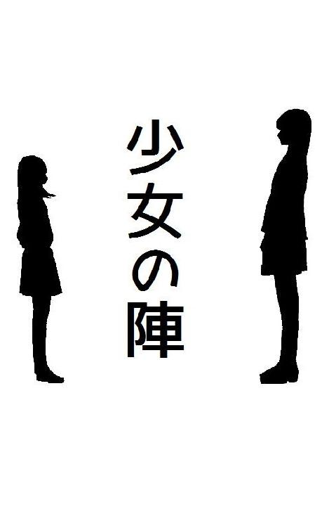
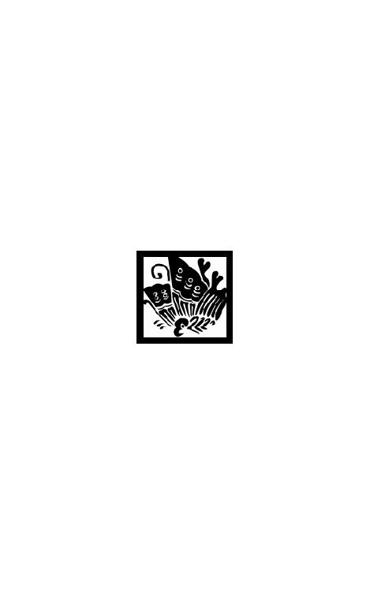

| 少女の陣 ガールズレビュー (4seasons song) | |
| 友桐 夏 | |
| (2018) | |

わたしが嫌いですかと訊ねたら、あなたが嫌いよと笑って言われた。
だからわたしは穴を掘りはじめた。
罠にかけるなら相手の生活パターンも性格も、きっちり知り抜いていなければならない。
身長、体重、起床時間に就寝時間。必要な情報を集め不確定の要素を排除し、確実に迅速に目的を達成するんだ。
彼女のあの澄んだソプラノの声への対応策として、穴を掘る場所は城址公園の奥に広がる空き地に決めた。そこならどんな物音も悲鳴も他人に聞かれる心配はない。
まだ肌寒い季節のうちに、その夕暮れ時に、深く深く掘った穴の縁まで、あの美しい人を引っ張ってくる。それがこの計画のいちばんの難所だけれど、なにを囮にすれば彼女が警戒もせず追ってくるかはもうわかっている。
そう――、餌はわたしだ。
１
姉は長女で十七歳。身長百六十二センチ。体重四十九キロ。
家族構成は両親と三つ違いの妹と、クラウディ・スカイという名の猫が一匹。
現在の姉の母は姉の実の父の再婚相手で、わたしという妹は義母の連れ子だ。姉の実の母とわたしの母は高校の同級生で、親友だった。
卒業後は別々の道に進み、しばらく連絡もとっていなかったらしいのだが、共通の趣味を持っていたため数年後には会員制の即売会で再会した。そして即売会で新たに知り合った男性を加えた三人で、再び親しくつき合うようになったという。
彼女たちは特定の昆虫を特別に愛した。
種類によっては生体も標本も宝石ほどの高値で取り引きされるその美しい虫の静かな羽ばたきを愛でながら食事や会話を楽しむことを喜びとし、やがて一組のカップルとその友人という関係に――やがて二組のカップルとなり、やがて二人の妊婦と――なってからも折々に雅な交流を続けていた。
姉の母は娘を胡蝶と名づけた。
わたしの母はわたしを揚羽と名づけた。
姉は胡蝶。わたしは揚羽。
義理の姉妹らしからぬ命名の理由がこれだ。
姉とわたしがはじめて顔を合わせたのは、昨年のクリスマスだった。
その夜、わたしと母はタクシーで市内の城址公園に向かった。
公園に隣接する一軒家で開かれる、母の古くからの友人主催のクリスマス・パーティに参加するため、とわたしは聞かされていた。まだ三十代で艶やかな雰囲気の母と並んで見劣りしないよう、わたしも襟ぐりの開いた黒いワンピースを選び、中途半端にのびた髪を結い上げ、精一杯おとなっぽく装っていた。
母はとても社交的な女性だ。人の大勢いる賑やかな場所をなにより好む。警戒心がないのかと思うほどのお人好しでもあり、母子二人暮らしの頃には仕事帰りに寄ったどこかの居酒屋で意気投合した学生グループとか、不倫がばれて自宅に帰れなくなった懲りない感じの人妻とか、これから駆け落ちすると意気ごむ高校生カップルなどをたびたび自宅に連れ帰り、数日から数週間も世話を焼いたり相談にのったりしていた。
おかげで幅広い年代、幅広い職業の友人があちこちにいて、いろんなイベントにしょっちゅう招待されている。一人娘のわたしもそれに同行することが多く、必然的に人見知りせず年長者とも渡り合う、良く言えば物おじしない、悪く言えば生意気な性格になった。
今夜はさぞかし立派な豪邸で大人数のパーティが催されるんだろうな。
母の華やかな服装を根拠にそんなふうに考えていたから、車内で何気なくゲストは母とわたしの二人だけと知らされた時には、驚くと同時に「もしや」と思った。
もしかして、今夜これから会う人は、母にとってもわたしにとっても将来にかかわる重要な相手なのではないだろうか？ タクシーの後部シートに身体をあずけ窓の外に目を向けながら、ドキドキする平たい胸をぎゅっと押さえた。
義父は奥深い穏やかな眼差しが魅力的な、落ちついた物腰の男性だった。
半円のポーチで挨拶と抱擁を交わす母と知的なキリンのような風貌の彼の姿を、わたしは火照った顔で、じっと見つめた。わたしの実の父はわたしが物心つく前に病気で亡くなっていたから、彼はわたしにとってはじめての身近な異性といえる。その外見が好印象だったこともあり、初対面のその時から反発めいたものはまったく抱かなかった。
続いて玄関に向かって廊下を進んできたのが、灰色の猫と姉だった。
先導する猫の静かな足つきと、つま先で着地する姉の歩みはよく似ていた。
襟と袖に毛皮のついた白いワンピースを着たほっそりした立ち姿も、まるで猫の化身のようだった。細くまっすぐな茶色の髪がうなじでひとつにまとめられ、耳から肩にかけての美術品めいた曲線がくっきり浮かび上がっている。
細い首に吊り下げられた銀のチェーンの先には、縦に長い楕円の翡翠。
眼差しは涼しげでいて深く、ふくらんだ唇は瑞々しく赤い。中学生のわたしがどれだけおとなっぽく見せようと努力しても到底持ちえない気品と色気が、姉にはあった。
《ようこそ、お待ちしておりました》
《こんばんは、胡蝶さん》
すずらん形の照明の下で、姉と母が優雅な微笑と挨拶を交わす。
次いで姉の視線が母の背後に突っ立っていたわたしにまっすぐ向けられた。
《はじめまして、揚羽さん》
姉の笑顔はまさに大輪の花。舞い乱れる胡蝶の幻影さえ見えた気がした。
城址公園の石垣を背にしたその家は、和洋折衷のレトロな外観を持つ木造建築だった。
漆喰の一部が剥げていたり柱や床が傷だらけだったりしたものの、それまでなんの変哲もない二ＤＫのマンションで暮らしていたわたしには広々した廊下や木枠の窓や絨毯敷きの階段が物珍しい。目玉じみた木目の浮き出た柱さえ価値あるもののように感じられた。
リビングでは本格的なクリスマス・ツリーに飾られた色とりどりの豆電球が一定間隔で明滅していた他、教会の窓を思わせる色ガラスの傘を持つ卓上灯や燭台の赤いロウソクにも明かりが灯され、天井や壁面で光と影が幻想的に揺らめいていた。
白いクロスがかけられたテーブルにはずらりとごちそうが並ぶ。
市内のいろんな店から手あたり次第にパーティ・パックを注文しました、といった料理の数々を囲んで、総勢四人のパーティはとても和やかに進んだ。
腰を落としてテーブルの周囲をうろつく猫を指差し《アールグレイですよね》と真顔でぼけたわたしに《ロシアンブルーよ》とモッツァレラチーズのピザをかじりながら母が言う。《惜しかったね》と母の向かいから義父がわたしに微笑みかけ《アールグレイは紅茶でしょう？》とシャンパングラスを持った姉がわたしの向かいで、くすくす笑う。
初対面で恥をさらしたと俯きながら、わたしはとても嬉しかった。
すでにひとつの家族みたいだと感じたからだ。
親子二人が四人になる。それなら、これまでより四倍楽しい日々が待っているに違いない。その時点ですでに母の再婚を確信していて、心からそれを歓迎していた。だからその数時間後の出来事は、まるで悪い夢を見たかのようだ。黒い翅の蝶が金の鱗粉を振り撒いて物知らずのわたしを冥途に誘う、絢爛豪華な蒔絵じみた美しい悪夢を。
《ここにね、蝶形骨という骨があるんですって》
姉の優しい囁き声が今も耳から離れない。
《胡蝶骨とも呼ぶそうよ。わたしの名前と同じなの。蝶のかたちの骨なんて、可愛らしいと思わない？ わたし、ずっと前から見てみたかった》
全員が食事を終えたあと、姉に誘われてわたしは二階に上がった。
廊下の突きあたりに丸窓があり、夜空の藍が真円に切り取られていた。丸窓の手前、右側の白い扉を指差して《そこよ》と姉がわたしを振り向く。
招き入れられた姉の私室は、白と茶を基調に木製の家具で統一された洋室だった。
正面の窓を姉が開き《寒椿の陰にクラウディ・スカイが隠れているわ》と指で示す。
窓は底辺が普通より低い位置にあり、姉に勧められて木枠に腰を下ろすと、ちょうど床に足がつく高さだった。いつか母と一緒に観た古い邦画で、大学生くらいの男女がこんな窓に腰かけて談笑していた。この部屋ももともと和室だったものを、姉の趣味に合わせて洋室に改装したのかもしれない。そんなことをあれこれ考えながら、興味深く姉の部屋を観察した。すっかり母に感化され蝶モチーフのものであふれ返っていた当時の自宅であるマンションのわたしの部屋とは違い、姉の部屋に蝶をデザインしたものは見あたらず、ファブリックはすべて無地で統一されていた。
外気が冷たいからと、姉が毛糸のショールを羽織らせてくれた。
ポケットから小さなガラスの瓶を取りだし、わたしに見せる。金貨のような蓋がはまった六角形の小瓶だった。ぎっしり詰まった青い飴玉が蛍光灯の光を受けて宝石めいた輝きを放つ。《食べる？》と訊かれ頷くと、ひとつ取りだしてわたしの口に入れてくれた。
身体を寄せ合うようにして窓辺に腰かけ、口の中で飴玉を転がすわたしを相手に、姉がいろいろな話をしてくれた。
たとえば人の美しさについての考察。
たとえば世界平和と人の強さについての考察。
よどみなく紡がれる柔らかな声にかさなって、母の笑い声が階下から聞こえた。わたしはとっさに振り返り、窓枠を掴みながら上半身を軽くうしろに倒して真下の庭をのぞきこんだ。そのわたしのこめかみあたりを姉が冷たい指先ですっと撫で、落ちついた声で囁いた。
そして次の瞬間、全身が外に投げだされ、微笑んだ姉の姿が逆さまになった。
重力がわたしを鷲掴みする。
とけ残っていた飴玉の欠片が口から飛びだし、どこかに消えた。
背中と膝を丸めた体勢でいたわたしはしなやかなクラウディ・スカイのように空中で一回転し、庭にせりだした木製のテラスに足から落ちた。
けれどもしも頭から地面に落ちていたなら、ぱっくり開いた傷口から、姉と同じ名を持つ蝶のかたちの骨が見えたのだろうか？
病院につくまで疾走する救急車の窓からたくさんの電飾を見た。
わたしは右足を骨折し、全治三か月の診断を受けた。一か月の入院を余儀なくされ、年末年始は殺菌作用のある薬品の匂いを嗅いでおとなしく過ごした。義父とともに姉も何度か病室を訪れ、そのたび右足を吊られた状態で横たわるわたしを見下ろし《かわいそうに》と眉をひそめた。
ごめんなさいね、揚羽さん。わたしがもっと目を配ってあげなきゃいけなかったの。そう繰り返し謝る姉に、どう答えればいいか、わからなかった。
わたしは勝手に姉の部屋の窓を開け、勝手に落ちたことになっていた。
悪い夢を見た――と信じられれば、どれほど気が楽になったかしれない。けれども、あの夜を境にわたしの頭に棲みついたわたしのものではない知識や価値観が、それを邪魔する。
蝶形骨。胡蝶骨。
本当に美しい人は、着飾ると下品になってしまう。シンプルでいて完成された美。月のような美しさこそが本物の美。
《そう、覚えておいて。言葉は力の源なのよ。だから本来、無闇に他人に放つべきものではないの。言葉とは第一にみずからを納得させるため頭の中で扱うもの。口数の多い賢者なんて聞いたことがない。世界平和を願うなら一人ひとりがもっと無口になることよ。わたしも戒めなくてはと思うのだけれど、なかなか実践できないわ》
《大切なのは、なにがあっても怖がらないこと。たとえ悪人であっても常に堂々としている人は魅力的に映るものよ。心の弱い大多数にとっては善悪を越えて憧れの対象にさえなりえてしまうの。だからこそ、もしもあなたがこの世の正義を望むのであれば、すべてを憎むと決めた悪人以上に、すべてを愛する必要があるわ。憎しみで恐怖心をはじき飛ばした悪に対しさえ愛を抱けるのであれば、もう誰にもあなたの世界を脅かすことはできないでしょう》
あの夜、姉は一方的に話し続けた。
わたしは姉の発する言葉とその内容に魅せられ、ただただ耳を傾けていた。だからなにかの拍子に姉を怒らせてしまったとは考えられない。本当に蝶のかたちの骨を見ることが目的だったわけでもないはずだ。ではなぜ、姉はわたしを二階の窓から突き落としたりしたのだろうか。
入院中も退院後も、こればかり考えていた。
たとえば。
ううん、もしかしたら。
ぐるぐると遠まわりしたあげく、いつも同じ答えにたどりついて肩を落とす。
統一感のない料理の並ぶテーブルを囲んでわたしは家族が増えることを予感し喜んだけれど、姉はわたしとわたしの母が家族に加わることを、たぶんきっと迷惑に感じたんだ。
わたしと母は二人ともお喋りでそそっかしく、頻繁に物を落としたり転びかけたり、叫んだり笑ったりしている。一方、姉と姉の父はいかにも落ちついたおとな同士のように少ない言葉で意思疎通し、動作は的確で無駄な音など響かせない。
あの父と娘の生活は、きっと静かなものだったろう。
食卓で耳を澄ませば、庭を吹き抜ける風の音や葉擦れの音さえはっきり聞こえる。レース編みのようなガーデンテーブルを囲んでティーカップを傾ける見目麗しい親子の姿を想像すると、その清らかさに溜め息がこぼれる。ここに母とわたしが加わることは、モネの名画をラインストーンでデコレーションするような暴挙に等しい。
胡蝶さんに突き落とされた、とわたしが言ったなら母はおそらく信じてくれた。
けれどもきっと、姉の父は姉の言い分をこそ信じたはずだ。
その場合、彼にとってわたしは自分の不注意で転落していながら姉に罪を着せようとする意地悪な娘となり、母にとって姉は自分が突き落としておきながら素知らぬ顔で見舞いにくる暴力的で恥知らずな娘となる。これは姉の父とわたしの母が再婚を考え直すきっかけになったのではないだろうか。姉の狙いもおそらく、これだったのだろう。
誰にも相談できないまま日々が過ぎ、一月下旬には姉の父とわたしの母が入籍した。
結婚式や披露宴はなく、郊外の小さなレストランで身内だけの食事会が催された。
父とともにあらわれた姉は曇りのない笑顔で母に薔薇の花束を渡し、わたしに淡いピンクのフリルのようなスイートピーの花束をくれた。
《退院、おめでとう》
その花言葉は門出、思い出、わたしのことを覚えていて。
週末の二日間で、城址公園を背にした一軒家への引っ越しを、慌ただしく済ませた。
わたしはこの機に子供っぽいデザインの洋服や鞄、昨年の大河ドラマに影響されて集めだしていた戦国グッズや兵法の書を処分した。そして週明けからは姉が通っていた私立寵桜女学院の中等部に通いはじめた。
中二の三学期という中途半端な時期を境に、身内以外の人間関係が白紙に戻った。
幼馴染みやクラスメート、歴史研究会の仲間たちとの約束も予定も、ごっそり失せた。けれども悲しみや寂しさはない。たっぷり生まれるはずの空白や喪失感を、たったひとりが補填する。
姉という家族。姉という先輩。姉という唯一無二の美しい蝶――
彼女の生活は規則正しく、言動は優等生そのものだった。
読書や自習で夜更かしした翌朝であっても早起きで、朝食を済ませたあとの小一時間、庭の草木の世話をする。新たに咲いた寒椿の花に微笑みながら虫にかじられた穴あきの葉をつけ根からポキンと折って捨てる。そして時間が来ると庭に面したリビングのガラス戸から室内をのぞき、寝ぼけ眼でトーストをかじるわたしに《行きましょうか》と微笑みかける。
高等部校舎と中等部校舎は共用の第二グラウンドを挟んで隣り合っている。だから二人並んで登校するのがわたしたちの日課になった。
自分の鞄とわたしの鞄をかさねて持って、姉が松葉づえのわたしの隣を歩く。
学校までは約三キロの道のりだ。姉とわたしの自宅は町はずれの一軒家であるため、歩きはじめてからもしばらく二人きりの状態が続く。横目に様子を窺えば、品のいい光沢を放つ白いコートに包まれた姉の丸い胸のふくらみがある。わたしと姉では、頭ひとつ分以上もの身長差がある。ふとわたしを見下ろす姉の視線を頭上に感じることが日に何度かあったものの、顔を上げ、姉の表情を確認する勇気はいつもなかった。
わたしという不格好な幼虫を見つめる姉の眼差しがどんなものか。
それを知ってしまったら、きっともう二度と並んで歩いたりなんてできない。
《自転車は水鳥の足。バスは釣り堀の魚になった気分。だからわたしと歩きましょうね》
かかわるものすべてに容赦なく向けられる姉の辛辣な選別をわたしは恐れた。そして卑屈に感覚を閉じ、姉にとってのわたしについて一切考えないことを選んだ。鈍感さと強さはまったく別のものだけれど、得られる効果はほとんど同じだ。
売店のお勧めはパンコーナーのシナモンロールとデニッシュリング。学校近くのケーキ・カフェ〈花時計〉には常連客のみ案内される半地下の小部屋があり、そこでいただくホットチョコレートとブルーベリーマフィンのセットが格別においしい。
現実的な話題であっても姉が語れば等しく物語めいた輝きを放つ。わたしは松葉づえと左足を交互にだしてかぽかぽ不格好に歩きつつ、姉の言動すべてに注意を払った。
気持ちがそわそわすることを、英語では「胃の中に蝶がいる」と表現する。
これもまた姉から教わった煌びやかな知識のひとつだ。美しい昆虫を愛でる両親のように、姉に魅せられたわたしの心の中を縦横無尽に飛びまわる蝶。平日の朝、わたしがどれほど胸躍らせて隣を歩いていたか――どれほど熱心に観察していたか、姉はきっと知らないだろう。
昇降口での別れ際、姉はいつも眉をひそめ、いかめしくわたしを見下ろした。
《足元に気をつけてね。帰りは一人だけど、よそ見も寄り道もしては駄目よ、揚羽さん》
わたしは背筋をのばして姉を見上げ、いつも素直に頷いた。
聡明に、そして従順に。
そのようにあれと姉が望むのなら、どのようにでもなってみせよう。
姉の洗練された言動に触れて過ごしていれば、イモ虫がさなぎになり、さなぎを破って美しい黒斑や青筋の蝶があらわれるように、わたしも鮮やかに変われるはずだ。姉の家族としてふさわしい妹にわたしがなれば、きっともう二度と逆さまの夜を見ることはない。
《ありがとうございます。行ってまいります》
そう強く信じていたんだ、あの頃はまだ。
２
学期半ばの転校生であるわたしに、クラスメートたちは親切だった。
良妻賢母の育成をモットーにした昔ながらの校風らしく、目立つことを嫌い調和を愛する保守的な少女が大半を占めていたからだ。すでに骨折しているわたしを生意気な転校生と見なす生徒もなかったようで、初日から大盤振る舞いの同情と思いやりを体験した。
けれどわたしは当初この環境に馴染めなかった。
彼女たちは一様におとなしく、言動のテンポがゆるやかだった。
行動を起こす前に考える癖がついていて、けたたましく騒いだり、ふざけて駆けまわったりすることはない。わたしが例によってぼけた発言をしても、お腹を抱えて大笑いするなどということはなく、ただ可憐に小首を傾げ、短く戸惑いの言葉を発するのみだ。
《......はい？》
男女共学の賑やかな公立校で中二の二学期までを過ごしたわたしには、授業中の静けさも休み時間の平和さも、異様に思えて仕方なかった。黙っていては落ちつかず、口を開けば妙に言葉も声も上滑りし、なおさら居心地の悪さが強まる。やがて彼女たちと打ち解けるための努力を放棄し、学校生活は捨てようかとさえ考えはじめた。
けれどそうして無駄な力を抜いた時、はじめてその環境の真価に気づいたのだ。
彼女たちの立ち居振る舞いは、姉のそれとよく似ていた。
動き、しぐさ、声のトーン、他人に向ける眼差しの優しさ。
自然と彼女たちの言動に注意を払うようになり、それによってわたしは聞き役にまわることが多くなった。するととまっていた歯車が動きはじめたかのように、彼女たちとの溝がみるみる埋まっていったのだった。
《揚羽さんはクラスメートを自分のペースに巻きこむことで、教室を自分にとって居心地のいい場所に作り変えようとしていたのね。それに彼女たちがのってこなかったから疎外感を強め、少し被害者意識を抱くようにさえなっていたの》
二月上旬の朝、空気は冷たく、吐く息は白い。
綿菓子のような靄に包まれながら新しい学校での生活はどうかと訊ねた姉に、わたしはそれまでの約一か月間、自分がどんな環境にいてなにを考えたか、姉に関する部分だけ慎重に取り除いた上で、率直に語った。すると姉は苦もなく分析し、なぜかちらりとわたしの松葉づえを見たのだった。
《誰だって好きな相手には合わせようと思うものよ。歩幅のようにね。その小さな気配りが相手に伝わり、やがて自分に返ってくるのよ》
静かな環境で大切に育てられたことが窺い知れる穏和な彼女たちと石膏で足を固められたわたしとでは、キャベツの葉に産みつけられた黄色い卵と空気鉄砲から発射されたプラスチックの弾ほど違う。合わせよう、と心がけたところでつけ焼刃のわたしなど見る人が見ればすぐにまがいものとわかるだろう。
けれども丸い珠のようななだらかな心を持った彼女たちは初日から当然のようにわたしを仲間として認めてくれた。その事実が今も未熟なわたしに勇気をくれる。ただ時が満ちていないだけであって、種が違うわけではないんだ。今はまだ不器用に真似るだけのわたしだけれど、こうしていればいつかきっと姉や彼女たちの生みだす調和にだってとけこめるはず。
親友と呼べる存在も、その頃できた。
クラスメートには植物の名を持つ生徒が三人いた。
花の名を持つ女子生徒なら前の学校にもいたけれど、こちらの花は「白藤」「小手毬」「木蓮」とどことなく格調高い。わたしはそのうちの一人、小手毬と仲よくなった。
姉から聞いたケーキ・カフェ〈花時計〉にも小手毬と行った。
しかも放課後では混んでいるからと、わたしたちは私服を鞄に忍ばせて登校し、昼休みにお手洗いの個室で着替えた。冬場はコートで制服など隠れてしまう。しかも昼休みに一時的に学校を抜けだすのだから、姉に禁じられている「寄り道」でもない。この点に目をつけたわたしの頭脳的采配である。
制服姿の生徒たちを横目に、実は私服姿のわたしと小手毬が廊下を歩く。用もないのに教員を呼びとめ授業内容の質問をするわたしの横で、小手毬は青褪めていた。《悪い虫がつかないようにと女子校に入れられたのに》と漏らす小手毬に《大丈夫、蝶は害虫ではないから》と明るく告げて市街地への近道である裏門をくぐり、ケーキ・カフェに入店してからコートを脱いだ。
西洋骨董調の店内は床も天井も飴色の板張りだった。
傘の骨を曲げ先端に裸電球を取りつけたような簡素なシャンデリアが等間隔にぶら下がる。壁に沿って木製の陳列棚が並び、ちまちました洋菓子の他、青磁のカップや皿も恭しく並べられていた。まだ正午過ぎということもあってか、客はそう多くなかった。談笑する身なりの派手な中年女性二人と、一人でコーヒーを楽しむ銀髪の老婦人。それからテーブルに大量の書類とノートパソコンを広げたスーツ姿の男性が一人。
わたしと小手毬は窓辺のテーブル席に案内された。
おとなっぽく見えるようにと考えた結果、わたしは少々パンクな鋲つきシャツとミニスカート。小手毬は同じ理由でなぜか喪服を選んでいたから、わたしたちはどこからどう見てもあやしい二人連れだった。けれども首に極楽鳥めいたスカーフを巻いたおば様たちや仕事に追われるビジネスマンより、わたしたちのほうがずっとあの異世界めいたレトロな空間に馴染んでいたのではないだろうか。
厚みのある洋書が並ぶ本棚に目をとめ《ここ、市議会薬局に感じが似てる》と呟いた小手毬に《どこの市議会？》と訊いてみると《エストニア。ヨーロッパ最古と言われているの》と噛み合わない返事があった。
わたしの耳が問題なのか、それとも小手毬の頭が問題なのか。
考えこんでいると気が済んだように顔を正面に戻した小手毬が《わたしは市議会薬局の近くにある旧市庁舎のほうが好みだったの。北ヨーロッパに唯一残るゴシック様式の建物だって父が教えてくれたわ。去年の夏、家族で行ったの。エストニアとラトビアとリトアニアのバルト三国》とにっこり笑う。わたしは一家団欒を誇った小手毬の足を松葉づえで一撃し、皮のカバーに包まれたお品書きに視線を落とした。
注文したのはもちろん、ホットチョコレートとブルーベリーマフィンのセットだ。
半地下の小部屋でないのが残念だけど、同じものを過去に姉も口にしている。そして「格別においしい」という（たぶん）最高級の賛辞をそれらに与えた。やがて運ばれてきた飲み物と焼き菓子をはじめて一般公開された国宝でも見るような気分で眺めていると《お菓子を召し上がるのははじめてですか......？》と小手毬が恐るおそるの口調でわたしに訊ねた。
小手毬はわたしと親しくなる前から姉のことを知っていた。
それだけなら別に不思議ではない。
あの姉のことなら高等部のみならず中等部にだって知れ渡っていて当然だ。けれど小手毬にとっての姉は、ただの憧れの上級生などではなかった。
ホットチョコレートのカップ片手に、この店の常連である姉の――親同士の再婚に伴うものであるとはいえ――妹であることを明らかにしたわたしに、小手毬は《じゃあ胡蝶さんと一緒に暮らしているの？ あの胡蝶さんと？》とくどいほど確認をとった。
小手毬はその数日前、姉と並んで登校するわたしの姿を偶然目にし《転校生が怪我を理由に見ず知らずの先輩に荷物を持たせている！》と青褪めたのだそうだ。《だってあの胡蝶さんが誰かと登下校をともにされている姿なんて、それまでお見かけしたことがなかったから。まさか胡蝶さんが自主的に揚羽さんの鞄を持ってさしあげてるなんて思わなかったの。だって、あの「胡蝶の乱」の胡蝶さんだもの》
それはいったいどこの国の反乱なんだか。
また噛み合っていないのかと思ったけれど、次いで小手毬が口にしたフルネームは確かに姉のものだった。
《現在高等部二年の胡蝶さんといえば、我が校の声楽部では伝説と称されるほどの人よ。伝説の歌姫。あの有名な胡蝶の乱だって、胡蝶さんだからこそ、それほどのことができたんだって、その点ではみんな意見が一致してるの。わたしが中等部に入るのと同時に胡蝶さんは高等部に進まれたから直接お話させていただく機会には恵まれなかったけど......でもわたしの姉が当時声楽部の副部長だったから、その一件について、一度だけ詳しく話してくれたわ。本当に、一度だけ。あの場に居合わせた者として警告を発しないわけにはいかない。そんなふうに言ってたっけ》
それは今からおよそ二年前の出来事だった。
姉は中等部の三年生で、当時は声楽部に所属していた。
寵桜では基本的に部活動は中高合同でおこなう。その頃の声楽部には、中等部生と高等部生、合わせて百八十人もの部員がいたのだそうだ。
そして毎年四月には新入生歓迎公演と銘打ち、高等部生と中等部生――正確には高等部の新二、三年生からなるグループと、高等部の新一年生と中等部新二、三年生からなるグループ――にわかれ、それぞれオペラを上演する。これに先駆けて前年の十月末、主役を決めるオーディションが部内で大々的に催された。
姉と競えるほどの実力を持つ中等部生は部内に一人だけで、オーディションは事実上二人の一騎打ちとなったという。《でも中等部のオペラで主役を演じるのは胡蝶さんで決まりだと部員の誰もが思ってたらしいの。だって演目がトラヴィアータだったから》と小手毬は言う。
《ヴィオレッタもトスカも、もちろん蝶々さんも、胡蝶さんのはまり役よ。そしてカルメンやサロメなら花陽子さん。胡蝶さんがミミなら、花陽子さんはムガッタなの。胡蝶さんがアイーダなら、花陽子さんはアムネリス。ソプラノの胡蝶さんとメゾソプラノの花陽子さんは一年の頃から飛び抜けて素晴らしかったそうだけど、それぞれタイプが違っていたから、役を競って火花を散らすということはそれまで一度もなかったらしいわ》
けれども番狂わせは存在した。
姉は落ち、選ばれたのはメゾソプラノの花陽子だった。
一人で審査を務めた男性顧問はその場で花陽子の歌を絶賛し、そして姉の歌を《基本すらなっていない。自己満足の見世物にすぎない》と切り捨てたという。
わたしは怒りのあまりフォークで自分の手を突きそうになった。《そんな使えない顧問は学校から――いや、この国から叩きだしてしまえばいい！》と吠えたわたしに《オペラ好きの校長が大金を積んでイタリアから召喚したらしいの》と言いにくそうに小手毬が告げる。なんでも、専門の大学を卒業したあと本場イタリアでさらに声楽を学び、現地のステージで活躍していた知る人ぞ知る一角の人物なのだそうだ。
三十代半ばにして声帯を傷めプロとして活動を続けるのは難しくなったため「ぜひ我が校の音楽教師に」という校長の誘いを受ける気になったらしい。二年半前に帰国し、我が校の音楽教師兼声楽部顧問に就任した。まわりくどくも上品な言葉づかいで顧問の経歴を説明しながら、小手毬は器用にフォークを振るい、青い陶器の皿の上でもとは二等辺三角形だったガトーショコラを小さな正四角形に分解していく。
《胡蝶さんも根っからのオペラ好きで、丹澤先生のことは以前からご存じでらしたそうよ。直々に指導していただけるなんて夢みたいだ、ってとても喜んでらしたとか。もとから熱心な部員だったけど、先生が就任してからは学業そっちのけでうちこんでらしたって。部長があきれて胡蝶さんに注意したことすらあったそうよ》
そんな意欲あふれる姉を批判するなんて、声楽家としても教師としても失格だ。激しく悪態をついたわたしに、小手毬は《そうなのよね》と当然のように同意した。
だがすぐに引っかかりを覚えたらしく眉をひそめ《でもね》とためらいがちに呟きながらケーキに向けていた視線をわたしに戻した。
《胡蝶さんの声は、なんというか、とても不思議で......》
慎重な口振りで続け、わざわざフォークを皿に置き、居住まいを正す。
《胡蝶さんの声はね、耳元に突然あらわれるようなの》
まるで妖精がわたしの耳元で羽を休め、そっと歌いだしたみたいに。小手毬は軽く丸めた手で自分の耳を包みこむようにしながら姉の声をそう評し、うっとりと息をついた。
小手毬は過去に一度だけ、姉の歌を直に聴いたことがあるのだそうだ。
《大きい声ではなく、通る声なの。それも声を張っているようではないのに、異様によく通る声......。小学五、六年生の子供とその保護者を集めた説明会で胡蝶さんのデモンストレーションを聞いた時、鳥肌が立ったわ。声楽とかオペラとか、それまでぜんぜん興味なかったのに。絶対にあんなふうには歌えないってわかっていたけど、それでも胡蝶さんと一緒に歌いたいって思ったから、中学受験を決めたの。入ってみたら一足違いで胡蝶さんは退部していたわけだけど、でもやっぱりあの歌声が忘れられなくて。わたしと同学年の新入部員は、ほとんどがそうよ。胡蝶さんの歌には、強烈に人を惹きつけるなにかがあったわ。わたしの姉だってしょっちゅうすごいって言ってたもの》
現在は名の通った音楽大学の学生である小手毬の姉は、今も姉の歌を高く評価している。
後日、わたしという姉の妹と仲よくなったことを小手毬が話すと、彼女は《現役のプロにだって胡蝶さんのように歌える人は一人もいない。彼女の声にはなにかが宿っているようだった。わたしたちとは次元が違った》と電話口で当時を懐かしんでいたそうだ。
だが続けてこうも言ったという。
《でもそれはあくまでも感覚的なものだから、先生が技術的な観点で胡蝶さんの声や歌を批判したなら、ただの中高生にすぎないわたしたちは、そうなのかって受け入れるしかなかったわ。丹澤先生のご指摘が正しかったのか、間違っていたのか、未だにわからない。ただ彼女があれをきっかけに歌に捨てたなら、わたしたちは恩寵をひとつ失ったとさえ言えると思う》
その才能が特異なものであったからこそ――他にない特別なものであったからこそ、誰も姉を肯定できなかったのだそうだ。
そして姉自身でさえ、自分を肯定できなかった。
オーディションの翌日から姉は他の部員の歌を熱心に聴き、それを真似ようと努めはじめた。
主役に選ばれた同級生の声に耳を澄まし、顧問に褒められた下級生にすら楽譜を片手に教えを請い、部員たちの歌を録音しイヤホンで登下校中も聴いていた。当時の部長と小手毬の姉である副部長は姉に指導を求められたくないばかりに、喉を傷めたふりをして、翌年の春まで必要な時を除いてほとんど声をださなかったそうだ。
《――だって身の程知らずではないもの》
もしも自分がその場にいたなら同じことをしていた、と小手毬は言いきる。
そして自分の姉の口から過去に聞いた話として、彼女たちと同じようにみずからを恥じ、姉の前ではことさら控えめに振る舞っていた上級生や同級生や下級生が大勢いたこと。その一方、得意顔で姉に歌い方や発声を指導していた上級生や同級生や下級生も少なからずいたことを教えてくれた。
わたしはげんなりしてブルーベリーマフィンにフォークを立てた。
たとえば人の美しさ。
たとえば世界平和と人の強さ。
物事を深く考えるたちの姉だから、顧問の評価を疑うこともあったかもしれない。けれども姉は自分の感性こそが正しいと闇雲に信じるような人ではない。部員の歌を聞き、明らかに自分より劣っていると感じたとしても、そう感じる自分の耳や感性こそ間違っているのではないかと考えたはずだ。だからこそ姉は部員の歌を聞き続け、部員に教えを請い続けた。
否定された者である姉には、肯定された者の声や歌に自分にはないなにかを見つけることこそ唯一の正しい策であるように思えたのではないだろうか。
そのなにかの存在を疑うことは、顧問の能力を疑うことに直結する。「身の程知らずではない」と姉の前で歌わなかった高潔な部員たちと同じように、姉もまた「身の程知らずではない」と自分の感性を否定しなければならなかった。
もしもわたしがその場にいたとしても、姉のためにできることはなかっただろう。顧問の評価はおかしいと姉に告げたとしても、それは姉より三つも年下の素人の感想でしかない。けれど仮に姉より年上の部長や副部長が姉を肯定してくれていたとしても、やはり姉にとって慰め以上のものではなかったはずだ。誰もが認める実力と経歴の持ち主――プロとして舞台に立った過去を持つ顧問の言葉であったからこそ、姉は信頼して受け入れ、自分の感性を白紙に戻して他人の感性を基準に据えた。
そうして秋から翌春にかけ、他の部員が新入生歓迎公演の練習に励む中、姉は部室の隅でひっそりと練習していたそうだ。その頃の姉について、小手毬の姉は多くを語らなかったらしい。ただ《あの時からすでに胡蝶さんは普通の状態ではなかった》と言い《ストレスのせいだなんてありふれた言葉で済ませたくないわ》と言葉を濁した。
当時を知る上級生である現高等部二、三年生から下級生に伝説と称して語り継がれるゴシップによれば、その数か月間、姉は思考力や注意力を喪失した状態にあったそうだ。
忘れ物が多くなり、机や物に手足をぶつけることが多くなった。詳しく知っていたはずのオペラ作品についてなにひとつ思いだせなかったり、発声練習すら満足にこなせなかったりした。
部員の名前を間違える。場違いな受け答えをする。
呼んでも気づかず、目を合わせない。
身なりにかまわなくなり、肌荒れが目立つようになった。成績もずいぶん落としたらしい。
口の悪い部員は《胡蝶さんは歌を批判されたショックでおかしくなった》と言い、また別の部員は《愚鈍になった》とさらに辛辣な言葉を吐いた。《言えばなんでも信じこんで実行するからおもしろい》と故意に姉にでたらめを教え、そのとおりに行動し周囲から不審の目を向けられる姉の姿を笑って見ていた部員さえ、いたのだそうだ。
そして翌年三月、新入生歓迎公演の直前にそれは起きた。
場所は学校の敷地内に建つ大講堂の舞台。声楽部の中等部生たちによって本番さながらに演じられるオペラ『ラ・トラヴィアータ』。高等部の部員は観客席に座り、下級生のたどたどしい演技を見つめ、歌声に耳を傾けていた。その最中、小さなアクシデントにより役つきの部員が軽い怪我を負い、手あてのため一時的に舞台をしりぞくことになった。
この代役として指名されたのが、観客席にいた姉だった。
《丹澤先生は胡蝶さんにチャンスを与えたのだと思うの。ううん、そう信じたいというのが本音よ。その頃、胡蝶さんは誰の目にもはっきりわかるほど、尋常でなかったそうだから。かなり精神を病んでいるように感じられたと話す先輩もいたわ。そんな状態の胡蝶さんに部員やゲネプロの客の前で歌わせるなんて、残酷でしょう。でも胡蝶さんなら見事にやり遂げてくれるはずだ、と期待した部員も多かったそうなの。わたしの姉もその一人よ。恥をかかせるのが目的だったに決まってると言う人もいるけど、そうであってほしくないわ。胡蝶さんに対する先生の指導が間違ったものであったなら、今現在、わたしや部員に対して先生がかけてくださる言葉もレッスン内容も、すべて疑わなければならなくなるもの》
姉はドレスがわりのショールをまとい、舞台に上がった。
この一件について小手毬に語った時、彼女の姉は不安げに揉み手し、小さく震える声で同じ言葉を繰り返したという。
《怖かったわ。そう言うしかないの。本当に怖かったわ。ただ、怖かった。本人にはとても言えないけれど、胡蝶さんの歌を聞きながら「穢れた」とか「堕ちた」って言葉が何度も頭に浮かんだの。音階も旋律も正しいのに、頭の中に不協和音が降り積もるのよ。あと一小節でも長く胡蝶さんが歌っていたなら、わたしはきっと悲鳴を上げていたわ。ううん、頭がどうにかなっていたかもしれない》
その怯えた姿を目のあたりにし、中等部の入学式を翌月に控えていた小手毬もまた強いショックを受けたのだそうだ。
音階も旋律も正しいのに、聴いた者の頭の中に不協和音が降り積もる。
それがどんなものなのかわたしにはわからない、と小手毬は顔を強張らせてわたしに言った。
《でもわかりたいとも思わないの。怖いもの》
《姉妹そろって》
《でも、怖いもの》
小手毬は真剣そのものの表情と態度で繰り返した。
《胡蝶さんが歌えば光のように周囲に満ちたあの奇跡的な歌声は、威力だけをそのままに、別のなにかを伝えるものに変わっていたって。触れてはならないものに触れてしまった気がした、と今の部長も話してらしたわ。そして最後にはやっぱり姉と同じ言葉を。怖かった、とても怖かったって......》
そして伝説は劇的な終わりを迎える。
舞台袖にいた一人の部員が、突然姉に駆け寄ったのだ。
メゾソプラノの花陽子は姉を平手打ちした。
歌声が途切れ、かわって会場に動揺と不安の声がひそやかに満ちる。
姉は花陽子を見上げると、無言で彼女の頬を打ち返した。
ぼろぼろと涙をこぼし、小さく首を横に振る。その肩から紺碧のショールが滑り落ち、むしり取られた翅のように冷たい床に折りかさなる。姉は一言もないまま舞台を降り、その日のうちに退部届をだしたのだそうだ。
そして姉に殉ずるかのように、翌日からの三日間に多くの部員が退部届を提出した。その数、実に六十三人。およそ三分の一の部員を道連れにした姉の退部によって、声楽部は新入生歓迎公演の中止と活動内容の見直しを余儀なくされることになる。
この声楽部史上初にして最大の不祥事とも囁かれる出来事は部のＯＧたちにも伝わり、姉を後輩として可愛がっていた十数人が連名で顧問の罷免を求める意見書を校長と理事会に宛てて送っている。だが就任の経緯が経緯であるためか、少なくとも表立って彼が処罰されることはなかったらしい。残された部員の説得により姉を含めた退部者六十四人のうち十四人は部に戻り、声楽部は新学期から百三十人での再出発となった。
これが小手毬の言う「胡蝶の乱」の一部始終だ。
姉を崇拝するわたしにとって、それは不愉快極まりない話だった。
胡蝶の乱。まるで姉の武勇であるかのように名づけられているけれど、その乱はおそらく壬申の乱や応仁の乱と同じ意味の乱ではない。混乱や惑乱の乱なのだろう。胡蝶の混乱、もしくは胡蝶の惑乱。この話は決して姉を称えるものじゃない。むしろ逆だ。
触れてはならないものに触れた結果が、それを招いた。
声楽部において伝説だというその話は、きっと大半の部員にとって適度な刺激を与えてくれる魅力的な怪談にすぎない。実在する身近な生徒の栄光と転落。そして大講堂での一件を、半信半疑で無責任に楽しんでいるのだ。
なぜなら姉を追いこんだ責任なら、顧問だけでなく、部員たちにもあるからだ。
姉の歌を批判した顧問に異を唱えず、姉に指導する部員さえいた。その状況を正すことすらしなかった。それによって姉はますます自信を失くし、他人の言葉を過剰に信じるようになってしまった。結果、姉の歌は本当に間違ったものになってしまった。
あの場に居合わせた者として警告を発さなければ。
小手毬の姉はそう言い、その一件について一度だけ小手毬に話したという。
つまり彼女は恥じて口を噤んだのだ。胡蝶の乱などと名づけ語り草にする部員たちと、小手毬の姉。どちらが誠実であるかは言うまでもない。物事を正しく解釈できる者にとっては二度と繰り返さないよう戒めとするのでない限り、語れるはずのない内容なのだ。
わたしは姉の静かな話しぶりを真似て、この考えを口にした。
小手毬は最後までおとなしく耳を傾けていたものの、話し終えたわたしが意見を訊くと、顎を引いて気まずそうに視線をそらした。
《わたしは少し、違うと思うな......》
《どこが違うの》
わたしは自分の解釈に自信を持っていたから強気だった。
小手毬はためらうような間を挟んで、おずおずと意見を述べた。
《居合わせた者としての警告というのは、揚羽さんが思っているような、部員に向けたものではないと思うの。姉がわたしに詳しく話してくれたのは、たぶんわたしが胡蝶さんの熱烈なファンだったからよ......。だから姉は、わたしに向かって警告したの。胡蝶さんの歌にはそんな危険な一面もある。不用意に胡蝶さんとかかわってはならない、と》
《だって》
わたしは戸惑って半笑いのような顔になった。
《姉は悪くないわ》
《もちろんよ》
小手毬は真面目な顔で深く頷き、テーブルの上で両手を組んだ。
十四世紀らしい装飾に囲まれた彫りの深い顔立ちの小手毬は、まじないや占いで生計を立てる異国の少女のようだった。電球色の光に照らされていてもなお小手毬の肌は白く、一房一房がコイルのような曲線を描く短めの髪は真っ黒い。
白い肌に黒い巻き髪。ああ、配色が逆転しているけれど、小手毬は白い毛皮をまとった肌の黒い羊にも似ている。わたしはいかにも温厚そうな小手毬の顔に目をとめたまま、話題とまったく違うことを考えていた。
《もちろん胡蝶さんは悪くないわ。丹澤先生がなにを基準に否定されたのかわからないけど、あんなふうに歌えた胡蝶さんに才能がなかったはずないもの。うまく歌える人はたくさんいるけど、魅力的に歌える人はそう多くない。しかも胡蝶さんはメロディーやリズムの助けを借りず、歌いはじめの一声で観客を虜にしてしまえるの。伝説の歌姫と称えられるにふさわしい人よ。でも、だからこそ、姉が教訓にすべきという意味で話してくれたとは思えないの。あの時の姉の様子だって、尋常じゃなかった》
神経質に手を揉む姿は、小手毬にそれを告げた時の彼女の姉の姿をわたしに想像させた。
怖かった、本当に怖かった。大講堂に響いた特異な歌声に怯えながらも、歌姫に憧れを抱く妹を案じ、彼女はただ一度だけ警告を発する。
――あの人は危険よ。近づいては駄目......
本当に、それこそが真実なのだろうか？
こんなこと言うべきじゃないのはわかってるの、と小手毬は声を暗くした。
《胡蝶さんにも失礼よね。でも揚羽さんに二年前の出来事を話しているうち、警告を発しなればと言った姉の気持ちが、わたしにもだんだんわかってきたの。揚羽さんがこうしてお昼休みに学校を抜けだしてまで贔屓のお店で贔屓のものを食べてみたいと思っている相手は、あの胡蝶さんなの。あの、胡蝶さんなのよ......》
わたしたちは五時間目がはじまる前に学校に戻り、制服に着替えなければならなかった。だからその後しばらく、それぞれ目の前のお菓子と飲み物に専念した。
わたしはブルーベリーマフィンを口に押しこみ、冷めきったホットチョコレートで流しこんだ。小手毬は切りわけたケーキを口に運びつつ、ちらちらとわたしの顔色を窺っていた。気づかうような眼差しが、何度もテーブルとわたしのあいだを行ききした。皿の上が片づくと小手毬は意を決したように顔を上げ、先にフォークを置いていたわたしを見つめた。
《部員には、胡蝶さんの歌を禍々しいものと言いきる人も少なくないの。彼女の歌は呪いを帯びた。またあんな騒ぎを起こさないために胡蝶さんを刺激してはいけないし、彼女を舞台に上げてもいけないって。呪いのような効果を生みだす歌なんて、と他の部の生徒に話せばきっと笑われるわね。でもわたしは、あの胡蝶さんになら、そんな歌さえ歌えるような気がするの。だから心配でたまらないわ。もう二年と思うか、まだ二年と思うか。揚羽さんがどう感じたかわからないけど、わたしにはまだ二年よ。まだ二年しか経ってない。揚羽さんが胡蝶さんを慕うのはいいことだけど、でもそれが胡蝶さんにとってもいいことなのかどうかは、わからないわ》
だから適切な距離を置いてつき合うべきだと小手毬はわたしに言った。
わたしは返事をしなかった。
小手毬がわたしの考えを受け入れなかったからではない。わたしの姉を危険人物であるかのように言ったからでもなく、ただわけがわからなかったからだ。
それが二年前であろうと二日前であろうと、姉に対するわたしの気持ちに変化が生じることはない。あの逆さまの夜を経験していてさえ、わたしにとって姉は理想の姉だ。それは相手が他の誰かではなく、あの姉だからだ。相手は「あの胡蝶さん」だからと小手毬が不安げに口にするのとは逆に、相手が「あの姉」だからこそ無条件に信頼できる。
やがてわたしと小手毬はそれぞれ無言で席を立った。
小手毬はわたしの沈黙を拒絶と解釈したらしく、かたわらで涙ぐんでいた。
わたしは無言でコートに袖を通し、松葉づえを脇に差し、無言でかぽかぽ通路を進んだ。レジの前で立ちどまって無言で伝票を小手毬に渡すと、戸惑った顔でわたしを見つめる小手毬を勇気づけるように頷き、無言で店をあとにした。
およそ一分後、ショッキングピンクの財布を握りしめたまま店から走り出てきた小手毬の猛抗議を《甘い汁を吸うのが蝶だ》と開き直って受け流し、この後も何度となくこの花の恩恵に浴することになる。
４
声楽部は事実上、オペラ部として活動している。
これには部の成り立ちが大きく関係している。今から十数年前、文化祭の催しとして、合唱部、ブラスバンド部、演劇部が合同でオペラを披露した。この時上演されたのが、当時合唱部とブラスバンド部を兼部していた才能あふれる高等部生が台本を書き作曲し、みずから指揮棒を振って上演した大長編ガールズオペラ『オーファンの物語』だった。
なんと四時間にも及ぶ大作だったが、これがあたった。
生徒はもちろん一般客にも来賓にも絶賛され、演奏で参加した生徒も歌と演技で参加した生徒も、すっかりオペラの魅力にはまった。再演を望む声も多かったことから翌年の文化祭にはさらにクオリティの高いものを発表すべく、役つきの合唱部員と演劇部員で引き続き練習をかさねることになった。
ビブラートをきかせた歌い方や演技の経験はない合唱部員と、歌う練習はしてこなかった演劇部員だ。どちらもオペラらしく歌うことが最大の課題だったことから才能あふれる彼女を初代部長として便宜上「声楽部」を立ち上げ、もとから所属していた部からの転部や兼部のかたちで活動をはじめた。その当時の活動内容が今も概ね受け継がれているため、声楽部ではコンクールや地区大会や他校との交流といった一般的な校外活動は一切なく、徹頭徹尾、学内公演の成功だけを目的に活動している。
ただし当初の設立理由として「新たな才能の発掘と育成」というのもあったため、訳詞や作曲の志願者も受け入れているのだそうだ。
《お芝居の台本を書いて、それに合わせて作曲して、演奏の指揮までしてしまうような傑出した才能なんて、そう簡単に出てこないわ。でもあのガールズオペラを見て、作品に感動するより、戯作家であり作曲家であり指揮者である彼女という存在そのものに感動して同じ道に進みたいと思う生徒も毎年いるの。そういう子たちが、いずれ本当に彼女を越えるなにかを生みだすかもしれない。だとしたらどこかに受け皿を用意しておかないと、ということみたい。声楽を勉強しながら作詞や作曲の勉強をしている部員もいるし、演劇部との兼部で脚本を書いてる部員もいるわ。ブラスバンド部の雨里さんは、作曲に関してだけなら現時点ですでに声楽部初代部長の彼女を凌ぐとさえ言われているのよ》
前期と後期、それぞれの集大成として年二回の公演があり、夏休み明けの九月初旬、文化祭に上演されるのが連続公演記録をのばし続けるオリジナルオペラ『オーファンの物語』。
そして四月初旬、新入生歓迎公演として披露されるのが簡略版の名作オペラだ。
基本的に一人が歌も演技もこなすけれど、男役に限り、演技担当と歌担当がわかれていて、歌のほうは役つきでない声楽部員全員が務めることになっている。役を任された部員の背後にずらりと並び、その演技に合わせて合唱するのだ。そのため公演では声楽部員全員が必ず一度は舞台に上がる。
本格的なオペラなら作品全体が歌になっているけれど、この舞台では主要な独奏曲と合唱曲に絞られていて、基本的に歌も台詞も日本語に訳されているから、客観的には少し変則的なミュージカルといったところだ。
今年披露されるのは、高等部の部員たちによるプッチーニ作曲のオペラ『トゥーランドット』と、中等部の部員たちによるリヒャルト・シュトラウス作曲のオペラ『サロメ』。『トゥーランドット』の主役であるトゥーランドット姫はすでに花陽子に決まっていて、オリジナルの独奏曲を含む三曲を彼女が歌うのだそうだ。『サロメ』は洗礼者ヨハネの伝説に基づいてオスカー・ワイルドが書いた物語を原作とするドイツ・オペラ。
ここまでの知識は小手毬から得た。
タイトルを聞いても、ぴんとくるのはひとつもない。そんな門外漢のわたしがオペラについて知りたがることに、小手毬は最初のうちあからさまに不安げだった。
小手毬の言う「あの姉」をお手本とし、その思考や行動をなぞろうとするわたしがいつか「あの姉」のようになるのではないか、と案じていたのだと思う。「まさにそれこそわたしの望み！」と本心をここで明らかにしていれば、その先の出来事はすべてなかったかもしれない。
姉の歌を「危険なもの」と小手毬は言う。
けれど当時のわたしには「歌は歌だ」としか思えなかった。
だからそれを証明すべく突き進むことに迷いはなかった。まずは声楽やオペラ作品について知識を得ようと、休み時間や放課後ひたすら小手毬に質問をぶつけた。
小手毬は当初ずいぶん渋っていたものの、わたしが姉に直接それを訊くよりはと考えたらしく、最終的には部の活動スケジュールや練習内容や主だったオペラ作品について教えてくれた。そしてわたしはその馴染みのない芸術について知れば知るほど自分の知識や感性の乏しさを悟り、知らず知らず無口になった。賢人とはすべからく口数が少ないものよ、と頭の中で姉が微笑む。
ケーキ・カフェでの一件から数日が経った週末の夜、わたしは父の書斎を訪ねた。
書斎備えつけのウォークインクロゼットが、家族兼用の書庫に改装されていたためだ。
床から天井まで続く書棚には父の仕事に関する色彩学の専門書の他、小説やエッセイの類も著者別、ジャンル別にきっちり整理されて並んでいる。
わたしの新たな家族である父も姉も、たいへんな読書家なのだ。そして新刊本の情報を得ては世間の評価を聞くまで待つ本とそうでない本にわけ、購入に博打の要素を持ちこまない。吟味された上で買い求められた書籍は翅を広げた蝶のかたちの蔵書印を押され、恭しくこの旧クロゼット――現書庫におさめられる。
もとからオペラ好きだったという姉が過去に読んでいたその手の本もあるのではないかと思い、夕食後にこっそり足を運んだのだった。
姉はクラウディ・スカイを抱いて自室に戻り、父と母はキッチンで食器を洗いながら楽しそうにお喋りしていた。話題はもちろん共通の趣味についてであったものの、映画『羊たちの沈黙』で犯人が犠牲者の喉の奥に詰めこんだメンガタスズメのさなぎがどうのこうのでは、新婚夫婦の会話を盗み聞きしてやれ、というわたしらしい悪戯心もさっぱり起きない。
わたしは松葉づえに重心をおき、上段の背表紙を端から順に確認した。
すっかりその作業に没頭していたから《なにをお探しなのかしら》と明るく問いかけられるまで、いつのまにか一階に下りていた姉が戸口からこちらを見ていたことに気づかなかった。
驚きのあまりわたしは松葉づえを放りだした。
当然ながら体勢を崩し、床に尻餅をついた。しかも背後の書架に頭をぶつけ、目の前に星が散った。《大丈夫？》と訊ねる姉の声が頭上から聞こえる。呻きながら目を開けると、白い天井を背景にわたしを見下ろす姉の小さな顔が間近にあった。
指先ほどの羽が大量についた天使の着ぐるみのような白いニットワンピースに、脚のかたちそのままのブルージーンズ。姉の美しさもまた月のようにかわり映えない。
慈悲深く手をさしのべてくれた姉の肩を借りてぎくしゃくと身体を起こしたわたしは、次の瞬間《小手毬という声楽部員と仲よくなったんです》となぜかいきなり口走った。
松葉づえを拾った姉がわたしの左脇にそれを差しこみながら、眉を上げる。
その訝しげな反応を目のあたりにしたわたしはさらに動揺し、全身の水滴を振り払おうとする犬さながらに首を振り《小手毬から今の揚羽さんにお勧めしたい作品といえば『魔笛』ですかね、などと言われたので、どんなものかと》と悲鳴じみた声で叫んだ。
墓穴を掘ったというより派手に自爆したようなものだ。「昔話の正直者か！」と自分を罵る自分の姿が頭に浮かんだ。姉の登場にどうしてそこまで動揺したのかといえば現行犯のストーカー行為を目撃されたからに決まっている。小手毬に心配されるまでもなく、姉に対する自分の気持ちがあまり普通でないことくらい、わたしはちゃんと自覚していたのだ。このままではいつかとんでもない犯罪行為にさえ手を染めてしまいかねない。そんな危機感さえ、この時すでに抱いていた。
姉は《モーツァルトね》と呟いてわたしに頷きかけた。
目の前にいるのが妹の皮をかぶった犯罪者予備軍であるとも知らず、優しい手つきでわたしの服の汚れを払い《才能に触れるのはいいことよ。あなたを成長させてくれる》ときれいな笑顔を見せてくれる。《確か映像ソフトつきの本があったはずよ。でも、ここの本棚ではないの》と澄んだソプラノの声でわたしに告げ、ついてくるよう目配せでうながす。
そうして姉はわたしに背中を向け、書庫の狭い通路を引き返しながら、ごく何気なくそれを口ずさんだのだった。
――So bist du meine Tochter nimmermehr.
あの時受けた衝撃はわたしの身体の奥底を未だに痺れさせている。
鈴の音や小鳥の囀りに多少似ていたけれど、そんなものじゃない。声というよりは音。音というよりは光。それも太陽のような強く暖かいものではなく、闇を切り裂く一瞬の閃光のような鋭い煌めき。「次元が違う」と評した小手毬の姉の言葉は正しいと、他の誰かの歌声と比べることなく実感できた。
たった一フレーズとそれに続く高音質のハミングだけで「歌は歌だ」というわたしの冷めた考えはくつがえされてしまったのだった。あと数秒でも長く姉の歌を聴いていたなら。それを想像することは少し恐ろしくもあり、かなり甘美な誘惑でもある。
寝起きの悪い人みたいに頭を振って、よろよろと姉を追いかけた。
姉がわたしを案内したのは、一階奥の小部屋だった。
引っ越してすぐの頃に姉から《ここは物置》と教えられた場所だった。
ノブは銀色、扉は深緑。萌黄色の壁紙には薄く若葉がプリントされている。部屋はほぼ正方形で出入り口は一辺の右端にある。
室内は雑多な品々であふれ返り、文字どおり足の踏み場もない。
けれども姉は握りこぶしほどの肩をちょっとすくめたり引いたりするだけで、するすると奥に進んでいくのだ。まるで姉という君主の訪問を歓迎し、押しこめられた荷物たちがみずから場所を譲っているかのように。そしてそのあとを追うわたしはといえば、積み上げられたダンボールや小箱に肩や手足や松葉づえをぶつけ、何度も雪崩を起こしかけた。体格ならわたしのほうが一まわりほど小さいのに、と思うと未だに腑に落ちないどころか寒気を覚える。
姉は壁に沿って移動し、向かって左奥の角で足をとめた。
追いついたわたしも隣に並び、部屋の隅に置かれた細長い本棚の存在にはじめて気づいた。
姉にうながされ反対の角に目をやると、そちらにも同じ木製の本棚がある。目の前の本棚には隙間なく書籍が収納されていたものの、タイトルから判断して一般的な小説は一冊もないようだった。大半が分厚く値の張りそうな専門書や映像ソフトだ。
《こちらの棚が、オペラ・リリカ》
姉の白い手が空間をひらりと横切り、反対側の壁面へ向かう。
《そしてあちらが、ムジカ・クラシカ》
気に入った本があれば持っていってかまわない。気軽な口調で告げて姉がわたしに背中を向ける。わたしは反射的に《また聞かせてください》と姉に声をかけていた。
《さっきの歌、今度は最初から最後まで》
振り向いた姉が口を開く前に《だって声楽部の友達が、すごかったって言ってたから》と無邪気を装って言葉をかさねた。だから次は最初から。もっと大勢の前で、明るい舞台で。そうすれば小手毬の誤解も解ける。伝説めかしたゴシップも消える。わたしはなにもかも簡単に考えていたから《歌えないのよ》と答えた姉に、きょとんとした顔を向けてしまった。
姉の顔に悲しげな微笑が浮かぶ。
《わたしには、もう》
姉は首を横に振り、悲しげに目線を床に落とした。
《もう、人前で堂々と歌えるようなものではないから......》
そんなことない、とわたしは言いかけたけれど、なぜか声にはならなかった。
数分前に聞いた姉の歌声は、確かにわたしを眩ませた。
呪いのような歌声なんて存在しない。その考え自体は変わっていないけれど、姉の歌が普通と違うことは実感できた。だからこそもっと聞きたい、最初から通して聞かせてほしいとわたしは思ったけれど、だからこそもう聞きたくないと思う人がいたとしても、納得はできないけれど理解はできる。
少なくとも声楽部員のほとんどが過去にそちらの反応を示していて、そのために姉も歌うことにためらいを覚えるのではないだろうか。自分の歌は呪いのように聴いた者を苦しめる。そんな恐れを抱いているのかもしれない。
そうですか、とわたしは未練たっぷりの顔で小さく答えた。
姉はわたしに宥めるような笑みを向け《歌に興味を持ったなら、声楽部に入ってみてもいいかもしれない。揚羽さんのおかあさんも揚羽さんも、とてもきれいな声だから》と明るく告げた。わたしの髪に軽く触れてから、物置部屋をあとにする。
一人になると、わたしは気をとり直して二つの本棚を確認した。
オペラ・リリカの本棚にはオペラ関係の本や映像ソフト、音楽ソフトが並び、ムジカ・クラシカの本棚にはクラシック音楽に関係する本や映像ソフト、音楽ソフトが並んでいた。
わたしはオペラ・リリカの前に立ち、目についた一冊を抜き取ってぱらぱらとページを繰った。鑑賞読本らしく、さまざまな作品の内容や裏話が記されていた。わたしが興味を持って読んだのは、やはり姉とかかわるものだ。
二年前、忌々しき胡蝶の乱のきっかけとなった作品、小デュマによる邦題『椿姫』の小説で有名な『ラ・トラヴィアータ』。これはイタリア語で「道を踏みはずした女」という意味らしい。娼婦ヴィオレッタと青年アルフレードの悲恋を描いた物語。
そしてプッチーニの名作『ボエーム』。小手毬曰く、姉のはまり役であるヒロイン、ミミは胸を病んで死んでしまう薄幸の美女。そして姉のライバルである花陽子のはまり役だというムゼッタは男好きで派手という、ミミとは対照的な女だという。
そうだったのか、とわたしは現実の人間関係や性格までわかったような気になり花陽子に対する反感を強めた。まだ見ず知らずの彼女を心の底から呪いつつ最下段におさめられていた『魔笛』のＤＶＤ付き鑑賞ブックを抜き取り、そのまま何気なくムジカ・クラシカの本棚へと足を向ける。
これもあれも、姉の蔵書。今はこうして物置とされる部屋で埃をかぶっているけれども、一冊一冊は確かに姉が吟味し手に入れたものだ。
姉がこの場に捨てたなら、わたしのものにしたっていいはず。
宝物を見つけたような気分で床を埋め尽くす混沌を避け、垂れ下がるなにかのコードを払いのけた。その拍子に、壁に掲げられていた一枚の絵に目がとまった。
澄みきった空を舞う薄紅の花びら。
それとも、夢幻のような花畑を舞う青白い蝶。
細い銀の額縁におさめられたそれは水彩画のように見えたけれど、顔を近づけて目を凝らした結果、どうやら違うと判断できた。誰かがペンや絵筆で描いたものじゃない。たぶんこれはコンピュータ上で作成されプリンターで専用紙に印刷されたデザイン画だ。ピンクと水色を基調に、にじむような色調で描かれた、いくつもの丸や三角。
インクの染みから心を読み取るロールシャッハ・テストみたいに、間近からじっと眺めてもなにが描かれているのか判然としない。けれども美しく優しい印象が頭に広がる。
ああ、これは。人に説明を求めるまでもなく、その絵から受けたインスピレーションによって、不意にわたしは理解した。これは、姉だ。透明な水のように清らかで、現実離れした夢のように濃密に甘い。つまりこれはデザイン会社の社長兼グラフィック・デザイナーの肩書きを持つ姉の父の手による、娘の肖像。光沢のある紙に写し取られ銀の額縁におさめられているのは、父から見た姉の心や声や姿、すべてを内包したイメージなのだ。もっとも美しい瞬間を狙って採取された、さしずめ幻想的な姉の標本。
でも、どうしてわざわざ物置部屋に？
リビングに飾られていたっておかしくない、とてもお洒落なインテリアなのに。
訝りつつ、足元の荷物を避けて二メートルばかりうしろに下がる。そして再び壁面に目を戻したわたしは、掲げられた絵の位置が少し不自然であることに気づいた。
デザイン画はオペラ・リリカとムジカ・クラシカのあいだに固定されているけれど、中央ではなく、ずいぶんと左寄りだ。だから右側に不自然な空間がある。そちらに同じサイズの額縁をもうひとつ掲げたなら、ちょうどシンメトリーになりバランスがよくなる。
わたしのイメージも描いてほしい、と父に頼んでみようかな。
うきうきした気分で考えたのは一瞬で、次の瞬間にはその空間が誰のものであったかに気づいていた。そして同時に、この物置部屋のかつての主が誰だったかにも。
目にしたはずのない過去の室内の光景が、たちまち脳裏に広がった。
出入り口から向かって右の壁には、明るい黄色のカーテンが吊された木枠の小窓。その隣に白い鏡台と、房飾りのついたデスクランプがのったサイドテーブル。床には厚みのある北欧風のラグが敷かれ、灰色のクラウディ・スカイがゴムのように身体をのばして気持ちよさそうに寝そべっている。出入り口から向かって左の壁の左右には、趣味で集めた本をおさめた二つの本棚。そしてオペラ・リリカとムジカ・クラシカのあいだには、自分と娘をモチーフとする夫の作品――......
ここはたぶん、姉の実の母親の部屋だったんだ。
姉の絵と対になる絵がそこに掲げられていたとしたら、その可能性はかなり高い。
まだそうと決まったわけではなかったけれど、わたしは急に居心地の悪さを覚えた。
その人について、この時点でわたしが知っていたことは、ほとんどないといっていい。わたしの母はわたしの実の父である夫と死別したけれど、姉の実の両親は一昨年の冬に離婚した。母の再婚前後に知らされたことといったら、これくらいだ。
あの姉を生み育てた人ということで興味を持ってはいたけれど、それを母に訊くのも父に訊くのも、もちろん姉に訊くのもためらわれた。
これだけ荷物が残されているということは、彼女はほとんど身ひとつで出て行ったのではないだろうか。一人娘と離れて暮らすことや離婚話そのものに納得しておらず、あてつけのように自分の痕跡を――家具や衣類を残していった。
父とは他人に戻っていても、姉と彼女は親子のままだ。邪魔だからといって勝手に処分することもできず、かくして彼女の荷物はそのまま、普段はあまり使わない掃除道具や備蓄の置き場となり、ここは乱雑な物置部屋となった......
わたしはそんな想像を巡らしながら、壁の空白をじっと見つめた。
ここに掲げられていたのは、どんなデザイン画だったんだろう。
それを一目見れば、その人の容姿も性格もなんとなくわかったかもしれないのに。
もしかしたら室内の混沌にまぎれこんでいるのかもしれない、と家具の隙間をのぞきこんだり古雑誌の山をどけてみたりしたけれど、それらしいものは見あたらなかった。ただ他人の部屋を無許可で引っかきまわしたという罪悪感を覚えただけだ。
わたしはこそこそと部屋を出ると、まだ特定の蛾について深刻そうに話している両親の声を聞きながら不自由な足でじりじりと階段を上がった。
右手で手すりを掴んで片足で跳ねるのがいちばん速いけれど騒がしいので、四つん這いになる。廊下では左足と左手で握った松葉づえを交互にだす。骨折したのが右足なので、左脇に挟んだ松葉づえを左足がわりにすることで正常な左足が右足がわりとなり、そこそこスムーズに歩行できるのだ。
怪我が治るまで一階のリビングで寝起きしてはどうか、と引っ越してきてすぐに父から言われたけれど、わたしはそれを断った。階段の上り下りはたいへんだけど、それが苦にならないほど新しい自分の部屋を気に入ったからだ。
突きあたりの丸窓を見ながら廊下を進む。
窓の手前、右側にあるのが姉の部屋。そして左側にあるのがわたしの部屋だ。
照明のスイッチを押し、カーテンを閉め、愛用のノートパソコンに『魔笛』のＤＶＤをセットして念のためにとヘッドホンを装着した。これは廊下を挟んで向かいの部屋にいるはずの姉に、万が一にもその音が聴こえることのないように、というわたしなりの配慮だった。声楽部やら『魔笛』やら、過去を思いださせるような言葉をさんざん口走っておきながら、とは思ったけれども。
王子と鳥の歌を聞きながら字幕を読み、ファンタジックなストーリーを追う。
なんでいちいち歌うんだ、と初心者らしい感想をたびたび抱きつつ視聴を終えると、ヘッドホンをはずし、松葉づえをついて忍び足で戸口に向かった。
扉を開け、耳を澄ます。正面にある姉の部屋からも階下からも、もうなにも聞こえてこない。再びそっと扉を閉めると、ノブを握りしめたまま息をついた。
小手毬がなぜこの作品をわたしに勧めたのかがわかった。
善人と思えたものが悪人であり、悪人と思えたものが善人である。
善悪の大胆な転換を織りこんだ物語をわたしに見せることで、まっしぐらに姉を慕うわたしに別の真実があるかもしれないと示唆したのだ。優しく清らかなわたしの姉。そしてその姉を実のない言葉で貶めた一部の声楽部員と声楽部顧問。――でもその印象も構図も揚羽さんの思いこみにすぎず、真逆の解釈こそ真実なのかもしれませんよ。胸の前で手を組んだ小手毬の幻影が真摯な眼差しでわたしを見つめ、不安げに囁く。
それはそれでおもしろくなかったけれど、実はわたしの気がかりは別にあった。
書庫で姉が口ずさんだ歌の歌詞、その内容だ。
音で聞いた時は旋律と姉の声の美しさに心も意識も奪われかけた。映像ではプロの声楽家が美声とテクニックを披露していたけれど、姉の時ほどの感動はなかった。鳥肌が立ったのは、字幕で表示されたその歌の歌詞を見た時だ。
......（地獄の復讐に心は煮えたぎり、死と絶望があたりに燃え広がる）
......（わたしの仇をおまえが殺せ）
......（拒めばもう我が子ではない。親子の絆など、永遠に断たれてしまえ）
夜の女王は愛する我が子であるはずの娘に剣を握らせ、その凄絶に美しい声で超絶に歌い上げる。これこそオペラ『魔笛』における有名な夜の女王のアリアだ。
姉がそれを口ずさんだのは、たまたま頭に浮かんだのがその特徴的なフレーズだったからだろう。たぶんそうだと思うのに、耳について離れない禍々しくも美しい独唱曲にかぶせてわたしの頭に浮かぶのは、物置として不要な物を押しこまれ、日常生活から切り離されたあの混沌とした一室の光景なのだった。
姉の実の両親は一昨年の冬に離婚している。つまりそれは、二年前だ。
その前年の十月末、姉は部内オーディションに不当に落ちた。そして翌年三月、大講堂の舞台で声楽部員として最後となる歌を披露している。
ちょうどその二つのあいだに、両親の離婚という、姉にとって重大な出来事が存在する。この事実はなにを示しているのだろう？
窓際に置いたベッドに腰かけ、そのままぱたりと上半身をうしろに倒した。
ふくらんだ羽毛布団に頭がゆっくり沈みこむ。天井にはりつくシーリングライトに視線をとめたまま、姉が外国の言葉で歌ったその一節を、わたしは日本語で呟いてみた。
《もう、我が子ではない......》
５
翌日は授業を終えたあと、隣接する高等部校舎へ向かった。
二月半ばの白い空を眺めながら、案内役の小手毬に続いて屋根つきの通路をかぽかぽ歩く。これは転校生による部活動見学という名目の敵情視察だ。姉の敵はわたしの敵。いつどんなかたちで仕返しのチャンスが巡ってくるかわからないので、とりあえず顧問と部員の顔を拝んでおこうという考えだった。
小手毬はあいかわらず「わたしの姉＝危険人物」説を採っていて、わたしが声楽部とかかわることに猛反対した。《そんなことがもしも胡蝶さんに知られたら》と悲鳴のような声で言い、案内を渋る。わたしが胸を張って《すでに声楽部員の友人ができたと報告してある》と告げたところ、ぴたりと黙りこんでしまった。
わたしは小手毬のうしろを歩きながら《姉はなにからなにまで潔白だ》と力説し、《きみたちは完全に誤解している》とハンドスピーカーで悪漢に呼びかける捜査員の口調で小手毬姉妹の臆病を笑い、《だいたい呪いのような歌声が存在するなんて本気で信じているのかね？》と頭のまわらない助手を小馬鹿にする名探偵の口調で真面目に訊いた。
小手毬はむくれるばかりでなにも答えなかったけれど通用口から高等部校舎に入ってまもなく、ふと足をとめ、天井に向かって耳を傾けるようなポーズをとった。
《音ってほんとに不思議だわ......》
壁や天井で隔てられていても音だけは抜けてくるんだから、とあたりまえのことを言う。
数秒そうしてどこかに耳を澄ませ、やがて思いだしたように再び足を前にだした。
わたしたちは縦に並んで中央階段をのぼり、三階の廊下を突きあたりまで進んだ。わたしの耳は階段の一階と二階のあいだの踊り場で、澄んだピアノの音色をかすかにとらえた。
廊下を進めば進むほど二階の音楽室から響いていた楽器の音色が、三階端の多目的ホールから響く女声の発声練習にとって変わる。こちらは高等部の部員の部室兼練習場であり、中等部の部員は基本的に中等部校舎の多目的ホールで練習しているのだそうだ。
小手毬は声が途切れるのを待って、多目的ホールの扉を開けた。
戸口に立っていた誰かに仰々しく見学許可を求める。その際ちらりとこちらを振り返り《わたしのクラスメートで胡蝶さんの妹です。あの胡蝶さんの》と余計なことまで報告した。
その瞬間、周囲の空気が波打ったようにわたしには感じられた。
半開きの扉と壁に遮られ、小手毬の背中以外、わたしの位置からは見えなかった。それでも大勢が一斉にこちらを向いたと断言できる。興味、好奇心、驚き、敵意、怯え。不可視で無音のはずのそれらが壁を突き抜けて一斉に押し寄せ、わたしを取り囲んだのだ。
その圧倒的な感覚にわたしは怯んだ。
《やっぱりいい。気が変わった》
たちまち逃げ腰になり、小手毬の返事も訊かず踵を返した。
今思えば、あれは小手毬の策だったのだろう。わたしが尻ごみすると見越して、わざと姉の名をだし、その妹が来ていると部員たちに知らせたのだ。
小手毬はこの頃から一貫してわたしを声楽部にかかわらせまいとしていた。それは小手毬がわたしに姉の過去を話したことが原因で、いつか姉やわたしによくないことが起こるのではないかと危惧し、責任を感じていたからではないだろうか。だとしたら決行目前であるわたしの計画がもしも失敗し周囲の知るところとなった場合、小手毬はさらに自分を責めるだろう。
早歩きで廊下を引き返すわたしに、小走りの小手毬が追いつき、隣に並んだ。
言葉を交わす暇もなく、背後から《ちょっと待って》と声がかかる。
ぎくりとしたわたしの横で小手毬が足をとめ、背後を確認し《花陽子さん》とどこかで聞いた名前を口にした。《ななな、なにかご用がおありでしょうか》と小手毬は顔を引きつらせ、卑屈な態度が板についた下っ端のごろつきみたいな極端な低姿勢で訊ねる。
追いかけてきたのはノートサイズの茶封筒を片手に持った、長身で大柄な生徒だった。
声楽部員というよりバレーボール部員。しかも全日本級。
わたしはのけぞって彼女を見上げた。
花陽子は《これ、渡しとこうと思ってさ》と長方形のぺらぺらした紙切れの束を茶封筒から取りだし、小手毬に手渡す。
《新入生歓迎公演のチケット。ついさっき刷り上がったばかりなの。中等部の部員で適当にわけてよ。で、これが胡蝶の妹か》
話題と視線が滑らかにチケットからわたしに移った。
わたしは三十センチ以上も高い位置にある彼女の顔に目をとめ、硬直していた。
ネットの手前で跳躍しサーブされたボールを華麗に打ち返すスポーツ選手のイメージと一緒に、別の情報が頭に浮かぶ。メゾソプラノの花陽子。部内オーディションで姉と主役の座を競い、その歌唱力をインチキな顧問に絶賛された声楽部員。
花陽子は目線だけで横柄にわたしを見下ろし、わたしの名前を訊いたあと《じゃ、あんたにも特別に》と再び茶封筒に手を入れた。引っ張りだされた紙切れには黒い明朝体で四月九日と記されている。
わたしは背筋をのばし息を吸い、一言一句正確に《結構です》と発声した。
《姉を叩いた人の手からはなにも受け取りたくありません》
《わたしも胡蝶に叩かれたんだけどね》
花陽子は何事もないような顔で答えたあと、数秒の沈黙を挟んで、ちょっと驚いたように眉を上げた。深く顎を引き、あらためてわたしを見ると、おとなっぽい一重の目をきゅっと細め、にんまり笑う。
《胡蝶、狂乱の場か。懐かしいな。みんなわたしの前ではその話、しないからね》
同級生とはいえ身長や体格は姉とまったく違った。
長身で手も足も大きく肩幅は広く、全体的には男性のように力強い印象があるのに、不思議と重量感は感じさせない。のちに小手毬から聞いた話によれば、彼女はとても舞台映えする部員なのだそうだ。露出度の高いエキゾチックな衣装をまとって花陽子が歌えば、姉とは違った理由で観客たちを魅了する。花陽子は声楽部と演劇部を兼部し、その両方で高い評価を得ているという。
わたしは花陽子の口調に姉への侮辱らしいものを感じ、彼女を睨んだ。
ひどく焦った様子の小手毬がわたしの制服の袖口をぐいぐい引っ張る。それを乱暴に払いのけると、足を一歩前に進めた。
《姉の才能を妬んでいるから、姉を貶めるんですね》
すっかり青褪めた小手毬が息をのんで動きをとめる。
花陽子は鼻先で笑い、ますますおもしろがるように目を輝かせた。
《芸術にしろスポーツにしろ、本当に才能がある者ほど人に教えるのは下手だっていうわよね。あんたにこの理由がわかる？》
わざわざ身をかがめ、至近距離でわたしを見つめて問いかける。そのくせわたしの答えは期待していなかったようで《無意識でやっているからよ》とすんなり続けた。
《天才に理論は必要ないの。楽譜のどの部分でどう発声するかとか、どのタイミングで呼吸するかとか、そんなこと、いちいち考えたり悩んだりする必要はないのよ。だからこその才能なの。できる者は、最初からできる。胡蝶だってそうよ。あの子は別に人に教えたわけじゃないけどさ、他人の評価を信じ、他人の歌と自分の歌を比較分析しようとした。それが間違いだったってこと。部員の中にも胡蝶は陥れられたんだとか間違った指導のせいで歌を捨てることになった被害者だとか言ってる子もいるみたいだけど、そうじゃないわ。結局やっちゃいけないことをしたのは、胡蝶なのよ。才能なんてまず自分が信じて守らなければ、他人に踏みにじられて簡単に失われてしまう儚いものよ》
花陽子は軽く顎を上げ、口元に薄い笑みを浮かべてわたしを見下ろす。
《誰も胡蝶を貶めたりはしていない》
告げた声は姉の澄んだ柔らかな声とは対照的に鋭く硬いものだった。
《胡蝶は自分で堕ちたのよ》
その言葉を聞いた直後、わたしは反射的に身体を引いた。
距離が近すぎては思いきり殴ることができないからだ。左脇に挟んだ片方だけの松葉づえに体重をかけつつ左足を軸にして腰をひねり、勢いをつける。
そしてわたしが振り上げた右手を、花陽子もまた反射的な動きで掴んだ。
そのままの体勢で《あのねえ》と不満げに低い声をだす。
《胡蝶はともかく、その妹にまで、おとなしく叩かれてやる義理はないわよ》
その時になってようやくわたしは周囲のざわめきに気づいた。
近くでは通りすがりの高等部生たちが足をとめて身体を寄せ合っていたし、多目的ホールの出入り口には声楽部員が鈴なりだった。呆気にとられた顔つきの彼女たちが注視しているのは、いきなり上級生に手を上げたあげく手首を掴まれ、足の先が床から離れるほど吊し上げられている哀れな下級生の姿だ。小手毬はいつのまにか窓際まで後退し、両手を肩の上まで上げて早くも全面降伏のポーズだった。
花陽子はすぐにわたしから手を離した。
さすがに怪我人に乱暴する上級生の烙印を押されたくはなかったようだ。
非力な下級生を労わる上級生という演出のつもりか、まるで前夜の姉にようにわたしの制服の汚れを払ってくれる。舞台慣れした彼女は注目を浴びていても、まったく自然な態度だった。わたしはむしろ解放されてから緊張し、よろけて小手毬に支えられるありさまだった。
《あんた、中等部の何年だって？》
松葉づえに視線を向けた花陽子が、ぶっきらぼうに問いかける。
《......二年です》
わたしは仏頂面でぼそっと答えた。
へえ、と花陽子は声を上げ、目を丸くする。
これに限ってはわざとらしく下手な驚きの演技だった。
《偶然ね。胡蝶も中二の年末に骨折して、翌年の春まで右腕を吊ってたのよ。って、とっくに本人から聞いてるか。あんたたち顔はぜんぜん似てないけど、ちょっと抜けてるところはそっくりなのね。胡蝶は自分の部屋の窓から落ちたって言ってたはずだけど、あんたはいったいどんな間抜けなことをして、そんな足になったの》
わたしは花陽子を見上げた姿勢で、ぽかんとした。
よほど間抜けな顔だったらしく、花陽子の口元が小さくひくつく。
けれどその笑みの兆しは数秒でかき消え、変わって目の奥に疑うような色が浮かんだ。
花陽子の鋭い眼差しが、じろじろとわたしを検分する。そうして間近に立っているだけで両腕を振り上げた獰猛な熊が襲いかかってくるかのような迫力がある。存在感だけでわたしを威圧しながら《どうしたのよ、その足》と花陽子が囁き声で問いかけた。
《あ、姉は関係ありません》
《へえ、そう》
動揺のあまり明らかに不自然な返事をした馬鹿なわたしに、花陽子は口先だけの笑いで応じる。広げた右手で無造作にわたしの頭を引き寄せると《姉妹愛は結構だけどさ、あまり胡蝶に近づかないほうがいいわよ》と怯えるわたしの耳のそばで低く告げた。
《まだ、二年しか経ってないんだから》
わたしは言葉を返すことも彼女を睨みつけることすらも、できなかった。
悠然と廊下を引き返していく花陽子の背中を、ただ呆然と見送っただけだ。
やがて彼女の姿が視界から消えると小手毬とともに一目散に中等部校舎へ逃げ帰り、以降この一件は屈辱たる敗戦の記録として、わたしの記憶の奥底に押しこめられることになる。
１
花陽子との一件から数日が過ぎた二月の下旬、外出から戻ったわたしがキッチンに入ると、母が鍋を傾けて流しに中身を捨てていた。
赤いどろりとしたソース。その見た目と匂いで、トマトソースだとすぐにわかった。わたしの大好物だ。なんてもったいないことを。《食べるのに！》と地団太を踏んだわたしに、振り向いた母が《傷んでるかもしれないのよ。トマトは缶詰を使ったから、油かチーズが悪かったのかも》と妙に平板な口調で答える。
その日は休日だったものの、父は朝から仕事上のつき合いとやらで出かけていた。
わたしは小手毬に誘われ、市の図書館で開催されていた影絵展を観に行っていた。
昼食までに戻るつもりだったけれどスタイリッシュで幻想的な芸術作品の鑑賞後、小手毬の自宅に招かれ、そのプロヴァンス風の邸宅でハーブティーなどごちそうになっていたので帰宅が予定より一時間ばかり遅れてしまった。
母はトマトソースのパスタを作り《お先にどうぞ》と姉にだしたのだそうだ。
ところが食事をはじめてまもなく、姉が吐き気を訴えた。
洗面所に駆けこみ、しばらく苦しんでいたという。母は病院に行こうとうながしたけれど、姉は《吐いたら楽になりましたから》と首を横に振り、せめてしばらくつき添うという母の申し出も断って自室に戻った。わたしが帰宅したのは、この直後だった。
母はトマトソースを処分し、かわりに冷凍うどんを二玉茹でた。
澄んだ黄金色のだし汁を満たした素朴な信楽焼の器に麺を入れ、卵を割って浅葱と胡麻を散らし、七味唐辛子を一振りする。わたしはテーブルの向かい合わせに草色のランチョンマットを広げてから蝶のかたちの箸置きを並べ、母とわたしの箸を置いた。
去年のクリスマスまでは、そうして食卓を整えるのがわたしの役目だったのだ。
料理を作る母とあれこれ話しながら食器を並べ、そのまま賑やかに食事をはじめる。それが数年続いたお決まりの流れだった。けれども、この時は確か《いただきます》と手を合わせてから、つるつると麺をすすり《ごちそうさまでした》と頭を下げるまで、母もわたしも一言も喋らなかった。
使った器を洗ったあと、わたしは体温計を持って姉の部屋を訪ねた。
風邪かもしれないと思ったからだ。わたしも風邪をひくと最初にお腹をやられる。そっと扉をノックすると、すぐに中から《どうぞ》と返事があった。
部屋の正面には古い木枠の腰高窓。その隣に小さな本棚と勉強机。クリスマスの夜に目にしたものと、ほとんど同じ光景がそこに広がっていた。違うのは勉強机に数冊の本が積み上げられていたことと、銀のチェーンを革の紐につけかえた翡翠のペンダントが置かれていたこと。そして重厚な木製のチェストベッドに姉が横たわっていたことくらいか。
白い枕に小さな頭をのせたまま、姉はわたしを見上げ弱々しい笑みを浮かべた。
肌は青褪め、唇は紫に近い。これがドラマか映画に出てくる病人なら確実に末期だ。余命一か月少々。わたしは縁起でもない感想を抱き、涙目になる。床に膝をつき姉に体温計を渡すと《すぐに風邪薬をもらってきます。それから氷枕と、湯たんぽと、卵粥と、林檎のすりおろしたやつと》と病人に必要と思われるものをいちいち声にだして数えはじめた。
姉はにじむように笑みを広げ《大丈夫だから》と呟くような声で告げた。
《病気じゃないわ。風邪とは違うって、自分でわかるもの》
そして体温計をわたしに返し、その細い指先で血の気の引いた唇をそっと撫でた。
《あのパスタ......》
その物憂げな表情を見て《すごくまずかった？》とわたしは思わず率直に訊ねた。
姉は首を横に振り《ううん。とってもおいしかったわ》とぎこちないながらも朗らかを装ってわたしに答えた。
《あまり食べられなかったけれど、トマトの彩りがよくて、チーズとも合ってて。あのトマトソースのパスタが、揚羽さんのいちばんお気に入りのメニューなのね。もういただいたの？》
はい、とわたしは殊勝に首を縦に振った。
姉が吐いたから残りはぜんぶ捨てられた、なんて言えるはずがない。《わたしの大好物だって、母が言ったんですね》とさりげなく話の方向を変える。
けれど言葉を口にしてすぐ、申し訳ないような気持ちになった。姉という義理の娘にわたしという実の娘の好物がなにかを話し、それを作る。それは少し、おとなげないのではないだろうか？ それとも話の流れで、たまたま昼食がそれになったのだろうか。
もともとわたしはトマトが大の苦手で、これを克服させようと考えた母が、ある時「トマト祭り」と銘打って夕食をトマト尽くしにした。
トマトとレタスと茹で卵のサンドイッチにはじまり、パスタ、グラタン、煮こみ料理。テーブルにずらりと並んだ赤っぽい料理のフルコースを見た時には、テーブルごとひっくり返してやろうかと思った。けれど母が《一口ずつ食べてみてどうしても駄目なら二度とださない》と約束してくれたことで仕方なくトマトらしい物体が見えないものから食べはじめたところ、思いがけなくどれもおいしかったのだ。トマトソースというトマトの一形態がわたしの味覚を花開かせた瞬間だった。
以来、母はわたしのトマトソース好きをからかい、わたしをトマト馬鹿と呼ぶ。
実の娘を贔屓したというより、わたしのこだわりを一緒に笑うつもりで姉に話したのかもしれない。その光景を想像すると、ふわっと顔全体が熱くなった。
眠気を覚えたらしく半眼になった姉が、曖昧な笑みを浮かべて《トマトソースのパスタが揚羽さんの大好物だとわかったのは、昼食にそれが出てきたから》と答えになっていない答えをくれた。
なんで昼食がトマトソースのパスタだったからといって、それがわたしの好物と姉にわかったのか。もしかして今日はわたしの誕生日でしたか？ 違います、と自分で訊いて自分で答える。納得できる答えを訊きたい気持ちも強かったけれど、姉の身体を気づかい、それ以上の会話は避けた。床に手をついて立ち上がり《また様子を見にきます》と自分の耳にさえ空耳のようにしか聞こえない小声で姉に告げる。不思議そうにわたしを見つめる姉を残し、うしろ髪を引かれる気分で部屋をあとにした。
お尻をついて階段を下りながら考えたのは、声楽部の新入生歓迎公演のことだ。
姉の勉強机にのっていた本は、どれもタイトルに『トゥーランドット』の文字が含まれていた。『トゥーランドット』といえば、高等部の声楽部員たちが今年の課題として選んだ作品だったはずだ。悪質な顧問や意地悪な部員のいる部なんて辞めて正解だとわたしは思っていたけれど、姉自身はまだオペラや歌うことが大好きで、声楽部にだって戻れるものなら戻りたいと思っているということか。少なくとも二度とかかわりたくないと思っているわけではないってことだ。けれど、たとえ姉が望んでいたとしても、姉の声楽部復帰が叶えられる可能性は、いったいどの程度あるのだろうか......
キッチンに入ると母が使った食器や調理具を片づけていた。
作るのは好きでもあと片づけは苦手で、夕食後にまとめて一日分の皿洗いをしていることだって、しょっちゅうなのに。珍しいこともある、と思いつつわたしはなぜか急に子供っぽい気分になって母に軽く身体をぶつけた。《わたしがトマトの国の人だってこと、喋ったでしょう》と、むくれ顔で文句をつける。
母はペーパータオルで両手鍋の水気を拭き取りながら《胡蝶さんに？ 喋ってないわよ。ただ昼食に作っただけ》とわたしの顔も見ずに答えた。鍋を抱えるように持ち、内側の湾曲した部分を神経質に擦っている。声も表情も硬く、どこか上の空といった様子だ。
わたしは肩をすくめ、母から離れた。
機嫌の悪い相手とは距離を置くのが二人暮らしの鉄則だ。
今は四人と一匹暮らしだけれど、父も姉も猫もこの場にいない。やつあたりの餌食になんてなりたくない。リビングの端に置かれたＬ字ソファに場所を移すと、キッチンに立つ母のうしろ姿をさりげなく見つめる。
わたしの好物を姉が知った理由はわからないままだけれど、別のことが、たぶんわかった。
母は先月まで住んでいたマンションでは、日あたりのいい窓辺に小さな植木鉢をいくつも並べ、ミントやローズマリー、タイムやバジルや葱といった香草をたくさん育てていた。ハーブや香辛料が好きで、摘んできたり買ってきたりしては、いろんな料理に使用する。当然トマトソースのパスタにだって使ったはずだ。
なにか間違えたに違いない。
たとえばナツメグのつもりでカレーに使う鬱金を入れたとか、バジリコのつもりでトムヤムクンに使うパクチーを刻んで混ぜたとか。
そそっかしさならわたしと母はいい勝負だ。これまでにも似たようなことが何度かあった。香草や香味野菜を食べ慣れたわたしなら、どれほどひどい味であっても驚くだけで済んだと思う。けれど香草には癖の強いものも多いから、はじめてそれを口にした人が吐き気を覚えることがあっても、そう不思議ではない。姉にとっては吐くほどまずいパスタだったということだ。
きっと母は姉が吐くようなものを作ってしまった自分に腹を立てていて、だから不機嫌そうにあと片づけをしている。このことが姉の口から父に伝わることを考え、気まずかったり憂鬱だったりもするのかもしれない。それはお気楽さもわたしといい勝負の母に似合わないナーバスな態度だと思えたけれど、なにせ今は再婚してやっとひと月という微妙な時期だ。姉もわかっていて、料理の味についてなにも言わなかったのだろう――
わたしは自分の推理に満足し、どかっとソファの背もたれに身体をあずけた。
その日の夕方、父が帰宅する頃には姉の体調もよくなっていた。
暖房のきいたリビングでラジオから流れるジャズ音楽をＢＧＭに、わたしは姉から世界情勢に端を発するめくるめく講義を受けていた。新聞の国際欄に掲載された白黒の写真を指差し、姉がわたしに解説する。この国とあの国が不仲である理由。その不仲によって別の国が得る利益について。戦争が長引けば長引くほどこちらの国は潤い、あちらの国とそちらの国は衰えていく。この関係は世界のあちこちで延々と繰り返され、国名だけを変えて歴史に何度も登場する。
《日和見主義者のことを「こうもり」とも言うわね。れっきとした哺乳類であるのに、鳥のように飛ぶことを皮肉った言葉なのだそうよ。争いの渦中においては調停を試みる善意も知力も持ち合わせず、努力すらせず、ただ強者につき従うだけの愚か者のことだわ。「こうもりも鳥のうち」ということわざもあって、こちらは力のない者や能力の劣る者でも、かたちを模している以上は強い者や優れた集団の仲間や一員であるという意味。「蝶々とんぼも鳥のうち」とも言われるらしいから、蝶も鳥の仲間と言っていいのかしらね。正確には鳥は蝶の天敵だけれども。そういえば、『こうもり』というオペラもあったわ。作曲者はヨハン・シュトラウス二世》
くるくると話題を変える姉の話に耳を傾けるのは、至福の時間だ。
姉はほとんどテレビを見ない。例外は災害関連のニュースと天気予報くらいだろうか。かわりにラジオやプレーヤーで音楽を聴く。
とりわけ好きなのが作詞作曲をこなす国内外アーティストの新曲とジャズと、モーツァルトだ。煽情的な衣装やパフォーマンスといった視覚頼りのアーティストは論外であり、またトリックのような改変を加えただけの安っぽいフレーズでは、姉の心に響かない。
こと音楽においても姉の選別は苛烈なのだ。誰かの頭に舞い降りた天才的な閃きを含む歌詞や旋律でなければ、姉の評価は得られない。スピーカーから美しく独創的な一曲が流れてくれば、その精緻なリズムに同調するように姉は次第に朗らかになり、不意に歌いだすようにわたしを相手にさまざまな話をしてくれる。
《モーツァルトの楽譜には訂正のあとがなかったそうよ。最初から完璧なかたちで頭に降りていたのね。だからこそ当時の皇帝や批評家から「音が多い」と批判されても「ひとつも無駄な音はない」と胸を張っていられたの。傲慢な自信家と彼を評した本を読んだことがあるけれど、わたしはそうは思わない。自分に自信があったからじゃなく、自分に降りてきた優れたものを誰かからもたらされたものだと信じていたから、世俗的な言葉や評価に惑わされたり傷つけられたりしなかったんだわ》
父はソファに並んでかけていた姉とわたしに目を細め《二人におみやげを買ってきたんだ》と妙に照れた様子でもごもご言った。
書類やノートパソコンの他、携帯型のプリンターまで詰めこまれた黒い革鞄から白い包装紙に包まれた小さななにかを取りだし、姉とわたしの手にのせる。
包装紙には飛行機を使わなければ日帰りできない土地の住所と、聞いたことのない美術館の名前が記されていた。仕事の一環として、父は各地の美術館や美術展にこまめに足を運んでいるのだ。姉の包みには鉛筆で「ミ」の走り書きがあり、わたしの包みには「ピ」と書かれていた。首をひねりつつテープを剥がして逆さにすると、ころんと冷たいものが手のひらに落ちる。
《七宝焼ね》
そう言う姉の手にもわたしの手にあるものと同じ、五百円玉サイズの物体があった。
同じ大きさ、同じ形状のブローチだったけれど、姉のそれとわたしのそれでは、色が違った。
姉は縁取りの黒い、緑の蝶。
わたしは縁取りの赤い、ピンクの蝶だ。
わたしは物置部屋で見た姉のイメージ画を思いだし、逆なのではと言いかけた。けれども今の姉には深い森の奥にひっそりと息づくような神秘的な緑の蝶が似合っている。無邪気に輝く子供っぽいピンクの蝶は、姉の足元にも及ばない今のわたしにふさわしいかと考え直した。
父は《七宝繋ぎという紋様があってね》と話しはじめた。
サイドテーブルの上に銀のリングのノートを開く。
ラグビーボールを極端にしたような先の尖った細い楕円が、右上がりと右下がりを交互にして縦と横に四つずつ並ぶ。四枚葉の植物のようでもあり、標本の蝶のようでもある。尖った楕円の隙間を埋めるように、花びら四枚の小花らしき模様が描き加えられる。
同じものが増えると見えてくるものはまた変わり、内側にふくらみのある花のつぼみのようでもあり、開いた花にとまる蝶のようでもあれば、翅を開いた蝶の大群のようでもあり、咲き乱れる花の群生のようでもある。
カラフルに色をつければ、くるくるとまわる万華鏡の世界みたいだ。
父は美術館の売店でこの美しい七宝焼の蝶を見た時「七宝繋ぎ」というその紋様を連想した。それと同時に、姉が大切にしている翡翠のペンダントを思いだした。
その細長い楕円の石の首飾りは、一年半前の夏休みに、姉が当時のクラスメートに誘われて出かけたデパートで一目惚れしたものなのだそうだ。それなりに高価なもので、姉のお小遣いでは手が届かなかった。そのため父に買ってほしいとねだることになった。
翌週、父はデパートでショーケースにおさめられたその小さな宝飾品を見下ろしながら、なぜこれがほしいのかと姉に訊ねたそうだ。もっと可愛いデザインや色のものもたくさんあるのに、と。けれど姉はその問いかけにはっきりと答えられなかった。
なぜかはわからないけれど、これがほしい。そんなふうに思ったこと、これまでに一度もないのに。これを見てると、なんだかすごく落ちつくの。
以来、この件は親子のあいだで「翡翠の謎」と名づけられ、時折どちらかがこれぞという説を思いついた時、探偵めかして推理を開陳するというイベント化している。
購入から一年半がたった今も変わらず、そのペンダントは姉の大のお気に入りだ。休日には必ず身につけ、平日はこっそり鞄かポケットに忍ばせて登校している。
《ほら、その細長い楕円の翡翠も、こうして七宝繋ぎに並べれば、たくさんの花と蝶になるじゃないか。これこそがそのペンダントに一目惚れした理由に違いない》
とうとう正解を見つけたといわんばかりの父を前に、姉が「困ったものでしょう？」というような目配せをわたしにくれる。
父の背後からノートをのぞきこんだ母が《それなら対になるように花と蝶のブローチをお求めになればよかったのに》と言い、振り向いた父が《花はなかったんだ》と優しく笑った。昆虫がテーマの企画展が催されていたから、その美術館に足を運んだのだそうだ。
この時、母の元気がないことに気づいたのは、たぶんわたしだけだったと思う。
声や態度はいつもどおり明るかったけれど、笑い方がぎこちなかった。実の親子だからというより、それまでずっと一緒に暮らしてきたわたしだからこそ自然と感じ取れたのだろう。昼食時の一件をまだ気にしているのだとしたら、母らしくない。いつもの母なら悩んだり落ちこんだりするより、自分から笑って話してしまうのに。
わたしは訝しんでこっそり母の様子を眺め続けた。
母は父と話しながら、何度も姉の手元に目を向けていた。
さりげないふうを装っていたけれど、わたしにはわかる――とはいえ、これにはさすがに姉も気づいていた。書斎で着替えてくるからと父が立ち上がり、上着を受け取った母が父につき従ってこちらに背中を向けた。すると七宝焼のブローチを照明にかざしていた姉がふと顔を上げ、リビングをあとにする母の姿を物問いたげな視線で追った。
その姉をまたわたしが見ていたことにも、姉はすぐに気がついた。
蝶のブローチを手にのせたままそっとわたしに肩を寄せ《ごめんなさいね、父はあまり気の利く人ではないの》と小声で詫びる。
なんのことがわからずわたしがきょとんとしていると、姉はさらに声をひそめ「揚羽さんのおかあさんの分を、忘れているの」と言葉を続けた。
《わたしの母も、以前しょっちゅう不満を......》
声は途中でぷつりと切れ、わたしには続きを想像するしかできない。
（......わたしの母も、以前しょっちゅう不満をこぼしていたの）
でも、父が姉とわたしにしかおみやげを買ってこなかったことは、わたしにはそうおかしなこととは思えなかった。おみやげとして売られている品物なら、普通そう高価なものではないはずだ。だからこそ父は姉とわたしの分しか買わなかった。父が母になにかをプレゼントするなら、きっともっと特別な日に、価格の桁が一つか二つ多いものをきちんと選んだはずだから。そんなこともわからず母が気分を害したなんて、わたしにはちょっと考えにくい。
けれども実際、姉の手の上のブローチに向けられていた母の目は、忌々しいものを見るようだった。花と蝶のブローチを買えばよかったのに、という母の言葉だって、父の選択にけちをつけているようでもあった。昼からこちら、母の言動がいつもと違う。それはそれで気がかりだったけれど、わたしは正直、この時は別のことに気をとられていた。
そうか、姉の母は同じような状況で不満を覚える人だったんだ。
（なぜ、娘にだけ買ってきたのよ......）
そう態度にあらわしたか、はっきり言ったか。だからこそ姉はわたしの母もまたそうだと考え、ブローチをちらちら見ていた母に対し、父のかわりに申し訳ないと思ったんだ。
姉は失言を悔やむように俯き、緑の蝶をじっと見ていた。
わたしはピンクの蝶を握りしめて姉を見上げた。
やがて外出着から普段着に着替えた父がリビングに戻った。続いて、まだまったく夕飯の準備ができていないと慌てた様子の母がキッチンに入る。
テレビのリモコンに手をのばしかけていた父がそれならと外食を提案し、《賛成》と姉が元気に手を上げた。もちろん姉にならえでわたしも挙手する。冷蔵庫の前に立っていた母がホッとしたように息をついたのが視界の端に小さく見えた。
決まりだ、と膝を叩いて父が言う。
《揚羽くんの行きたい店に行こう。どのお店がいちばん好きかな》
父は実の娘である姉を「胡蝶さん」と恭しく呼び、わたしを「揚羽くん」と気軽に呼ぶ。
姉と比べてがさつなわたしを男の子のようだとからかっていたのが、そのまま定着してしまったらしい。最初は少し戸惑ったけれど、今では他人行儀な「揚羽ちゃん」や緊張気味の呼び捨てより、よほどいいと思っている。
ぽんとボールを投げるように父から決定権を与えられ、わたしはたちまち混乱した。
市内にあるレストランや専門店の名前が、猛スピードで頭を駆けた。全員がそこそこ好きなものを食べられるのは、チェーンのファミリーレストラン。でもわたしのいちばんのお気に入りは、トマトソースメニューが豊富な駅前の洋食屋さんだ。母の好みなら海鮮居酒屋。
わたしがいちばん好きなお店なら決まっているけど、行きたいお店というなら、わたしの好みと違ったっていい。ふとそんな考えが頭をよぎり、返事が決まった。
《わたしが行きたいお店は》
その言葉はわたしが意識するよりも早く、声となって口から出ていた。
聞いた父が顔中に笑みを広げ、目を丸くした姉と母が、さっと顔を見合わせる。
どちらの顔にも驚きの一色しかなかった。スリッパを鳴らしてキッチンから出てきた母が、困惑するわたしに目を向けたあとで、ちらりと眼差しを姉に移し《あなたたち、本当に仲がいいのね》と苦笑まじりの声で言う。そのまま母はコートを取りに行き、父も《車を温めてくるから》とリビングを離れた。
姉は照れたように片手で口元を隠しながら、わたしの耳に囁いた。
《わたしはね、お昼に「今いちばん食べたいものは」と訊かれたのよ》
それもまた、答えになっていない答えだった。
けれど謎はすでにひとつ頭にあったから、詳しく訊ねるまでもなかった。
母がお昼にトマトソースのパスタを作っただけで、それがわたしの大好物だと姉にわかった理由。これがその答えなんだ。
この日の午前中、母に昼食のリクエストを訊かれ、姉はおそらく「揚羽さんのいちばんお気に入りのメニューを」と答えた。行きたいお店を訊かれ、姉の好きなお店と答えたわたしと同じように、姉もまたわたしの希望こそが自分の希望であると母に示した。
そして昼食のテーブルに出てきたのがトマトソースのパスタだったから、それがわたしの好物だと知ったわけだ。わかってみれば、これは謎でもなんでもなかった。けれど、とてつもない難問が解けたみたいに気分がよかった。姉がまだわたしを見ているとわかっているのに、どうしてもにやにやしてしまう。
その日の夕食はカウンター席しかない平屋の店舗で、お寿司を食べた。
２
高校の同級生だった姉の母とわたしの母は、会員制の即売会で再会した。
そこでは生きた蝶の他、標本の蝶もたくさん取り引きされていたらしい。
国内には生息しない珍しい蝶、美しい蝶、大きな蝶などが翅をとめられケースに展示されていた。そのほとんどが自然界で捕獲されたものではなく、専門の業者によって専用の施設でブリーディングされた蝶だったそうだ。
自然界で羽化した蝶はすぐに天敵の鳥に狙われたり、風に巻き上げられたりする。翅が傷つけば商品として成り立たない。だから安全なケージの中で羽化させられ、そして蝶として美しく生まれ変わった直後、冷凍庫に移され凍結というかたちの死を与えられる。
蝶の標本は欲望の墓。
傷ひとつない美しいものを求める人の心に従って製造された、冷たい棺。
だからわたしと母が以前住んでいたマンションにも、今の家にも、蝶を含め昆虫の標本はひとつもない。姉の父はデザイナーの仕事として世界の蝶をデフォルメし、わたしの母は蝶がモチーフの食器やアクセサリーを愛用している。
＊＊＊
週明けの朝、目覚めたわたしが不自由な足をかばいながら階段を下りてくると、ちょうど母が廊下の奥の部屋から出てきたところだった。物置部屋には出入り口あたりに掃除用具などもおさめられていたから、母が出入りすること自体は不自然じゃない。
けれどその時、母の顔は強張っていた。階段から下りてきたわたしと目が合うと、ハッとしたように俯き、急いでキッチンに駆けこんだのだ。
わたしは寝起きだったこともあり、この時はまだそれが重要なことだとは思わなかった。
その日はいつもどおり姉とともに登校し、授業を受け、食堂で小手毬と一緒に昼食をとった。《揚羽さんは実は賢いんでしょう？ だってうちの転入試験に通ったんだから》と言う小手毬に《今頃わかったのかね、わたしはこう見えて実は賢いのだよ》とふんぞり返り《胡蝶さんの口添えで裏口入学したわけじゃないのね？》と念を押されて、気を悪くした。
転入試験は基本的に普通の入学試験より難易度が高い。
小手毬はこの点からわたしの転入について疑いを抱いたようだ。
ちょうど昨年末から今年のはじめにかけて、高等部の生徒会役員選挙があった。これが例年になく波乱含みで、学校中が騒がしかった。だからこの隙になにかの手違いで、とても易しいテストが用意されたか、誰かの採点ミスによって不合格のはずが合格に変わってしまったのではないか。小手毬はデミグラスソースの海に浮かぶおひさま色のオムライスに丸いスプーンを入れながら、そんな説を披露した。
わたしは《今にわたしの実力を知ってひれ伏すことになるだろう》とこんがり焼かれたトマトと魚介のピザを口に運びながら予言めかして偉そうに言ったけれども、実は自分でもなぜ合格したのか不思議だった。
わたしは母があれでも意外と物知りで、子供相手でも物事の仕組みをきちんと教えてくれる人だったから学ぶことの楽しさを知っていて、前の中学ではそう悪くない成績をおさめていた。だから試験前までは当然合格だと決めつけていた。けれども、いざ転入試験に臨んでみたら、あまりの難しさに頭が真っ白になってしまった。答えを考えるどころか問題文の意味がわからなかった。
合格できたことは在校生であり優等生でもある姉による劇的な効果か、父の経済力に基づくおとなの事情によるものか、さもなくばマークシートの神様があの日あの時間、たまたまわたしの頭に奇跡的に降臨した結果だとしか思えない。
そんなわたしにとって小手毬の言う生徒会役員選挙の影響による手違い説は信憑性が高かったから、はむはむとピザクラストを噛みながら、内心そうだったのかと納得していた。
小手毬はその後も自由に話題を広げていた。
《本当にすごかったんだから、今年の生徒会役員選挙は。特に生徒会長選といったら、ドラマティックですらあったのよ。中等部からそのまま高等部に上がった内部生ではなく、高等部の入学試験に合格して入った外部生が立候補して、しかも内部生の立候補者たちに倍近い得票差をつけて当選したの。外部生は人数が少ないから、これまでずっと、なんとなくお客様扱いされていたのに。外部生がたとえなにかで優れた結果をだしたとしても、それは学校としての名誉にカウントされない、みたいな。あ、それでいうと学期半ばの転校生なんてもっと珍しいから、三年後に揚羽さんが生徒会長に立候補してもしも万が一なぜか当選したとしたら、下剋上としてさらに話題をさらいそうだけど。とにかく今度の生徒会長は、ものすごいやり手よ。見た目は清楚でおとなしそうだし、語り口も丁寧だけど、内容は理路整然としていて、隙がなくて。花陽子さんは「選挙戦で外部生たちが結託して、こちらになにか仕かけた気がする」とか「向こうの陣営に異様にかよわげなのが一人いたせいで、みんな最初から同情的だった。それも考慮に入れてたとすれば、ずいぶん腹黒い会長に決まったものね」なんておっしゃってたけど、わたしは来年度からの学校生活にどんな変化があるか、今から楽しみで仕方ないの》
食事中のお喋りを楽しむ小手毬をよそに、わたしは姉のことを考えていた。
生徒会役員選挙は前年度のうちにおこなわれるようだ。なら、来年度から会長となるその生徒は現在高等部二年。姉や花陽子の同級生ということだ。もしも人生が舞台なら、わたしにとって主役は姉に決まっているけど、別の舞台では花陽子が喝采を浴び、また別の舞台では見知らぬ外部生が次期生徒会長としてスポットライトを浴びている。
それぞれ演じているのはジャンルも結末も違う別の物語だ。どれもに興味があるけれど、姉と同じ舞台に立ち続けることを望むわたしに観ることができる舞台は、そう多くない。
来年度からの改革について無責任に予想する小手毬に適当な間隔で相槌を打ちながら、頭の中は姉を中心とする自分の世界でいっぱいだった。
数日前の夜、姉は《歌いたいんですか》と訊いたわたしに《歌いたくない》ではなく《歌えない》と答えた。
もう人前で歌えるようものではないから、歌いたくない。
以来、わたしの頭を占めるのは、どうすれば姉がまた光のように歌えるようになるだろうかという問題についてだ。それが姉の望みなら叶えられるべきだし、わたしだって耳元でそっと歌いだす妖精の声というものを聞いてみたい。
けれどそのためには、かなり高いハードルをクリアしなければならないのだった。
間違った歌。あと一小節でも長く聴いていれば頭がどうにかなっていたかもしれない、とまで小手毬の姉に言わしめた歌。観客席や舞台袖にいた部員の表情や様子の変化を、歌いながら姉もきっと目のあたりにしている。だからこそ「怖かった」と未だ口にする部員たちのように、姉もまた自分の歌は邪悪なものに変わってしまったと思いこんでいるのだとしたら、この誤解を解かなければ、姉はいつまでものびやかに歌うことができない。
一方、声楽部における姉の評価もまた姉の足を引っ張っている。
夜の女王のアリアを聞いたあの夜以来、姉の歌声をすごいものだと感心しているわたしとは逆に、小手毬を含む声楽部員の多くが姉の歌声を危険なもの、恐ろしいものと考えているなら、そこに姉が戻ることを部員たちがすんなり認めるはずがない。
姉の歌は危険なものではないと、姉と声楽部員たちに納得させる必要がある。
なにをどうすればいいのか見当もつかなかったけれど、もう時間はそれほど残されていないという焦りがわたしの背中を押した。あと一か月と数日で、姉は高等部の最上級生になってしまう。部に戻るなら一日も早いほうがいい。
これは手違い合格の可能性が濃厚なわたしの手にあまる問題だった。そこで来年度からの学校生活について延々と語り続けていた小手毬の名を呼び、あらたまった口調で《姉を再び声楽部のプリマドンナに戻すべく、手を貸してほしい》と単刀直入に切りだした。
小手毬はスプーンを放りだし、短いながらも本物の悲鳴を上げた。
何度同じことを言わせるつもりか、と目に涙をためて訴える。
わたしはピザの残りを食べながら正面を見据え、無言の圧力を小手毬にかけた。
これは姉を救うための計画だ。いわば人助けのボランティアだ。それをむげに断るなんて、人として恥ずかしいとは思わないのかね。姉はなにも悪くない、と先日わたしに言ったことを忘れたのか。なにも悪くない姉に対するきみたちの仕打ちは、人として赦されるのか。
小手毬はしばらく《怖い》と《恐ろしい》と《まだ早い》を繰り返して抵抗を試みていたものの、わたしが態度を変えないとみると、やがて諦めたように肩を下げた。わかった、とふてくされた顔で頷きつつも《協力はするけど、基本的にノータッチで》とややこしい条件をつけてくれる。具体的にと求めたところ《助言のみの協力です》ときっぱり述べ、蛍光灯の並ぶ天井に視線を向けて考えこんだ。そのままぶつぶつ呟きはじめる。
《やっぱり揚羽さんだけじゃ難しいと思うわ。声楽部員の協力も必要みたい。でもわたしは胡蝶さんと面識がないし、胡蝶さんもわたしをご存じじゃないから、わたしは適任と言えないわ。卒業生に協力を仰ぐというのも、あまり効率的ではない気がするし。在校生で、胡蝶さんを知る声楽部員で、なおかつ胡蝶さんの復帰を歓迎する人といったら......》
それは、と小手毬は言葉を続けながら顎を引いてわたしに視線を戻した。
《花陽子さんだけって気がする》
《あの人だけは無理、の間違いでは？》
《ううん。花陽子さんなら、きっと揚羽さんの話を聞いてくれるわ。だって胡蝶さんの歌がどれほど怖かったかってことを、こそこそ話していた同期の部員に「派手に寝ぼけたことを自慢するな」って怒鳴ったことがあるらしいもの》
《寝ぼけた......》
《花陽子さんは現実主義者なのよ》
声にかぶせて予鈴が鳴り、小手毬が慌てて視線をさまよわせた。
ほほう、とわたしはわざとらしく棒読みで感嘆詞を呟き、頬杖の姿勢で小手毬を見た。
《ということは、その他の部員は非現実主義者なんだ。どこかの怖がり姉妹も含めて》
《わ、わたしは......》
落としたスプーンを拾い上げた小手毬が、恨みがましくわたしを睨む。
小手毬はこんな言葉遊びめいた揚げ足取りにも免疫がないらしく、いちいち恥じて赤くなる。それがわたしにはおもしろいので、ついつい大袈裟に反応してしまう。けれどもこの時ばかりは小手毬も自分に非はないと思ったらしく、珍しく顔をしっかり上げていた。わずかに頬を染めながら、精一杯張り合うかのようにわたしに言い返した言葉が素晴らしかった。
《前に、座敷わらしを見たこともあるし》
恥じらいながら口にする台詞としては申し分ない。
＊＊＊
午後の授業を終えると、自宅まで約三キロの道を松葉づえと左足でかぽかぽ歩いた。
母は再婚を機に父が設立したデザイン事務所の社員となっていたから「おかえり」と出迎えてくれる人は誰もいない。部に所属していなくても高等部生の姉のほうが、いつもわたしより遅い帰宅だ。図書館で本を読んだり、教室で友人と談笑したり。歌にかかわりさえしなければ、誰も姉を恐れたりはしないのだ。
わたしは学生鞄を階段に置き、キッチンに入って意味なく冷蔵庫の扉を開けた。
いただきものの果物か洋菓子でもあればと思ったのだけど、なにもなかった。ぱたんと閉めると、昆虫シリーズのマグネットではりつけられていた領収書やレシピを書き写したメモ用紙やレシートの類がひらりと揺れる。
およそ二時間後に姉が帰宅した時、わたしはリビングのソファで色彩カタログを眺めていた。
姉は自室で私服に着替えると、すぐにキッチンに入り、手際よくお米を研ぎはじめた。これは姉と父の二人暮らしだった頃から、姉の役目だったらしい。無駄に冷蔵庫の扉を開けもせず働く姉の姿を、わたしは制服姿のまま雑誌の陰から盗み見る。振り向いた姉に《なにか飲みたいものは》と訊かれ《ホットココア》と反射的に答えた。すぐに湯わかし用の電気ポットに給水機の水が入れられ、食器棚からわたし専用のマグカップとスプーンが取りだされる。
その際、姉が床に手をのばし、なにか拾い上げたようだった。
訝しげに冷蔵庫を眺め、再び床に目を走らせる。どうしたんですかとわたしが訊くと《電気代の明細が落ちていたの》と戸惑った顔をこちらに向けた。
《それで気づいたんだけど、マグネットがひとつなくなっているわ》
赤い蝶のマグネットよ、と姉が続ける。
昆虫シリーズのマグネットは母とわたしにとって馴染みのものだ。姉は冷蔵庫の扉に大量にとめられた紙切れを、同居開始後しばらく不思議そうに眺めていた。
磁石が弱くなって転げ落ちたとか？ わたしもキッチンに入り、姉と一緒にマグネットを探したものの、それらしいものはどこにもなかった。どうしても探せない場所は、ひとつだけだ。《冷蔵庫の下に転がってるかも》とわたしが言い、姉も同じ考えだったらしく《それを持ち上げるのは父でも無理ね》と苦笑して、棚からココアの缶をだした。
この時、失われたのが一匹目の蝶なら、二匹目から五匹目はわずか数時間後。
夕食の準備のためキッチンにいたのはわたしと母の二人だった。
わたしはまた自分の役目として、テーブルにランチョンマットを四枚広げた。
隣り合う姉とわたしの席には、赤い縞模様。そして向かいの父と母の席には、青い水玉模様を選んだ。これは気に入った柄を見つけるたび買っているので、日替わりどころか食事ごとに取り換えられる。
キッチンに戻ると食器棚の抽斗から四人分の箸を取りだした。
続いて別の抽斗を開け、箸置きがひとつ残らずなくなっていることに気づいた。
白い陶器の箸置きはわたしと母が以前から使っていたものだけど、予備の二つを姉と父に振りわけたため、家族四人の分しかない。オリーブオイルで自家製コロッケを揚げていた母に目を向け《蝶がないんだけど》と声をかけた。
《焼き物の蝶の箸置きが》
母は卓上フライヤーをのぞきこんだまま、気のない声でわたしに答えた。
《欠けていたから、捨てたのよ》
朝食はたいていトーストだから、箸置きを使ったのは前夜の夕飯時が最後だった。使ったランチョンマットと箸置きを片づけるのも、わたしの役目だ。陶器といっても小さくて厚みがある分、そう繊細なものではないと思っていた。いつも四つまとめて抽斗に放りこんでいたことを思いだし、わたしは小声で母に謝った。
そろいのデザインだったから、ひとつ欠ければ残り三つも使いにくい。四人家族になったからには、やっぱり四つおそろいのものでなくては。
わたしは前にも同じミスをやらかしていて、それぞれにモンシロチョウとモンキチョウが描かれた一対のコップのうち、紋黄のコップを割ってしまった。母とわたし、おそろいで買ったお気に入りのコップだったけれど《またそろいのコップを探しましょう》と母が言い、結局残った紋白のコップは母がペン立てとして自分の部屋で使いはじめた。
三つになった箸置きも、来客用になるか、別の用途でばらばらに使用されるのだろう。
菜箸を持った母が振り返り、訝しげにわたしを眺めたあとで、まだきれいな発色で口紅が光る唇の左右を均等に上げた。《いいのよ。また買ってくるわ。次は花にしましょうか。あなたの新しいお友達と同じ名前のお花とか》と、いつものペースで明るく続ける。わたしは《小手毬は意外と憎たらしいから》と真面目な顔で母の案を却下した。
箸置きがわりの小皿を食器棚から取りだしながら、ふと思いだして蝶のマグネットが見あたらないことを母に伝え《たぶん冷蔵庫の下にあると思う》とつけ加えると、母は《大晦日までおあずけね》と頷き、コロッケの泳ぐフライヤーへと眼差しを戻した。ぱちぱちと油のはぜる音が響く。
その夜テーブルに夕飯として並んだのは、大量のカレーコロッケ、かぼちゃコロッケ、ツナとコーンのクリームコロッケ、そしてころころと丸い小さなライスコロッケの特製四種だ。ライスコロッケはトマトソースを混ぜた赤いごはんの真ん中に四角く切ったチーズを入れ、衣をつけて揚げた一品。このわたしの隠れた好物を姉も気に入っていくつも食べてくれたから、わたしはすっかりいい気分で食事を終えた。皿洗いは両親に任せ、姉とともにリビングを出る。透明なガラスと磨りガラスが市松模様にはまった扉を閉める直前《そういえば例の別荘のことだが》と母に話しかける父の声が聞こえ、わたしの頭に広がりはじめていた食後の眠気を一瞬にして吹き飛ばした。
別荘。
母の再婚によってわたしにもたらされた贈り物の中に、そんなものまであったのか。
緑豊かな草原や青い海原の風景が脳裏に鮮やかに浮かんだものの、その感激はすぐに冷めた。あの父が所有する別荘なら、そんな爽やかな場所にあるはずがない。海辺のコテージで日光浴するより、山奥の山荘を拠点に珍しい蝶を追うほうを好む人だ。そこにはたぶん蝶もたくさん生息しているだろうけど、蝶より早く飛ぶ虫や地面を這うタイプの虫も、うようよいるに違いない。ぞっとして、肩をすくめる。
壁に寄りかかって階段をのぼるわたしの背に、姉が軽く手を添えてくれた。
《全治三か月だったかしら》
背後から姉が言い、わたしは足元に注意を向けたまま《そうです》と答えた。
《じゃあ、あと一か月で完治するのね》
《完治はどうかはわからないけど、たぶんギプスは取れるって》
《よかった。早く走ったり飛び跳ねたりできるようになるといいわね》
《わたし、走るの得意です。特に逃げ足の速さは見事なものだって、前に母が》
前とうしろで会話するわたしたちの隣を、クラウディ・スカイがしなやかに身体をのび縮みさせて追い越していく。背後で姉が《運動神経がいいのね》と答え、わたしはちょっと口ごもった。
二階の窓から落ちたけれど空中で一回転して、足から落ちた。これも運動神経がよかったからだといえるだろうか？
あの夜の出来事を思いだすと、連鎖的に声楽部の花陽子の言葉を思いだす。
姉もまた、中二の冬に部屋の窓から落ちて骨折している。
これについてはその日のうちに母を通して、父に真偽を訊いていた。
それによれば事実、姉は年末に部屋の窓から転落している。休日の昼間の出来事で、庭には数センチばかりの積雪があった。姉は凍りついていた木枠の窓を両手で力任せに押し開け、その反動でバランスを崩し、真下のテラスへ真っ逆さまに落ちたのだそうだ。
当時その腰高窓には木製の手すりがついていたけれど、一部が腐食していたらしく姉の転落を防げなかった。幸い姉もわたしと同様うまく着地したらしく、右腕の骨折だけで済んだ。
ちなみに手すりや柵はその後も姉の目に適うデザインのものが見つからず取りつけられていなかったけれど、昨年のクリスマス、わたしまで転落したことで父が独断で速やかに設置した。だから姉の部屋の窓には今、鉄格子めいたシンプルな黒い柵がはまっている。
同じ中二の冬、同じ場所から転落し、腕と足の違いはあれども同じように骨折した姉とわたし。
この不思議な一致について、父は感動していたそうだ。
母を相手に《姉妹になるべくしてなった二人だ》と断言し、興奮した様子でさえあったという。母は父から聞いた話をこっそりわたしに伝えながら《偶然を運命と考えるタイプの人らしいわ》と苦笑していたけれど、わたしは当然のごとく父の考えにのり「姉とわたしは運命の姉妹！」と胸の中で快哉を叫んだ。以降しばらく、右足のギプスを見るたび誇らしいような気持ちになった。
《揚羽さんは、おかあさんと仲がいいのね》
二階にたどりついてから、姉が何気ない口調で呟いた。
《ずっと二人だったから》
わたしも何気なしに答えたものの《おやすみなさい》と挨拶して自分の部屋に入ってから、違和感を覚えた。揚羽さんは、ということは、自分は違ったという意味だったのだろうか。
（わたしは母と仲が悪かったけれど、揚羽さんはおかあさんと仲がいいのね......）
そんなふうに考えると、どうしても思いだすのが、あの物置部屋の光景だった。
ビニールがかぶったままの衣類が大量に吊されたハンガーラック、危うい均衡で積み上げられた衣類ケースと、ダンボール。お歳暮かお中元らしい箱詰めの飲料や調味料。麻縄で括られたダイレクトメールの束に、カラフルな表紙のカタログの山。ずいぶん前にテレビで見た覚えがある外国製の健康器具に、掃除用具。窓辺には猫脚の鏡台があり、その隣には白いシーツがかけられた箪笥らしき巨大な物体が鎮座していた。
姉ならいくら物置といっても、もっと使い勝手よく整理していそうなものなのに、実際は残されたままの荷物を隠すように不要物を押しこんだだけ。それはあの場所が以前は姉の実の母の部屋であったからであり、そして姉は彼女と折り合いが悪かった。だから今でもあの部屋に入ることや、彼女のわたし物に触れることに抵抗があるのではないだろうか。
ベッドに横たわってとりとめなく考えるうち、一眠りしてしまったようだ。
目が覚めた時、壁時計の針はおよそ九十度に開き、ぞろ目の時間を指していた。わたしはバスルームで身体を拭いてこようと思い、タオルと着替えを用意した。途中、机の上に置きっぱなしだった『魔笛』のＤＶＤつき解説本に気づき、ついでに返しておくことにした。
慎重に階段を下りながら軽いデジャヴを覚え、眉をひそめる。
そういえば、今朝。
一階のリビングに明かりは灯っていなかったけれど、父の書斎と両親の寝室それぞれの扉から細く光が漏れ出ていた。わたしは慎重な動きで廊下を進み、物置部屋の扉を開けた。
照明のスイッチを押し、扉を閉める。
室内は以前見た時と同じく物にあふれ、雑然としていた。
わたしは前回姉が進んだ道筋を思いだし、それをたどるつもりで足を進めた。
積み上げられたダンボールや衣類ケースに肩をぶつけたり、足元に置かれた小箱や古カタログの束に松葉づえを突っこんだりないよう注意を払う。そうしてオペラ・リリカの本棚の前にたどりつくと、やっと緊張を解いて肩を下げた。
顔を横に向ければ、ムジカ・クラシカの書架がある。オペラ・リリカの最下段に『魔笛』を押しこんでから、あらためてぐるりと室内に視線を走らせた。
注意を払っていたとはいえ、なににもぶつからず部屋の奥までこられたのは、ここにくるのが二度目だからか。そうとも考えられたけれど、ゆっくりと部屋を見まわしてみれば前回との違いは明らかだった。
誰かがごく簡単に整理している。
あいかわらず埃っぽくはあるものの、足元の荷物は脇にどけられ、不安定に積み上げられたものは最初からきちんと並べ直されていた。
誰がおこなかったかといえば、もちろんわたしの母しかいない。そういえば、今朝この部屋から出てきた時の母の様子は不自然だった。姉の母の部屋らしき部屋をわずかではあるけれど勝手に片づけたことを、うしろめたく思っていたということか。
納得して部屋を出ようとしたわたしは、その前にと思いだして、本棚の隣に顔を向けた。わたしが父からもらった七宝焼のブローチによく似た、姉のイメージ画を再び眺めるためだ。細い銀の額を見上げ、そして思わず声を上げてしまった。
《どうして......》
ピンクと水色を基調に描かれた、父から見た姉の心や声や姿。
すべてを内包したイメージ。姉の標本。
わたしの頭に焼きついていたその絵は忽然と消え、もう額縁の中にはなにもなかった。
いったい誰がと考えたけれど、わたしにわかるはずがない。再婚とはいえ新婚の両親に気を使って、というわけではないけど姉もわたしも食事時以外は基本的に自分の部屋で過ごしている。物置部屋に入ってイメージ画を取りだすくらい、誰にだっていつでもできた。描かれた姉かもしれないし、描いた父かもしれないし、理由はわからないけど母かもしれない。
マグネットの赤い蝶が一匹目なら、白い陶器の蝶が二匹目から五匹目。
ピンクと水色で描かれた幻想的なあの絵の蝶が六匹目......
わたしは恐れにも似た胸騒ぎを感じながら、戸口に向かって引き返した。
窓辺に置かれた鏡台に目をとめたのは、観音開きの扉の下にぴかぴか光る破片がいくつも散乱していたからだ。鏡が割れているんだとすぐにわかった。前にきた時どうだったかは、まったく思いだせなかった。
ギプスで固められた右足は安全だけど、左足は靴下だけだ。それでもわたしは鏡台に歩み寄り、閉められた状態の扉に手をかけていた。
片側をそっと押し開くと、はずみでまた小さな破片がぱらぱら落ちた。
三面鏡の中央にある馬蹄型の鏡は、上部を中心になにか硬い物が繰り返しぶつけられたらしく、未完成のまま投げだされたジグソーパズルのようなありさまだった。かろうじて鏡が残っている部分も、ほとんどが放射状に走る大小のヒビで覆われている。比較的被害の少ない鏡の下部には、大量のスワロフスキーで蔓花のような模様が描かれていた。
新しいものではないようだけど、割れた鏡以外に目立つ傷はない。実用性を重視する母ならまず選ばない、高級そうな鏡台だ。
姉の母は、そういうタイプ......
無残に割れた鏡に映る大勢のわたしに目をとめつつ、そっと鏡を閉めようとした。
その時、上部に集中する打撃の痕跡の中にも、虹色の光を放つ石がはりつけられているのに気づいた。よく見ると、わずかに残った鏡のあちこちにスワロフスキーがついている。そのうちのひとつを指で撫でると、周囲の鏡ごと落下して耳障りな音を立てた。
わたしは物置部屋を出ると、脱衣所に入り、朝から着っぱなしの制服を脱いだ。
あと一か月すれば、お湯につかれるようになる。
待ち遠しい、と思いながら熱いタオルで身体を拭いた。頭からかぶるだけのワンピース型パジャマに着替え、洗面台の前に立つ。四角い鏡に映る自分を眺めてしゃかしゃかと歯磨きしながらぼんやり頭に思い浮かべていたのは、飛び立つ蝶のイメージだった。
中身のない銀の額縁と、散乱する鏡の破片とスワロフスキー。
鏡の下部に花の意匠があるのなら、鏡の上部には対の絵柄があったはずだ。
そこに大量のスワロフスキーで描かれていたのは、七色に煌めく、美しい蝶だったのではないだろうか......
３
小手毬はわたしに、花陽子と二人で話すべきだと強く勧めた。
けれど校内では人に見られて妙な噂になりかねない。だから放課後か休日、彼女をどこかに呼びだすしかない。《お手紙を書いたらどうでしょう》と邪気のない笑顔で提案した小手毬に、わたしは翌日のお昼十二時十分に〈花時計〉でと指定した。《責任を持って連れてくるように》と重々しく告げ、《明日はまだ平日なんですが》とのけぞる小手毬の肩を強く叩いて《頼んだからね》と激励した。
部活で毎日のように花陽子と顔を合わせている小手毬なら、きっとやってくれると信じた。というのは建前で、ただの冗談だったから、翌日の正午五分過ぎ、〈花時計〉にあらわれた花陽子の姿を見た時には、小手毬に嵌められたような気分になった。
昼食時間とお昼休みを合わせた一時間ばかり、一人でマフィンを食べながら考えをまとめるつもりだったのに......
《ああ、あんたか。胡蝶の妹。名前、なんていったっけ》
例によって学校のお手洗いで着替え、上着の下に私服を着ていたわたしと異なり、花陽子は暗緑色のコートの前ボタンをすべてとめて制服を隠す戦法だった。シルエットの細いデザインで袖口と裾に凝った刺繍が施されていたため、襟の詰まったクラシカルなワンピースのように見えたのだ。
《名前、前に聞いたわよね。確か、あ......青虫？》
《......揚羽です》
花陽子は向かい合わせの席について、露骨にわたしの顔を見つめた。
《で、なんの話。なんで学校じゃ駄目なのよ。なに、あの果たし状みたいな手紙は》
わたしはすでにテーブルに届いていたホットチョコレートとブルーベリーマフィンのセットに視線を落とし、私文書偽造で小手毬を訴えようかと考えた。
花陽子はお冷やを持ってやってきた店員を見上げ、お品書きを見ることもなく《同じものを》と注文する。思わず《売り切れました》と答えたわたしに、研修中の名札をつけた店員が素直に驚いてバックヤードを振り返る。不機嫌そうに唸った花陽子がお品書きに視線を投げ《カフェ・ノワールと林檎のタルト》と注文を変え、わたしは腹を括って《さっそくですが》と話をはじめた。
胡蝶の乱と名づけられた二年前の騒動からはじまった、この不自然な状況について。
姉の歌を恐ろしいものであるとする声楽部員たちの間違った認識や噂を正し、姉がまたのびのびと歌えるような環境をなるべく急いで整えたいと思っていること。そして姉の机に広げられていた『トゥーランドット』関連の書籍のことや、歌いたいんですかと訊ねたわたしに、姉が歌えないと答えたこと。人前で堂々と歌えるようなものではない、と思いこんでいるらしいこと。姉の現状とわたしの気持ちを思いつくまま喋り続けた。
そのあいだに花陽子のタルトと飲み物がきた。
《胡蝶の部屋に本が、ねえ》
花陽子は意味ありげに微笑み、カフェオレ色の飲み物を一口飲んだ。
《じゃ、こっちの揺さぶりもまんざら無駄じゃなかったってわけだ。去年は『コジ・ファン・トゥッテ』、今年は『トゥーランドット』。『コジ・ファン・トゥッテ』は筋金入りのモーツァルティアンである胡蝶お気に入りの作品。『トゥーランドット』は胡蝶が自分で台本を書き直すほど結末に納得していない作品。どちらも胡蝶にとって黙っていられない作品なのよ。あの子、いつも澄まして歩いてるけど、内心じりじりしてたってことよね。いい気味だ》
この人に協力を仰ぐのはやっぱり間違いではないだろうか。
わたしは両手でカップを持ち、熱々のホットチョコレートを舐めながら上目づかいに花陽子を見た。
《花陽子さんだけは姉の歌を怖がっていないと、とある筋から聞きました》
《小手毬か》
《そうです、わたしと同じクラスの小手毬です》
あっさり認めることで仕返しとする。
《現在声楽部に所属する生徒のほとんどが姉の歌を禍々しいものだと思っている。少なくともそう語り継がれていて、積極的に姉の歌を聞きたいと望む声はほとんどない。すごい才能だったと過去形で語られていて、今では破滅を招く呪いの歌とまで言われている。小手毬も自分の姉から話を聞いただけなのに、わたしの姉の歌は危険なものだと本気で信じこんでいます。でも、あなたは違うと聞きました。あなただけは》
わたしはカップをソーサーに戻し、まだほとんど口をつけていないマフィンの皿と一緒にテーブルの隅へと移した。空いた空間に肘から先をつき身体をのりだす。
《姉の歌を怖がっていた部員に、派手に寝ぼけたことを自慢するなと怒鳴ったとか》
《そりゃあ、普通あんな馬鹿な話には怒鳴るでしょうよ》
花陽子はからりと言いきり、フォークでタルトを四つに割った。
《寝ぼけたのか集団ヒステリーかなんだか知らないけど、自分たちの精神がいかに不安定なものかって話を律儀に語り継いでるんだから、まったくあのお嬢様たちの天然さといったら。可愛さあまって、たまに泣かせてみたくなる》
《じゃあ、歌った姉の問題ではなく、聞いた部員たちの問題だと？》
わたしは言葉尻にちらりとのぞいた花陽子の本性を、気づかぬふりでやりすごす。
花陽子は煮詰めた林檎の薄切りをフォークで突いた。
《もちろん胡蝶の側にも問題はあるわよ。それはこのあいだ、話したわよね。胡蝶が以前のように歌えなくなったことは、胡蝶の問題。そして胡蝶の歌を怖いと感じたことは、あの時あの場所にいた部員たちの問題。二つは別の問題であって、それぞれが解決すべきことよ》
わたしは小さく頷いた。
小手毬から聞いていた話とぜんぜん違う。姉の歌は恐ろしいもの、というのが声楽部員の共通認識だと思っていたから、これほど簡単に正反対の意見が聞けるとは思わなかった。しかも花陽子は姉と並ぶ実力の持ち主と言われていたというから、本心はどうあれ、表向きは先頭を切って姉の歌を否定していておかしくない。強力なライバルである姉を舞台から追いやるため、この場でだって責任はすべて姉にあると断言していたって不思議ではなかったのに。
《呪いのような歌声なんて、存在しないと？》
《しないでしょうよ》
慎重に確認をとったわたしに、花陽子は小馬鹿にしたような視線を向けた。
《少なくともわたしは聞いたことがない》
《なら、どうして二年前、声楽部員たちのほとんどが姉の歌を「怖い」と感じたんでしょうか。それまで姉はすごいと褒め称えていた人までが、まったく逆のことを言ったって。感性は食べ物の好き嫌いと同じですよね。甘いもの好きの人もいれば、辛いもの好きの人もいる。いくら同じ歌を同じ場所で同じ時に聞いたからって、何十人もの生徒が一斉に同じような感想を抱くなんて現実的にありえないと思うのに》
《ありえたんだから、ありえるとしか言いようがないわね》
《全員の精神が不安定だったから？》
あなたを除いて。わたしは腑に落ちない気分で、花陽子に訊ねた。
花陽子は手をとめ、ふらりと窓の外に視線を投げた。
レースカーテンの向こうにあるのは交通量の少ない生活道路と果物を模した遊具が並ぶ無人の児童公園と曇り空だけだ。花陽子はしばらく空を見つめてから《全員ではないわね》と呟き、再びわたしに目を向けた。
《本当にあれを「怖い」と感じ取ることができたのは、半数か、それ以下でしょうね。胡蝶の歌を特別と判断できるだけの感性を持ち合わせた者でなければ、逆の感想も抱けないわ。そう、小手毬の姉にとっては恐怖そのものだったでしょうよ。当時の部長にとっても、顧問にとっても。けれどまだ発声もまともにできないような大半の中等部生にとっては、別になんてことのない歌だったんじゃないかしら》
《それにしては、あとを引きすぎてるって感じが》
声楽部の練習場である多目的ホールを訪ねた時、小手毬が姉の名を口にした直後のあの不穏な空気。壁で隔てられていたのに、歓迎されていないことが肌でわかった。
二年前、実際姉の歌を耳にした当時の部長や副部長がすでに卒業していることを考えると、彼女たちのあの緊張感こそ異様な気がする。
《恐怖は病原体のようなものだ、と前に誰かが言ってたっけ》
花陽子は声に笑いをにじませた。
《臆病は伝染する、という有名な心理学者の言葉もあるけど、それとは別に考えを進めて、自分なりの論理を導きだしたんだとも言ってたっけね。恐れというのは病気みたいに感染する。そして自然治癒することは滅多になく、みずから克服すると決めて行動しなければ病状はいつまでも長引くし、周囲にも影響を及ぼす。怯える者は罹患者であって本来どこか安全な場所で時間をかけて癒されるべき存在であるのに、集団の中に抵抗力の強い者や免疫のある者が一人もいなかった場合、集団感染というリスクを避けるため、よってたかって排除される。いじめの話だったかしらね。そうして罹患者を駆逐する過程で恐れはすでに全員に感染していて、次に排除されるのは自分ではないかと怯えるあまり、別の誰かをスケープゴードにしたりする。世界の話だったかしら》
《姉の話に戻してください》
《脱線したわけじゃないわよ》
花陽子はコーヒーカップを指に引っかけ、鼻先に近づけて匂いを嗅いだ。
小手毬ほどではないけれど彼女も癖っ毛らしく、硬そうな質感のショートの髪が頭から立ちのぼるように縦横無尽に跳ねている。まるで炎を背負った仁王のようだ。わたしはとても口にはだせない感想を抱きながら身体を引き、自分のカップに指をかけた。
《胡蝶の歌を特別と感じるだけの感性を持ち合わせていたごく少数の部員というのは、それ以前に胡蝶から距離を置いていた部員と言い換えられるわ。顧問に歌を否定され、胡蝶は部員に教えを請いはじめた。胡蝶の才能を認めていた部員の多くが、そのことを正しくないように感じていたけれど、顧問の手前、表立ってそれを口にすることはできなかった。それで彼女たちは胡蝶を避けるようになったの。講堂で胡蝶の歌を聴いた時、あまりにも以前の彼女の歌と違っていたことに、まず驚いたわ。たぶん当時の部長や副部長は自分たちの責任だって思ったんでしょうね。自分たちが正しくないことを見逃したから、胡蝶はつぶれてしまったんだって。この時彼女たちの感じた気持ちが、胡蝶の歌に対する感想に加わって、ますます「怖い」という感情が強くなった。わたしはそういうことだと思ってる》
《だったら悪いのは部員と顧問であって、姉にはなんの責任も》
《違う》
花陽子はすかさずわたしを一喝した。
《言ったでしょう、胡蝶の問題は胡蝶の責任だって。顧問の言葉を信じたこと、部員の歌がどんなものか知っていたくせに、部員をお手本にしたこと。すべて胡蝶が自分の意思で選んだことよ。誰もそうしろなんて言ってないのに》
《でも、人を信じるのはいいことなのに》
身の程知らずではないと自分を曲げ、人の意見を尊重した。
これは姉がいかに謙虚で公正であるかを端的に示したエピソードだ。
むくれつつも反論したわたしに、花陽子はあきれたような眼差しを向けた。
《権威の言葉だからって鵜呑みにして、結果が悪ければ一方的に被害者だなんて、ずいぶん無責任な生き方じゃない？ そうやってなんでも人任せにして、いざ失敗したら他人のせいにして自分を守るってのが習い性になってる子も最近多い気がするけど、胡蝶はそうじゃないでしょう。あの子になら顧問の指導が正しいものかどうか、よく考えれば......というより、たぶん考える必要すらなく、わかったはずよ。だからあの時、胡蝶は本当は自分を否定した顧問を否定すべきだったの。けれどあの子は、逃げたのよ。自分を曲げるほうが簡単だったから、正しくないとわかっていて、そちらを選んだ》
三つも年下のわたし相手であっても噛み砕いて話すという思いやりをかけてくれる気はないらしい。花陽子は考えこんだり言葉を選んだりする様子もなく話し続ける。
《間違いを間違いとわかっていて正さないのが正しいことであるはずがない》
苛立たしげに言いきり《これは胡蝶にも部員たちにも言えることだわ》と息をついた。
当時の部長たちが姉の歌を「怖い」と感じたのは、姉の歌が以前とはまったく違ったものになっていたから。
そして他の部員たちが「怖い」と感じたのは、その部長や副部長の姿を目のあたりにしたことで、自分たちが得意げに指導した結果がどんなものだか察したから。
花陽子は憤然とした面持ちで整然と言葉を並べる。
《そりゃあ、あのお嬢様たちは怖かったでしょうよ。絶滅危惧種みたいな貴重な蝶をもてあそんでいるうち、握りつぶしてしまったんだから。でもそんなこと、素直に認められるはずがない。だから胡蝶の歌が実際どうだったかなんてわからないくせに、当時の部長たちの反応に追従して「怖かった」と騒ぎだしたの。つまり胡蝶の歌を聞いた部員のほとんどが抱いた恐怖感の正体はただの罪悪感だけど、反省の気持ちなんてまったくない大多数の部員は、これ幸いと胡蝶の歌のせいにしたのよ。顧問に否定されて心を病んだ胡蝶の歌は、まるで破滅の呪いのようだったってね》
花陽子の話が進むに従い、目の前の曇りが晴れるようだった。
姉の歌が原因ではない。それ自体はわたしも最初から確信していたけれど、根拠はと訊かれると、どう答えればいいのかわからなかった。姉を信じているから。直感的に。だって歌は歌でしかないから。これでは小手毬を納得させることすらできない。
恐怖感の正体は罪悪感だと言いきった花陽子と自分を比べ、情けないような気分になった。姉の歌を怖がるほうがおかしい、という前提にとらわれ、説得力のある解釈なんて考えもしなかったし、存在するとも思ってなかった。
納得できたことを喜ぶ半面、違いを見せつけられたようにも感じ、わたしは張り合う。ホットチョコレートのカップで口元を隠しながらテーブルの端に視線を向け《でもわたしは罪悪感なんてなく姉の歌を聴いて、ちょっとくらっとしましたけど》と、嫌がらせじみた難癖をつける。
花陽子は空のカップと皿を端にどけ、テーブルに肘をついて両手を組んだ。《あんたの場合は、もともと胡蝶が好きだったからでしょう》と素っ気なく答え《めくるめく歌声だったってわけだ》と心の奥まで見透かすような笑みを浮かべてわたしを見つめる。
この人は本当にあの上品な学校の生徒だろうか。
わたしは変に感心して肩を下げた。
やっぱり高等部生ともなると、規格外のような存在も出てくるんだな。小手毬やクラスメートたちをキャベツの葉に産みつけられた黄色い卵と言い換え、わたしを空気鉄砲から発射されたプラスチックの弾と言い換えるなら、花陽子はさしずめ蝶の幼虫やさなぎの内部に産卵された寄生蜂の卵だ。やがて幼虫やさなぎの外皮を食い破り蜂の姿で出てくるけれど、今はまだみんなと同じ小さく丸い卵の姿でこの平和な世界にとけこんでいる。
《今の話、声楽部員たちの前でもう一度繰り返してくれませんか》
《さんざんしてるって》
花陽子は不機嫌そうな声で答え、双眸に凶暴そうな光を宿した。
《小手毬も何度か聞いてたはずだけど、あんたに伝わってないってことは、受け入れてないってことでしょうね。ま、あの子には別の説をふきこむ人間が身近にいるから》
小手毬だけでなく部員の大半が花陽子の説より、もともとの説を採っているらしい。《怖い怖いって言うわりに、怖くない話は信じないのよ》と花陽子はふくれる。
これに関してはわたしの説があたっていた、とわたしは心の中で自己評価をわずかに上げた。
怖くない話は、おもしろくない。
適度な刺激を与えてくれる魅力的な怪談のほうが、部員同士のお喋りもはずむ。彼女たちのその楽しみにピリオドを打つには、それが非現実的な馬鹿話だと認めさせるのがいちばんだ。そしてもっとも簡単で効果的なその方法が、姉に再び舞台で歌ってもらうことだ。
姉の歌は危険なものではないと、姉と声楽部員たちに納得させる。
わたしの当初の計画とも一致する。
それが成功すれば「胡蝶の乱」などという言葉が部員の口の端にのぼることはなくなるだろうし、姉が部に戻ることを反対する部員もいなくなるはず。考えを披露したわたしの顔をじっと見つめ、花陽子は《それができればね》と無感動に答えた。
《胡蝶の歌を聞かせるったって、聞けば精神的にどうにかなるなんて噂されている以上、誰もおとなしく耳を傾けてはくれないと思うわ。胡蝶をうちの練習場に連れてくれば、その時点で一斉に腹痛を起こしたり急用を思いだしたりして、ほとんどいなくなるでしょうよ。ま、それについては、なんとかできないこともないけど。それより胡蝶を説得することのほうがたいへんでしょうね。たとえ歌いたいと本人が思っていたとしても、実行する気になるかどうかは、また別の話よ。自宅で妹を相手に一フレーズだか二フレーズだか歌うのと、わけが違う。大勢の前で歌うのは嫌だと胡蝶が言ったら、どうするの？ 強制的に舞台に上げる？ あの子が不安定な精神状態で歌えば、前回ほど劇的でないにしろ、また「怖かった」と言いだす部員がきっとあらわれるわよ。良くも悪くも胡蝶にはそれだけの才能がある。歌声を介し自分の感情をそのまま他人の心に複写するという、一種神業めいた才能が》
わたしは無言でホットチョコレートを飲み終え、マフィンの皿を引き寄せた。
花陽子は自分の分を食べ終えて手持ち無沙汰らしく《それ、別料金の蜂蜜をかけるとさらにおいしいらしいわよ》と平板な口調でわたしに言った。そうですか、と答えただけで聞き流したわたしに目をとめたまま《って以前、胡蝶から聞いたんだけど》と言葉を続け、反応を窺うようにわたしを見つめる。
わたしはこんもり丸いマフィンの頭にフォークを立てて、動きをとめた。
そのまましばらく考えてから、敗北感めいたものを抱きつつ追加のオーダーをする。
まもなく運ばれてきた蜂蜜は、ガラスの小瓶に入っていた。
あまった分は持ち帰っていいらしい。金色の蓋がはまった六角形の瓶を手のひらにのせ、わたしは思わずしみじみ息をついた。
昨年のクリスマスの夜、姉はこれと同じ小瓶から飴玉を取りだし、わたしの口に入れてくれた。その直後窓から落ちて飴玉はどこかに消えたけれど、まだあの薄荷の味を覚えている。なんとなく厳かな気持ちで両手のあいだに蜂蜜を満たした小瓶を包んだ。そして渾身の力でひねったけれど、金色の蓋はびくともしない。持ち方を変えては蜂蜜の小瓶と格闘するわたしの姿を、頬杖をついた花陽子がにやにや笑って見物している。
わたしは三分ほどで諦めて瓶を手放し、痺れる右手でフォークを握った。
《姉と親しかったんですか》
《さあ、どうだったか》
花陽子はとぼけてはっきり答えなかったものの、わたしは確信していた。
常連客しか入れない半地下の小部屋でホットチョコレートとブルーベリーマフィンのセットを前に《恐怖は病原体のようなもの》と静かに話の口火を切る姉の姿が見えるようだ。
花陽子の口調や態度は、姉のそれと正反対と言えるほど違う。けれど滑らかに話を展開させる、その言いまわしや言葉選びに姉との共通点が感じられた。それはわたしが意識して真似ようと努めているものであり、日々難しいと感じているものでもあったから、すでにそれを自分のものにしている花陽子と姉のつき合いが浅いはずないと考えられた。
それにしては姉に対して、ひどいことを言っていたけど。
《花陽子さんだって、間違いを正さなかった部員の一人じゃないんですか》
わたしは意地悪な気分になり、口を尖らせて低く告げた。
《そんなことはない》
花陽子は頬杖でわたしを見たまま、表情を変えもしなかった。
新入生歓迎公演に先立っておこなわれた部内オーディションで顧問は花陽子の歌を褒め、姉の歌を否定した。《彼の間違いは胡蝶の歌を認めなかったことであって、わたしの歌を褒めたことではないでしょう。実際、わたしはうまく歌えていたし》と花陽子は嘯く。
《だからそれについて間違いだと訴えるのは、当事者である胡蝶の役目だったのよ。胡蝶が部員に教えを請いはじめた時は、やめるよう何度も忠告したわよ。そんなことしたって無意味だってね、たぶん百遍くらい言ったわね》
その一方、胡蝶に教えるなんておこがましいと思わないのかと、部員たちにも言ったらしい。けれど教えてほしいと頼まれたから教えてあげてるんだ、と開き直る部員も多かったという。《特に上級生と同級生にね》と花陽子はうんざりしたような口調で続け、頬杖を解いて背もたれにどんと身体をあずけた。
《つまりわたしは間違いだとわかってたからちゃんと正そうとした。正そうとしたけど、受け入れられなかったのよ。部員にも――》
声は徐々に覇気を失い、最後は消え入るようだった。
《胡蝶にも》
わたしは口の中のマフィンをごくんとのんだ。
新入生歓迎公演は四月だけれど、部内オーディションはその前年の十月におこなわれたというから、当時は姉も花陽子も中等部三年。今のわたしとたったひとつしか変わらない。
たとえばわたしに才能あふれる同い年の友人がいたとして、彼女のために忠告したのにまったく聞いてもらえなかったとしたら、わたしはきっと怒ると思う。せっかく親切心でアドバイスしてやったのにと怒ったあげく、好きにすればいいと背中を向ける。もしくは彼女にとってわたしの意見なんてその程度のものだったのかと落ちこみ、やる気をなくす。
そうしてその後もしも彼女がひどい目に遭ったとしたら、わたしはちゃんと間違いを正そうとしたと心の中で繰り返しながらも、やっぱり後悔すると思う。もっとうまいやり方があったんじゃないか、わたしの言い方に問題があったんじゃないか。あの才能を守るために、わたしはもっと積極的に行動すべきだったんじゃないか――......
花陽子はテーブルの向かいでしばらく宙を睨んでいた。
この人は《胡蝶は自分で堕ちた》と言った。
わたしはそれを姉へのひどい侮辱だと思った。
けれど口にした言葉とは違う思いが、心にはあったのかもしれない。
深く息をつき、マフィンの皿の端にフォークを置いた。まだ半分以上残っているけれど、口の中が乾いてしまって食べられそうにない。グラスの水を一口飲む。
そのまま二人とも黙りこくって数分が過ぎた。
ごく小さな音量で店内に流れていたピアノ曲を聴くともなしに聞きながら、わたしは今後自分がなにをすれば姉のためになるかを考えていた。
声楽部員の中で、花陽子だけは確実に姉の歌を怖がっていない。小手毬からそれを聞いた時から、理由を知りたいと思っていた。ただ話を聞いただけのわたしが怖がっていないのとは違い、花陽子は二年前、大講堂で他の声楽部員たちと一緒に姉の歌を耳にしている。それなのに彼女の反応だけが違っているなら、その理由が突破口になるかもしれないと考えたからだ。怖い歌、危険な歌という部員たちや姉の誤解や思いこみを解くきっかけが見つかるのでは、と期待していた。
この短時間の会話でわかったことは、姉の歌への感想は聴いた側の立場や心理状態によるものである、というのが花陽子の説だということだ。
姉の歌を聞き、後悔や罪悪感を覚えた者が、とりわけ強い衝撃や恐怖を覚えた。
花陽子はそれ以前に最低限やるべきことをやっていたから、大きな影響は受けなかった。
まだこちらこそが正解だと言える根拠はなにもなかったけれど、他の声楽部員たちや小手毬の支持する呪いの歌説よりずっと受け入れやすい。けれど、では、これをどう利用すれば今から声楽部員たちと姉の誤解や思いこみを解くことができるだろうか。
ふと壁時計を仰いだ花陽子が、おもむろにわたしのほうへ手をのばした。
蜂蜜の小瓶を掴み、胸元に寄せ、蓋をひねる。
かぱっと小気味よい音が響き、金の蓋とガラスの小瓶が左右にわかれた。
花陽子は再び手をのばし、唖然としているわたしの目の前でブルーベリーマフィンに蜂蜜を垂らす。逆さまにしたガラス瓶からとろりとした蜜のほとんどが落ちてから、蓋を閉めて瓶を置いた。《ま、いい機会ではあるわよね》とひとりごとらしく、ぼそっと呟く。
首を傾けるしぐさで問いかけたわたしをちらりと見て、言葉を続けた。
《求婚者たちに謎をかけ、解けなければ首を刎ねる、気高くも高慢なトゥーランドット姫。遠い祖先の怨念を受け継ぎ処刑を繰り返す凍てついた姫による長大なアリアだなんて、これ以上ないってくらい胡蝶の復帰にふさわしいわ。あの子ならすでに選んでプログラムにのせた三曲ぜんぶ、完璧に頭に入ってるだろうし》
言いながら椅子を引いて、立ち上がる。
コートのポケットから男性向けのような長財布を取りだすと、紙幣を一枚テーブルに置いた。《本当に胡蝶が歌いたいと思っていて、公演当日までに、あんたに胡蝶をその気にさせることができたなら》と動作を差し挟みつつ淡々と言う。呆気にとられて見上げるだけのわたしを見下ろし、花陽子はごく何気ない口調でそれを告げた。
《歌わせてあげるわよ。次期部長権限で》
わたしは両腕に鳥肌が立つのを感じた。
あと一か月と数日後に迫った、新入生歓迎公演。その本番の舞台。
そこに姉を、みずから歌うと決めた姉を連れてこい、という意味だ。
部員全員が合唱や重唱で参加するその場であれば、ふわりとヴェールを脱ぎ捨てて姉が歌いだしたとしても、急病や急用を訴えて逃げだすなんてわけにはいかない。それに小手毬の言葉を信じるなら、万全な状態の姉が歌えば、誤解はたちまち解けるはずだ。逃げだすどころか誰もがその歌声に耳を傾け、危険なものだという噂なんてきっと誰も信じなくなる。
姉はきっと光のような歌声を披露してくれる。
新入生の父兄にも公開されるその舞台なら、たとえ公演後に顧問がまた姉の歌を批判したとしても、大勢の観客がその反応で姉に真実を示してくれるだろう。部内オーディションの二の舞にはならない。確かに花陽子が言ったとおり、それは姉の復帰にふさわしい舞台だった。
わたしは内心興奮しながらも《本気ですか》と声を上げた。
テーブルを離れようとしていた花陽子が足をとめ、こちらを振り向く。
せっかくの提案を疑う生意気な下級生に対し彼女が向けた眼差しは、冷ややかだった。
けれどわたしにとってはきっちり確認しておかなければならない、重要なことだ。
話を聞くだけならともかく、協力してもらうなんてきっと無理だと思っていた。部内オーディションで姉が落ちたからこそ、花陽子は主役の座を射止めた。歌も演技も高い評価を得ていて、新年度からは部長になる。けれども姉が戻れば歌姫の冠はきっと姉のものだ。たとえこれが姉を慕うわたしの偏見にすぎなかったとしても、強力なライバルの復帰を彼女が望むはずないとずっと思っていたから、花陽子の申し出をあっさり信じることはできなかった。
たとえ姉と花陽子が以前は親しかったとしても、もう二年も過ぎているのだ。まだ二年、と小手毬も花陽子も言ったけれど、わたしの尺度で二年は長い。《姉が戻って、本当にいいんですか》とわたしは花陽子を見上げ、精一杯強がって質問をぶつけた。直前で心変わりされたら、という不安があったから自然と声に感情がこもった。
《主役の名誉を捨てることになりますけど》
花陽子はゆっくりとわたしに向き直った。
軽く開いた大きな手が、わたしに向かってのびてくる。
思わず身体を引いたわたしの頬を、花陽子は手加減なしにつねりあげた。
わたしは短く叫んで身体をよじり、椅子から転げ落ちそうになる。慌ててテーブルの縁にしがみついたものの、心身ともに震えあがり、しばらく顔も上げられなかった。だから次の言葉を花陽子がどんな表情で口にしたのかは、知るすべもない。
《正しい者が正しく選ばれていない世界で選ばれたなら、名誉ではなく屈辱だ》
わたしは背中を丸めたまま、息をついた。
この日、花陽子と交わした言葉を、こののち何度も思いだした。
そしてそのたびひとつ疑問を抱いた。
姉に相談してみたいという誘惑と戦いながら眠りに落ち、ピンクと水色を基調とした中華風の装束を身にまとった姉に冷たく睨まれ「解けなければ首を刎ねる」と言い渡される幻想的な悪夢を繰り返し見た。
二年と数か月前、姉に教えを請われた部員のうち何人かは、喉を傷めたふりをした。
翌年三月、大講堂で姉の歌を聞いた特定の部員たちは、それを禍々しいものと断じ、姉の声楽部復帰を阻むかのように胡蝶の乱と名づけて語り継いだ。一方で六十三人が退部届を提出し、その後の説得にも四十九人が応じなかった。
姉は悪くないとわたしは一人声を上げた。
そして花陽子は、姉の不幸の上に自分の栄光を刻むことを屈辱と言いきってみせた。
これらは大切に抱き続けるべき純粋さや善良さの表出であるのだろうか？ それとも争いのきっかけとなる火種のような、切り捨てるべき頑なさや偏狭さの表出であるのだろうか？
太陽の下でのみ舞う蝶のように、わたしたちの心はどこまでも潔癖に、この世の穢れを拒むのだ。
４
ケーキ・カフェで花陽子と話をしたその日、わたしは午後の授業に遅刻した。
昼休みのうちに学校に戻れなかったのは花陽子のせいだ。
追加注文した蜂蜜をすべてかけたブルーベリーマフィンを残して店を出る、なんてもったいないこと、庶民出のわたしにできるはずがない。ガラス瓶に入ったままなら持って帰れたものを、と甘すぎるマフィンで口の中をいっぱいにしながら花陽子を呪った。絶対にわざとだ。蓋を開けてくれたのは親切心からじゃなく、これを見越した意地悪だった。
五時間目の最中に学校に戻ったわたしはその足で保険室を訪ね、花陽子につねられて赤く腫れた頬を押さえながら《歯が痛くて》と訴え、白衣の女性に次の休み時間までの庇護を求めた。
怒りのあまり声が震え、はからずもリアリティーが出たようだ。
医務の先生は痛みに耐える健気なわたしに大いに同情してくれた。
幸い、五時間目がはじまってからわたしが医務室にあらわれるまでに空白の十数分というものが存在する事実に、誰も気がつかなかった。わたしはなにくわぬ顔で六時間目がはじまる前に教室に戻り、わたしの名を騙って花陽子に手紙をだした軽犯罪者の小手毬に青褪めた顔で抱きしめられた。《わたしのせいで揚羽さんの身になにかあったんだと思った！》と小手毬は大袈裟に涙ぐみ《よくぞご無事で！》とわたしの帰還を祝福した。
すべての授業を終えてから、わたしはケーキ・カフェでの一部始終を小手毬に話した。
教室に残っていたのはわたしと小手毬の二人だけだ。小手毬は野生動物のような勘を発揮し、今日は部活を休みますと同じ部の同級生に伝えていた。わたしの話が進むに従い、小手毬の目から輝きが失われ表情が強張っていく。《もう部活動に参加できないかもしれない》と呟き、恨みがましくわたしを睨んだ。
《花陽子さんの考えとわたしの姉の考えは違っているけど、どちらか一方が正解というものではないと思うわ。わたしだって花陽子さんの説に頷ける部分もあるのよ。わたしも揚羽さんも実際その歌を聞いていないのに、揚羽さんは呪いのような歌なんてあるわけないと思っていて、わたしはありえると思ってるの。これって花陽子さんが言ったっていう、恐怖心は病原体みたいなものだって話よね。わたしの姉は胡蝶さんの歌を聴いて、理由はどうあれ恐怖を覚えたことは間違いないわ。その姉から話を聞いたから、それがわたしに感染した。わたしから話を聞いた揚羽さんが怯えてないのは、耐性か免疫があったからってことなのね》
小手毬は言いながら生徒手帳を取りだし、巻末の白紙のページを開いて机に置いた。
銅鏡のような紋様と桜。校章の透かしの上に万年筆で「恐怖心」と書き、丸で囲む。
《もっと怖いものを実感として知っているか、もしくは花陽子さんみたいに自分の心を補強できるような自信や言い訳があるとか、お守りみたいな知識を持っているとか》
《お守りみたいな知識？》
《毒を薬と思いこんで、ありがたくのんでるみたいな》
《薬は薬だとわかっているからなにも怖くない》
《そう、そういう単純な思いこみがあるがために、揚羽さんは怯えてないの》
小手毬はわたしに頷きながら、巧妙にわたしを馬鹿にした。
《花陽子さんも揚羽さんも罹患者ではないの。だからこそ胡蝶さんを舞台に上げるなんて計画できるんだろうけど、でもこれってすごく危険なことじゃないかしら。恐怖が病原体のようなものであって感染するなら、感染源を隔離するのは正しい対処法でしょう？ 今の声楽部と胡蝶さんの関係はまさにこれなのよ。胡蝶さんが精神的に健康な状態に戻ってるってはっきりしていれば、問題ないわ。でも、もしもそうじゃなかったら》
小手毬は「恐怖心」の右横に「感染爆発」と書き、二つの単語を線で繋いだ。
わたしはペンケースからブルーブラックの水性ボールペンを取りだし「恐怖心」の左横に「罪悪感」と書き、さらに「声楽部員」と書いて線で繋いだ。
《わたしを怖がらせようとしたって無駄だ》
《そ、そういうわけでは......》
小手毬は花陽子に睨まれたわたしのように震えあがった。
それでも諦め悪くわたしを見つめ、この計画がどれほど無謀かを繰り返し説いた。
公演は演劇部との合同になるから、話は声楽部だけにおさまらない。《丹澤先生だって、どれほどお怒りになるか》と声を震わせ《確かに次期部長でありトゥーランドット姫の三曲を歌う予定の花陽子さんになら、公演当日うまく胡蝶さんと入れ替わることができると思うわ。でもそれにしたってリスキーな賭けよ。胡蝶さんが舞台に上がっていながら歌えなかったり、問題が起こったりしたら結局すべて花陽子さんの責任になるわ》と徐々に語調を強めていく。
《胡蝶さんならできると花陽子さんも揚羽さんも信じているんだろうけど、そんな希望的観測だけで実行していいのかしら。それに花陽子さんと揚羽さんが信じる相手は胡蝶さんだけど、胡蝶さんが信じる相手は自分自身よ。わたし、他人を信じることよりも、自分を信じることのほうが何倍も難しいと思うわ。結局、揚羽さんたちの計画こそが、今度こそ致命的に胡蝶さんを追い詰めるということだって充分にありえる話よ》
わたしの説得や脅しもむなしく、その後も小手毬は反対の姿勢を崩さなかった。
その頑なな姿勢にわたしは苛立ち、小手毬が《お手洗いに》と席をはずした隙になにか嫌がらせしてやろうと彼女の鞄を勝手に開き、読みかけのミステリー小説を見つけた。
とりあえず犯人の名前を丸で囲んでおくかと考え登場人物紹介のページを開いたけれど、残念ながら知らない作家の新作だった。どれが犯人なのか見当もつかなかったので、仕方なく「犯人は小手毬」と大書きして元通り鞄におさめる。
手洗いから戻った小手毬はわたしの態度からすぐになにか察したらしく、机や鞄の中身をあらためてこれを見つけ《どうしてこういう意味のない悪戯をするの?!》と本を持った手を振りまわして癇癪を起こした。その姿を指差し《子供みたいだ》と笑ったわたしに《揚羽さんのほうが子供！》と小手毬が言い返し《小手毬は幼児!!》とさらにわたしが言い返し、不毛な言い争いをしばらく続けた。やがてスピーカーから下校をうながす音楽が流れはじめ、わたしも小手毬も疲れきった顔でとぼとぼと校舎をあとにした。
自宅にはすでに姉の姿があった。
わたしのほうが帰りが遅くなったのは、たぶんこの日がはじめてだった。
炊飯器はタイマー予約され、流しはきちんと片づいている。物音に気づいてリビングのガラス戸に足を向けると、庭の一角にしゃがみこんでいる姉のうしろ姿が見えた。白いワンピースの裾が軽く地面を擦っている。
わたしは姉の手の動きから、球根でも植えているのだろうかと思った。花の手入れはいつも朝に済ませていたはずだけど。訝りつつガラス戸を開け、自分用のつっかけに片方だけ足を入れる。庭にせりだしたテラスを抜け、地面に下りた。
新入生歓迎公演まで、あと一か月少々。
花陽子の言葉を信じるなら、姉に歌を覚えたり練習したりする時間はほぼ必要ない。とはいえ直前に言いだして、もしも断られたなら、満足に説得すらできないままタイムリミットを迎える可能性が高い。一日でも早く姉に伝えたほうがいい。
わたしは小手毬や花陽子に聞いた話の中から、以前の姉の歌がどれほど卓越した素晴らしいものだったかを示したエピソードや言葉を思いだせるだけ思いだし、姉に伝えようと決めていた。そうして姉が少しでも自信を取り戻してくれたなら、わたしのために歌ってほしいと、あえてわがままを言うつもりだった。
昨年のクリスマスの翌日以降、姉はずっと優しいままだ。わたしが姉の妹として恥ずかしくない姿を見せていれば、姉もわたしを受け入れてくれる。この時までのおよそひと月でそう自信を持っていたから、小手毬のまさに呪いのような言葉の数々も右から左に聞き流せた。
姉はきっと歌ってくれる。
そしてその歌はきっと、以前と同じか、それ以上に素晴らしいものだ。
その根拠としてわたしの頭にあったのは、姉が何気なく口ずさんだ、あの夜の女王のアリアだった。一曲丸ごとだって完璧に姉は歌える。歌えるに決まっていると確信していた。その自信が呆気なく揺らいだのは、振り向いた姉の顔を見た瞬間。
頬も唇も青褪め、目の縁だけがうっすらと赤い。わたしはハッとして姉の手元に視線を向け、そして姉がいつもの庭いじりをしていたわけではないことに、ようやく気づいた。
地面には掘り返した跡と、埋めた跡が残っていた。
種や球根を植えたとしても同じようになっただろうけれど、それでは姉の顔から血の気が引いている理由が説明できない。園芸用のスコップを握る姉の手はまだ小刻みに震えていた。《なんのお墓ですか》と問いかけたわたしに、姉は消え入るような声で《小鳥よ》と答えた。
《きれいな、真っ白い羽の。きっと、どこかのお宅で飼われていたのね》
地面に目を戻し、細い声で途切れがちに言葉を続ける。
《クラウディ・スカイが殺してしまったの》
わたしは曇り空と名づけられた姉の猫が小枝で歌う小鳥に飛びつき、そのふっくらした小さな生き物の息の根をとめるさまを想像し、喉の奥で低く呻いた。
庭に灰色の猫の姿はなく、白い小鳥がいたという痕跡もすでになかった。
飛び散っただろう鳥の羽を姉が一人で拾い集めたんだと思うと、この日に限って居残りした自分のことまで恨めしく思えた。
たとえクラウディ・スカイによる狩猟の場に居合わせたとしても怖くてなにもできなかっただろうけど、せめてそのあと姉と一緒にいられればよかったのに。寒椿の植えこみの根元に目を向け、自分のタイミングの悪さをひたすら呪った。
姉も深く肩を落とし、掘り返した跡の残る地面をじっと見ていた。
土が盛られた部分は少なく、墓標のようなものもない。数日もすれば掘り返した痕跡はきれいに消えてしまうだろう。庭はただの庭に戻る。けれどそれに伴って姉の心が癒えるまで待つ余裕なんてない、とわたしはこの時、決めつけた。
不安定な状態で姉が歌えば、また怖いと言いだす部員が出てくる。
花陽子の言葉を思いだしたし、わたしにさんざん否定的な言葉をふきこんだ小手毬のことも思いだした。姉が精神的に万全な状態であることは、この計画の大前提だ。そうわかっていながら、この時どうしても待つという選択肢を選べなかった。花陽子に会ったことからはじめ、彼女と交わした話の内容、新入生歓迎会で彼女と入れ替わり、プログラムに掲載された三曲を歌ってほしいこと。姉のかたわらに突っ立って、わたしは延々喋り続けた。姉は地面を見つめて座りこんだままだった。
やがて話し終えたわたしが口を噤んだあとも姉はしばらく無言だったものの、ふと視界の隅をよぎった羽虫を追うような動きで顔を上げた。その拍子に姉の胸元に隠れていた翡翠のペンダントがちらりと見えた。
《前にね、もっとずっと大きな穴を掘ったことがあるの》
モンシロチョウが舞いはじめるのは、毎年たいてい三月下旬。この時はまだ二月下旬だったから、その舞を見るには一か月早い。姉の視線の先に動くものはなにもなかった。けれども姉の視線は一向に定まらず、ふらふらと虚空を漂う。
《縦にも横にも、この何倍も大きな穴よ。掘り返した土の量だって、立派なかまくらが三つか四つ作れそうなくらい、あったと思う。最初は園芸用のスコップを使っていたけど、埒が明かなくて、市内のホームセンターで、大きなシャベルをわざわざ買ったの。それを抱えて歩いていると、わたしはなにをやってるんだろうって、すごくみじめな気持ちになったわ》
姉はいったん口を閉じると、水面に顔をだした魚のように眼差しを空に向け、肩を上下させて息をついた。《穴を掘るのは、難しいわ》と空を見たままどこか苦しげな声で続ける。
《前もって地質を調べておかないと途中で大きな岩や粘土質の層にぶつかって、どうしても掘り進めることができなくなったり。逆に砂地で、深く掘れば掘るほど穴の勾配を大きくしないと危険だったり。土木関係の本をたくさん読んだわ。たとえ土の質に問題がなくても、場所によっては水道管があったり下水管があったり、そこでなにをしてるんだって見咎められてしまったり。あの大きな穴を掘るのには、結局、一か月以上もかかってしまった》
わたしは唐突な話題転換に戸惑いつつも、その光景を想像した。
この華奢な姉が大きなシャベルを持ち、人気のないどこかの地面を、黙々と掘る。
非現実的なそのイメージにかさなり、休日の昼間ガーデニングを楽しむ見慣れた姉の姿が思い浮かんだ。やわらかく耕した土を親指で突いて等間隔に穴を開け、春咲きの花の種を放りこむ。立派なかまくらがいくつも作れそうなほど盛られた土の量と同じだけ深く掘られたその穴になら、さぞかし大きな物体が投げこまれたに違いない......
《なにを、埋めたんですか》
これという答えが思いつかず、わたしは姉に問いかけた。
寒椿の前にしゃがみこんだまま、姉がわたしを振り仰ぐ。その時になって、急に寒椿の横に植えられていた沈丁花の香りを強く感じた。
しばらく暖かい日が続いたため、例年より早く花が咲いたようだ。
息苦しさを感じ空気を深く吸いこめば、鼻と口から入りこんだ匂いによって頭に白い靄がかかる。姉の口元に浮かぶ諦めのような微笑を、ぼんやり見つめた。
姉はふらつくわたしに視線をとめ、紫に変わった唇をそっと開いた。
《わたしよ。わたしの心の、一部を埋めたの》
わたしは濃厚な花の匂いに酔ったかのように呆然としていた。
《どこに》
夢うつつのまま質問した記憶は残っているものの、姉の返事は覚えていない。
その日は夜から雪が降りだし、翌朝には寒椿の根元も純白で覆われていた。《もうすぐ三月なのに》とトーストにピーナツバターを塗りながら母が言い《しかし昔は真冬にもっと大量に積もったものだが》と父がコーヒーを飲みながらちぐはぐな受け答えをする。
姉は白く染まった庭をガラス越しに眺め《きれいね》と微笑んでわたしに同意を求めた。
１
三月になるとすぐに中等部と高等部合同の卒業式があり、それをもって三年生の姿がそれぞれの校舎から消えた。中等部の三年生は一足早く春休みに入った格好だ。中等部と高等部の二年生である姉とわたしの生活に、これといった変化はなかった。
新入生歓迎公演での計画について、姉からはまだ了承も断りの言葉ももらっていない。
そろそろこちらから訊かなければ、と思いながらも一日のばしにしていたのには理由があって、二月下旬以降、姉の様子がおかしいように感じられることが頻繁にあったからだ。
登校時や自宅で一緒に過ごしている時、不意に姉の目が焦点を失い、身体がぐらつく。
心ここにあらず。
そんな状態が、数分から数十分にもわたって続く。
そのあいだわたしの声は姉の耳に届かないばかりか、わたしの存在そのものが姉の頭から消え失せてしまうのだった。また、それとは別に、登校時、鞄を持ってくれることや、魅力的な話を聞かせてくれること、昇降口の前で一声かけてくれることもなくなった。
松葉づえのわたしと歩幅を合わせてくれていたはずの姉が、わたしをおいてどんどん先に行ってしまうようになった。呼びかけて《待って》と頼んでも振り向きもしない。人の魂をのせた蝶のように、ふらふらと足を進める。遠ざかる姉のうしろ姿を、途方に暮れて見つめることが何日か続いた。
自宅で話しかけても返事がなかったり、初対面の人に話しかけられたかのような当惑した顔を向けられたりした。けれど両親と一緒にいる時やリビングでラジオに耳を傾けてくつろいでいる時などはこれまでどおりの姉であることが多かったから、わたしは姉の変化を一時的な混乱によるものと信じ、話を棚上げして、姉に寄り添うことを選んだ。
同じ頃、小手毬は新入生歓迎公演に向けて部活動にいそしんでいた。
毎日授業を終えると《練習があるから》と教室を飛びだしていく。そして翌日の休み時間、花陽子の歌の完成度について嫌がらせのようにわたしに語って聞かせるのだった。
《わたしはただの合唱団員だけど、ソリストに選ばれている人はみんなすごいの。中でも際立っているのがやっぱり花陽子さんよ。一日も休まず努力を続けてきた人らしい、力強さが感じられるの。プロのオペラ歌手と比べたって遜色ないわ。歌も、見た目も》
この二年、姉は表立って一度も歌っていない。
だからといって練習していないと決めつけることはできないけれど《花陽子さんは毎日ウォーミングアップの筋トレを欠かさないから声量が違う》などと小手毬に言われると、どうしても反論の声は小さくなった。
姉は歌ってくれるだろうか。
そしてその歌声は以前のように聴衆を魅了するだろうか。
この当時、わたしの頭は常にこの問題で占められていた。そして姉の頭もまた別のなにかで占められているようだったから、自宅では二人そろってぼんやりしていることが多くなった。
年度末であるためか父は仕事が忙しくなり、帰宅が深夜だったり、会社に泊まりこんだりすることが多くなった。そして母はしょっちゅう苛立っていた。最初のうちはさりげなくオンラインショッピングを勧めたり料理を褒めたりして母の機嫌をとっていたわたしも次第に疲れ、特に用がなければ母に近づかないようになった。
母は残業が免除されていて、いつも暗くなる前に父の会社をあとにする。市内のスーパーで食材を買って郊外の自宅に戻り、夕食の支度をはじめる。それがこの家で暮らしはじめてからの常だったのに、この頃の母はできあいの惣菜を買ってくることが頻繁にあった。あたりがすっかり暗くなってから自家用車で帰宅し《今から作ると遅くなるから》と不機嫌そうに言い訳して、透明なパックに詰められていた煮物や焼き魚を皿に移す。
姉とわたしと母、三人で囲む食卓はとにかく気詰まりだった。
二十四節気のひとつ、冬ごもりの虫が地上に出てくるとされる啓蟄を一週間ばかり過ぎた頃から、陽射しや植物の芽吹きや空の色に春の訪れを感じることが少しずつ増えていった。
そしてそれに反比例して、自宅から蝶モチーフのものが消えていった。
蝶が刺繍されたクッション、ハンカチ、ランチョンマット。蝶の絵柄の食器や、コップ。母が身につけるアクセサリーもシンプルなデザインのものが多くなり、蝶をかたどったブローチやペンダントはどこかへしまいこまれたようだった。理由を訊けば母は《ただの気分転換よ。模様替えみたいなもの》と笑っていたものの、決してわたしと目を合わせようとしなかった。
姉は《気にしないで》とわたしを慰めてくれた。
《わたしの母も、同じだったわ。離婚の少し前から蝶のかたちのものを処分し、花のかたちのものに変えていったの。わたしの母の場合は、たぶん不仲になりかけていた父へのあてこすりね。揚羽さんのおかあさんの場合は、不満を抱いている事実を父に知ってほしいだけだと思うわ。二人の問題だから、わたしたちはかかわらないでおきましょうね》
その数日後の深夜、ふと目が覚めたわたしは激しく言い争う両親の声を耳にした。
わたしが父と母の仲を本当に疑いだしたのは、その時が最初だった。
口論はたいてい夜遅く突発的にはじまる。
翌朝には二人とも何事もなかったような顔で朝食の席についている。
最初に激しい言い争いの声を聞いた夜以来、わたしは何度か夜更かしして自室から両親の声を聞き取ろうと試みていた。それは最初に二人の口論を聞いた夜そっと部屋の扉を開けた時、一際大きく発された母の言葉が、わたしにとって聞き捨てならない、とても衝撃的なものだったからだ。《蝶なんてどうだっていい！》と母は叫んだ。
母が蒐集し愛用していた蝶の絵柄の日用品や装飾品のことだと、その時は思った。
けれどわたしの頭の中で声は何度も反響し、一日、二日と過ぎるうち、わずかにかたちを変えたのだ。あの時、母が放った言葉は、本当に「蝶なんて」だったろうか？ その前にあったはずの一文字を、わたしは聞き逃しているのではないだろうか？ ――あの時、母は本当は「胡蝶なんて」と叫んだのではなかっただろうか......？
思い返せば不自然なことはそれまでにもあった。
その数週間前にあたる二月下旬の日曜日、母の手料理を食べた姉が腹痛を訴えたこと。そして同じ日、父からもらった蝶のブローチを眺める姉の手元を、母がさりげなく何度も見つめていたこと。父が姉とわたしにだけおみやげを買ってきたから、と姉は言ったけれど、わたしは母の性格から、そんなことで気を悪くしたりしないはずだと考えた。
でもわたしが知っているのは、わたしと二人で暮らしていた頃の、母親としての姿だけだ。再婚し姉の父の妻となった今の母は、そんな子供っぽい嫉妬だってするのかもしれない。父の最愛の娘であり、父の元妻の娘でもある姉に対し、わたしに向けるのとは違う感情を抱いていないとは言いきれない。美しい娘と血の繋がらない母親といえば、童話の世界で定番だ。物語に登場する継母は、なぜか決まって継子を憎み、家から追いだそうとたくらんでいた。
もしも母が姉を疎ましく思っているとしたら。
そして姉がすでにそれに気づいているとしたら。
三月に入って以来、姉も母も明らかに様子がおかしい。姉のそれと母のそれは別の問題だと思っていたけれど、わたしの母の問題が姉の悩みの一因だったのかもしれない。夫婦喧嘩の声を聞いてからというもの、わたしの頭にちらちらとそんな考えがよぎるようになっていた。そこで三月半ばを過ぎた頃、わたしは夕食を終えてから一階の書庫に身を隠した。
二階の自室から耳をそばだてるだけでは埒が明かない。廊下では見つかりやすい。お手洗いや脱衣所に長居するのは不自然だ。盗み聞きにもっとも適した場所として選んだのが、父の書斎の書庫という、キッチンの裏側だった。
そこそこ壁は厚いしリビングからは少し離れているため、声がはっきり聞こえるということはない。だからこそ盗み聞きに気づかれる心配も少ないはずだ。床に座りこんで身動きもせず耳を澄まし、わずかに聞こえる二人の声に集中する。
わたしは父と母の会話を盗み聞きすることで判断の材料を増やすつもりだったけれど、この時点ではまだ、自分の考えを笑い飛ばせるような言葉が聞けるはずだという気持ちのほうが強かった。
母は姉に嫉妬などしていないし、姉を嫌ってもいない。
早くそう確信して安心したいと思いながら室内用の薄着のまま、寒い書庫にとどまっていた。そんなわたしの耳に、その夜最初に飛びこんできたのが「別荘」という単語だった。
――あの別荘――なぜわたしが胡蝶さんと――せっかく日曜――
母の興奮した声が途切れ途切れに聞こえてきた。
それを宥める父の声は、鼓膜を震わす低音として認識できるのみだった。
洗い物の最中らしく、乱暴に食器を扱う音と水音が、二人の声にかぶさっていた。不意に皿かグラスが割れたらしい不穏な音が響き、次いで《絶対に嫌よ！ お断りだわ!!》という母の怒鳴り声が、なんの偶然か異様にはっきり耳に届いた。
《わたしは胡蝶さんと一緒になんて行かないわよ！》
狭い書斎で呆然としていたのは、ほんの数分だったと思う。
わたしは松葉づえに寄りかかって立ち上がり、無意識のうちに書庫を出ていた。
話の内容はまったくわからなかったけれど、姉の名を口にしながら母があれほど強く拒絶を示した。それだけで充分だと思ったからだ。さらに聞き耳を立てていれば、もっと決定的な言葉が母の口から飛びだすのではないか。そんな思いもあったけれど、これ以上裏づけなんてほしくないという気持ちのほうが大きかった。
時刻はすでに二十三時をまわっていた。両親はまだキッチンかリビングにいるはずだ。どちらかが廊下に出たらしい音を聞いた覚えはなかったから、きっと誰もいないと思っていた。父の書斎の扉を閉めて顔を上げたとたん人影に気づき、危うく悲鳴を上げかけた。
階段下の暗がりにひっそりたたずんでいた姉がふと振り返り、ぼんやりした目でわたしをとらえる。
《ああ......揚羽さん......》
コットンの白いルームウェア姿で呟いた姉は、一片の雪のように儚げだった。
わたしは急いで姉のそばに寄り、そのまま全身で姉の腕にすがりついた。
混乱のあまり「二人で逃げましょう！」と口走りかけ、口ごもる。
姉はわたしの肩にそっと手を置き、不思議そうに首を傾げた。
《どうかしたの......？》
少し疲れているようではあったものの、いつもどおりの姉だった。泣いてもいなければ、ショックを受けている様子でもない。リビングからはもう誰の声も聞こえてこなかったけれど、姉が今しがたここにきたわけでないことは明らかだった。姉の身体を包む白い繭のような衣服越しにも、体温がまったく感じられない。
わたしは姉の肩にひたいを押しつけた。
姉の翡翠のペンダントがわたしの目と鼻の先で澄んだ緑の輝きを放っていた。
電球色の光が照らしだす板張りの廊下に、姉とわたしの影がひとつになって長くのびた。
たとえ母が姉をどう思っていようと――姉の父とわたしの母の関係がどう変化しようとも、わたしはずっと姉の味方だ。言えることは、それしかない。一歩下がって身体を離し、姉を見上げる。口を開きかけた時、姉の身体の向こうでリビングの扉が開いた。
姉とわたしに気づいた母が、驚いた顔で足をとめる。
わたしは姉の腕を掴んだまま、責めるように母を睨んだ。
姉が当惑した眼差しでわたしと母を交互に見る。母もまた見比べるように姉とわたしを見ていたものの、不意に明るい表情になり、胸の前でぱんと両手を打った。
《そうだわ、あなたたち二人にお使いを頼めないかしら》
名案が浮かんだ。
声音から、そんな言葉が同時に聞こえた。
《今週末、二人で糸竹の別荘まで出かけてほしいの。売却に先立って、至急確認しなきゃいけないことがあるらしいのよ。でも、あの人もわたしも、この土日は朝から大事な仕事が入っているの。道は胡蝶さんが知っているわね？ この子はまだこんな足だけど、胡蝶さんが一緒なら安心だわ。近くに山や川もあるらしいから、もしかしたら珍しい動物や昆虫が見られるかも。せっかくだから土曜の朝出発して、その日は近くの旅館にでも泊まってらっしゃい。こっちで予約しといてあげる。姉妹だけで二日間、ゆっくり楽しんでくるといいわ》
わたしにはなにがなんだかわからなかった。
けれど姉には理解できたようだ。慎み深い優等生のように母の目を見てゆっくり頷き《わかりました》と落ちついた声で答える。
別荘？ わたしはこの段階でようやく、その単語に注意を移した。
厄介払い。続いて、そんな言葉が頭に浮かんだ。
わたしは行かないと母が叫んでいたということは、父はまず母に同行を頼んだということだ。その場所を知る姉と一緒に、父が所有する別荘に、なにかの確認に行ってきてほしいと。そして母は断った。でも大事な仕事と言ったって、母は勤めだしてまだ一か月半の事務員だ。あれほどの剣幕で断るほどの仕事なんて、任されているだろうか......
その後、わたしはまた姉に支えられて階段を上がった。
深刻な顔で黙りこくっていたわたしに気を使ったのか、二階にたどりついてすぐ、姉が冗談めかした口振りで《父の浮気を疑ってるのかも》とわたしの耳に囁いた。
《それでなるべく目を離したくないのかもね》
わたしはその言葉で姉も母の拒絶の言葉を聞いていたのだとわかったから、ますますなにも言えなくなってしまった。わたしの沈黙の理由を誤解したらしく《いくらなんでも早すぎるわね》と姉が慌てて発言を取り消す。
わたしは首を横に振りながら、いっそそちらのほうがいいと本気で思った。
母には悪いけど。でも姉が童話の主人公のように継母に嫌われてつらい思いをするくらいなら、父と母が離婚して姉とわたしが他人に戻ることでわたしが寂しい思いをするほうが、ずいぶんましだ。そうしたらわたしはどこかまた別の土地で、姉を夢見てさなぎになる。
それぞれ部屋に入る前に、わたしたちはどちらからともなく顔を見合わせていた。
わたしを見る姉の目と、姉を見るわたしの目。
どちらにも哀れみが含まれていたような気がする。
姉がぎこちなく笑って《楽しみね》と言い、わたしも頷いて《楽しみです》と答えた。
そうして姉とわたし、二人だけで糸竹の別荘を訪ねる一泊二日の小旅行が決定した。
２
出発までの数日は天気予報に一喜一憂させられた。
気象情報を朝と夜に確認し、傘マークの並ぶ週間天気予報を見ては、肩を落とした。
窓の外は晴れ渡っているのに、遠方のその土地では雨が降り続いていると気象予報士が連日語る。週末が近づくにつれ予報はわずかずつ変化したものの、丸三日もその土地は大雨に見舞われていた。出発前日の朝ようやく登場した晴れマークを見た時には、姉との爽やかな二人旅を望むわたしの執念が雨雲を吹き飛ばしたのではないかと思った。
目的地までの交通手段に新幹線を入れれば、最短で三時間。
けれどもわたしは《どうしてもバスと鈍行だけで行きたい》と事前に姉に頼んでいた。
だって旅がいちばん楽しいのは移動時間だ。移動時間が長ければ長いほど、いろんなことを話せるし、目的地につくまで必ず一緒にいられるし、邪魔も入らない。もちろん目的地についてからだって間違いなく一緒にいるけど、隣同士の狭い座席で過ごしたほうが確実だ。この理由はさすがに言えず、ただ《普通列車が好きなので》と繰り返して週末までの日々を過ごした。
そして迎えた土曜の朝、姉とわたしは向かい合わせの席で苺ジャムを塗ったトーストを食べた。
食後に姉は熱い緑茶を飲み、わたしはミルクを入れた紅茶を飲んだ。
そのあいだに父は出勤し、一時間後、母だけがわたしたちを見送ってくれた。
わたしは母から自宅の住所と家族全員の名前と電話番号が記されたメモ用紙を渡され《なにか困ったことがあったらすぐに助けを求めるのよ。知らない人について行っては駄目。困った時は我慢しない。叫ぶ時はお腹に力を入れて、遠慮したり恥ずかしがったりしないで、思いきり声をだすこと》と小学生以下の扱いで延々と注意を受けた。母は続いて姉に《この子はトマト馬鹿だけど本物の馬鹿ではたぶんないはずだから、なにかあったら遠慮なく叱って言い聞かせてやって。三つ言えば二つは覚えられるから。ただ次の日にはひとつ忘れてるけど......》と真剣な顔で多少混乱した文句を並べ、姉が頷くのを見てホッとしたらしく《いってらっしゃい》と片手を上げた。
わたしは無骨な白いギプスと松葉づえのセットとバランスを取るため、少し気取って裾に偽物の毛皮がついた純白のケープを羽織った。荷物は斜めがけしたショルダーバッグひとつきりだ。中身は極力少なくと考えた結果、もしもの場合の雨具と文庫本一冊と替えの下着のみ。ポップな花柄の鞄には、金メッキが施された蝶のチャームがついていた。
姉は革張りの小振りなキャリーバッグを転がしていた。
スタンドカラーの白いコートに身を包んだ姉と並んで最寄り駅まで、かぽかぽ歩く。
車内ではわたしの松葉づえが威力を発揮し、ことごとく座席を確保できた。席を譲ってくれた親切な人々に、姉が《ありがとうございます》と微笑みかける。
駅ごとに乗客をのり降りさせて進む電車に揺られて過ごした数時間、姉とどんな話をしたのか、実はよく覚えていない。怪我人たるわたしを気づかって姉が声をかけてくれたり飲み物を買ってきてくれたりするというシチュエーションに舞い上がり、頭がどうかしていたようだ。はっきり記憶しているのは、トンネルを抜けたとたん広がった澄んだ色の湖と、湖面をたゆたう真っ白い霧。水墨画のような青い山並み。雲の切れ目から差しこんだ光によって生みだされた天地を結ぶ何本もの光の柱。そしてそれを見たあと姉がわたしに教えてくれた「感動と共鳴について」の話だけだ。
すごい、とその光景に興奮して窓にはりついたわたしの隣で、姉は無言だった。けれどわたしが振り向くと、姉も身をのりだすようにして外を見ていた。
光の柱が消えるまで、わずか数秒。
湖も雲海もあっというまに見えなくなった。
姉は息をついて座席に座り直すと、わたしに目を向け、照れたような笑みを浮かべた。
《わたしと揚羽さん、同じ固有振動数で共鳴するのね》
《......共鳴？》
そして姉はわたしに顔を寄せ、自宅のリビングにいる時のようにくつろいだ風情で話しはじめた。
《人を楽器にたとえるなら弦楽器か管楽器だとわたしは思うの。芸術に触れた時と限定するなら、きっと人は弦楽器だわ。心の琴線が震え、感動するのよ。たとえば美しい自然を前にしたり絵画や音楽を見聞きしたりして「素晴らしい」と感じたなら、それはその素晴らしい自然や絵や音楽が持つ特有の振動数であなたが共鳴したということ。トポロジーでは穴の数が同じなら同じものとされているわね。同じ固有振動数で共鳴するものだって同じカテゴリーに分類されるものだとわたしは思うわ。あなたを感動させるものは、あなたと同じ性質のもの。あなたを不愉快にさせるものなら、あなたとはかけ離れた性質のもの。あの景色を見て感動した瞬間、わたしと揚羽さんの心はあの景色と同じだけ素晴らしいステージに引き上げられたの。それはほんの数秒であっても、奇跡に等しい体験なのよ》
その話はとても姉らしく、姉のエッセンスであるように思えた。
わたしは自分と姉の感性の違いについて、ほんの少しわかったような気分になり、これを心にとめておかなければと強く思った。
延々と続く城址公園の石垣、四車線の国道と車、統一感のない独創的なばかりの家並み――わたしの生活圏内にわたしを感動させるものはなにもないと思っていた。けれども同じ家で寝起きし同じ学校に通う姉は毎朝、庭の草木の手入れをし、夕方以降は音楽に耳を傾ける。空の色を眺め、植物の成長に目をとめ、花の匂いを嗅ぎ、新しい旋律に感心し、軽快なリズムに身体を揺らす。
そうして日々移ろうものに心を動かしているからこそ姉は常に錆びつかず濁らず澱みもせず、瑞々しく清らかで神々しいわたしの理想の姉なんだ。
《芸術に触れるって、そういうことよ》
手をのばして日除けを下ろしながら姉が言い、ふと眠たげに両目を細めた。
目的地の別荘につくまで、わたしたちは昼食らしい昼食を摂らなかった。
そのかわり何か所かの駅で途中下車し、おやつのようなものを何度か食べた。
せっかく電車で行くのだから、と姉が前もって立ち寄り地点を決めていたのだ。
ガラスの博物館で透き通ったティーセットや工芸品を観賞し、館内のカフェで薄氷のような器に盛られたティラミスをすくいながら別荘に行く目的について詳しく聞いた。
母の言葉どおり父の所有する別荘はすでに売却が決まっていた。別荘内のこまごましたものはすべて業者に引き取ってもらう手はずになっている。だから処分されて困るものがないかどうか、確認してくる。これがこの旅の目的だった。《大事なものなんて、最初から運び入れてないんだけど......》と姉が困惑顔で言葉を濁し、わたしは母の実の娘として所在なく頭を下げた。
次の立ち寄り地点は老舗の和菓子店で、大きな苺大福の上に采の目の寒天と果物と生クリームがのった、あんみつ大福なるカロリーの高そうなデザートをそれぞれ一鉢ずつぺろりと食べた。姉は店を出る前に箱入りの草餅とかりんとうを二セット購入し《ひとつは父と揚羽さんのおかあさんへのおみやげよ。もうひとつは今日のおやつ》と満足そうに微笑んだ。《揚羽さんのリクエストのおかげで交通費がかなり浮いたから、いろいろ買えたし、遊べたわ。あの博物館には前から行ってみたかったの。これは前から食べてみたかった。だからそのお礼》と駅に向かって引き返す途中、姉がわたしに小さな包みを握らせた。
《さっきの博物館で買ったのよ。もちろんこれはわたしのお小遣いから》
その後もまた車窓から街並みや田園風景を眺めたり、姉の言葉に耳を傾けたりして時間を過ごした。切符の購入やのり換えの案内をしてくれたのは、すべて姉だ。その疲れが出たのか、最後にのった空席の多いバスの中で、姉はしばらくうたた寝をした。
その隙に、わたしは姉にもらった包みを鞄から取りだし、そっと開いた。
クッション材の奥から出てきたのは、ガラス細工の二羽の小鳥だ。
つがいのどちらも羽と身体はほのかに白く、嘴と脚は透明だった。その茶柱ほどの脚に糸が巻きつき、糸の先に紙切れがくっついていた。値札かと思えば「for you」と記された小さなメッセージカードで、裏側には「十姉妹」と記されていた。
純白の羽を休めて寄り添う二羽の小鳥、十姉妹。
白いコートの姉とわたし、二人の姉妹。
似ている、と思ったから博物館の売店でこれを選んでくれたのだろうか。それとも庭先で愛猫の爪にかかった白い小鳥を思いだし、ついこれを手にしてしまったのか......
姉に直接訊きたいとも思ったけれど、蒸し返すべきではないとも思え、わたしはさっぱりしない気分でその壊れ物を丁寧に包み直した。まもなく姉が目を覚まし、わたしたちはバスを降りた。
狭い国道から二股にわかれた川沿いの歩道に入り、歩くこと十数分。
コンビニも民家も信号もなく、ただ山並みと河川敷と枯れ草の藪が延々と続く。道は川に沿ってのびていたから、土手を下りて川の水に触れてみたいとわたしは言った。整備されたビオトープでなく自然の河川というものを間近で見たのは、この時がはじめてだったからだ。
けれども姉は空を見て太陽の位置を確認し《急がないと》と首を振った。
《でも、揚羽さんだけ川に下りて、そこで待っていてくれてもいいわ。そのほうが退屈しないだろうし。今夜泊まる旅館へ行くにはまたさっきのバス停に戻らなきゃいけないけど、その足で往復するのはたいへんでしょう。揚羽さんが川遊びしているあいだに、わたしだけで用を済ましてくるわ》
姉はそう言ってくれたけれど、わたしは迷わず断った。
少しでも長く姉と一緒にいたいからという理由で、快適な新幹線の旅を拒否したわたしだ。もちろん姉と一緒に行くと答えた。姉は頷き《じゃあ、別荘での用が済んだあと、もしも時間に余裕があったら》とわたしの希望に添った妥協案をだしてくれた。
かわり映えない風景を見ながら、再びかぽかぽと先を急いだ。
川遊びで気分転換することはできなかったけれど、姉がいつものようにわたしの知らない話をしてくれたので退屈したり疲れを感じたりすることはなかった。
《糸竹の別荘というのはね、父がつけた名前なの。そこは三方を竹藪で囲まれていて、近くに民家もないから、どれだけ騒がしくしても苦情を言われる心配がないのよ。もともとの所有者はとても音楽好きで、周囲に気兼ねなくレコードを聞いたり楽器を鳴らしたりしたくて、その場所に別荘を建てたらしいわ。時にはオーケストラに避暑を兼ねた練習場所として無償で貸しだしたりもしていたそうよ。そのために天井の高い広々したホールがあって、空調設備もしっかりしてる。客室も多めに作られていて、そのまま宿泊施設として使えそうなくらいよ。十年前、所有者が亡くなったのを機に売りにだされたと聞いているわ。――糸竹というのは、琴や琵琶、三味線といった弦楽器と笛や笙といった管楽器の総称で、音楽という意味もあるの。糸竹の道といえば、音楽の道のこと。竹藪に囲まれていることももちろん理由のひとつだろうけど、音楽を愛する人々が過去に集った場所であることを考慮して、糸竹の館、糸竹の別荘と名づけたんでしょうね》
まだ春の息吹の感じられない寒々しい色彩を横目に、姉の話を聞きながら歩いた。
そしてちょうどその話が終わった直後《ここよ》と姉が目的地についたことを教えてくれた。
姉が指し示す先にあったものは、白く塗られた鉄製の門扉とその左右に立つ煉瓦の煙突のような柱だった。その奥に二階建てらしい建物の赤い屋根が見えたものの、姉の事前の説明どおり鬱蒼とした竹藪に三方を囲まれている上、背の高い植物の繁る広々とした前庭もあり、敷地を囲う柵がなければ周囲の風景にとけこんで見すごしてしまいそうな、緑豊かな場所だった。
門扉を押し開けた姉が背中でそれを固定しながら、わたしを手招く。
《きっと驚くわよ。残念ながら少し時季が早いけど。ここは少し標高が高いから、環境としては申し分ないの》
わたしはきょとんとして門をくぐり、そしてすぐに姉の言葉を理解した。
《バタフライガーデン......！》
思わず声を上げたわたしに《そのとおり》と姉が微笑む。
去年まで住んでいたマンションのベランダに植木鉢やプランターを並べ、ハンギングバスケットを吊り、母も小規模なそれを作っていた。最適な季節にはいつでも数匹の蝶が舞っていて、毎日のように葉の裏側に産みつけられた小さな卵を確認できた。母はそれらを見つけると、いつもポケットに入れて持ち歩いている黄色い蓄光テープを葉のつけ根や枝先にくるりと巻きつけ、目印にする。だからわたしも卵を見失うことなく、それが幼虫になるまで見届けられた。
蝶はたくさん集まるけれど、花壇として見れば地味で小さな花ばかり。どうせならもっと可愛い花や花びらの数が多い目立つ花を植えればいいのにと言ったわたしに、それでは蝶がこなくなると母が教えてくれた。人が交配するなら虫を誘うための蜜は要らない。そう花が割りきってしまったかのように、人の手で品種改良された花の蜜は、たいてい少ない。だから色鮮やかで見た目の華やかな園芸種ではなく、色やかたちは地味でも蜜の分泌が多い野生種を植えたほうが目的に適っているのだと。
わたしは板切れの並ぶ小道を進みながら、四季別に整えられた庭にひたすら感嘆した。
ただ蜜の多い花だけじゃない。ちゃんと蝶の産卵する場所もあり、花菖蒲に囲まれた小さな池もあり、青虫のための食草も植えられている。柵の向こうには直線と緑に覆われた竹藪が広がっているけれど、別荘が南側にあるので採光にはほとんど影響しない。
自然的な庭といえばイングリッシュガーデンという名称が一般的だけれど、植物の配置や選択から、この庭の主役が木々や草花でないことは明らかだった。
クスノキはアオスジアゲハの幼虫の餌だし、蜜柑や山椒といった柑橘類の木なら、アゲハの幼虫の餌。モンシロチョウの幼虫ならアブラナ科の植物を食べ、他にもマメ科植物を好む種、イネ科植物を好む種、キク科を好む種など、幼虫の食べる植物は蝶の種類によって異なる。
だから庭に呼びたい蝶がいるならそれに合わせた蜜源植物と食草を植え、目あての蝶がやってくるまで待たなければならない。幼虫と成虫の種類に合った植物があれば蝶は庭に居ついてくれる。バタフライガーデンを造るには知識と根気と計画性が必要だ。それを怠れば何年経っても楽園と呼べる環境にはならない。
蜂はくるけど蝶はこない。そんな花だって、結構あるのだ。
デザイン会社の社長たる姉の父は蝶の分布に合わせて手頃な物件を買い、こうして蝶の楽園として主に庭をリノベーションし、愛好家に売り渡すのを副業としている。姉曰く《所有する別荘は他にもあるけれど、すべて投資物件》なのだそうだ。
《ここはずいぶん手間もお金もかかっているの。買い取ってから十年は経っているわね。季節ごとにどんな蝶がやってくるか確認して、それに合わせて食草となる草木を植えたり、蜜源となる花を植えたり。一度、悪い虫が大量発生して、父を嘆かせたこともあったわ。蝶も昆虫だもの、殺虫剤や農薬なんて使えない。そうやって苦労した分、父は買値の倍近い売値をつけたらしいわ。でも、ご覧のとおり、ここは近くに店も民家もない。しかも三、四年前には川辺で死体が見つかって、ちょっとした騒ぎになっているの。十何キロか先にある老人ホームに住んでいた人で、徘徊癖があったんですって。最終的には寒さか持病で亡くなったと判断されたらしいんだけど、事件性がなくたって気にする人は気にする人でしょう？ わたしは売れるはずないと思っていたのに、愛好家ってすごいわね。すぐに買い手がついたそうよ。ううん、売りにだす前から買いたいという話は国内外から届いていたとか。マニア垂涎といわれる珍しい蝶も、すでにここで何度か世代交代しているから。四月から十月まで、この庭では常に何十種類もの蝶を見ることができるの。この価値を正しく評価できる人にとっては、住むのに適した場所かどうかなんて、関係ないのね》
母がベランダに置いたプランターの隅に、同じ名をもつよしみだと、たまに人参の頭のほうの切り落としを植えていたわたしとはスケールの違う話だった。父の蝶好きはデザイン画だけでなく、こんなかたちでも表現されていたわけだ。わたしは知的なキリンの風貌の彼を頭に思い描き、高い山を見上げるような気持ちになった。
姉が門扉の前で言ったとおり、時季が少し早かったから、残念ながらまだ蝶は一匹もいない。庭はまだ冬。春先、比較的早く姿をあらわすモンシロチョウやモンキチョウでさえ、さなぎから羽化し空を舞いはじめるのは三月末だ。アゲハなら四月や五月以降であり、国蝶のオオムラサキなら六月以降。バタフライガーデンが楽園の様相を期すまで、少なくともあと一か月が必要だった。
その後、建物には姉だけが入り、わたしは庭の散策を続けた。
草木の足元にさりげなく植えられたブロッコリーやキャベツといった馴染みの野菜に目をとめたり、園芸店でもなかなか見つからないと母が嘆いていた蜜源植物がいくつもあることに驚いたりしながら小道を進む。ちょうど敷地を一周した時、突如サイレンの音が響き渡った。
川と竹藪の境界あたりに設置されたスピーカーから鳴り響いているらしい。
わたしはてっきり十五時の時報かと思い、斜めがけした鞄からお気に入りの懐中時計を取りだしたものの、すでに十六時を十分あまり過ぎていた。何度か寄り道した分、到着まで予想していた以上に時間がかかってしまったようだ。
やがて再び外に出てきた姉が《持って帰るべきものはなかった》と苦笑し、鳴り響くサイレンにちょっと耳を傾けるようなしぐさをしてから《上流で雨が降ったのね》と何気ない口調でわたしに言った。
《ダムの放流がはじまるのよ。このサイレンは放流通知なの。すぐに川から離れなさいという意味。帰り道の川遊びは、やめておいたほうがよさそう》
ああ、とわたしは間抜けに声を上げ、レトロな懐中時計を鞄に戻した。
別荘内部の確認という目的を果たし、姉は肩の荷を下ろしたようだった。キャリーバッグから和菓子店のロゴの入った箱を取りだし、かりんとうの小袋をひとつわたしにくれた。《バス停まで引き返さなきゃね。歩きながら食べましょう。品位に欠ける行為だけれど、旅を印象的なものにするためには非日常の演出が大切だから》と明るく告げる。
普段ほとんど間食をしない姉が、わざわざ寄り道して甘い物を食べたり、おみやげを買ったりしたのは、そういう理由だったのだ。わたしにとっては姉との旅行それ自体がすでに印象的な非日常だったけれど、姉にとってのわたしはそれほど新鮮な存在ではないってことだ。そんなふうにも受け取れたものの、わたしの存在がすでに姉の日常であるなら、それはそれで嬉しいことだとも思えたから、わたしはいい気分のまま揚げ菓子の袋を開封し、手を使わずに口に入れた甘いかりんとうを奥歯でがりがり噛み砕いた。
たぶん二度と目にすることのない糸竹の別荘とバタフライガーデンに、別れを告げる。
果てしなく続くような枯れ草色の藪を見ながら川沿いの道を引き返すのは、行きに一度見た景色である分さらに退屈だった。お菓子を食べているので姉は無言だ。
放流通知のサイレンはまだ鳴り続けていた。
それを聞き流しながら黙々と歩き続け、もうすぐバス停という地点まで戻った時、不意に背後で地鳴りのような音が響いた。
わたしは足をとめて振り向き、そのままそこに棒立ちになった。
透明に凪いでいた川の水が、茶色がかった濁流にまたたくまに塗りつぶされる。
不意に、ここは標高が高い、と姉が言っていたことを思いだした。
上流のダムからここまで、わたしが無意識に思っていたほど離れてはいなかったんだ。土砂と同じ色をした水の勢いがあまりに強かったので、わたしは本能的な恐怖を覚えた。
もしも川辺で水に触れながら姉を待つことを選んでいたら......
用を済ませて姉が戻ってくるのを待ちながら水辺で身体を休めたり、魚を探して石のあいだをのぞきこんだりしていたなら、この急な増水に気づけただろうか。サイレンの意味をわたしは知らなかった。異変を目のあたりにしてから急いで土手を目指したとして、この松葉づえの足で、どれだけ距離を稼げただろう。
別荘まで姉について行ったことで、難を逃れた。
姉のおかげだ、とわたしは思った。
姉が寄り道の計画を立て、川遊びを希望したわたしに《急がないと》と首を横に振ってくれたからだ。それ以上に姉がわたしにとって短時間でも離れるのはもったいないと思えるような姉であってくれたから。だからはじめて近くで見る河川に興味を持っていたわたしなのに、一人で川辺に残るという危険な選択肢を選ばずに済んだ。
《以前、あれにのまれかけたことがあって》
声を聞いて横を見ると、姉がすくんだような格好で道の端に立っていた。
ごつごつした焦げ茶のかりんとうが地面に散らばっている。
飼葉のブロックめいた枯れ草の茂みを背後に、姉は濁った激流を呆然と見ていた。
《最初に家族でここにきた時よ。わたしも、サイレンが警報と知らなかったものだから、一人で呑気に遊んでいたの。ちょうど別荘のあたりで川が大きくカーブしてるでしょう。だから水が押し寄せてくるのにも気づかなかった》
たまたま車で見まわっていた役場の職員が血相を変えて姉を抱き上げ、安全な場所まで走って逃げてくれたのだそうだ。その肩越しに、姉は今と同じ光景を見た。
よほど恐ろしかったのだろう、当時七歳の姉はその夜から高熱にうなされ、一週間近くものあいだ別荘のベッドで過ごしたという。姉の恐怖心が感染したからというわけではないだろうけれど姉の母もまた同時に体調を崩し寝こんでしまったから、父が一人で二人の世話に追われたらしい。
喋りながら姉の顔色はどんどん悪くなっていった。
キャリーバッグの持ち手を握りしめる手まで、蝋細工のように真っ白だった。
それでもバスの時間が迫っていたから、わたしは姉をうながして歩きだした。
増水した川に流されていたかもしれない、と思ったのはわたしも同じだ。けれど姉のほうがずっとショックが大きいように見えた。それはその時、姉が川に下りていて、わたしよりもずっと現実的にその恐怖を体験したからだろうか。川が見えなくなると姉は少し落ちついたらしく《もう大丈夫》と無理に作った笑顔をわたしに向けた。
わたしたちはまもなくやってきたバスにのりこみ、最後尾の席に二人並んで腰かけた。
向かうは、知る人ぞ知る温泉地だ。母が予約してくれたのは料理の味にも定評のある老舗の温泉旅館だった。未成年者だけの宿泊なんて断られるのではないかとわたしは内心不安だったけれど、通話を終えた母が《今月と来月いっぱい学生さんは二割引だって》と喜んでいるのを見て、取り越し苦労だったと気づいた。そうだ、卒業旅行というものがあった。
乗客の少ないバスの中で、わたしはふと予感めいたものを覚えた。
姉とわたしのこの旅もまた、なんらかの「卒業」の証となるだろう......
すでに開催までひと月を切った新入生歓迎公演で、花陽子にかわりトゥーランドット姫の三曲を歌ってくれるかどうか。ずっと棚上げしていたその問題についても、明日自宅に帰りつくまでに、姉に返事を求めよう。そしてそれがたとえわたしの望んだ答えでなかったとしても、わたしはもう説得とか懇願なんて考えず、素直にそれを受け入れようと、穏やかな気持ちで決心できた。
温泉地についてバスを降りてからも、姉は終始俯きがちだった。
わたしはあちこちの屋根から立ちのぼる湯気を見ながら、姉のあとを追いかけた。
風情ある石畳の路地に沿ってお堀めいた川が流れる。黒い瓦屋根と板塀。その落ちついた風景に紅一点の華やぎとして神社の鳥居と同じ色の欄干がのびる。
至るところに長椅子が置かれ、お茶や饅頭と記された縦長の旗がひらめいていた。
地味な色の浴衣を着た湯治客らしい老人たちがくつろいだ風情で公共の足湯を使ったり、茹で野菜や茹で卵を買ったりしていた。同じく早く治したい障りを持つ身のわたしだったけれど、ギプスで固められていては効能豊かな源泉を満たした露天風呂や大浴場はもちろん、家族風呂にも入れない。「あの子はあの足でなにしにここへ？」という眼差しがちらちら向けられているように感じられ、次第にわたしも俯きがちになってしまった。
日光を避けるかのように顔を伏せて歩く青褪めた幽鬼のような姉とわたし。はからずも「のどかな田舎の温泉地に突如あらわれた得体のしれない陰鬱な姉妹」というゴシックホラーめいた光景を作りだすことになり、ますます好奇と不審の目にさらされる結果となった。
旅館に入ると、姉が宿帳に名前と住所を記した。
杏色の和服を着た仲居さんに案内されて客室に行き、用意されていたお茶を飲んだ。
カタログから気に入った柄の浴衣を選び、届けられたそれにさっそく着替えた。
姉は白地に青い桔梗の浴衣。
わたしは黒地に赤い牡丹の浴衣。
部屋は二間続きの和室に、玄関と洗面所、浴室とお手洗いが別についた二階の角部屋だった。畳を傷めないようにとわたしは松葉づえを靴脱ぎ場に置き、姉に肩を借りたり浴衣の裾を乱しながら四つ這いでずるずる移動した。
障子とガラス戸を開けると真下には流れのゆるやかな渓流があり、向かいにはまだ冬の色に覆われた山があった。川沿いに枝をのばしてずらりと並ぶ葉のない裸の木はみんな桜だ。今が翌月だったなら、とここでもまた思わないわけにいかなかった。
障子の桟に肘をついて姉と眺める満開の桜とその花びらが川面を流れる光景は、きっとわたしの記憶にいつまでも色鮮やかに残っただろうに。
眼下の川は見るからに浅く、水音はガラスの風鈴めいていた。
＊＊＊
その夜、わたしは夢を見たのかもしれない。
障子越しの月明かりが、ほの白く部屋を照らしていた。天井の木目の丸い節が黒くぼんやり浮かび上がり、不気味な顔がいくつも並んでいるようだった。
窓に枕を向けるかたちで敷かれた布団にわたしは寝ていた。姉は膝を窓側に向け、わたしの枕元に座りこんで、死んだ獣を悼むかのような暗い眼差しでこちらを見ていた。その胸元で艶のある緑の石が白い月光を反射して輝いていた。
わたしはわずかに口を開き、そして閉じた。
身体が動かず、声もだせない。
驚きはあったけれど、理由がはっきりしていたからか混乱はなかった。
白い浴衣を着た姉が、そろえた右手の指先で、わたしの喉を押さえつけていたのだった。
姉の声が聞こえた。
《人の造りは管楽器だわ。喉に満ちる空気が声帯の振動に共鳴し、声となるの》
不思議だった。
姉の唇は呟くように小さく動いていただけだ。
それなのにわたしの頭に響いた声は、恐ろしく明瞭だった。
横になったままのわたしを見下ろす姉の顔を、わたしもじっと見つめ返した。
楽器の音色を決めるのは、張力と長さと質量。弦の張りを強くしたり楽器の長さをのばしたり質量を大きくしたりすると、固有振動数が低くなるため低い音が出る。管楽器の場合、管のかたちと長さと質量が重要となる。弦や楽器の振動ではなく気柱と呼ばれる管の中の空気の振動で音が鳴るからだ。ソプラノリコーダーよりアルトリコーダーのほうが大きいのは、この仕組みのためだ。《花陽子は、あの身長と体格で、あの声をだせるからすごいわ》と姉が声に笑いをにじませた。
わたしは姉の講義を聞きながら、自分が目覚めているのか寝ているのか、わからなくなりかけていた。一度は夢だと思ったけれど、姉の話ははじめて聞く内容だった。では現実なのかと思いながらも、その実感がまったくないことに戸惑っていた。
質問は唐突に、そして静かになされた。
わたしはそれについて姉に返事を求めようと旅館に向かうバスの中で決意していたけれど、就寝までに果たせなかった。だからそのタイミングで姉がわたしにそれを訊いたことも、この出来事がわたしの夢にすぎないのではないかと、のちのち疑う理由になった。
《揚羽さんは、どうしてわたしに歌ってほしいの》
《好きだから》
わたしは響くように答え、答えたあとで声がだせたことに驚いた。
姉の冷たい指の感触はまだわたしの喉元にある。弦をはじく指先にかける圧力で楽器をあやつる奏者のように、姉がその一言分だけわたしを鳴らしたのだった。
不意に月明かりが失われたかのように、姉の顔から表情が消えた。
そして彼女の目の奥に、燃え上がるようななにかが宿るのを、わたしは見た。
３
翌日は朝から雨が降っていた。
わたしが目を覚ますと、姉はすでに着替えていて、脱いだ浴衣をたたんでいた。
運ばれてきた朝食の和膳を食べ終えると、日課である庭仕事のかわりのように姉は障子を開け、窓辺に膝をついて景色を眺めはじめた。
空はよそよそしいほど高く白く、山肌は積もった落ち葉の色。雨に打たれて揺れる細い枝の連なりは寒々しいばかりだ。わたしには古びたモノクロ写真のようなつまらない景色に思えたけれど、姉はゆっくりと視線を巡らし満足を得たかのように、にっこりとする。
《催花雨ね。植物にとって恵みの雨だわ。もうすぐ桜の花も咲く》
雨がやまないままチェックアウトまで残り一時間となり、わたしは退屈しのぎに読んでいた文庫本を閉じた。鞄の底におさめてしまうと、もうどのジャンルのお話を読んでいたのかすら思いだせない。目はちゃんと文章を追っていたはずだけれど、頭の中はずっと別のことでいっぱいだった。
夢とも現実ともしれない昨夜の出来事。今朝もいつもと同じ、優しく美しい姉であるのに、なぜかどことなく冷ややかに感じられる、姉がわたしに向ける眼差し......
着替えを終え座椅子にかけたわたしの背後で、姉はキャリーバッグの中身を整理していた。《草餅が硬くなっちゃった》という残念そうな声が聞こえた。
わたしは姉にもらった博物館のおみやげを取りだし、シートを開いた。
ガラスの小鳥を手のひらにのせ、小さなペンチでつままれたと思われる嘴や、文字どおり折れそうな脚をまじまじと見る。
二羽の十姉妹。なぜ姉はこれを選んだのだろう。
前日と同じ疑問が頭をよぎった。
姉とわたしに似ていると思ったから。それとも寒椿の根元に埋めた白い鳥を偲んで。
昨日はそんなことを考えたけれど、今はどちらも違う気がする。
わたしは膝立ちで窓辺に移り、絶え間なく水滴が流れ落ちる窓の前に小鳥を置いた。弱々しい陽射しがガラス細工を透過する。
鳥は蝶の天敵だ。
バタフライガーデンは、鳥にとっても楽園たる格好の餌場。
だから昨日見た父のバタフライガーデンにも、ゴースと呼ばれる網袋ですっぽり覆われた木がいくつもあった。その木の葉を食べて成長する種類の蝶の、卵やさなぎがついているということだ。そうやって保護しなくては羽化する前に蜂や鳥に食べられてしまう。無事に蝶になれるのは産みつけられた卵の、わずか一、二パーセントにすぎない。ただし護りすぎるのも問題で、幼虫の数が多いと食草がたりず、結局ほとんどを餓死させることになる。
深読みしすぎだと思う反面、姉も知らないわけじゃないと反発する思いもあった。
いつだったか、夕食前にリビングでわたしに話してくれた。――蝶々とんぼも鳥のうち。正確には鳥は蝶の天敵だけれども。
窓辺に置いたガラスの小鳥に目をとめたまま、わたしは深く肩を落とした。
穴を掘る姉の姿を思いだし、昨年のクリスマスの出来事を思いだした。
次いで自宅から消えたマグネットや陶器の蝶を思いだし、危険だと繰り返し告げる小手毬の姿を思いだし、おそらく姉の母の部屋だった物置部屋を思いだし、姉に対するわたしの母の不自然な言動を思いだした。
過去に見聞きした出来事すべて、昨夜なにかのきっかけで砕けて飛び散ってしまったかのように、時系列さえはっきりしない。なにとなにが関係していて、どれが無関係のことなのか。重要だと思うのに、どれについても数秒たりとも考える気になれなかった。わたしは今なんのためにここにいて、これからいったいなにをすればいいんだろう......
得体のしれない恐怖感が首筋にあり、理由のしれない疲労感が全身にあった。
はい、と不意に姉の声が響き、小鳥の隣に茶托が置かれる。
そこには俵型の草餅がひとつちょこんとのせられていた。
それはその二日間でわたしが唯一目にした暖かい春の色だった。ふわりと、よもぎの香りが鼻先をよぎる。《九時のおやつよ》と明るい声で姉が言った。
《黒文字で切りわけるのは難しいかもしれないわ。突いて食べてかまわないから。すぐにお茶を淹れるわね。食べ終えたら、出発しましょう》
わたしは姉に礼を言い、膝を軸にして身体の正面を室内に向けた。
腰をひねって茶托を取り、刃物のかたちに削られた竹で、防御態勢に入った小動物のように愛らしく丸まった草餅の背中をつつく。まもなく姉が湯呑みを持ってきて《蹴飛ばさないでね》と言いながら畳に置いた。
《緋毛氈でもあれば庭先で催す点茶の会のようだけど》
ふふ、と軽やかな笑い声が言葉に続く。
話をするなら今しかない、とわたしはその時、直感した。
そして次の瞬間には、その質問を口にしていた。
《わたしの母のこと、どう思って......》
本当は母のことではなく、わたしのことを訊くつもりだった。
クリスマスにわたしが逆さまの夜を見たのは、当時のわたしが姉の妹として、ふさわしくなかったから。では今のわたしはどうですかと、訊ねたかった。でもたぶん、その答えがどんなものか、この時すでにわたしはわかっていた。だから安全装置が働いたんだ。
もっとも、姉に対してそんな場あたり的な小細工、まったく通用しなかったけれど。
姉は畳の部屋を滑るように横切り、反対側の壁際で足をとめた。
身体ごと振り向いてわたしを見ると、口元だけの微笑を浮かべ、首を傾げる。それでもわたしが緊張した面持ちを崩さないでいると、ちらりと足元のキャリーバッグに眼差しを移し、そして再びわたしに目を戻した。
おかしな表現になるけれど、わたしはこの時はじめて姉という人の姿を見たと思った。
夢幻を舞う胡蝶ではなく、わたしと同じ少女の姉を。
姉はすぐにわたしから顔をそむけた。キャリーバッグのポケットから懐紙を取りだし、それを片手に座卓に向かう。床の間に背中を向けて座椅子にかけると、ゆっくりと時間をかけて自分の分の緑茶を淹れ、それで喉を潤してから口を開いた。
《揚羽さんのおかあさんのこと、ね......》
声には軽い笑いが含まれていた。
つまらない質問ね、とでも言うかのように。
《正直、まだなんとも思っていないわ。一緒に暮らしはじめて、やっと一か月半でしょう。見た目以外のことは、まだほとんど知らないんだもの。そんな状態で好きと言うのも嫌いと言うのも、無責任で愚かでしょう》
姉は素っ気なく答え、それから再びわたしに目を向けた。《ねえ、揚羽さん》と呼びかけた声からはかすかに苛立ちの気配が感じられた。表情はいつもどおり穏やかな姉のものだったけれど、目は笑っていない。昨夜見た夢と同じだ。わたしは呆然とそう考えた。それとも、やっぱりあれは現実の出来事だったのだろうか......
《わたしね、ずっと不思議に思っていたことがあるの。絵本や童話に出てくるお姫様と王子様のことよ。有名な物語に登場するお姫様のほとんどが、美しかったからという理由だけで王子様に選ばれているでしょう？ どれもこれもはじめて会って一目惚れというパターンばかり。眠り姫や白雪姫なんて寝顔や死に顔を見せただけだし、シンデレラだって踊っただけだわ。かぐや姫だって無理な注文をつけて貴族たちをひどい目に遭わせているけど、それでも帝に求婚されるのだから、その性格が問題にならないほど容姿端麗だったんでしょうね》
だからわたしは子供の頃からよく思ってた、と姉は続けた。
そうやって見た目の印象だけで選ばれたお姫様たちがその後すぐ事故に遭ったり重い病気になったりして、その稀有な美しさを失ってしまったなら。むしろ正視できないような容貌になってしまったとしたら、王子様はいったいどうするのかと。それでもお姫様と結ばれて、めでたしめでたしで終わるのだろうか。《それならそれで、確かにハッピーエンドだと思うけれども》と姉は苦笑し、肩をすくめた。
《でもあまりそうなるような気はしなくて。だって好きになった理由が見た目の他にこれといってないのだもの。王子たる自分の横に置いて恥ずかしくない相手、くらいの気持ちで選んだとしか思えない。だったら他に美しい姫君が王子様の前にあらわれたなら、王子様は醜くなったお姫様より、その人を選ぶのではないかしら》
どのお姫様も選んでくれと頼んだわけでもないのに選ばれ、そしてもしも美しさを損なったなら、望んでそうなったわけでもないのにそれが理由で捨てられる。王子様こそがお姫様を絶望に追いこむ。適性や性格ではなく見た目を重視するのは昨今の風潮だけれども、それはいずれ裁かれるべき罪悪のひとつだと思うと姉は涼やかな声で明言した。
箱の中の草餅を懐紙で包み、両手で持って品よくかじる姉の姿を、わたしは見つめた。
母のことをどう思うかと訊いたわたしに、姉はまだ見た目しか知らないから好きとも嫌いとも言えないと答え、そしてこの話題に繋げた。
誰が見ても明らかに姉を慕うわたし。
初対面の日から――二階の窓から突き落とされていながら――わたしは姉に焦がれ続ける。
無理難題をふっかけるかぐや姫に魅せられた馬鹿な貴族たちのように、いずれ身を滅ぼして報いを受けた時、はじめてこの気持ちは間違いだったと気づくのだろうか。姉の言葉は理解できていたけれど、なぜか頭がぼんやりして、自分が今どんな気持ちでいるのかわからなかった。
ただ草餅はおいしかった。
確かに餅の部分が少し硬くなっていたけれど、お茶を飲みながら食べる分には問題なかった。よもぎの香りとわずかな苦みと、小豆の甘さが絶妙だった。
先に食べ終えた姉が《ごちそうさまでした》と手を合わせる。
わたしは最後の一口をろくに噛まずのみこんで、同じように手を合わせた。
ちらりとこちらを見た姉が、驚いたような、あきれたような、なんとも言えない顔をする。けれどそれも一瞬のことで、すぐに正面に顔を戻し、湯呑みや急須を片づけはじめた。使った懐紙とつぶした菓子箱を竹細工のゴミ箱に入れ、他に不始末はないかという目で室内を見まわす。
わたしは膝立ちで移動し、空の湯呑みを座卓に置いた。
そのわたしを横目に見ながら、姉は鴨井に吊したコートを取り、袖を通す。
わたしはたたんで鞄の上に置いていたケープを羽織り、胸の前でリボンを蝶結びにした。沈黙を埋めるためにか、何気ない口調で姉が《昨日の川の話にはね、わざと端折った部分があるの》と話しはじめる。わたしは身支度の手をとめて姉を見上げた。
《あれもちょうど今頃の季節だったわ。このあたりでは、この時季によく雨が降るのよ。わたしはサイレンがダムの放流の合図だと知らなかったけれど、両親は当然、知っていた。その日、母は風邪気味だからって朝から寝室にこもりきりだったの。父は車で一時間くらいの場所にある大きな園芸店へ出かけていたわ。庭に撒く肥料がたりなくなったからって、買いに行ったの。だからあの時サイレンを聞いたのは、わたしと母の二人だけ。スピーカーは川と別荘を隔てる竹藪の隅に設置されていて、距離的にわたしと母の耳に届く音の大きさはほとんど同じだったと思う》
姉はそこでいったん言葉をきり、誰かに呼ばれたかのように窓の外へ視線を投げた。
《......昨日、揚羽さんも見ただろうけど、川は竹藪と別荘を包みこむようなかたちで大きく曲がっているの。わたしはちょうどそのカーブの底にいたわ。母は別荘の裏手から竹藪に入り、その土手の上からわたしが川辺にいるのを確認したの。サイレンが鳴りはじめてからすでに十分以上経っていたから、それまでは眠っていたのかもしれない》
姉は外へ顔を向けたまま、なにかを読み上げているような口調で話し続けた。
あとから訊かれて、姉の母は、その日は一度も川に行っていないと答えたそうだ。《でも間違いないわ》と姉は静かな口調でそれを否定する。
《だってわたしは母の姿を見たんだもの。まだ川に足を入れたままね。あのあたり、他に遊べる場所はないの。買い取ったばかりで庭にはなにもなかったし、別荘にも必要最小限のものしか運び入れられてなくて、わたしはすぐに退屈したわ。一週間ほど滞在する予定で、あの日は三日目か四日目だったと思うけど、毎日川遊びばかりしてた。母は土手の上の竹藪からわたしを見たの。河原に下りるための階段はもう少し先だったから、たんにわたしの様子を見にきただけだと思ったわ》
七歳の姉は手を振ったのだそうだ。
《親の顔を見るだけで嬉しい年頃だったから》
けれど姉の母は無反応だった。放流通知の警報が鳴り響く中、彼女はただ川の水に足をひたしている娘の姿を、竹藪の中からじっと見ていた。
《一分か、二分か。普段なら短い時間と言えたでしょうけど、あの状況では長すぎる時間と言うべきでしょうね。わたしははじめて聞く大音量のサイレンに驚いていたけれど、母が見にきてくれたことで安心したの。そうして別荘のほうへ引き返していく母のうしろ姿を、なんとも思わず見送って、また川遊びに戻ったのよ。結局、母は一度も振り向かなかった》
そしてまもなく濁流が押し寄せてきた。
姉を救った男性は姉に保護者の所在を訊ね、その足で糸竹の別荘に向かったそうだ。
そして彼が開けた扉の向こうに姉が見たのは、玄関先に置かれた固定電話の受話器を持ったまま目を見開いて立ち尽くす母親の姿だった。《おかしいでしょう？》と姉は室内に目を戻し、口元に微笑をたたえてわたしに訊いた。
《どこかに通報して「娘が川に流された」とでも言うつもりだったのかしらね。あの時の母の顔は、忘れられない。きょとんとしてるというか、ぽかんとしてるというか。とにかく間の抜けたおかしな顔だったわ。わたしは裸足だったから、助けてくれた人が抱きかかえて別荘まで運んでくれたの。川の状態は見ていたけれど、その時点ではまだ怖い目に遭ったという実感はなくて。だからきっと、わたしも母と同じような表情をしていたと思うわ。ね、おかしいわよね。親子そろって玄関先で「どういうこと？」って訊ねるみたいに互いに互いの顔をまじまじ見てるの》
その夜、姉は熱をだした。
姉の母も同じく熱をだし、父が一人で二人の看病をした。
別荘からバス停へ引き返す途中、増水し濁った川を見下ろしながら姉が話してくれた内容と一致する部分まで話が進んだ。でもこれは昨日聞いた話とはまったく別の話だ。
わたしは姉を見上げたまま、相槌すら打てなかった。
たぶんこの時のわたしだって、きょとんとしたような、ぽかんとしたような、間の抜けたおかしな顔をしていただろう。意外なもの、理解できないものに突発的に触れた人間の顔だ。
姉の母は、体調が戻ると《覚えていない》という言葉を繰り返したそうだ。
サイレンを聞いた覚えはない。
川や竹藪に行った覚えもない。
なぜ玄関にいたのか、どこに電話をかけようとしていたのかも、覚えていない。
《父はあのとおりの人だから、聞いたまま受け入れて、すべて体調のせいだと納得していたわ。具合が悪かったからサイレンに気づかなかった、わたしはなにかを見間違えたんだろうって。でもわたしは納得しなかったの。土手の上の竹藪からこちらを見下ろす母の姿は、目に焼きついていたもの。全身はっきり見えたわけじゃないけれど、母は明るい菫色の上着を羽織っていたから、よく目立ったわ。なにかと見間違うなんて、考えられない。母もわたしが納得していないことを承知していたようだったわ。それからずっと、わたしと母の関係は、あの時のまま》
サイレンが鳴っていたこと。河川の色が変わり、流れが激しくなったこと。
一度は姿を見せた母親がなにも告げず引き返したこと。
受話器を握っていたこと。
成長するに従い、それらひとつひとつがなにを意味しているか、読み解けようになっていく。確かに川にきたはずの母親がそれを否定した、という不満でしかなかったものが次第にかたちを変えていく。七歳のその日から両親が離婚した十五歳まで――わたしはその八年間の姉と姉の母の生活を想像し、寒気を覚えた。
姉が母親に向ける眼差し。そして母親が娘に向ける眼差し。
（わたしをあの川で溺死させる気だったんでしょう......？）
一方が疑い、一方が怯える。まるで追う者と追われる者とが、ひとつ部屋の下で暮らしているみたいに。それはわたしとわたしの母の賑やかで気楽な生活と、かけ離れたものであったはずだ。
《どうしてなのかって、ずっと考えていたわ》
同じ周波数をたもち続ける雨音というノイズをＢＧＭに、姉の話は坦然と続いた。
《考えながら、ずっと母に注意を払っていた。だから理由は薄々とだけど、意外と早くわかったわ。わたしの両親と揚羽さんのおかあさんが出会った経緯は聞いてるわよね？ 独身の頃から蝶を囲んで親睦を深めたという話だけど、でもわたしの母に限っては、他の二人と興味の矛先が少し違っていたの。わたしの母はね、蝶そのものではなく、その翅の色彩や紋様に魅せられていたのよ。だからデザイナーの父にも惹かれた。母はその事実を隠し、共通の趣味を持つ者として、他の二人と一緒に蝶の羽ばたきを見つめていたの》
蝶がモチーフのアクセサリーや絵を贈られれば喜んでいたけれど生体に興味はなかったから、彼女が庭先を舞う蝶に積極的に目をとめることはなかった。
また、庭に植えられていたのは地味な蜜源植物や野菜ばかりだったから、彼女が自宅に招いた友人たちを庭に面したリビングに通すこともなかった。蝶の集まる庭であっても一般的な人の目には統一感もなく色彩もパッとしないその庭を、彼女は疎んじていたし、恥じていたのだ。
《母にとっては人が羨むような美しいものであるかどうかが、すべてだったの》
だから最初からうまくいくはずなかったのよ、と姉は冷めた口調できっぱり告げた。
理想的に見える家庭は作れても、しょせん偽物。いわば改良された園芸種の花。花びらの数が多かったり色鮮やかだったりはしても、蜜源植物たりえない。
《母はたぶん、あの別荘を見てずいぶんがっかりしたんだと思うわ。庭も建物も荒れ放題。周囲にあるのは山と藪と河川だけ。でも父はその庭をバタフライガーデンとして甦らせることに夢中で、季節ごとに泊まりこむって張りきっていたの。完成してからならともかく、その過程を楽しむことは、わたしの母にはできなかった。揚羽さんのおかあさんならきっと違ったでしょうね。父と一緒に子供みたいにわくわくして、庭に植える草木を選んでいたんじゃないかしら。でもわたしの母には、できなかった。きっと母はものすごく憂鬱だったと思うわ》
こんななにもない場所に、なんでわたしが。
どうしてあんな虫のために、ここまで。
別に生きていなくたって。標本の蝶で充分なのに......
姉の口から、呪うような呟きが次々こぼれる。別荘を目にした時の母親の表情、溜め息、言動の端々から感じ取れた苛立ち、失望。それらすべて過去に姉が実際、見たり感じ取ったりしたものだ。
《一人娘を川で失っていたら、母は別荘に行きたくないと訴える正当な理由を得ることができたわ。実際にはわたしは生きているけれど、それでも母はずっと「なんとなく嫌な気がするから」なんてよくわからない理由であの糸竹の別荘を避けていたほどだから》
姉は部屋の隅に置かれた姿見の前に移動し、コートの襟や裾を整えながら抑揚乏しく語り続ける。
いずれ離婚を考えた時、それを円滑に進めるための材料にもなったかもしれない。実は蝶は好きではなかったと理由を示せば黙って結婚した彼女にも非があるとされるだろうけれど不慮の事故で子供を失った母親として、つらい記憶を忘れるため新しい人間関係や環境を望むというなら周囲の反対や不審の目も少なかったに違いない。小学生の娘を持つ母親ではなく三十路前の独身女性に戻るほうが、世間的な評価を重視する彼女にとって、きっと魅力的だったろう。
別荘から自宅に戻って以来、母と娘のあいだには常に緊張感が漂っていた。
毎朝「いってきます」と言う姉に「いってらっしゃい」と答える彼女。「ただいま」と言う姉に「お帰りなさい」と答える彼女。
姉は毎日それら言葉と一緒に「なぜ？」の問いを投げかける。
彼女は次第に姉と目を合わせないようになり、やがて二人のやり取りは、ごく儀礼的なものとなる。それでも理想的な家庭の体裁だけは彼女によってその後も丸七年にわたり守られ続けた。《妻としての顔も母親としての顔も客観的には完璧だった》と姉はそこだけ心から感心しているといった口振りだった。
夫婦仲がぎくしゃくしだしたのは、離婚のちょうど一年前からだったらしい。
原因は父の仕事が忙しくなり、擦れ違いが増えたからだと、表向きはなっている。
でもそうじゃない、と姉は首を横に振った。
《実際は母にとって本当に理想的な人があらわれたからよ。だからこそ休日のたび好きでもない昆虫の話を何時間も聞かされるような生活に我慢ならなくなったんでしょうね。思えば、その頃の母がいちばん自然体の母だったわ》
夫婦仲が悪化すると同時に、姉の母ははっきりと蝶を避けるようになったそうだ。
自宅から蝶のかたちのものが消え、庭先を舞う蝶へ向ける眼差しに明らかな険が宿った。彼女にとっての理想の生活には不必要な虫である蝶を見たくなかったのか、それともその虫と同じ名を持つ長女が疎ましかったからか。
《なにせわたしは眼差しで母を責め続ける憎たらしい娘だから》
姉は自嘲気味に目を伏せた。
《どちらが正解かわからないけど、どちらであっても同じことだわ。その頃の母の目には、たぶんわたしと蝶が同じものとして映っていたの》
嫌悪と恐怖。
姉は自分を見る母親の目に、いつもその二つの感情を読み取っていたという。
《一昨年の冬、母が突然いなくなったものだから、父は大慌てで探しまわったわ。でも翌日には母が使っていた鏡台の抽斗から判を押した離婚届が出てきて、やっと諦める気になったみたい。わたしもその頃いろいろあって精神的に疲れていたから、母の顔を見なくて済むようになって正直なところホッとしたの。父の再婚話が思っていたより早く出て驚いたけれど、揚羽さんのおかあさんと会ってみて、わたしの母とはぜんぜん違うタイプの人だとわかったから賛成したのよ。本当に蝶が好きで、父の蝶がらみの薀蓄だって心から楽しんで聞いてくれているでしょう。庭を見て不満そうな顔をすることもないし、必要以上に世間体を気にすることもない。わたしに対して気取るでもなければ、変に遠慮するでもなくて。そうやって自然体でいてもらえるとわたしも羽をのばせる気がするわ。揚羽さんのおかあさんがどんな人なのかまだ数か月分しか知らないけれど、でも実の母とのあの息が詰まるような生活よりは今のほうがずっといいって思ってることだけは確かよ》
姉は話の合間にすっかり身支度を整えていた。
左手の腕時計で時刻を確認し、キャリーバッグに右手をのばす。
わたしは鞄を斜めにかけ、それを引きずりながら四つ這いで部屋を横切った。靴脱ぎ場で左足に靴を履かせ、左手で松葉づえを取る。渓流に面した銀嶺の間に別れを告げ、姉と一緒に廊下を進んだ。
突きあたりを曲がったところでわたしは気のよさそうな老夫婦と一緒に狭いエレベーターにのりこみ、姉は近くの階段へ向かった。前にのった客がつけていたものか旅館の従業員がつけていたものか、エレベーターには柑橘系の香水らしい匂いがこもっていた。奥の一面が鏡張りになっていたので、わたしは右手で頭を撫でて寝癖を直した。
一階につくと老夫婦がわたしに会釈して先に降りた。
わたしも「開」のボタンから手を離して二人に続いた。そして足をとめて何気なく背後を振り向き、そのままエレベーターの扉が閉まりきるまで身動きひとつできなかった。
――いつから？ ――どこで？ ――どうして？ ――誰に？
冷蔵庫のドアから消えた、赤いマグネット......
食器棚の抽斗から消えた、白い箸置き......
物置部屋から消えたピンクと水色のデザイン画......
叩き割られた鏡台の七色に輝くスワロフスキー......
疑問符つきの言葉と一緒に、それらイメージがぽんぽんと頭に浮かぶ。
でも、あれはなにかのはずみで冷蔵庫の下に。欠けたから捨てた、と母が。デザイン画はいつのまにか誰かがはずした。割れた鏡の上部に蝶の装飾があったかどうか、わたしは知らない。関係ない、と頭では強く否定しているのに胸騒ぎはひどくなる一方だった。
イメージはいつのまにか、赤と青と黄色の水玉模様に変わっていた。
それらを五つくっつけて輪にすれば、三原色の花びらを持つ非現実的な花となる。
鏡に映るわたしが肩に斜めにかけたポップな花柄のバッグ。その前ポケットの端にぶら下がっていたはずの、蝶のチャームがなくなっていた。
４
帰りは新幹線を使い、正午過ぎに自宅に戻った。露天風呂はどうだったかと母に訊かれた姉が《気持ちよかったですよ》と微笑み、バタフライガーデンはどうだったかと父に訊かれたわたしが《来月もういっぺん見に行きたい》とごねて彼を困らせた。
その夜は姉の贔屓の寿司店から出前を取り、遅くまで父による蝶に関する独演会につき合わされた。父も母も機嫌がよく、互いを見る目は思いやりにあふれていて、このところの不和はなんだったのかとあきれたほどだ。土日の二日間に関係の改善に繋がるようななにかがあったのだろうか。人騒がせな、とわたしはひとり団欒の中で腹を立てた。
そして翌日、転校以降はじめて、学校を休んだ。
全身が重く、ベッドから這い出ることすらできなかった。
筋肉痛かと思ったけれど、母にうながされて体温を測ると、三十八度を越えていた。《学校に欠席の連絡をしておくわね。わたしも今日は仕事を休むから》と振って水銀を下げた体温計をケースにしまいながら母が言う。姉のことを訊ねると《もう登校したわよ。お友達と図書室で勉強する約束をしてるからって。来月から胡蝶さんは受験生だものね》という返事だった。
温泉地の旅館を出てからずっとわたしは姉に避けられていた。
といっても話しかければ返事はあるし、近づいたからといって逃げられるわけではないから傍目にはこれまでどおりの姉に見えたはずだ。けれど父や母の姿がない時に姉がわたしに声をかけてくれることはなく、眼差しは冷ややかで軽蔑めいたものさえ感じられた。
（わたしの母の話を聞かせてあげたのに、まだそんなふうにわたしを慕うの？）
（童話の世界の王子様たちのように。園芸種の花で庭を満たすみたいに。その見せかけだけの無邪気な愛を、わたしにも無邪気に喜べと......？）
朝食も昼食も摂らずわたしは浅い眠りを繰り返し、何度も何度も夢を見た。
何度目かに瞼を開くとベッドサイドの椅子にかけた母が、わたしのひたいに手をあてていた。《だいぶ下がってきたみたい》と内緒話のように声をひそめて母が言い、わたしは小さく頷いた。
《胡蝶さんとの旅で疲れた？》
《......楽しかった》
母はなにか察しているらしく、じっとわたしの顔を見た。
本当に楽しかった。行ってよかった。一緒にきれいなものを見て、同じように感動した。わたしが笑みを浮かべると、やっと母も表情をゆるめる。
《そう。それならいいけど》
目を閉じると、またすぐに眠気がやってきた。
ああでもない、こうでもない。夢の中で考えを巡らし、目が覚めるとまた同じことを考える。公演で歌ってくれるかどうか、家に帰りつくまでに姉から最終的な答えをもらおうと決めていたのに、訊けなかった。そのかわり、姉からとても難しい質問を突きつけられた気がする。「答えはなに？」と夢の中で何度も姉に問いかけられた。
――揚羽さんは、どうしてわたしに歌ってほしいの？
好きだから。
――正直、まだなんとも思っていないわ。
夢の内容は毎回ほとんど同じだった。変わるのは背景ばかり。川沿いの遊歩道で藪を背にして、旅館の和室で月明かりに照らされながら、自宅リビングのソファにかけて、姉は冷たくわたしを見据え、繰り返し首を左右に振った。
――好きと言うのも嫌いと言うのも、無責任で愚かでしょう。
身体を起こすだけの体力が回復し、完全に目が覚めたのは、午後三時を過ぎた頃だった。早くも陽が陰りはじめているらしく、カーテン越しの光は夕暮れ時のように頼りない。松葉づえに寄りかかって部屋を出ると、重心をややうしろにして慎重に階段を下りた。その音で気づいたらしくリビングから出てきた母が肩を貸してくれた。
一階につくと、軽くなにか食べたいと母に頼み、再び松葉づえでよろよろと手洗いに向かった。洗面所で顔を洗い、歯を磨き、濡らしたタオルで身体を拭く。そのあいだにトマトソースの香りがうっすら漂いはじめた。
パスタ......リゾットだろうか。いい匂い。それに誘われて洗面所から出る。けれど身体の向きをリビングのほうへ向けただけで、足をとめた。
視界のどこかに違和感を覚えたからだ。
訝しみつつ振り向いて、すぐになにが違っていたかに気づいた。
廊下奥の扉が――物置部屋の扉が大きく開け放され、突きあたりの暗がりに、部屋からこぼれた白い光が薄ぼんやりと広がっている。わたしは無意識にそちらへ足を向けながら、自分でもおかしいと思うほど動揺していた。
だって、これまで、あの部屋はまるで開かずの間みたいにいつもきっちり閉められていたのに。たとえ扉を開いても見るべきものなどないと言わんばかりに出入り口は掃除道具やなにかで塞がれていたのに。蛍光灯の明かりは床にさえ届いていなかったのに。
鼓動が大きく耳に響き、そのせいか回転性の眩暈を覚えた。
それでも「早く閉めないと」という強迫観念のような思いに急かされ、足を速めた。
姉が帰ってくる前に、いつもどおりに。部屋の中が見えないよう、ちゃんと扉を閉めておかなくちゃ。でないとまた姉が嫌なことを思いだし、悲しい気分になるかもしれない。母がまた、埃を払うために入ったのだろうか？ 母があの部屋から出てくるのをわたしが見たのは、確か先月の下旬だった。
まとまりなく考えながら戸口に手をかけ、中をのぞいた。
その瞬間、ぴたりと時間がとまったかのような衝撃を覚えた。
どくどくと騒がしく響いていたはずの自分の心音さえ聞こえなくなった。
薄く若葉の絵柄がプリントされた萌黄色の壁紙と、明るい黄色のカーテンが吊された木枠の小窓。室内そのものにはなんの変化もない。でも、これは。
衣類ケースもダンボールもカタログの山も、もうどこにもなかった。荷物を運びだしたあとで一通り掃除されたらしく床には塵ひとつ落ちていない。窓もきれいに磨かれていた。
もはやそこは物置部屋でも姉の母の部屋でもなく、ただの空き部屋にすぎなかった。からっぽの四角い部屋の入り口に寄りかかって、わたしはしばらく呆然としていた。
こちらの棚が、オペラ・リリカ。
そしてあちらが、ムジカ・クラシカ。
空間をひらりと横切る姉の手と、どこか誇らしげな姉の声と。頭に浮かんだイメージも二つの書架がなくなってしまえば現実に見たという気がしない。あれだけの荷物、どう分散させたって他の部屋に移すのは無理だ。けれど家から運びだしたなら、それなりの時間と人手と運搬用のトラックが要る。きっちり確かめたわけではないけれど土曜の朝の時点ではまだ扉は閉まっていたし、それ以前に搬出したとも思えない。鍵がかかっていたわけでもなし、いずれ気づくことなのだから内緒にしておく理由がない。
土日の二日間に、父と母が二人がかりで片づけたんだ。
もしかして、この作業のために姉とわたしを自宅からだしたのだろうか？
だとしたら、あの混沌の中に、よほど見られたくないものが隠されていたということになるけど。
がらんどうの室内を見まわしながら記憶を探ってみたものの、いわくありげな品物を目にした覚えはなかった。第一わざわざ交通費と宿泊費をだしてまで娘二人には見せまいと両親が思うほど厄介なもの、というのがまず思いつかない。それに、そんなたいへんなものがここにあったとしたら、やっぱり鍵くらいかけておいただろうし。
ふっと気が抜け、息をつくと同時に小さな笑いがこぼれた。
続いて背後からふわりとやわらかい素材の上着をかけられた。《せっかく熱が下がったのに》と母があきれ顔で言い、抱き寄せるようにわたしの肩に腕をまわす。
ニットのカーディガンは母が直前まで着ていたもので、まだ体温のぬくもりがあった。
母はわたしの背後から室内に目をやり、少しぎこちない笑みを浮かべた。
《見てのとおり、すっきりしたわ》
《捨てたの......？》
わたしは声を低めて上目づかいに問いかけた。
母は《まさか》と否定し、今度は自然な笑みを浮かべた。
《いくらなんでも勝手に捨てるわけにはいかないから、ずっとここにあったのよ。取りにきてもらったに決まってるでしょう、持ち主本人に》
わたしは思わず口を開き、そのままの顔でまじまじと母を見つめた。
母はわたしが誰のことを考えたか察したようだ。小さく頷くと《どうしても胡蝶さんと会わせたくなかったものだから》といくらか言いにくそうな語調で続けた。
《彼女は会いたがっていたんだけどね》
物置部屋に置かれていた荷物の大半は、やはり姉の母のものだったのだ。
離婚が決まり、父と姉がこの家に残るという内容で話がついたあと、彼女は自分が暮らす部屋を探しはじめた。それはすぐに見つかったらしいが、大きな家具を入れられるほど余裕のある間取りではなかった。そのうちトランクルームでも借りるから、という彼女の言葉を真に受けて、父は一昨日までの丸二年あまり、この部屋を無償で提供していた。
父の再婚相手たるわたしの母はこの馴れ合いをよしとせず、彼女に連絡を取り、荷物の引き取りか処分の許可を求めたそうだ。《だって卑怯でしょう》とからっぽの室内を睨んで言う母は、心底腹を立てている様子だった。
《自分のことを忘れるなと言わんばかりに、なにもかも置き去りにして。そのくせ自分は新しい環境で新しい生活をはじめているのよ。まるで自分の気が済みさえすれば、他の人のことはどうだっていいみたい。自分の荷物がずっとここを占領していることで別れた家族の気持ちに区切りがつかないかもしれないとか、思いだしたくないことを思いださせてしまうかもしれない、なんてことこれっぽっちも考えていないんだから》
だから引き取りにこなければ処分する、と母は彼女に通告した。
《そしたら、ちょうどよかったと言われたわ》
彼女とのやり取りを思いだしたらしく、母は眉間に深い縦皺を刻んだ。
《どうやら向こうも再婚が決まったそうなの。今度は新しい大きな家だから、そこに置かせてもらってる荷物くらいまとめてぜんぶ引き取りますって余裕綽々の態度なのよ。まあ、それでもわたしはホッとしたけど》
《それでこの、先週の土日に？》
《ええ......早いほうがいいってことだったから、一昨日と昨日をこちらで指定したの。最初はその二日間、あなたたちと彼と三人で別荘に行ってもらう予定だったのよ。そこまで話を進めたのはわたしだし、わたしが立ち会えば充分だと思ってたから。彼もそのつもりで今月に入ってから残業を増やして、仕事を前倒しで進めていたわ。でもそれを知って、彼女がへそを曲げちゃってね。彼女、元夫にも娘にも、当然会えると思いこんでいたみたいで》
まるで久々のデートみたいに、美容院に行ったり、服を買ったり。
感動的な再会の場を想像し準備していた彼女に、それは認められないと母は告げた。
元夫と娘に会いたければ、これまでだって荷物を引き取りにきたという名目で、いつだって訪ねてこられた。それなのに丸二年も音沙汰なく、自分も再婚すると決まったとたん積極的に会おうとする彼女の態度に不信感を抱いたからだ。《まるで幸せな自分の姿を二人に見せつけたいみたいだって思ったものだから。あの邪魔な荷物を置きっぱなしにしていたあげく、まだ自分のことしか考えてないのかって腹が立って》と母は声を尖らせる。
すると意地悪と受け取ったらしく、それなら荷物の引き取りも処分の許可も断ると彼女は態度を翻した。だから先々週あたりから母は仕事を早引けし、何度も彼女が暮らすマンションを訪ね、説得したり宥めたり諌めたりを繰り返していたのだという。
残業続きだった父。しばらく不機嫌だった母。
わたしは今月に入ってからの両親の変化を思いだし、思わず気の抜けた声を漏らした。
《もしかして、それがたいへんだったから最近ずっと夕飯がスーパーのお惣菜だったの？》
《うーん、それだけが理由というわけでもないんだけど。ごめんなさいね。わたし、無愛想だったでしょう？ かなり疲れていたものだから》
母は頬のあたりをうっすらと染め、気まずげにわたしから目をそらした。
《あなたたちにはなにもかも終わってから話すって決めていたんだけど、かえって心配かけちゃったかもしれないわね。今夜からはまたちゃんと手作りするから》
わたしはわたしで自分の勘違いが恥ずかしかったから、二人そろって無言のままリビングへと場所を移した。テーブルのわたしの席に赤いランチョンマットが敷かれ、白いスープボールが置かれている。パセリを散らしたトマトソースのリゾットからは、まだふかふかと湯気がのぼっていた。
わたしもご相伴、と母がお味噌汁用のお椀を片手にテーブルにつく。
温かいリゾットをゆっくりと半分ほど食べ、気持ちとお腹を落ちつかせた。そのあとでわたしは向かいの椅子にかける母に眼差しを移し、さりげなく話の続きをうながした。
《最終的には二人で立ち会うってことになったの？》
《彼女の言うとおりにしたほうが話が早く済むって、彼は消極的だったけどね》
母は頷いて子供のようにふてくされる。
《せっかく荷物を引き取る気になってるんだから、逆撫でしたくないって。あなたたちとわたしの三人で別荘に行ってくれないかって、ずいぶんしつこく頼まれたわ。でもわたしは、そこまで彼女の思いどおりにするのが癪だったものだから。そりゃあ、彼が完成までに十年かけたっていうバタフライガーデンは見たかったわよ。でもこの際、蝶なんてどうだっていいわ。周囲がそうやって面倒を避けて融通をきかせてきたせいで、もともとは単なるわがまま娘だったものが、あんな横暴な女に成ったんだって、連日ずいぶん口論したの。口論というか、正しくはわたしが一方的にまくし立ててただけなんだけど。でも彼も最初のうちは目を白黒させてただけだけど、だんだんわかってくれたみたい。わたしも一緒にいたほうが彼女のペースにのせられずに済みそうだって、最後には賛成してくれたから》
ああ――......
わたしは吐息まじりの相槌を打った。
旅行前のわたしのあの葛藤はなんだったんだか。姉だって、二人の仲を心配しているようだったのに。矢面に立っていた父や母と同じように、話を伏せられていた姉やわたしまで、自分勝手な彼女にいいように振りまわされたという気がする。
母の話に耳を傾けながら旅行中に姉から聞いた彼女に関するエピソードを思いだしていたこともあり、わたしはなにもかも彼女のせいではないかと思った。姉がわたしを避けるのも、姉に避けられたわたしが熱をだしたのも、きっとぜんぶ彼女のせいだ。
だからわたしは母に、姉から聞いた川での一件を話すことにした。
ダムの放流を知らせるサイレンが鳴り響く中、川遊びをしていた姉を一度は迎えにきておきながら彼女はそのまま引き返した。仕返しがわりにわたしの母に、母親としてもひどい人だったと告げ口してやる。
母は最初のうち、ただただ困惑していた。
離婚した夫の家に平気で荷物を置いておく無神経な女性ではあっても、危険な場所にいる娘をそのままにするような母親ではないはずだけど。表情からはそんな言葉が読み取れた。母はテーブルに腕をかさねて身をのりだし《本当に？》と思わずといった様子でわたしに訊ねた。
《本当に胡蝶さんは彼女を見たって？》
わたしが頷くと、また眉間に皺を寄せて考えこむ。
命の恩人に抱きかかえられた姉と電話の受話器を持った彼女が玄関先で顔を合わせたくだりになっても、母の顔に怒りらしいものが浮かぶことはなかった。当惑。驚き。疑い。素早く頭を巡らしているらしく瞬きの回数が極端に減る。わたしはフリーズした動画を見ているような気分になった。ひょっとして目を開けたまま寝てしまったんじゃないだろうか？
《それ、三月だって胡蝶さんが言ったのね？ 間違いない？》
不意に母が質問し、わたしは思わずのけぞってしまった。
《え、ええと、確か今頃の時季だったって。だから、たぶん三月》
この時季によく雨が降る、と確か姉は言っていた。わたしは動揺しつつ母に答える。
母はその後また三分ばかり静止していた。わたしはそのあいだに残りのリゾットを食べ終え、満足してスプーンを置いた。バターは使われていなかったか、ごく少量だったらしく、胃にもたれるような感じはない。トマトソースのリゾットというよりトマトソースのお粥に近いものだったようだ。《ごちそうさまでした》と目を細めて手を合わせると、母がハッとしたように顔を上げ、さっと壁時計を振り仰いだ。
もうこんな時間。あっというまに母らしい賑やかな空気が戻ってくる。
がたがたと音を鳴らして椅子を立ち、両手をうしろにまわしてエプロンの紐をしめ直す。夕食作りの途中だったことを思いだしたらしく、虚空を見据えてぶつぶつと段取りを呟く。スープボールにお椀とスプーンを入れて左手に持つと、母はふと我に返ったように真面目な顔でわたしを見下ろし、右手の人差し指をぴんと立てた。
《わかってると思うけど、胡蝶さんや彼の前で、この話題をだしちゃ駄目よ。彼女について話すのは今日限りね。でないと二人にも失礼だわ。彼女は胡蝶さんの実の母親で、彼が一度は選んだ人なんだから。二人のためにも相応の敬意を払わなくてはね》
わかっています、と今度はわたしが口を尖らす番だった。
母はキッチンに戻り、わたしはソファに場所を移して丸いクッションを抱えこんだ。
まもなく帰宅した姉がわたしに目をとめ《もう平気なの？》と問いかける。頷いたわたしに微笑みかけてからキッチンに入り《なにかお手伝いしましょうか》と母に訊いた。もう下拵えは済んだからと母が答え、それならと姉は階段をのぼっていく。とんとんと軽やかに続く姉の足音に続き、クラウディ・スカイの小刻みな足音が小さく響いた。あの灰色の猫はまだわたしや母には懐いていなくて、姉が留守のあいだはひたすらどこかに身を隠しているのだ。
扉の閉まる音が聞こえ、その拍子にわたしの頭にふと新たな疑問が浮かび上がった。
父と母の不仲はわたしの勘違いだった。でも今月に入ってから、自分の部屋を除いたこの家の中で、蝶をかたどったものやその絵柄のついたものを目にした覚えがほとんどない。冷蔵庫の下に落ちている（かもしれない）マグネットや、ひとつ破損した（らしい）陶器の箸置きは別としても、蝶が刺繍されたタオルやクッション、天辺に蝶がとまったボールペン、翅を模したアクセサリー。どれも母のお気に入りだったはずだ。同じ趣味を持つ父へのあてこすりや意思表明でなかったなら、いったいどんな理由で、軒並み片づけてしまったのだろうか？
《蝶の絵柄やデザインのものを、しまいこんでしまったのは、どうして？》
きっとまた「なんだ」と思うような答えが戻ると思っていた。だからわたしは松葉づえを脇に差しこんで立ち上がり、キッチンに入ってストレートに母に訊ねた。
母は菜箸を持ったまま目線だけでちらりとわたしを見下ろした。
ガスこんろのつまみをひねり、火を消すと、フライパンに耐熱ガラスの蓋をかぶせる。無言のまま小さく吐息し、なにから話すべきか思案するように首を傾げる。
その神妙な様子から、わたしは母が蝶モチーフのものを片づけたことと、この土日の一件は別のことなんだと悟った。父からもらった緑の蝶のブローチを興味深げに眺める姉の姿を、母が物言いたげな目で見つめていたことを思いだす。もしかして父へのあてこすりなどではなく、やっぱり姉に対する嫉妬や苛立ちが原因で......。不安を抱きかけていたから、次の一言を聞き、肩すかしをくった気分になった。
《彼女の話に戻るけど》
母は冷蔵庫を開け、野菜ジュースを取りだして円柱形のグラスにそそいだ。濃いオレンジ色の液体を一気に飲み干し、その勢いで話しはじめる。
《さっきあなたが言ったとおり......というか胡蝶さんがあなたに話したとおり、彼女は蝶という生き物が好きなわけじゃなく、ただ翅の模様や色が好きだったの。そのことはわたしも独身の頃から気づいていたわ。彼はどうだか、わからないけど》
最初は、生体自体への興味はない、というだけだった。
だから蝶好きと言えなくもなかった、と母は苦笑いのかたちに口元をゆがめた。
珍しい色彩の蝶を前にすれば母や彼と同じように、彼女もうっとり見とれていた。そのうちそれぞれ結婚して子育てだったり仕事だったりで忙しくなり、顔を合わせる機会はぐんと減った。時候の挨拶やお祝いのカードは欠かさず送り合っていたものの、母が夫と死別して以来、どちらも遠慮してますます連絡をとらなくなってしまった。
《でも去年の暮れまでわたしが働いていた事務所へ行くには、そこの公園前の丁字路を通らなきゃいけなかったものだから、ここ数年は登下校中の胡蝶さんの姿をよく見かけたわ。毎年、写真入りの年賀状をもらっていたんで、すぐにそうとわかったの。再婚話が出てから胡蝶さんと引き会わせてもらったんだけど、その時にはもうすっかり顔馴染みのような気がして。――あら、話が脱線してるわね》
母は苦笑し、それで落ちつきを取り戻したらしく、いつものさばけた口調に戻った。
それぞれ仕事や育児が忙しく足が遠のいていた三人が、また独身の頃のように蝶を囲んで談笑する機会を持てたのは、つい二年半前。彼女と彼が離婚する半年前のことだった。
当時、姉の両親の関係は、じわじわと悪化していた。彼は自分が仕事にかまけていたからだと反省し、以前のように一緒に蝶を愛でる夫婦に戻るべく、その場を設けたのだった。結果的に二人は離婚したので彼の計画は無駄だったように思えるけれど、その席で十数年ぶりに蝶の話題で盛り上がったわたしの母と二年後に再婚することになるのだから、願いや労力に見合う収穫があったという点できれいに帳尻が合っている。
季節は初夏。
場所はとあるホテルのガーデンテラス。
白いテーブルの中央には虫籠が置かれ、父が前日あちこち走りまわって捕獲した、数匹のクロアゲハとキアゲハが赤い百日草の蜜を吸っていた。
その憩いの場において、母は彼女の様子が以前とは違うことに気づいた。
生体に興味がないというより、蝶そのものに興味がない......。より正確に言うなら、蝶を視界に入れることすら拒んでいるように見えたのだという。
彼は自分に対する反感が原因で彼女がそんな態度をとるのだと思いこみ、憔悴していた。
彼女が気を悪くするようなことを自分がしてしまったがために、彼らの共通の趣味である蝶まで疎んじられているのだと。実は自宅でも蝶モチーフのものが捨てられたり、花モチーフのものに替えられたりしているんだ、とあの知性の高いキリンの顔で弱々しく笑って打ち明けたそうだ。けれど母には、彼への反感が理由とはどうしても思えなかった。あれはね、たぶん。言いながら母は一瞬天井に眼差しを投げ、そして慎重に声をひそめた。
《バタフライ・フォビア......っていうらしいわ。蝶の恐怖症のことよ》
わたしは予想もしていなかった言葉を聞き、思わず小さく笑ってしまった。
蝶が怖い？ あのひらひら可愛い蝶々が？
《噛みつくわけでもないのに？》
《正確には嫌悪感が強いんでしょうね、彼女の場合》
あくまでわたしの印象だけど、と断りながらも母は確信を抱いているらしく、言葉選びや声に迷いはなかった。
荷物を引き取りにくるのだって、早いほうがいいと言いだしたのは彼女だった。それはたぶん、来月になれば庭先に蝶がやってくるから。城址公園の裏に未整備の空き地や森林が広がっているためか、このあたりは特に蝶が多く生息している。それを気に入って彼がこの年代物の家を買い取り、改装したのだ。彼女も当然それを知っていて、四月になる前にと思ったのだろう。
離婚を決めたのも、おそらく夫婦仲が修復不可能になったからというわけではなく、彼の妻でいる限り、完全に蝶を避けることはできないと思ったから。
だからこそ荷物を引き取るついでに彼や娘と久々に会って話を、などというお気楽な考えさえ抱けたのだ。離婚直後はどうだったかわからないけれど二年経った今では自分に非があるという意識はまったくなく、むしろ彼女はおそらく彼から蝶を奪うかわりに自分が身を引いてあげた、という考えでいたのだろう。
（......だから荷物くらい、あずかっていてくれるでしょう）
（......彼も娘も、わたしとの再会を喜んでくれるに決まってる）
《バタフライ・フォビアになったのが先で、そのせいで彼とうまくいかなくなったのか、それともやっぱり最初は彼への不満が原因で、その苛立ちが蝶への嫉妬心になり、嫌悪感に変わったのか。どちらなんだろうって彼との再婚話が出てから実は何度も考えたの。卵が先か鶏が先かという話に似ているけれど、もしも彼女の恐怖症が先だったなら、それを治療することで二人の復縁もありえるんじゃないかと思ったから。彼女が黙っているならわたしから言うべきじゃないと思っていたけど......やっぱり事前にちゃんと三人で話し合っておくべきだったかもしれないわね。きっと恐怖症のほうが先だったんだわ》
母はやりきれないというように顔をしかめた。
わたしは母の話のどの部分にどう反応すべきかわからず、しばらく一人で首をひねった。
ここひと月ほど前から、この自宅で蝶モチーフのものを見なくなった。姉の母がおそらくバタフライ・フォビアだった。ということは、つまり。
ああ、と納得した拍子に思わず声を上げてしまった。
《じゃあ、その蝶恐怖症の彼女が荷物を取りにくるから、家中の蝶を隠したと》
《彼女のためじゃないわよ》
笑顔で言ったわたしに、母は哀れむような眼差しをくれた。
まだわからないのかと言われたようで、わたしは内心ムッとした。
母は腰をひねって空のグラスを流しに置くと、すっかり酔いがまわったかのような据わった目で虚空を睨んだ。蝶の刺繍やイラストがついたタオルやハンカチや文具がなくなりはじめたのは――それに母が気づいたのは――ここで暮らしはじめて十日ほど経った頃だった。《最初の数日間は気のせいだと思っていたわ》と母は言った。
どこかに置き忘れたか、間違って捨ててしまったのだろうと。
《その次は、そう、蝶恐怖症の母親のために、彼女がいつでもここに戻ってこられるようにと胡蝶さんが隠したんじゃないかと考えたわ。でも確か去年のクリスマスの夜には、リビングに蝶のデスクライトがあったはずだって思いだしたの。覚えてる？ ステンドグラスの傘がついた重そうなやつよ。よく見ると蝶が描かれていたの。そこのキャビネットの上に置かれていたわ。でも先月のはじめわたしたちが引っ越してきた時には、もうなかった。それとなく彼に訊いてみたら、年末に胡蝶さんが落として壊してしまったんだって》
その話を聞き、母は真っ先にわたしを思いだしたそうだ。
クリスマスの夜に二階の窓から転落し右足を骨折した、蝶の名を持つ娘のことを。
《嫌な予感はしていたのよ。でも、あなたたち、最初からとても仲がよかったでしょう。デスクライトは彼が彼女と離婚したあと、仕事で訪れた九州のどこかで胡蝶さんへのおみやげとして買ったものらしいわ。一年以上前のことよ。だからこのタイミングで胡蝶さんが故意にそれを壊したなら、わたしたちとの同居が引き金になったとしか思えない。そんなはずないって、わざと考えないようにしてたの。でも胡蝶さんがわたしの作った昼食を食べて吐いてしまったあの日から、考えないわけにいかなくなったわ》
母の声も表情も恐ろしいほど真剣だった。
《あの時、わたしが使ったパスタはね》
言いながら母は流しの下の扉を開け、縦長のガラス瓶を取りだした。
《これよ》
軽く揺すられた瓶の中で見慣れた食品がざらざらと乾いた音を響かせた。
わたしはなにがなんだかまだ理解できず、きょとんと母の手元を見つめていた。あれはわたしのお気に入りだ。仕上げにクリームをまわし入れた温かいトマトスープや、酸味のきいた海藻サラダに混ぜこむショートパスタはやっぱりあれでなくては。
ファルファーレ。
それは小さな四角い生地の真ん中を絞った、蝶のかたちをしたパスタ。
揚羽、と母があらたまった口調でわたしを呼んだ。
《あの日の夜、胡蝶さんの翡翠のペンダントもたくさん並べれば花と蝶になると彼が言った時は、ひやっとしたわ。あれからずっと注意してみていたけれど、今も大事に持ち歩いているようだから彼の推理ははずれていたのね。あのペンダントは蝶モチーフではないから大丈夫だけど、他のものに関しては確実に胡蝶さんの仕業よ。懐中電灯で照らしてみたけど冷蔵庫の下にマグネットは落ちてなかったわ。箸置きはね、四つすべて、なくなっていたの》
硬い声で、囁くような声量で言う。
《でも決して、わざとではないと思うのよ。たぶん本人にも自覚はないの。無意識のうちに身体がそう動いているのよ。ヒステリーとかノイローゼとか、狭い範囲でなら伝染することもあると聞いたわ。だから母親の......彼女の影響である可能性が高いでしょうね。恐怖症って、本当にちょっとしたきっかけで誰もがなりえる疾患らしいし》
クリスマスの夜のわたしの怪我にも姉がかかわっているんじゃないか、と実はひそかに何度か考えたのだそうだ。わたしは思わず首を横に振り、母は苦笑まじりに頷いた。
疑いはしたものの、もしもそうなら被害者であるわたしがこれほど姉に懐くはずがない。そう考え直した。対象はあくまで蝶モチーフの食器やアクセサリーや置物であって、ただ蝶と同じ名を持つだけの娘は含まれていない。母はそう結論をだし、姉とわたしの関係を見守りつつ、毎日少しずつ家中の蝶を片づけていった。
けれども父に気分転換と言い訳してさりげなく別の絵柄の食器や小物に交換していく母よりも速いペースで姉が蝶モチーフのものを処分していたから、あっというまに蝶モチーフの飾り物やファブリックはこの家から姿を消した。
《その場しのぎにすぎないけれど、でもこれ以外にいったいなにをすれば......》
母の声や眼差しからは、かすかな恐れが感じられた。
巨大な容器いっぱいに詰まったその感情が、蓋の隙間からちろちろと漏れだしているかのような、かすかだけれども果てしない恐怖感が。けれど母がなににそれほど怯えているのか、その時のわたしにはわからなかった。だから頭の片隅にまたあらわれた小手毬が性懲りもなくいつもの言葉を繰り返すのを、あきれた気分で眺めていた。
怖い。まだ早い。恐怖が病原体のようなものであって感染するなら、感染源を隔離するのは正しい対処法でしょう？ 不安でたまらないといった小手毬の姿を思いだしながら、同じように不安げな母を見つめた。
やがてわたしはふらふらとキッチンを離れ、リビングに戻った。
なにを考えてそれをしたのか、今となってはわからない。気づいたら庭に下りて姉の園芸用スコップで寒椿の根元を掘り返していた。
姉がそこに白い小鳥を埋めたと言ったのは二月下旬のことだった。まだひと月も経っていないけれど小動物だからすでに土に還っているかもしれない。それならいい。そのほうがいい、と思っていたことだけはよく覚えている。
やがてスコップの先端がなにかにぶつかり、わたしの手にも硬い感触が伝わってきた。
茶色い土のあいだから明らかに人工的な緑色がのぞいている。
わたしはスコップを置き、両手で慎重に土を掻いた。
指のあいだを細かい陶器の破片と冷たい土が滑り抜ける。
掘りだしたものを地面に並べ、ジグソーパズルの要領で繋ぎ合わせながら、わたしはその緑の残骸と陶器の破片がもとはなんだったのか、すでにはっきりわかっていた。
これは父が姉におみやげとして渡した七宝焼のブローチと、わたしが対となる紋黄のコップを割ってしまったために母がペン立てとして使っていた、紋白のコップだ。
どちらもそこにあるはずのないものだった。
けれど自分でも不思議なくらい、驚きはなかった。
もしかしたらわたしは二月のあの日、姉がなにに土をかぶせていたか、本当は目撃していたんじゃないだろうか。けれどそれを受け入れられず、あれは白い小鳥だったと信じようとしていた。姉と泊まった旅館で、非現実的な夢を見た。その翌朝なぜか不安で恐ろしかった。あれはこれを――蝶を疎んじる姉こそ偽りない姉の姿なのだと、心の底ではとっくに承知していたからではなかっただろうか......
いつのまにか手をとめ、寒椿の赤い花を見つめていた。
ふと視線を感じ、しゃがみこんだまま首をうしろにまわしたものの、誰もいない。
そのまま視線を自宅の二階に向けてみると、黒い柵が取りつけられた腰高窓の向こうに、じっとこちらを見下ろす姉の無表情な顔があった。
空を映すガラスとかさなり、不自然に肌が青白い。旅館の和室で月明かりに照らされながらわたしの喉に手をかけていた姉の姿を、思いだした。表情や雰囲気からは一片の温かみさえ感じられないのに、その眼差しからは燃え上がるようななにかが感じられる。
あの顔で姉は蝶のブローチを破壊し、陶器のコップを叩き割り、蝶のマグネットと箸置きを捨て、蝶を思わせるデザイン画やわたしの鞄についていた蝶のチャームを処分したのだろうか。鏡台の鏡を割ったのは、母親と娘のどちらなのだろう......――
バタフライ・フォビア......
まだそうと決まったわけではないのに、身体が震えるのをとめられなかった。
冷ややかな一瞥をわたしに投げ、姉がふらりと窓辺を離れる。
わたしはそれを見届けてから緑の残骸と陶器の破片を穴に戻し、元通り土をかぶせた。
開けっ放しのガラス戸の向こうから漂ってくる里芋と柚子の匂いを嗅ぎながら、松葉づえに重心を移し、立ち上がる。――来週には、ギプスがはずれる。もうしばらく激しい運動は控えたほうがいいようだけど、普通に歩くことはできるはずだ。紫外線を見わける蝶のように光と影の境界線上を移動しながら、わたしはこれから自分がなにをすべきなのかという問題について、ゆっくりと思い巡らしはじめた。
あと数日で春休みに入る。休みが明ければ、すぐに新入生歓迎公演がある。
でも、これはもうわたしにとって最重要ではなくなった。
姉が歌うか歌わないか、その歌は奇跡なのか呪いなのか、もうどうだっていい。
おそらく母が言ったとおり、今現在の姉にとって破壊衝動を抑えることが難しいほど蝶やそれを模したすべてが嫌悪の対象なんだ。
だったらわたしはまず真っ先に、自分の身の安全を考えなければ。
これからは姉と二人でいる時だって、常に気を張り詰めていなくてはならない。姉はきっと人前ではこれまでどおり優しい姉でいてくれる。わたしはそれを利用して自分を守りながら、この善後策を講じなければ。ショックを受けてる場合じゃない、と心を奮い立たせながら木製テラスに上がり、靴脱ぎ場の手前、姉の部屋の真下付近で足をとめた。
はじめて姉と引き合わされたあのクリスマスの夜から、まだたった三か月。
けれどわたしはもうとっくに一人っ子ではなく、あの初々しい女神のような姉の妹だという気持ちで生活していた。てっきり姉もわたしを姉妹として受け入れてくれているとばかり思っていた。姉の眼差しや言動から、そんな気持ちが感じ取れたことだって何度もあった。でも、それはわたしの、そうであってほしいという願望が見せた、まぼろしだったということだ。
逆さまの夜から、月明かりの夜まで。
姉の目に映るわたしもまた一匹の虫にすぎなかった......
その場で深く俯いて喉で呻きを噛み殺す。
細く美しい五本の指でくしゃんと握りつぶされる自分の姿が、頭に浮かんだ。
１
季節は数日ごとに前進と後退を繰り返していた。
出戻りの寒波がふきだしたばかりの若葉を根こそぎ凍りつかせた。
このまま冬に逆戻りし、春なんて二度とこないのではないかと思えた。
自宅では姉の声が頻繁に聞こえてくるようになった。《胡蝶さんのあの歌》と母が顔を天井に向けて口の端をゆがめる。
《きれいな旋律なのに、ずっと耳を傾けていると、なんだか気が滅入ってくるわね》
その歌詞のないハミングのようなメロディーは、家中のどこにいても不思議と耳に届くのだった。まるで風にのって流れてきた蜘蛛の糸のように、ふわりとまとわりついて離れない。柔らかな罠にとらえられた獲物みたいにわたしたちは動きをとめて聞き入ってしまう。
姉の声は湯冷ましの水で作った氷のように冷たく硬く透明だ。それでいてオーロラめいた複雑な輝きを放ち、いつまでも聞いていたいという気持ちにこちらをさせる。触れたものすべて切り裂くような鋭さを帯びることもあれば、次の瞬間には砕け散ってしまうのではないかと思えるような儚さをまとうこともある。けれどもなぜか長時間それに身をゆだねていると、歌声がやんだとたん急に強い疲労感や眠気に襲われるのだ。
母は《神経を尖らしすぎているからよ》と苦笑していた。
わたしも母も姉の声が聞こえると自然に身体を緊張させている。だから声がやんで気を抜くと同時に、どっと疲れが押し寄せてくる。《そういうことだとわかっていても、なかなか対処できないけれど》と母はわたしに説明し、首を倒してぽきぽきと関節を鳴らした。
そんな中、わたしは松葉づえ生活から解放された。
右足のギプスがはずれ、その夜は三時間も入浴した。
姉との関係には目立った進展のないまま、やがて三学期が終わり、春休みに入った。
その初日、わたしは小手毬に誘われ学校の敷地内に立つ大講堂に赴いた。
中等部と高等部の声楽部員によって本番さながらに催される『サロメ』と『トゥーランドット』の舞台を観賞するためだ。
どちらのタイトルも主役は一人。サロメを演じる中等部生とトゥーランドット姫を演じる花陽子は声楽部と演劇部を兼部していて、歌も演技も一人でこなす。けれども女性の脇役はほとんどが演技担当と歌担当にわかれていて、歌唱シーンで入れ替わる。歌はうまいけれど演技はいまいち、という生徒と、演技はうまいけれど歌はいまいち、という生徒で二人一役を演じるわけだ。男性の登場人物は役を与えられた部員が一人で演じ通すものの、見せ場では役つきでない声楽部員がずらりと舞台後方に並び、ＢＧＭのように合唱する。
一方、声楽部とブラスバンド部を兼部する音楽担当の生徒たちはオーケストラピットと呼ばれる舞台下の空間に陣取り、顧問らしい女性の指揮のもと、見事な演奏を披露していた。花陽子たち高等部生が歌うのはイタリア語ではなく日本語だったから字幕を読む必要もなく、わたしも集中をきらさずその独創的な舞台を観賞できた。
仙女か天女めいた青と銀のドレスをまとった花陽子は、確かに舞台映えした。
高等部生による『トゥーランドット』のリハーサルが終わると、わたしと一緒に舞台を観ていた小手毬が緊張した面持ちで客席を離れ、入れ替わりにやってきた花陽子が《まだ胡蝶に了承をもらってないでしょう》と低い声で言いながらわたしのひたいを指ではじいた。了承をもらっていないどころか手を引きかけているとも言えず、わたしは打撃の痛みに甘んずる。
花陽子はわたしの左の椅子にかけ、セットの入れ替えがおこなわれている舞台上へと視線を向けた。
《その衣装》
わたしは小声で花陽子に話しかけた。
袖口や襟のラインに沿って青い縁取りと、金糸と銀糸の刺繍が施されている。間近に見ても安っぽい感じはまったくしない。かなりお金も手間もかけて作られたものに違いない。仮に姉が同じ衣装を着れば、きっと胸も腰も相当あまる。一目で入れ替わりがばれ、舞台袖で誰かに拘束されてしまうはずだ。
《そちらはこの問題をどうクリアするおつもりですか》
負け惜しみのように問いかけてやる。
けれども花陽子は鼻で笑って《せりだしで上げる》の一言だった。
次いで姉の声楽部復帰に関してどんな首尾かと質問され、わたしは渋々ながら二月末の庭での出来事について語った。姉が寒椿の根元に本当のところなにを埋めていたかはもちろん隠し、ただ姉がわたしに言ったことを正確に伝える。姉の精神状態が万全でないと示せば、この話はなかったことにしようと花陽子のほうから言いだしてくれるのではないか。そんな期待を抱いていたからだ。
花陽子は垂れ下がった袖をまくり上げて腕組みし《一か月以上かかって掘った大きな穴ねえ》と呟きながら大講堂の高い天井を仰いだ。
《そういえば胡蝶が大きなシャベルを持って道を歩いてるとこ、何度か見かけたことがあったわ。確か、自宅横の公園のほうへ向かってたっけ》
《城址公園？》
《公共の場を掘り返したりはしてないだろうから、その裏の空き地のどこかを掘ってたってことでしょうね。あの一帯は草が生い茂ってるから、いい目隠しになっただろうし。何年か前にテニスコートとかアスレチック施設を備えた市民グラウンドや室内競技場を建設するって話が出てたはずだけど、一向に工事がはじまらないところをみると頓挫したってことでしょうね。ま、城址公園は県の管轄で、空き地は個人だか企業だかの所有地で、その奥の森林は国有林だっていうんだから話が進まないのも頷けるけど》
そうなんだ、とわたしはひとりごちて膝の上で両手を組み、交差させた親指に視線をとめた。《じゃあ、そこに埋められたのがオペラを愛する心なら、わたしが掘り返してくればいいと......》と何気なく続けると、隣で花陽子がふきだし《掘り返してどうするのよ、ポチじゃあるまいし》とわたしの前向きな心を遠慮なく笑い飛ばした。《大きな口を叩いてたわりに使えないのね。せっかくこっちは顧問の許可を得ておいたってのに》と小馬鹿にした口調で続ける。
わたしは花陽子の顔をきょとんと見上げ《許可、得られたんだ》と思わず素っ頓狂な声を上げてしまった。《拍子抜けしたくらい、簡単にね》と応じる花陽子の据わった眼差しが、おまえは敬語も使えないのかと静かにわたしに問いかける。
《驚いてはいたみたいだけど、それができるなら、そうしてみるといいって。ちょっとホッとしてたみたいよ。さすがに他の部員たちと違って、呪いだのなんだのって頭はないから。これはただの想像だけど、たぶん私生活で最近なにかいいことでもあったんでしょうね。自分が不幸な時には幸せそうな他人の足を引っ張るけど、自分が幸せな時には慈愛の象徴にでもなったみたいに施しを与えてくださるのよ。なにかしら自慢できる経歴があってプライドの高い権威ほど、そういう子供っぽいのが多いんだから》
わたしは縮こまって《そうなんですか......》と小声で答えた。
姉の歌は危険なものではないと証明し、姉を声楽部員として返り咲かせる。その計画は着々と進行していたのだった。それよりわたしは自分の身の安全を確保しないと最悪の状況にだってなりかねない、と言いたい気持ちをぐっとこらえ《善処します》と頷いた。
花陽子は《ところでさ》と何事もなかったような顔で言いながら肘置きに腕をのせて身体をひねり、意味ありげな眼差しをわたしに寄越した。
《さっきわたしが歌った終幕のアリアの歌詞を書いたのは胡蝶だって知ってた？》
《イタリア語のアリアを姉が日本語に訳したってことですか》
《そうじゃなくて。リズムを合わせてわかりやすい日本語に書き直す作業は、ずいぶん前に卒業した別の生徒がやってくれてる。でも最後のアリアだけは、その生徒が作詞作曲した完全な新曲なの。『トゥーランドット』の台詞すべてに曲をつける前に巨匠プッチーニは亡くなっていて、終盤を作曲したのは彼の弟子だったそうだから、彼女も気兼ねなく変更できたんでしょうね。原曲とは似ても似つかないものだとはいえ、あれだけドラマティックに仕上がっていれば文句のつけようがない。その我が校オリジナルの一曲である終幕のアリアの歌詞のみ、胡蝶が丸ごと書き替えたのよ》
なにかと規格外なこの舞台で花陽子が歌ったアリアはぜんぶで三曲。
一曲目は祖先の怨念にまつわる長大なアリア。
二曲目は姫による三つの謎かけと、皇子による三つの解答。
《でも三曲目の内容は、原曲ともすでに卒業した生徒が書き下ろしたものとも、まったく違うの。それによって物語そのものが原作とかけ離れたものになったわ。劇の中盤でトゥーランドット姫のだした三つの謎を解いた皇子が、今度は自分の名前を謎として姫にだしたでしょう。で、皇子を慕う女奴隷が姫の命令で拷問されるけど、口を割らないまま自害する。原作では、その純愛を見たことでトゥーランドット姫の氷の心がとけはじめるのよ。最後には「彼の名は愛！」とか答えてハッピーエンドを迎える》
《今しがたわたしが観た舞台は、ものすごいバッド・エンドでしたけど......》
謎を解いた皇子も、ちょっと頭がいいだけの略奪者という位置づけだった。
三つの謎は解いたけれど、最後に姫から結婚するかわりに呪い続けると宣告され、呆然としていた。ラスト・シーンで姫の心はとけるどころか、謎かけに負けたことで祖先と同じ屈辱を味わうことになり、ますます冷たく冴えわたるばかり。歓喜の歌めいた華やかな旋律にのせて「たとえなにと引き換えにしようともこの恩讐を晴らすまでは」と歌い上げる美貌の姫の背後に、世界に対する憎悪めいた赤黒い炎の揺らめきさえ見えた気がした。
《それこそ今期我が部が採用した『トゥーランドット』暗黒バージョン》
花陽子の話によれば、姉がその物語の展開や結末に納得できないと漏らしたのは、声楽部に入ってまもない中等部一年の頃だったそうだ。
侵略者の異邦人に辱められた祖先の怨念を受け継ぎ、求婚者に謎をかけては、解けなかったからといって処刑を繰り返すトゥーランドット姫。その噂を聞いた皇子は「なんて残酷な女だ」と吐き捨てる。けれど処刑場にあらわれた姫の姿を見たとたん「なんという美しさ！」と感激し、愛を連呼して謎解きに挑む。
わたしならこの男は嫌だわ、と姉は対訳を見ながら苦笑して花陽子に囁いたという。
見た目の美しさ以外のなにかを見抜いて姫を愛したならともかく、それらしい台詞はひとつもないもの。『誰も寝てはならぬ』はいい歌だけれど、あの皇子のことはどうしても好きになれない。三つの謎を解き、姫の氷の心をとかした英雄だなんて、そんな名誉を与えたくもない。
何千年も前、敵国の男に捕らえられ殺された祖先の皇女の恨みを晴らすため、求婚者である異国の皇子たちを拒絶し処刑し続ける姫の精神は、むしろ見事。それなのにあのたまたま謎解きできただけの、自分を慕う女奴隷が殺されるのを目にしてさえも姫を得ることしか考えていないあの皇子によって、心をとかされてしまうなんて。
氷の心を貫くトゥーランドット姫のほうが、ずっとよかった。
溜め息まじりに呟いた姉に、花陽子はおもしろ半分で歌詞の書き替えを提案した。
姉は数か月がかりでこれをやり遂げ、そして完成したのが原作とは対照的な結末を迎える暗黒の『トゥーランドット』だ。英雄ではない皇子が三つの謎を解き、契約に従って姫を得るものの、姫の心は最後まで凍てついたまま。
《こちらのトゥーランドット姫はまさに胡蝶の化身よね》
可否の決定に妥協や曖昧さはない。
ひとたび不可の烙印を押せば、確固とした反証がない限り、それが結論。
花陽子の言葉に、わたしは自然と頷いていた。
《本来なら愛に目覚めた姫による感謝や歓喜の言葉がのるはずの明るい旋律に、胡蝶は皇子と世界に対する呪いの言葉を連綿とのせたわ。それに合わせて当時ブラスバンド部と声楽部をかけもちしていた雨里黎が独断でダイナミックに編曲したの。もともと受けのいい曲だったからどうなることかと思ったけど、どの分野においても才ある者というのは恐ろしいわね。黎は原曲に備わっていた魅力やインパクトは維持したまま、あの歌詞にふさわしい美しくも凄まじい旋律に替えてみせた。テンポがかなり速くなって歌としての難易度は超絶に近くなったけど、おかげで誰が聞いてもぞくっとする至極のアリアになったと思うわ。オリジナル版にはない、このトゥーランドット姫による終幕の一曲こそ、うちの台本でいちばんの見どころ、聞かせどころよ。ここで観客を総立ちにさせる》
言いきっておきながら、花陽子は口を噤んだとたん憂鬱そうに肩を下げた。
首を傾げたわたしと目が合うと、なぜだかじろりと睨んでくれる。
頬の痛みを思いだしてわたしが怯むと、見透かしたように目を細め、その路上で寝そべる猫のようなふてぶてしい顔のまま《ところがさ》と言葉を続けた。
《わたしはどうもこの曲、胡蝶が新たに名づけた『たとえば百万年の孤独という甘美な悪夢を』こそが苦手でね。詳しく言ってもわからないだろうから端折るけど、声質が適してないのよ。もともと高音域はそう得意じゃないし。だからこそ胡蝶に歌ってほしいと思っているの。せめてこの終幕のアリアだけでも。はまり役どころじゃない、胡蝶こそが唯一このバージョンのトゥーランドット姫を完璧に表現できる歌い手だから》
わたしは反応に困り、話題を変える目的で《その雨里という生徒もここにいますか》と花陽子に訊ねた。花陽子は《いない》と即答し、ますます不機嫌そうに顔をしかめる。
《黎は、胡蝶の乱で辞めた四十九人のうちの一人よ》
どことなく寂しげに告げ、調律の音が響くオーケストラピットに眼差しを投げた。
やがて舞台で中等部生による歌劇がはじまり、わたしと花陽子はそちらに注意を移した。
ナレーションや芝居は日本語なのに歌われるのは原語の歌詞で、それに合わせて舞台横のスクリーンに字幕が表示される。主人公のアリアはそこそこきれいに響いていたけれど、その他の合唱はなんだかお経のようだった。日本語でないことだけは確かだけれどイタリア語やドイツ語とも思えない謎の歌だ。隣の席から獣じみた唸り声が聞こえ、わたしは強いてそちらへ顔を向けないようにと努めた。
花陽子は門外漢のわたしでさえ首をひねるその歌を黙って聞き続けるのが馬鹿らしくなったらしく、物語が中盤を過ぎたあたりで唐突に顔をこちらに向けた。
《そういえば小手毬に聞いたけど、あんたと胡蝶、母親が違うんだってね》
母親だけでなく父親も違うんだけど。
わたしは訂正の言葉を口にしないまま、小さく首を縦に振った。
花陽子は肘置きに寄りかかって頬杖をつくという自堕落な姿勢をとりながら、どうでもよさそうな口調で続けた。
《最初に聞いた穴の話に戻るけど、埋めたのはオペラへの情熱とかじゃなく、母親に対する憎しみか屈折した愛情かなんかかもよ。わたしがシャベルを持って歩いてる胡蝶の姿を見かけたのは、確か二年前の冬だったわ。それってちょうど胡蝶の親が離婚した頃のはずよね。あの子、実の母親とあまりうまくいってなかったようだし、イライラしたって家庭内暴力とか万引きとか援助交際みたいな自分を卑しめる行為に走る性格でもないから、その行き場のないダークなエネルギーを散らせるために、穴を掘って埋めるなんていう無駄なことをしたんじゃない？ そういう根暗な行動がまた胡蝶らしいし》
わたしは姉に対する失礼な言葉にムッとしつつも、この話題には興味を引かれた。
姉の母親がどんな人だったか知っているのか訊いてみると、花陽子はあっさり《何度も会ってるからね》と認め《胡蝶とはぜんぜん違うタイプに見えたな》と声をひそめた。
花陽子の話によれば、姉の母はとても派手な女性だったそうだ。
《いつも真っ赤な服を着てるのよ。全身、真っ赤。飾り気のない真っ白なものを好む胡蝶とは正反対の人だなって、彼女を見るたび思ってた》
保護者としてはかなり熱心なほうで、休日返上の練習日には、必ず飲み物や軽食を差し入れてくれた。学校所有のセミナーハウスが急なメンテナンスで使えなくなった時、それならうちの別荘を使ってくださいと真っ先に申し出たのも彼女だった。
《中二の春......じゃなくて、三年に上がったばかりの春休みだったかしらね。胡蝶はまだ腕を吊ってたから、着替えや食事のたび母親が手伝ってたわ。顧問とうちの主要な部員四十人くらいと、食事作りやら買いだしのボランティアを申し出た保護者が五人か六人。大所帯で一週間くらい滞在させてもらって、朝から晩までパート練習やら体力作りのトレーニングやら》
爽やかな避暑地というより郊外のキャンプ場に近いような土地で、別荘の裏には大きな川が流れていた。川べりに藪が広がっていて小さい虫がかたまって飛んでいたり、道を歩いているとイタチかなにかが飛びだしてきたりした。
気の弱い子はしょっちゅう悲鳴を上げていたけれど、あれはあれで腹筋が鍛えられてよかったともいえる。懐かしげに目を細めて話す花陽子の声に耳を傾けながら、わたしは春休み前の週末に姉と訪ねた糸竹の別荘のことだとあたりをつけた。
音楽を愛する人々がさらに過去にも大勢集った、糸竹の館だ。
その申し分ない合宿地で、彼女たちは日中ひたすら声楽の勉強や練習に励んだ。夜には部員だけで竹藪を抜け土手を下り、川辺で花火をしたり星を見たりもしたそうだ。
《女の子だけでは危ないからって胡蝶の母親からは昼間でも竹藪や川には近づかないようにって言われてたけどね。でも夕食と入浴を済ましたとたん『いつまで起きてるの』とか『もっと静かに』とか言われるのにうんざりしてたから、気晴らしに。胡蝶も誘ったのにこなくて、翌朝どれだけ楽しかったか話してやったら、ちょっと困った顔をして『一年くらい前にあの川辺で死体が発見されたのよ』なんて言うの。思いきり頬をつねってやったわ》
姉の母の手料理を食べ、姉が持ちこんだオペラのＤＶＤを大画面で観賞した。
普段は厳しい顧問も姉の母から賓客扱いされて機嫌がよく、名目は強化合宿であっても、そう細かく部員に指示をださなかった。それもあって花陽子や他の部員たちはその一週間ほどを心から楽しんだらしい。例外はただ一人。《でも胡蝶はずっと元気がなかったわね》と花陽子は耳元の髪をいじりながら曖昧な表情をした。
母親が顔をのぞかせるたび、姉は目に見えて精彩を欠き、その歌声は暗く沈んだ。
花陽子はたまたま親子喧嘩の最中なのかと思い、姉に率直に訊ねたのだそうだ。すると姉は首を横に振り、子供の頃からずっとこんな関係だと何気ない顔で答えたらしい。
《お互いそばにいないほうが気楽なのに、向こうは親らしくないと周囲に思われるのが嫌らしくて、よい母親らしいデモンストレーションを欠かさない。それがわかっているからなにをされてもわずらわしいとしか思えない。そんなふうに言ってたっけ》
いちいちそんな分析しなきゃいいのに。
花陽子はそう思い、姉のナイーブさこそ問題だと思ったそうだ。
だが、それをきっかけに姉の母の言動に注意を払うようになり、次第に考えをあらためていった。《だって胡蝶への接し方だけが妙なのよ。腫れ物に触るっていうか、腰が引けてるっていうか。他人のわたしに『早くその寝癖をなんとかしなさいよ』とか言ってる時のほうが、よっぽど自然な態度だったわ。自宅でもああだったとすれば、胡蝶が憂鬱になるのも頷ける。あの親子関係はちょっと普通じゃないって気がしたわ。――穴を掘って埋めたのがその感情なら掘り返さないほうがいいでしょうよ》と花陽子は続けた。
小鳥の墓を掘りながら実の母を思いだし、今になって恋しくなったか、自分のなにが悪かったのかという、おそらくすでにさんざん考えただろうことをまた考えはじめてしまったか。
《胡蝶が納得できるような合理的な答えをだしてやれるなら別だけど、そうでないならこの件には無闇に触れないほうがいい》
花陽子は歯切れよく言いきり、ふと思いだしたように舞台に顔を戻した。
歌劇はいつのまにか大詰めを迎えたらしい。
オーケストラの演奏に合わせ、謎の歌声がますます大きく響き渡る。
がっくり肩を落とした花陽子が《やっぱり中等部生こそ日本語で歌わせるべきよねえ》と呟き、なぜか再びわたしを睨んだ。
《毎年文化祭に上演してる『オーファンの物語』だって日本語だしね。小学生の頃にあれを見て中学受験を決めましたって子が毎年かなりいるのよ。で、晴れて合格してうちに入部しても、原語のオペラに馴染めないからって、最初の一年で半分近く辞めていく》
その人数が少なければ少ないほど、その年の部長の評価が上がるのだそうだ。
やがて謎の歌声がフェードアウトし、微妙な拍手が響きはじめた。待ちかねたように立ち上がった花陽子が氷の心の姫君らしく高慢な角度でわたしを見下ろす。
《だから多少オリジナルと内容が違っていたって、きっちりリズムを合わせて現代風の言葉に直された台本があるとずいぶん助かるの。数少ないオペラ好きはやっぱり原語で歌いたいと言うけど、半数以上の部員が『オーファンの物語』やらディズニーアニメやらのファンなんだから、そっちにも迎合してかないとね。わたしはオペラでもミュージカルでも歌えれば満足だし、たぶん胡蝶もそうでしょう。丹澤先生はいい顔しないけど、これ以上部員が減ったら年二回の公演だって厳しくなるわ。だから胡蝶が部に戻ったら、卒業までにあと何作か、台本や歌詞をとっつきやすい言葉づかいに変えてくれるよう頼むつもり。そういうわけだから、もっと身を入れて取り組みなさい、胡蝶の妹》
自分本位な理由でわたしに発破をかけ、花陽子はひらりと裳裾を翻した。
そのうしろ姿は姫というより氷の女王そのものだ。リハーサル終了を告げられ、ばらばらと立ち上がっていた関係者や観客の目が次第に彼女に集まっていく。
これが女優のオーラというものか、それとも花陽子のオーラだろうか。
感心しつつわたしも彼女の背中を目で追いかけていたものの、ふと視線を感じて舞台端に目を移した。合唱団そろいの黄色いローブをまとった小手毬が、やりきった、という誇らしげな顔でわたしに向かって手を振っている。
そういえば小手毬はどこでなにを歌ってたっけ？
気にもとめていなかったという負い目があり、わたしもにこやかな顔で小手毬に手を振る。すると歌声を評価されたとでも思ったのか、小手毬の腕の振りが大きくなった。
観客席の明かりが灯り、ざわめきが広がる。まもなく備えつけの階段から舞台に上がった花陽子が《誰がカエル語で歌えと言った？》と張りのある声を響かせ、小手毬を含む声楽部の中等部生たちを一瞬にして凍りつかせた。
２
蝶は卵から孵ると青虫として栄養をたくわえ、さなぎの時を経て、成虫と成る。
では、さなぎの中では、いったいどんな形態をとっているのだろうか。
わたしはずっと翅の生えた青虫を想像していた。
出来立てのさなぎの中なら、ただの青虫。時間が経つごとに青虫に翅が生えていく。翅の成長とともに青虫の身体は縮み、蝶らしい細い身体になるのではないかと。おたまじゃくしがカエルに成る過程を思えば、誰だってそんなふうに考えるのではないだろうか？
けれど実際のところ、この想像は真実をかすめてさえもいないのだ。
さなぎの中にはなにもいない。
そこに詰まっているのは幼虫でも成虫でもない、命の液体。
とろりと濃密な、蝶のスープだ。
＊＊＊
大講堂を出たわたしは中等部棟まで戻る気力もなく、高等部棟の昇降口前で足をとめた。
ロータリーを挟んで正面に立つ女生徒像の台座に腰かけ、像を囲む花壇に視線を向ける。
もっともそうして講堂近くにとどまっていたのはわたしだけでなく、周囲には私服姿のおとなや中高生らしい少女の姿がいくつもあった。
新入生歓迎公演は基本的に新入生とその父兄のみを対象としていて、在校生やその保護者や卒業生を含む一般客が観賞するには枚数限定のチケットが必要になる。このチケットは三つの部の関係者とその身内に優先的に配られるため、関係者以外の入手は難しい。どうしても見たい、という声が例年多く寄せられていたことから、今年はじめて、本番の半月前に催されるこのリハーサルが一般公開されることになったのだという。
特に大々的に公表されたわけではないので、座席の半分近くを占めていた私服姿の観客のほとんどが在校生の家族や卒業生や、卒業生の家族だろう。もしも二年前のリハーサルにも一般客が入っていたら、とわたしは想像を巡らし思わず両手で両腕を抱えた。
自宅に帰れば、その姉の歌を、たったひとりで聞くことになる。
ほんの数週間前ならなんという贅沢かと目を輝かせていたに違いないのに、この時のわたしには帰宅時刻を引き延ばすことしか考えられなかった。それというのも、姉の歌にすっかり怯えていたからだ。
あれは――姉のあのハミングのような歌は、さっき講堂で聞いた終幕のアリアと同じ振動数を持つものだ。我が子に罪を強要する夜の女王のアリアにも似ている。どうしても、そんなふうに思えてならない。
あれを長く聞いていたら、いずれわたしは、わたしの望みとはかけ離れたものに成ってしまう。そんな気がする。硬い外皮を破り、せっかくさなぎから出てきても、誇らしく広げるような翅はない。そんな悪夢のような妄想が日に何度も頭をよぎるのだ。もちろん馬鹿ばかしいと自分でも思うけれど、それでもあの歌を――あの声を聞き続けてはならないとなぜだか切実に感じられる。
不安があり、恐れがあり、焦りがある。
それは違うとすぐにでも誰かに否定してほしいし、わたしを納得させてほしい。
こうして時間稼ぎのように姉を避けて過ごすのにだって限界がある。誰かがなんとかしてくれないなら、自分でなんとかするしかない。姉のあの歌声を二度と聞かずに済むように、わたしみずから動くしかない。寒椿の根元を掘り返していたわたしを二階から見下ろしていた姉を見上げたあの日から考え続け、やがて思いついた、あの「計画」を実行に移すしかない。けれど、もしも、失敗したら。もしもこれが、ただじっと耐えて時が過ぎるのを待ちさえすれば、やがては必ず解決する類の問題だったとしたら――
悶々と考えていると《こんなとこでなにくつろいでるのよ》と突然声をかけられた。
顔を上げると制服姿の花陽子がいた。
その十メートルほどうしろに数十人の集団があり、妙にやつれた小手毬の姿もあった。
中等部の声楽部員を引き連れているということは、彼女たちの練習場である中等部棟の多目的ホールへ向かうところか。鬼のような上級生にしごかれる気の毒な下級生たちのはずなのに、半数くらいが敵意のこもった目でわたしを見ていた。わたしは口を尖らし《大勢にちやほやされて嬉しいですか》と嫌味たっぷりに花陽子に訊ねた。
花陽子はちらりと背後に目をやってから、獣が牙を剥くような笑顔をわたしに向ける。《あいにくわたしはわたしのことを好きな人よりわたしの好きなものを好きな人が好きなたちでね》となんだかよくわからないことを言ってから、ここでなにをしているのかとわたしに再び訊ねた。
姉の声を聞くのが怖くて帰宅時間を遅らせている、とも言えずわたしはふくれて横を向く。
《いろいろ考えなきゃいけないことがあるもので》
《ふうん。たとえば？》
《た、たとえば》
追及されるとは思っていなかったので本音しか頭に浮かばなかった。
《好意を向けられたから嫌いになるって、どういう心の働きなのかなとか》
《そりゃあ、怒ってるってことでしょう》
《わたしは初対面だったのに》
《『トゥーランドット』の話じゃないの？》
花陽子は前髪をかき上げながら首を傾げた。
《なんだか知らないけどさ、あの姫に関して言えば、求婚者の首を刎ね続けるのは、怒ってるからよ。この世の理不尽さに我慢ならないからだわ。女王だったがために異国の男に誘拐され辱められて殺された祖先の怒りをそのまま受け継いでいるの。愛されることが憎しみなのよ。その愛が利己的で一時的なものだと知っているから。でも女奴隷が皇子のために命を投げだすというかたちで、本物の愛を見せた。これによって姫の心がとけるのが、胡蝶が認めなかった原作の『トゥーランドット』なわけだけど》
わたしの場合は姉が結末を書き直した暗黒バージョンのほうが現実的だ。
初対面で、まだ相手の姿を見ただけの状態で、愛を叫んだどこかの皇子と自分がかさなる。たとえ謎解きに正解し処刑をまぬがれたとしても、この先ずっと憎まれ続ける。
姉が怒っているとしたら、その対象はたぶん実の母親や童話の王子様たちだ。見た目がよければ、それでいい。本質に無関心な彼らを無責任で愚かだと姉は言った。そしてその愚かな彼女や彼らと同じとわたしを見なしたため、意識的にか無意識的にか、昨年のクリスマスの夜、姉はわたしを窓から突き落とした。
初対面のわたしに姉が向けてくれた笑顔も優しさも見せかけだけかもしれないと、わたしがあの時思っていたら。そうして姉に対し、いくらかの警戒心を抱いたままでいれば、おそらく姉の怒りをかうことはなかった。簡単に心を開かず見極める時間をとったほうがより相手に対し誠実であるということなら、わたしたちは不誠実の罪で首を刎ねられるということになる。
でも、初対面で相手を好きになるのは、それほど悪いことだろうか？
わたしはアゲハが大好きで、それは自分と同じ名前だからという理由だけでなく、その翅の色彩や形状をきれいだと感じるからだ。ひらひらと空を舞う姿もとても絵になる。もしも天敵に襲われて翅をなくした蝶が地面に落ちていたなら、わたしは見向きもしないどころか、きっと蝶だと気づきもしない。母に話を聞いて以来、蝶の標本をほしいと思ったことはないけれど、その蒐集家たちの気持ちもわからなくはない。形状の整ったものを見たいというのは、人の自然な欲求だ。
もちろん美しいものならなんでも好きになるかといえば、そうではなく、美しくてもあまり興味を引かれないものだって結構たくさん存在する。ありふれた美とか、人工的な美とか、中身の伴わない空虚な美とか、欲望のみを刺激する悪魔の罠のような美しさとか。
姉は庭先の草木や、湖に光射す景色や、旅先の雨を評価した。
それらが奇跡のように素晴らしいのは、きっとうぬぼれや下心がないからだ。
誰かに評価されるためにそうあるのではなく、見る者がいてもいなくても変わらない。
人はなかなかこうはいかない。価値ある者と思われることで他人から得られるものがあると知っているから優越感がにじみ出ていて傲慢だったり、賛美の言葉の他になにを与えてくれるのかという期待が透けて見えていたりする。
きっと姉ならそういったものを美しいとも優れているとも思わないし、それを高く評価する者に対しても冷ややかな一瞥しかくれないだろう。それに関してはわたしも異論はないし、姉の審美眼は正しいと思う。姉は人の外見や外面ではなく、人の心を精査する。けれども自分がそれにかかり不可の烙印を押されるとなると、話は別だ。少なくともわたしに悪意や害意はなかった。初対面で姉に好意を抱いたわたしの判断が早すぎたなら、そんなわたしに対する姉の判断だって早すぎる。異議あり、と立ち上がって大声で叫びたい衝動にかられる。間違った判断のもとにおとなしく屈してなるものか、と本来の負けず嫌いなわたしが胸の奥で気炎を上げる。
立て直し、迎え撃つ。――わたしに有利な陣を張る。
沸々とそんな気持ちがわき上がる。
わたしは首を横に振り、あらためて花陽子を見上げた。
姉の歌を聞いた声楽部員たちが抱いた恐怖心の正体はただの罪悪感だと、この人は見抜いた。では花陽子にすべて打ち明けてみたら、姉のハミングのような歌を聞いてわたしが抱く不安などの正体についても、これだと答えてくれるだろうか。
それは一時的なものだから心配いらない。聞き続けたからといって悪影響なんてあるはずがない。呪いの歌声なんて存在しない、と花陽子が笑い飛ばしてくれたなら、それを信じていつか状況が変わるまでじっと耐え忍ぶことができる気がする。
口を開きかけた時、大講堂のほうから一際大きなざわめきが聞こえた。
見ると丈の長い青い上着を羽織った肩幅の広い長身の男性を先頭に、十数人の生徒がゆっくりした歩みでわたしたちのほうへやってくる。その集団から発される声がどれもやけに甲高い。合同リハーサルの客に現役の俳優かモデルでもまぎれこんでいたのだろうか？ わたしの顔つきを読んだらしい花陽子が《あれ、『オーファンの物語』の作者よ。劇作家にして作曲家で指揮者で、うちの初代部長》と顎で示して教えてくれた。
わたしは驚きのあまり半端に口を開けたまま呆然とした。
ということは、女性だ。
花陽子はわたしの反応を別の意味に受け取ったらしく《あんたもあれのファンなのね》とうんざりした口調で漏らした。
《ああいういろんなものに恵まれた人を見てると、わたしなんかは努力するのが馬鹿らしくなるんで嫌なんだけど。あの人、八月八日生まれだからってサインがわりに数字の「８」を使ってたらしいの。それが理由で在学時のあだ名が《インフィニティー》よ。八どころか無限大だって周囲が認めたってことでしょう。つまりは最強ってことよ》
肩幅の広い男性、もとい女性は周囲に群がる在校生たちと穏やかに談笑していた。
よく見ると、そのひとかたまりの彼女たちをさらに数人のおとながぐるりと取り囲んでいた。男性の姿もいくつかあったから、在校生や卒業生だけなく、その家族や関係者にも彼女のファンが大勢いるのだろう。花陽子は無限大の彼女に目をとめたまま軽く顎を引き、にんまり笑った。
《でも、最近は借金取りに追われて逃げまわってるって噂だったけどね》
話を聞いた時は驚いたわ、とおもしろがっているとしか思えない口調で続ける。
《学生時代にあれだけ華々しく注目された人だものね。うちの部にある『トゥーランドット』の日本語版台本を書いたのも彼女だから、もしも今年の演目が耳に届いていたら一般客に混じって見にくるかも、とは思っていたの。リハーサル日というのはちょっと意表を衝かれたけど、舞台から観客席はよく見えるからね。こっちは顔を知ってたし。特に熱狂的なファンだって子に教えてあげたら、あのとおりよ。大講堂から出るのに一時間近くかかった計算になるわね》
非凡なる先輩を妬んで無意味な嫌がらせをしたらしい。
そういえばこの人は、才能なんて他人に踏みにじられて簡単に失われてしまう儚いものだとかなんとか言ってたっけ。踏む側から出た言葉だったのか、とわたしはあきれた。
待ちくたびれたらしい声楽部員たちがご自慢の可憐な声で花陽子を呼ぶ。
そちらを一瞥した花陽子がやれやれというように肩をすくめ《あんたも有名人と話したければ行ってきなさいよ。今を逃せば、あの人には二度と会えないかもしれない》と目の奥で笑いながら大袈裟に告げた。《遠洋漁業の船にでものせられるとか》と気のない声で返したわたしに《ありえなくはない》と機嫌よく頷き、背中を向ける。
花陽子と声楽部員たちが立ち去ると、残る集団はひとつになった。
わたしは女生徒像の台座から立ち、花壇を飛び越え、ロータリーを歩きはじめた。
自宅に響く姉の歌声について――呪いの歌声の有無について――花陽子に訊ねるつもりでいたのに、タイミングを逃してしまった。こうなったら「最強」の意見を求めることにする。馬鹿なことを訊く中学生だと思われたって、かまうものか。今を逃せば二度と会えないかもしれないのなら、ちょうどいい。破れかぶれのような心境で、まだ少し痛む右足をかばいながら彼女たちに向かって歩を進めた。
頭ひとつ飛び出た声楽部初代部長は、生徒に囲まれ、すでに足をとめていた。
そのかたわらに彼女と同年代らしい女性がいて、親しげに彼女の腕に手をかけていた。
丈の長い青い上着、真珠のような光沢の白いシャツに黒いスキニーパンツという飾り気のない出で立ちの初代部長の連れにしては派手な、襟ぐりの開いたスーツドレスを着た女性だった。さっきまで、いなかったのに。わたしは二重の人だかりの外から美男美女のカップルにしか見えない二人を眺め、首をひねった。
おとなたちはわたしよりさらに距離をおいて、ちらちらと集団に目を向けている。一方、生徒たちは遠慮なく初代部長とその連れらしい女性を囲み、次々にオリジナル劇の感想を述べたり、それに関する質問をぶつけたりしていた。
《今も台本を書いたり作曲したりなさってるんですか》
ラッパみたいな楽器を抱いた高等部生の問いかけに、品よく微笑んで初代部長が頷いた。
《いちばん新しいのは侵略者のお話よ。それはすでにこの世にはびこっているの。革新的な指導者や善良な隣人らしく振る舞うこの世の敵がさりげなく人々の意識を操作し、彼らにとって都合のいい刺激的で不穏な救いのない未来へとわたしたちを誘導している》
《『ボディ・スナッチャー』とか『光る眼』みたいなＳＦですか？》
《その作品はどちらも知らないけれど、あくまでも現実的なお話》
なにかのタイトルを挙げた別の生徒のほうにきっちり目を向け、静かに答える。
華々しい才能の持ち主というからには奇抜でエネルギッシュな人かと思っていたのに、実際にはたたずまいも口調も理知的で、悟り澄ましたような穏やかな印象の人だった。《その古い映画、わたしはどちらも知っているわ》と得意げに口を挟んだ連れの女性にも《そうですか》と丁寧に言葉を返している。
初代部長の眼差しが優しく少女たちの顔から顔へと移動した。
さあ、次は誰の質問に答えればいい？
そんな声が聞こえた気がして、わたしは《はい！》とまっすぐ手を上げた。
《たとえば。たとえばの話ですけど》
勢いこんで言いかけたものの、一斉に振り向いた生徒たちの視線に怖じ気づいて口ごもる。
尻ごみしかけたわたしに目をとめ、初代部長がふわりと優しい微笑みをくれた。ただそれだけで、わたしは自分がそこにいて好きなように発言してもいいのだと承認されたような気持ちになった。姿勢を正し、しっかりと顔を上げ、再び才ある先輩に視線を据える。
《呪いのような効果を生みだす歌というのは、この世に存在するのでしょうか》
《音は力を秘めているわ。力そのものであるとさえ言える》
初代部長は決まりきった文句のようにすんなり答えた。
不服そうな顔で彼女の腕を引いた連れの女性を見下ろし《これが済めばそちらの要求に従いますから》と涼やかに述べる。この二人は一緒にここにきたわけじゃないんだ。わたしはふとスーツドレスの女性に興味を移した。学校の役員にしては若そうだし、教師にしては服装が派手だ。もしかしてこの艶やかな女性こそ逃げまわっていた彼女を追いかけまわしていた借金取りで、母校の催し（のリハーサル）を見にきた声楽部初代部長を、とうとうここで捕まえたということだろうか？
初代部長が再びわたしに顔を向け、その落ちつき払った双眸でわたしをとらえた。
この人の借金なら喜んで肩がわりするのに。わたしはお金もないのに真剣に思う。
そして唐突に独演会ははじまった。
《たとえばパッヘルベルの「カノン」はこの国の人の耳に馴染みやすくて、だからいろんな音楽に同じコードがさりげなく利用されているわね。音楽は日々生みだされ、チャートを賑わす。けれど感性に訴える流行りの曲といったって、本当に刺激されているのは感性なのかしら。それはただ聴覚神経に働きやすい音の並びにすぎないのではないかしら。耳の機能を利用したモスキートーンというものもあるわ。このへんでは知らないけれど、どこかの繁華街では深夜に限り公園やコンビニで流されていて、防犯効果を上げているとか。年齢をかさねることで衰えていく耳の組織によって若い人には聞こえるのに、ある程度の年齢になると聞こえない。年を経れば経るほど外部の影響を受けなくなるということは可塑性が失われていくということであり、翻って年少者ほど容易く音に惑わされるということでもある》
電話を通すと聞こえなくなる特定の虫の鳴き声。
クラシック音楽を聴かせて育てた花や野菜の成長差。胎教の効果。
微細振動による崩壊について。ヒステリックに怒鳴られて育った子供とそうでない子供の聴覚神経に確認された明確な違いについて。感情をこめて歌った場合とそうでない場合の音の違い。ばらばらに揺らしはじめたはずなのに一致していくメトロノーム。
水晶の共鳴振動を利用した電気回路を持つクオーツ時計。
リラックス効果があるといわれるＦ分の１ゆらぎ。
かける言葉によって形状を変えると発表された水の結晶。粉を撒いた金属板の中心を一本の棒で支えて浮かせ、その棒に微細な揺れを加えることにより特定の振動数ごとに板上の粉が描き上げる独創的で美しい紋様、グラドニ図形。――棒に加えられた「揺れ」の振動数の上限と下限に生まれる「節」が板上に幾何学的な模様を生じさせる後者と同じく、優しい言葉や乱暴な言葉を発した時の「声」の振動による「節」が水の原子の配列に影響し、その安定もしくは不安定な振動の結果として緻密な構造を持つ美しい結晶となったり結晶化できなかったりすると考えれば、俗にエセ科学と批判されることの多い前者の現象も別段不思議なものではない、と謳い上げるシンプルな考察。
関係があるのかないのか、そもそも真実なのかでたらめなのかもわからない、けれども不可思議で興味深いエピソードをいくつも織りこみ、彼女は音について話し続ける。《オカルトは嫌い》と離れていく生徒もいれば《これは物理の講義ですね》と目を輝かせる利発そうな生徒もわたしのすぐそばにいた。聞き取りやすいゆっくりとしたテンポで語られているのに誰も言葉を差し挟めず、彼女の独壇場をとめられない。
この人が言葉を並べ、音楽で補強したものが、連続公演記録をのばし続けるオリジナルオペラ『オーファンの物語』だ。わたしはまだその舞台を見たことがないけれど、この時それをとても悔しいと思った。きっとその作品はこの演説と同じか、それ以上の濃度と密度で描かれている。まるでこの世界の裏側を――その秘密を暴くようなスペクタクルに違いないのに。
いつのまにか周囲に大勢の生徒が集まっていた。
規則正しく配置された細胞かはじける寸前のザクロのように、わたしの前後左右に何人もの生徒がおさまっている。話の内容に惹かれなければ抜けていき、その空白をすぐに別の生徒が埋める。新陳代謝のような入れ替わりはやがておさまり、観客は旺盛な好奇心と柔軟な思考回路を持つ者だけに、響くのは才ある初代部長の声だけになった。
《音は水を振動させるわ。人の身体も半分以上が水でできてる。音に鈍感でいてはいけない。共鳴を起こす振動数には高いものから低いものまで、文字どおり天と地ほどの開きがあるわ。高尚に共鳴しているのか、低俗に共鳴しているのか、常に判断しなければ》
初代部長はそこでいったん口を閉じ、素早く聴衆に視線を走らせた。
目算で人数をはじきだしたらしい。上出来だというように小さく頷く。
それを境に、彼女の高くもなく低くもなく男声とも女声ともつかない美しいアルトの声が、ほんの少し剣呑な気配を帯びたようにわたしには思えた。
《――目には瞼があるけれど、耳はいつだって周囲の音を拾っているわ。これは本当はとても無防備で危険なことではないかしら。もしもわたしが侵略者なら、まず通信を押さえるでしょうね。必ず音を利用するわ。気をつけて。あなたたちが日常何気なく聞いている音が、あなたたちを知らず知らず作り変えているかもしれない。あなたやあなたの家族や友人が、特定の誰かにとって都合のいい、素直なマリオネットであるように》
その話の内容も徐々に不穏なものにとってかわる。
物々しい空気がじわじわと広がり、耳を傾けていた生徒たちの模範生然とした表情と態度が崩れはじめた。ハッとした顔の少女、きょとんとした顔の少女、眉をひそめる少女、真剣な目で彼女を見つめる少女。けれどその緊張した状況もそれほど長くは続かなかった。
その場の空気を一掃するかのように、初代部長の腕に手をかけていた派手な女性が澄んだ声を響かせたからだ。《結枝先生は本当におもしろい方ね。ご冗談もお上手だし》と笑い含みに言いながら彼女の腰のあたりを左手でつねるかなにかしたらしい。一瞬大きく顔をしかめた初代部長が、かたわらの女性に責めるような眼差しを向ける。
派手な女性は無邪気な様子で彼女に笑いかけてから、周囲の生徒たちに目を向け《気にしないで》と呼びかけた。
《この人はいつも大袈裟なことばかり言うから困っているの》
長身の初代部長の首に手をまわして身体を寄せ《今に煽動罪で投獄されるわ》と甘い声でたしなめる。《投獄で済めばいいのだけれど》とぎこちなく微笑んで彼女が答えた。
わたしは急に気おくれし、二人から顔をそむけた。
まるでお芝居の一幕みたいだ。思った拍子に、ハッとした。
もしかしてわたしは劇作家でもある初代部長にからかわれた？ 変な質問をしたから？
たぶんそうだと思うと同時に、くすくすと周囲の生徒たちが笑いはじめた。
なんだ、びっくりした。おかしいと思った。でも、おもしろい。囁き声があちこちから聞こえる。やっぱりか！ と思うと、怒りを覚えるより情けない気分になった。そうですか、つまり姉も花陽子も最強も、青虫みたいにちっぽけなわたしなんて相手にしないと。
卑屈なことを考えながら、身をよじって向きを変えた。背後にいた生徒たちを両手と肘で押しのけ、足を踏みだす。ほぼ同時に、落ちつき払った声がわたしを呼びとめた。
振り向いたわたしと目を合わせ《答えは見つかったかしら》と初代部長が問いかける。
数人分の頭越しにわたしを見下ろす彼女は無表情に近く、語調も平板そのものだった。
暇つぶしに即興劇を演じてみたけど、どうだったかしら？ わたしを見つめる眼差しはそう投げやりに問いかけているようでもあり、限りなく真剣にわたしの反応を窺っているようでもあった。
わたしは人だかりの中から振り仰ぐという無理な体勢でまじまじと彼女を見つめた。
彼女が並べ立てたいろんな説や仕組みが猛スピードで頭を駆けた。
それと同時に胡蝶の乱の一部始終や、ごく最近いろいろな人から聞いた話を思いだした。《寝ぼけたのか集団ヒステリーかなんだか知らないけど、自分たちの精神がいかに不安定なものかって話を律儀に語り継いでるんだから》と花陽子はあきれ顔だった。《ヒステリーとかノイローゼとか、狭い範囲でなら伝染することもあると聞いたわ》と母は真剣な顔でわたしに告げた。《怖かった》と小手毬は当事者でもないのにしつこく繰り返した。
そして最後に、姉から聞いた話を思いだした。
それは湖に光射す光景を眺めたあとで姉が教えてくれた、固有振動数についての話だ。
――あなたを感動させるものは、あなたと同じ性質のもの。
次いで、物の本で読んで以前から知っていた蝶に関する知識を思いだした。
――蝶のさなぎの中に詰まっているのは。
そして再び声楽部初代部長の彼女の声が、今度は頭ではなく胸に静かに広がっていく。
――音は水を振動させる。
――人の身体も半分以上が水でできてる。
――音に鈍感でいてはいけない。
わたしは背筋をのばし胸を張り《わかりました》と明瞭に声を上げた。
からかってるのか真剣なのかわからないけど、答えをぽんと与えてはくれないらしい。でもそれでよかったと心から思えた。これが答えだというものを自分の頭で導きだし、その過程も含めてこれこそ真実だと心の底から納得してこそ、それがどんな結果に繋がっても悔いることはない、という気がする。
なにが正しいのか、間違っているのか。
存在しているのか、していないのか。
どちらにしても根拠はあるともないとも言いがたい。けれども一人ひとりが自己責任で判断し決定すべき問題であるということなら、わたしはこちらを選択する。
すべてを破壊する呪いの歌声は存在する。
３
玄関で靴を脱ぐと、そのまま姉の部屋へと足を向けた。
クラウディ・スカイの忍びやかな足取りを意識し、つま先立ちで階段をのぼる。
わたしの帰宅に気づいて姉が歌いださないうちに――臆病風に吹かれないうちに。一段ごとに引き返したくなるのを自覚しながら、人と衝突することを避けては駄目だと自分を鼓舞した。正しいと思う自分を曲げてしまったら、他人が作り上げた偽りの世界で脇役を演じるだけの一生になる。
学校を出てからずっとわたしの耳には音楽が鳴り響いていた。
姉が歌詞を書き直し、別の生徒が大胆に編曲したというトゥーランドット姫の終幕のアリアだ。今日のリハーサルでたった一度聞いただけなのに、もう旋律を覚えてしまった。一定間隔でいくつかの楽器が主旋律からはずれた音を刻むことで、ただの美しい歌ではないことを明らかにしている。それでもふと口ずさんでしまいそうになるほど、それは魅力的なメロディーだった。
悪意と嘲笑。計算された不調和。
緻密な配置で並べられたたくさんの音符が細く強靭な糸のような魅力となっていつまでもわたしにからみつく。集中しなければと思うのに、いつのまにかその幻聴に聞き入っている。音楽にそれほど関心のないわたしですらこうなのだから、好きで聞きにきていた人にはたまらない感覚だろう。
事実、苦手と言っていた花陽子が歌ってさえ、観客のほとんどが陶然としていた。
けれど顔をしかめたり首を傾げたりしている人の姿も、わずかながら見られた。
それもそのはず、と今のわたしならそこそこ冷静に考えられる。
なにしろ、その技巧的な旋律にのって紡がれるのは、世界に対するむきだしの憎悪とでもいうべき言葉の数々なのだ。印象的な旋律に惑わされすんなり心に受け入れる人が大半であっても、中にはこれを受け入れてはならないと直感的に判断できるだけの感受性と知性を持ち合わせた人たちもいる。あの意地悪な花陽子の歌なんてとあなどって最初から真剣に聞く気のなかったわたしと違い、彼らは防衛本能から無意識的に心を閉じ、共感することを――同じ固有振動数で共鳴することを拒んだのだ。
でも、そんな彼ら彼女らであっても、歌い手が姉であったなら、そうして拒否反応を示すこと自体ほぼ不可能となるだろう。
姉の魅力からは誰も逃れられない。
まさに呪いの歌らしいあのアリアを姉が大講堂で完璧に歌い上げたなら、その時、観客たちの顔に浮かぶのは、いったいどんな表情だろうか。自然美や芸術作品に共感することで奇跡のような素晴らしいステージまで心が高められるのなら、憎悪を歌う姉に共感した瞬間、人は地獄か煉獄のステージまで強制的に引きずり下ろされるのかもしれない。
姉の部屋の前で足をとめると、人差し指の関節で三回扉をノックした。
応答を待たず、ノブをひねる。
白い扉を開けると同時に全身に緊張が走った。
転落防止の黒い柵に寄りかかるようにして、姉は腰高窓にかけていた。
物憂げに地上を見つめていた眼差しがわたしに移り、だらりと垂れ下がっていた右腕がゆらりと胸の高さに持ち上げられた。手のひらを天井に向け、そっと差しだすようにする。その指先は姉の隣の空間に向けられている。
わたしは首を横に振り、それ以上一歩も姉に近づかなかった。
正しい、というように姉が微笑んで頷く。
《わたしは》
まず聞いておかなければならなかった。
ドラマや小説にたまに出てくる、親友や恋人に裏切られたという勘違いがもとで取り返しのつかない事態にみずから陥る悲劇の主人公という喜劇の主人公になるのだけは嫌だ。姉と出会う前と比べ、ずいぶんよく物を考えられるようになったと自分でも思う。
姉なら、こんな時。
たとえばこれが、姉だったら。
なにかにつれ姉を引き合いにだして考えを進める癖がいつのまにかついていて、だから以前のわたしなら「なるようになればいいや」と独断で思うまま行動していたに決まっているのに、今ではこうしてまずなにをしておくべきかきちんと考えてから実行できる。
なるようになるのでは、満足できない。
なりたいように、なるのでなければ。
姉なら人の意見を聞く。たとえそれが自分の感覚とはまったく異なるものであったとしても、自分こそが間違っているかもしれないとまず考え、相手の意見を尊重し、きっちりと耳を傾け、思考し、時には試し、その結果として得た自分の考えが相手の主張と異なるものであったなら、今度はきっと自信を持って否定する。姉にとって胡蝶の乱は不誠実な他人に対し、それでもみずからは誠実であることを貫いた結果だ。そんな姉をお手本にして短い期間とはいえいちばん近くで過ごしてきた以上、わたしだって今ではもう、確かめもせずに突き進む、身の程知らずではないってことだ。
《わたしは、胡蝶さんのことが好きです。胡蝶さんみたいに完璧な存在になりたい。最初に会った日から。話をする前から。まだなにも知らない時から、そう思っていました。見た目しか知らないのに胡蝶さんを目指すと決めたわたしのこと......》
ずっと訊きたかったことだったから、言葉を探したり選んだりする必要はなかった。
姉はじっとわたしを見ていた。
黒い鉄格子の向こうの空に朱金の光が広がりはじめる。
《......嫌いですか》
《嫌いよ》
答えたあとで姉の頬と口元が大きく震えた。
泣きだすのかと思ったけれど、そうではなく、姉は笑っていたのだった。
やっと噛み合った。そう深く安堵しているようでもあった。
《あなたが嫌いよ》
わたしがいちばん言ってほしくなかった言葉を、的確に姉はくれた。
その瞬間、わたしの頭に繰り返し流れていた音楽が、ぴたりとやんだ。
かわりに激しい鬨の声が聞こえた気がした。姉とわたしのあいだを炎の色をした一本の線が走り抜け、はっきりと陣地がわかれるのが見えた。
この二か月間、姉は何度もわたしに優しく微笑みかけ、一緒に登校し、よそ見も寄り道もしては駄目よと注意し、夕飯前にはリビングのソファでめくるめく話を聞かせてくれた。
けれどわたしのことが好きだからそうしてくれたわけじゃなかった。
ただ姉にとってわたしが「妹」という自分より幼い者だから、身近な年長者としてそうあるべきようにあっただけだ。そしてこれは姉にとって、とても不本意なことだった。だから最初にわたしと顔を合わせたクリスマスの夜を境に、実の母親が抱えていた疾患と同じバタフライ・フォビアを発症し、蝶を忌避するようになった。三月に入ってからは、心ここにあらずという状態でいる姿がたびたび見られた。そして数日前からは耳馴染みのない旋律を口ずさみはじめた。
二年前の「胡蝶の乱」でも、姉はまず精神に変調をきたしたという。
わたしを突き落としたこと、蝶モチーフの品物を壊したり埋めたりしたこと。今の姉がそれらをどこまで自覚しているのか、わたしには判断できない。ただ今回も前回と同じ流れをたどっているなら、最終的に起こり得る事態がどんなものかはわかりきっている。
自分の身の安全を考えるだけでは、もう間に合わないんだ。
そんな一時しのぎの対応で済む段階なんて、とっくに過ぎてしまっている。
わたしの存在が原因で、姉が再び呪いを口ずさみはじめた。
だったら、わたしが姉の口を封じなくては。
わたしの視界の真ん中で、姉は興味を失ったかのように再び窓の外へと視線を投げた。
その唇からかすかな息づかいにも似た歌声がこぼれはじめる。黒い鉄柵越しに暮れてゆく空を眺める姉の姿は、小さな虫籠の中でひっそりと翅を休める白い蝶のようだった。
ちょうどそこから数時間分もの記憶が、わたしの頭からは抜け落ちている。
ふと我に返るとわたしは自分の部屋にいて、扉のノブを握ったまま不思議そうにこちらを見下ろす母の顔を見上げていた。《夕飯だって、下から何度も言ったのに》と言う母に《考え事してたから》となにを考えていたのかもわからないまま反射的に答えた。
自室の壁に背中をあずけ、両足を床に投げだして完全に放心していたようだ。
眠っていたわけでもないようなのに、いつどんなふうに姉の部屋を出たのかすら、まったく覚えていなかった。《胡蝶さんも食べずに待っててくれてるから》と言い残し、母が廊下を引き返していく。わたしは半開きの扉から差しこむ光に目を細めながら、壁に寄りかかって立ち上がった。軽く痺れる右足のふくらはぎを撫で、よろよろと部屋をあとにする。
明るいリビングで両親と姉とテーブルを囲み、野菜の天ぷらと茶碗蒸しと豆ごはんを食べた。姉は希望する進路について両親に話しながら、時折ふとわたしに目を向け、のけ者にしているわけじゃないからと示すかのように、にっこり笑った。
そのたびわたしは胸の奥に焼けつくような痛みを覚えた。
視線が合うたび、あなたが嫌いよと姉の目が冷ややかに笑う。
もう近づかないでと彼女の眼差しがきっぱりとわたしに告げる。
煌びやかにして禍々しい終幕のアリアの旋律が、またわたしの頭に響きはじめた。
４
だから、わたしは穴を掘りはじめた。
５
すでに学校が春休みに入っていたのは幸運だった。穴を掘るには時間がかかる。
全治三か月もの怪我から回復したばかりのわたしにとっては、なおさらだ。
三月二十九日、わたしは市内のホームセンターで大きなシャベルと草刈り鎌と軍手と鳥よけの光るテープとバケツと直径一メートル四方のブルーシートを、わざわざ買った。
庭の隅に置かれた独立した押入れみたいなステンレスの物置を探せばどれも見つかると知っていたけれど、それらを使うことで万が一にも姉にこの計画を気づかれてはと慎重を期した。さらにわたしは使用したそれらをいちいち自宅に持ち帰らず、ブルーシートをかけて石をのせ、空き地の草むらの中に隠した。これは以前姉が「大きなシャベルを持って道を歩いてるところを、何度か見かけた」と花陽子から聞いていたからだ。人目につくようなことは避けなければならないと、ここでも姉がわたしの、この場合は反面教師という意味でのよいお手本になってくれた。
穴を掘るのは難しい。
これはちょうど一か月前、庭先で姉がわたしに告げた言葉だ。
前もって地質を調べておかないと途中で大きな岩や粘土質の層にぶつかって、どうしても掘り進めることができなくなったり。逆に砂地で、深く掘れば掘るほど穴の勾配を大きくしないと危険だったり。たとえ土の質に問題はなくても、場所によっては水道管があったり下水管があったり、見咎められてしまったり。あの大きな穴を掘るのには、結局、一か月以上もかかってしまった。確か姉はそう言っていた。
この点でもわたしはずいぶん恵まれていた。
最終的に姉が選んだ場所は城址公園の裏の空き地らしいとわかっていたから、余計なところを掘り返して時間を無駄にせずに済んだ。だから初日の二十九日はシャベルを右手に、巻いたブルーシートと軍手と草刈り鎌を入れたバケツを左手に持ち、ホームセンターから直接その場所に向かい、ひたすら草むらを歩きまわってどこを掘り返すべきか考えるのに一日費やすことができた。
テニスコートとアスレチック施設を備えた総合グラウンドの建設計画が出るだけあって空き地はとにかく広く、人の声はもちろん車の走行音さえどこからも聞こえてこない。城址公園を背にすれば、正面と左右を国が所有する森林が囲む。ここは昆虫と小動物と植物の世界だ。草に埋もれて歩いていると、この世にはもうわたし以外の人間はいないんじゃないか、というありきたりの考えが何度も頭をよぎる。そのたび迷子の子供の気分になり、自宅に駆け戻りたい衝動にかられた。
それでも計画は初日から順調に進んだ。
わたしはその日のうちに、空き地のちょうど真ん中あたりを掘り返すと決めた。
そこを選んだのにはわけがあって、その周辺だけ一本も草が生えていなかったからだ。かわりに大量の石が円形に敷き詰められていた。
誰かが過去にここを掘り返している。
たぶん地面を掘り返しながら、出てきた土と石をわけていた。
そして穴を埋める時、まず土の山を崩して使い、最後に石で蓋をした。
だから草が根づかず、ここだけ遺跡みたいになにもない空間になったのだろう。
見まわしてみれば周囲の草むらに残土や石の小山も確認できた。一度誰かが掘り返した場所なら、配管や大きな岩や硬い地層にぶつかる心配はない。それから日暮れ前までかかってわたしは周囲の草を大雑把に刈り、そして鳥よけのテープを束にして背の高い雑草の頭に括りつけた。
翌三十日は図書館で宿題をすると偽り、数か月ぶりの自転車で颯爽と家をあとにした。
わずか三分後には城址公園の自転車置き場にそれをとめ、城壁と同じ石造りの階段をのぼりはじめた。遊具のひとつもない名ばかりの公園を横断し、その裏手に広がる雑草に覆われた空き地に下り立つ。道を塞ぐように置かれた土木工事に関する案内板を人目につかない位置に移してから「立入禁止」の札をぶら下げたロープをくぐり、陽射しを反射して光る鳥よけテープを目印に足を進める。その後はひたすら石をどける作業にあたった。
お昼は二キロほど先にある国道沿いのコンビニまで行き、ツナマヨと卵のサンドイッチと焼きたらこのおむすびと、ストローのついたトマトジュースを買ってきた。城址公園に戻り、薄汚れたベンチにかけて黙々とそれらを食べた。
土の地面が見えてからは、いよいよシャベルで穴を掘る作業に移った。
予想どおり大きな石が出てくることはなく穴掘りは快調に進み、わたしはしめしめとほくそ笑んだ。姉は一か月かかったと言ったけれど、これなら十日ほどで終えられそうだ。
四月の早いうちに充分な深さに達するはず。
皮算用して喜んだのもつかのま、翌三十一日の朝は筋肉痛で立ち上がることさえ難しかった。午後になってからようやく穴掘りに向かったものの、すぐに手足が痛くなり、汗まみれ土まみれの上に腰の曲がった深山の妖怪みたいな格好で自宅に戻ることになってしまった。ちょうど玄関先を掃いていた姉が目を丸くして「襲われたの？」と冗談にしては深刻な言葉をくれた。
穴を掘るのは肉体的にも精神的にも、過酷な修行だ。
翌四月一日あたりからは力加減がわかってきて、作業はぐんと早くなった。
それと入れ替わりに、この計画は本当に正しいのかとか、せっかくの春休みにわたしはなにをやってるんだ、という疑念や倦怠感や焦燥感に悩まされることになった。
必要な作業だ、と自分を納得させるためには、どうしてもこの二か月間の出来事を思い返すことになる。姉との出会い。窓からの転落。母の再婚。郊外の小さなレストランで催された結婚式がわりの食事会で姉がわたしにくれたのは、スイートピーの花束だった。新たな家族の誕生を祝う場に似つかわしくない別れの意味を持つ花は、皮肉にも可愛い蝶形花。
小手毬と行ったケーキ・カフェ。
花陽子に吊し上げられたこと。
記憶に応じてさまざまに感情が高ぶり、涙ぐんだり、ムッとしたり。けれど次第に身体と頭が重くなり、最終的には無心になるのがお決まりのサイクルだった。
二年前に姉が穴を掘って埋めたのは、行き場のないダークなエネルギーを散らせるためだったのではないか、と花陽子は推測していた。聞いた時には、そんなこともあるのかなと思ったくらいでぴんとこなかったけれど、実際自分もおこなってみて、そういうことかと納得できた。確かにこれなら、すでにあった余計なエネルギーを散らすことができるし、新たにためることもない。なかなか合理的な行動だ。
くたくたに疲れていては怒れないし、やつあたりもできない。
そして怒っていると眠れないけれど、疲れていればすぐに眠れる。
不満足な状況を変えるためには、自分をとりまく世界をくつがえすだけのエネルギーが必要となる。怒りはそれになるけれど、そのダークなエネルギーでは花陽子が並べ立てたような家庭内暴力とか万引きとかなんとかとかに変わってしまう可能性が高い。
前向きで理性的な手段を講じ実行するためには、どうしてもクリーンなエネルギーが必要で、それをたくわえるためには心身を充分に休めなければならない。そしてそのためには常に深く眠れる状態でなければならない。なにかとストレスの多い学校生活で気の置けない仲間たちと部活動に汗を流すことが奨励されているのは、この効果を狙ってのことだったんだ。そう思い至った時には作業の手をとめ、悟りを開いた気分で空を見上げた。
「なるほどなあ――......」
金と銀の側面を交互に見せて、鳥よけのテープがきらきら光る。
灰色がかった水色の空の下を、二匹のモンシロチョウがひらひら横切る。
そうしてひたすら土をかきだしながら丸二日にわたって巡らせていた長い長い回想がようやく現在へとたどりつくと、翌三日、わたしは庭の物置から三輪の荷車と脚立を持ちだし、空き地に運んだ。
掘りだした土を少し離れたところに移すためと、穴がそこそこ深くなって出入りするたび膝や肘を擦るようになったためだ。本当はこれも自分で買うか誰かに借りるかしたかったけれど、買うには値が張り、借りるにはあてがなかった。だからわたしは園芸用具や肥料の袋を少しずつ移動させて荷車と脚立の不在をカムフラージュし「どうか穴が完成するまで誰にも見つかりませんように」と意味なく柏手を打って頭を下げた。
お昼はまたコンビニ食品で済ませ、空き地に戻る前に百円ショップに寄って赤いビニールテープと目の粗いザル状の竹細工をとりあえず十個、購入した。
その日は空が明るいうちにシャベルを置き、軍手を取り、公園の敷地をぐるりと一周して羽化したばかりと思われるモンシロチョウを捕まえた。自転車置き場に向かいながら百円のザルを取りだすと、二つの半球のあいだに蝶を閉じこめ、ビニールテープを緯度と経度のように円周に巻いて球形の虫籠にする。
その工芸品のような仕上がりにわたしは満足し、これにぴったりの名前をつけた。
「――紋白ボール」
縁日の屋台で売りたいくらいだ。
帰宅後は自室にこもり、ベッドの隅に丸まって夕飯までの数時間、身体を休めた。
この時、姉の歌がちょうど子守唄がわりになった。
くたくたに疲れていると怒れないのと同時に、緊張もできない。だから以前のようにその歌声を聞いたからといってさらに疲れるということはなく、むしろ背中を押されるように、すとんと眠りにつくことができた。
夕飯前に母に起こされ、リビングに行くと、かきこむようにそれを食べた。「ごちそうさまでした」と手を合わせ、使った食器を流しに運ぶ。仕事の取り引き相手からもらったという人形焼きを手にした父からの食後のデザートにどうかと誘いを「まだ宿題が残っているので」と断ったところ「まるで揚羽じゃないみたい」と母が恐ろしげに顔をゆがめた。
「揚羽の中に別のなにかが入ってるみたい」
疑わしげに母が言い、「粒あんが入っているんじゃないか」と菓子箱を手にした父が頓珍漢な受け答えをし、湯呑みで静々とお茶を飲んでいた姉が派手にむせ返った。
わたしは二階の自室に戻ると、ベッドの下に転がしておいた紋白ボールを取りだした。
焦げ茶に塗られた竹と竹が交差して描く無数のアスタリスクの中で、蝶は静かに翅を休めている。黒い鉄柵のついた窓辺に寄りかかって歌う白いワンピース姿の姉を思いだしながらボールを片手に廊下に出ると、向かいの扉を前にして足をとめた。
ちりちりとガラスが鳴るような声の断片と、楽しげな気配。
姉はまだ階下で両親と談笑中だ。
確認すると、おもむろに姉の部屋の扉を開け、暗い室内に侵入する。姉の部屋にもわたしの部屋にも、施錠装置というものはない。チェストベッドに歩み寄って毛布と布団を一緒にめくると、枕元に恭しく紋白ボールを置き、それを隠すかたちで毛布と布団をもとに戻した。
ぞっとするような姉の悲鳴が聞こえたのは、日付が変わる間際のことだ。
わたしはすでに寝入っていたけれど、声で飛び起き、急いで部屋から飛びだした。
階段を駆け上がってきた両親がわたしの姿をちらりと見てノックもなしに姉の部屋になだれこむ。わたしは姉の部屋の戸口にとどまり、目を擦りつつ室内の様子を注視した。
ベッドサイドに座りこんでいた姉が、ぎこちない動きで両親を見上げる。
「――な、......なんでも、ないの。虫が」
姉は首を横に振り、痛々しいような笑みを浮かべた。
「あの、茶色い素早いのが、いたような気がして。でも、きっと気のせい」
話を聞くと父は床に膝をついてベッドの下をのぞきこみ、母はさっと踵を返した。わたしの横をすり抜け、軽快に階段を下りて行く。かと思えば、手にヘアスプレーを持ってすぐに再び二階に戻ってきた。ハードタイプと印字された円柱を見て、わたしは母の正気を疑う。
母は細長い缶をしゃかしゃか振りながら、わたしを見下ろして声をひそめた。
「殺虫剤を買ってないのよ。整髪料には髪を固める成分が入ってるから、飛んでる虫にかければ翅が固まって落ちるでしょう。屋内であの茶色い虫とかスズメバチとかに遭遇した場合に限り、使っていいから。飛んでなければ丸めた新聞紙か雑誌で、しとめてちょうだい」
前に住んでいたのは気密性の高いマンションだったから、室内で虫を目にする機会はほとんどなかった。でもここでは違うと母は言う。
ムカデも出るし、蜘蛛も出るし、やもりも出るし。丁重に外にお帰りいただくのがいちばんいいけど、動きが速いとか針や毒を持っている虫にはそうも言っていられない。へえ、と感心しながらわたしはまた姉の部屋をのぞきこみ、布団のふくらみに視線をとめた。
紋白ボールはまだあの中にある。
その昆虫を愛する両親の手前、姉は自分がバタフライ・フォビアであることを隠そうとするはず。なにがあったか喋りはしないと踏んでいた。
あたった！ と思うとわたしは素直に笑顔になる。
ふと顔をこちらに向けた姉が、傷ついたように目を潤ませてわたしを見つめた。
翌朝、二台の車で出勤する両親を見送ってから庭に下りたわたしは、その片隅で二つの半球に分解された竹細工を見つけた。
モンシロチョウは見あたらない。
たぶん姉は昨夜、両親とわたしがそれぞれの部屋に戻ったあと、布団の下から紋白ボールを取りだし、ビニールテープを剥がしたあとで、鉄柵の隙間からこれらを投げ落としたのだろう。たとえそれを見つけるのがわたしではなく両親のどちらかだったとしても、どこかから転がってきたものだろうと特に気にとめなかったはずだ。まだモンシロチョウが庭を飛んでいるかもしれないと思ったからか、姉は風邪気味だからと日課の庭の手入れを休み、朝食を終えるとすぐに自分の部屋へと戻ってしまった。
わたしは回収した竹細工を自転車の前カゴに入れ、空き地へ向かった。
夜になっても、姉は体調が優れないからと自分の部屋から出てこなかった。
母が体温計を持っていき、熱はなかったからと姉のための煮こみうどんを作りはじめた。
おそらく二日連続で、姉はなかなか寝つけなかったのだろう。モンシロチョウを見たためか、わたしへの怒りか、どちらにせよ相当気が高ぶっていたに違いない。そのため翌朝もやはり姿を見せず、そっと様子を見に行った母が「今しがた眠ったばかりのようだから」と姉のために焼いておいたスクランブルエッグを父とわたしの皿に移した。
両親の出勤後、わたしはいったん部屋に戻り、昨日作っておいた二つの紋白ボールをベッド下から取りだした。部屋を出ると、そのまま向かいの扉を開ける。しんとした室内の真ん中に狙い定めてボウリングの要領で二つのボールを投げ入れてから、穴掘りに向かった。
その夜も姉は自分の部屋から出てこなかった。
だから翌四月六日の朝にはいちばんに庭を確認した。
竹細工の半球はどこにも落ちていなかったものの、寒椿の隣に植えられた沈丁花と蜜柑の木のあいだをのぞきこんでいる時、近くで眠っていたらしい一匹のモンシロチョウが飛び立った。
姉の部屋を見上げると、ぼんやりと卓上灯の明かりが確認できる。
両親が車を連ねて出勤したあと、わたしは空き地への出発をいつもより一時間遅らせると決め、炊飯器で保温されていた残りごはんで梅干しと塩昆布と鮭フレークのおむすびをひとつずつ作った。それぞれをアルミホイルで包み、肩かけの鞄に入れる。
そして時間がくるのを待ち、足音を忍ばせて二階に上がった。
細く開いた扉の隙間から様子を窺う。
勉強机に突っ伏す姉の背中を見つめてゆっくり六十数えてから、室内に足を踏み入れた。
姉はよく眠っていた。小さく開いた唇から規則正しい寝息がこぼれる。疲れきったというような無防備な寝顔を見つめて、無理もない、とわたしは思った。
わたしという妹がいつ紋白ボールを置きにくるかわからないため、姉は警戒し、ベッドで休めなかったのだ。勉強したり本を読んだりして一晩中起きていたに違いない。だからこそこの一週間わたしが家を出ていた時刻が過ぎると、ホッとしてたちまち眠りに落ちたということだろう。緊張が解けたとたん襲ってくる強い疲労と眠気なら、わたしも何度も経験している。
できるだけ深く長く眠れるといいけど。
姉の姿を視界の端におさめたまま心から思い、そして肩かけ鞄から昨日作った三つの紋白ボールを取りだし、効果的な配置で並べはじめた。
姉の顔のすぐ近く、勉強机の上にひとつ。
残り二つをその惑星のように、椅子から少し離れた地点の床に据える。
姉の部屋を出て扉を閉めると、数日ぶりに徒歩で城址公園裏の空き地に向かった。
もうほとんど穴は完成している。今日あたり荷車と脚立を持って帰れそうだ。そうなると自転車は邪魔になってしまう。だから二キロ先のコンビニまで行かずに済むよう、特大おむすびというお弁当を用意したのだった。
直径、約三メートル。深さ、約二・五メートル。
掘れば掘るほど、一度掘り返されているという感覚は強まるばかりだった。
大きな石は出てこないし、外周を広げていくと一定のところで明らかに土の硬さに違いが出る。花陽子によれば姉が穴を掘っていたのは両親の離婚と同じ頃、一昨年の冬だったという。およそ二年前、姉がここを掘った時には今回のわたしとは比べようがないほどたいへんな作業だったに違いない。シャベルが石にぶつかるたびそれをどかし、硬い土をシャベルで砕くようにして何度も運びだしたのだろう。
姉のその努力のおかげで、わたしはずいぶん楽ができた。
昨日の作業中、穴の底にまな板くらいの石があらわれ、その周囲の土が急に硬くなったことから姉が掘った穴と同じ深さに達したと判断できた。もっと浅い穴だったなら、そこから必要なだけさらに掘り進めるのは重労働だと思っていた。けれど二・五メートルもあれば充分だ。これなら姉が両手をのばしても縁に手が届くことはない。
上空から見ればなにがあるのか一目瞭然だけれど、幸いこの空き地を見下ろせるような場所は近くになかった。あとはこの穴の縁まで姉を連れてくるだけだ。
わたしはその方法を考えながら穴の周囲の草を刈りはじめた。
お昼時には穴の縁に腰かけておむすびを食べ、午後からもせっせと草刈りに励んだ。
やがてどこか外国の麦畑に突然あらわれることがあるという謎のクロップサークルみたいに空間がぽっかり拓けると、草刈り鎌を置き、無邪気にモンシロチョウを追いかけはじめた。これはもうわたしの十八番だ。そして作り立ての紋白ボールを鞄に詰めこみ、脚立を入れた荷車を押す。人目を避けていつもより早く自宅に戻ると、まずは庭の物置に荷車と脚立を戻し、肩の荷を下ろした気分で玄関にまわった。
母が帰るまでには、まだ一時間以上ある。
わたしはシャワーを浴び、服を着替えてから二階へ上がった。
玄関に靴があったから、姉も部屋にいるはずだ。そういえば昨日と今朝の分の紋白ボールは、いったいどこにあるのだろう？ 庭に残骸らしいものはなかったし、モンシロチョウも飛んでなかった。わたしがあの竹細工を再利用しないよう、部屋の窓から蝶だけ逃がし、分解した竹細工はゴミ箱に捨てたのかもしれない。
考えながら自分の部屋に入ると、追いかけるように向かいの扉が開く音がした。
続いてわたしの部屋の扉が開く。
ノックはなく、まるで蹴破るような勢いだった。
驚いて声もだせないわたしを、駆けこんできた姉がまっすぐに睨む。
袖口に豪華なレースがついた中世の貴族みたいなブラウスに、ノースリーブの黒いワンピース。頭のかたちに沿って流れる髪が服とそろいの頭巾のようで、見習いの修道女みたいだとわたしは思う。姉は胸に抱えていた紙袋を、わたしに向かって投げつけた。
わたしはそれを反射的に払いのけた。
音を立てて足元に落ちた紙袋から、三つの紋白ボールが転がり出る。その球体の中で混乱したように羽ばたく白い蝶たちの姿がちらりと見えた。
顔を上げたわたしと姉の視線がまともにぶつかる。
姉は一瞬口を開きかけたものの、言葉が見つからなかったのか、すぐに閉じた。そのままくるりと踵を返し、部屋を出て行く。うしろ手に閉められた扉が大きな音を立てた。続いて廊下を挟んで正面の扉が開け閉めされる。
それらの音を聞いてから、わたしは姉が投げた三つのボールを回収した。
肩かけ鞄を床に下ろし、今日作った四つの紋白ボールをひとつずつ取りだす。
その合わせて七つの紋白ボールを、姉に投げられわたしに叩き落とされ満身創痍の紙袋に無理やり詰めこみ、大きな生き物を扱うように両腕でそっと抱える。
奮い立って部屋を出ると、そのままの勢いで姉の部屋の扉を開けた。
扉の開閉音や足音から予期していたらしく、姉はすでにこちらに顔を向けていた。
怒りで燃え上がるようだった先ほどと違い、今にも倒れそうなほど青褪めている。勉強机の縁をうしろ手に掴み、なんとか立っているといった様子だ。
無言のままわたしが振りまわした紙袋から飛びだした紋白ボールのいくつかは、そんな姉の肩や腕や胸にまともにぶつかり、姉の口から凄まじい悲鳴を引きだした。
わたしはすかさず姉に駆け寄り、その首にぶら下がる翡翠のペンダントを握りしめた。強く引っ張ると同時に姉が崩れ落ちるように座りこんでしまったため、紐を引きちぎるまでもなく、姉の小さな頭を抜けたその細長い楕円のペンダントが手に入った。
ハッとしたように姉が顔を跳ね上げる。
涙を浮かべた真っ赤な目が、わたしの手におさまった翡翠をとらえた。
「――返して......！」
そしてわたしは、駆けだした。
玄関でもたつきながらも追いついた姉の腕を間一髪ですり抜けた。
もちろん一気に引き離してしまっては意味がないので、自転車は使わず、城址公園へと続く歩道を百メートルばかり全力で駆ける。カーブの手前で足をとめ素早く背後を確認すると、ちょうど姉が歩道に出てきたところだった。道の先で振り向いているわたしの姿を見つけると、悠然と歩いてこちらに向かってくる。
わたしはペンダントの紐を右手にからませて再び駆けだし、城址公園の階段を一気に上がった。
事前の計画では、姉を怒らせ、わたしを追いかけてくるよう仕向けるつもりだった。そのための紋白ボール作戦であり、ペンダントを取ってきたのはとっさの思いつきにすぎない。けれども結果的にはペンダントの効果が大きかった気がする。「返しなさい」と叫ぶ姉の声が背後で何度か響いたからだ。
デコレーションのない二段がさねのケーキのような広いばかりの公園を突っきり、振り向いて姉の視界に入っていることを確認してから、裏手の空き地へと続く未舗装の小道に侵入する。ゆるやかにカーブした下り坂を二十メートルほど進み、進入禁止を示すロープの手前でまた足をとめた。呼吸困難で倒れそうになりながら、姉が近づくのをじっと待った。
もしもここで捕まってしまったら、計画は水の泡だ。
弱々しげに見えても姉はわたしより三つも年上。腕力にも握力にも差があるはず。そう思うと、姉を待ちかまえるといった余裕はない。小道の先に姉が見えると無意識に足を踏みだしてしまい、たるんだロープに引っかかって雑草の茂みにひっくり返った。
「揚羽さん」
静かであるのに怒気しか感じられない声がわたしの名前を呼ぶ。
「いい加減にしなさい。わたしの部屋に虫を入れたり、持ち物を盗ったり」
姉は歩いてわたしに近づいてきた。いつもの姉と同じ、気品ある猫のような足取りだ。
その背後から夕陽が射し、長くのびた姉の影が、一足早くわたしに追いついた。
わたしは身を起こしながら、思わず強く言い返していた。
「――ただの虫とは違う。あれは」
「ただのモンシロチョウでしょう」
姉は目線だけでわたしを見下ろしながら、冷たい声で素っ気なく言いきる。
「見た目の印象だけで他の虫より優遇される、ただの虫だわ」
立ち上がろうとするたび足がもつれ、駆けだしたいのに這うしかできない。やけっぱちで草むらに頭から突っこんだものの、姉との距離は縮まるばかりだった。
砂利を踏む姉の足音がいよいよ間近に迫る。
緑の茂みの中でわたしが肩越しに振り仰ぐのと同時に、揺れる草をかきわけ、姉がこちらをのぞきこんだ。さあ、と無愛想に言いながら右手をわたしに差しだしたけれど、これは手を貸そうとしてくれたわけではなく、ペンダントを返せという意味だった。
「仲のいい姉妹ごっこは、両親と他人の前だけで充分でしょう。わたしは揚羽さんが期待していたような優しい姉ではなかったの。もう、わかっていると思うけど」
わたしは姉の顔を見上げたまま、動けなかった。
刻々と色を変える空を背にしてわたしを見下ろす姉の顔は、能面のような無表情だ。
「それともわたしが揚羽さんにとって理想の――ううん、揚羽さんにとって都合のいい優しい姉ではなかったからこそ、こんな子供じみた嫌がらせをするのかしら。それなら、わたしはいつまで揚羽さんの期待に応えてあげればいいの？ 見かけだけ優しくしてあげていれば、揚羽さんは満足するの？ だとしたら、本当にわたしの母と同じね」
顔を正面に戻し、もう一度立ち上がろうとしたけれど、また足がもつれた。
まるでここ数日分の筋肉の疲れが、一気に足にきたようだった。わたしは腰をひねるようなかたちで地面に倒れ、こちらを見下ろす姉を見上げる格好で尻餅をついた。
わたしの母と同じ。蔑むような語調で告げた姉の声が耳にはりついている。
姉の母は、他人が羨むようなもの、見た目の美しいものを好んだ。三方を竹藪に囲まれた糸竹の別荘を嫌い、川で遊んでいた姉を見捨てた。他人の目から見て理想的な母親や妻であることを優先した。姉や母から聞いていた彼女に関するエピソードの多くが彼女を母親失格と示している。でも今のわたしにはもう、彼女をひどい人だと思うことはできなかった。
「......――返しなさい」
言いながら、姉がまた一歩足を前に進める。
わたしは反射的に、姉のペンダントを持った手を背中に隠した。
ぴくりと姉が眉を跳ね上げ、苛立ちをこらえるように唇を強く引き結ぶ。荒々しく腕を振って手前の草むらを払い、振り子のようにした足で貧弱な茎をなぎ倒し、厚みのあるローファーの踵で踏みつける。のばした右手で、乱暴にわたしの肩を掴んだ。
その時、姉に倒された草の茂みから、一匹のモンシロチョウが飛び立った。
瞬間、わたしはなぜか、過去に姉に教えられた蝶の話を思いだした。
《アリストテレスは蝶をプシュケと呼んだそうよ。恋の神様に愛された人間の美女の名前と同じ。古代ギリシアで蝶は人の魂の象徴だったの。美しく、儚いもの。それが蝶であり、人の魂なのでしょうね》
姉が息をのんで身体を引いた。
わたしはそれを見て急いで体勢を整え、今度こそ一目散に駆けだした。
《蝶にまつわる神話は世界中にあるけれど、その多くが蝶を魂の再生と結びつけて語っているわ。バタフライ・エフェクトは知っている？ そう、蝶の羽ばたきから生じたようなごく小さなチカラであっても、やがては世界を変えるほどの大きなチカラに成り得るということ》
頭にはなぜか楽しげな姉の声が響いていた。
これはいつどこで聞いた話だったろう。
朝、学校に向かう途中。それとも夜、リビングのソファで。
清楚で優秀なクラスメートたちと自分を比べ、わたしなんか、と卑下して口を尖らせた。頑張って真似ているけれど、身についている感じはしない。むしろしょっちゅうわたしのそばにいる小手毬がわたしに引きずり下ろされたみたいに、だんだん粗暴になってきている。
姉はわたしの話を聞き、朗らかに笑い、首を振った。
物事は長期的に見なければと言い、そうでしょう、とわたしの顔をのぞきこんだ。
《あの小さな蝶だって無限の可能性を秘めていると思えば、わたしたちの言葉や行動だって、ひとつひとつがどれだけ重要なものか、わかるはずね。今はできないかもしれない、けれど未来はわからない。羽ばたくことさえやめなければ、いつか嵐だって巻き起こせるかも》
回想に心を奪われながら、緑と黄緑からなる雑草の海の真ん中を全力で駆けた。
目指すはきらきら光る鳥よけのテープだ。
金と銀の側面が、かろうじて光を反射している。もう少し時間があとだったら、あれを見つけだすのはきっと困難だった。穴の場所を捜しながら、この広大な草むらを逃げまわるはめになっていた。今日は早めに帰宅してよかった、と心から思う。茂みを抜け、穴の縁で立ちどまると、握りしめていた翡翠のペンダントをまじまじ見つめた。
姉はすぐにわたしに追いついた。
「揚羽さん」
きれいな声でわたしを呼び、草むらを抜けて、目を見張る。
「この穴は......？」
「わたしが掘ったの。先月末から、今日までかけて」
答えたものの、姉の耳には届いていないようだった。驚きで怒りを忘れたらしく、姉はぽかんとして穴を見ている。さっと振り向いてもうだいぶ遠くに見える城址公園の石垣を確認し、正面と左右に目を向けてから、さらに遠くの森林に眼差しを投げた。
ああ、とわたしは納得して声を上げた。
「二年前に胡蝶さんが掘ったのと同じ場所です」
同じ穴です、ときっぱり告げる。
「そんなはずは」
姉は細い声でひとりごとのように呟き、無防備に穴に近づいた。
深さを確認しようというのか、埋めたものがあるかどうか見ようというのか、姉はひたすら穴を凝視していた。その直径三メートルの穴のことしか頭にないらしく、わたしを警戒している素振りはない。だからわたしは姉が穴の縁に立つまで、息をひそめて、じっと待った。
あと一歩、という地点で姉は足をとめ、軽く身をのりだすような体勢になる。
わたしの存在を忘れていても、穴という危険に対し、注意を怠りはしないのだった。姉のその慎重さを恨めしいともさすがだとも思いながら、わたしは姉に飛びかかった。
素早く身を起こした姉が、信じられないという顔をわたしに向ける。姉の身体を押す方向からわたしの目的を察したらしく、姉は穴と反対の方向に足を進めた。
同時に両手でわたしの腕と肩を掴み、引き剥がそうと力をこめる。
靴底が地面を滑り、姉に身体が引きずられた。
「やめなさい、こんなこと」
苦しげな声で姉が言う。
「こんなこと、揚羽さんまで」
声は途切れ途切れで、頭に血がのぼっていたわたしにはほとんど聞き取れなかった。焦るあまり長く続いた松葉づえ生活での癖が蘇り、不意に左足に重心を移してしまう。けれどわたしのその無意味な動きによって、姉が大きくバランスを崩した。か細い声で短く叫ぶ。
今だ、とわたしは姉にしがみついたまま、地面を蹴って身体を倒した。
それは二度目の感覚だった。
重力がわたしを鷲掴みにする。
低速度再生みたいに時間の流れる速さが変わった。
まるで姉と二人、どこまでも墜ちていくかのようだった。
衝撃の瞬間もまだ感覚は緩慢なままだったから、痛みというほどの痛みはなかった。
ほんの一時間ほど前、脚立を引き上げたあと、周囲の草を刈り、広げたブルーシートと一緒に穴に投げ入れておいたおかげだ。クッションがわりというほどの効果はなかったけれど、冷たい土の地面に叩きつけられたといった感じもなかった。
先に身体を起こした姉が、強張った顔で穴の底に目を走らせる。
シートの一角をめくって土の地面を指で引っかくようにしてから深々と息をつき、穴の側面に目を向ける。最後に顔を真上に向け、弱い陽射しに眉をひそめた。
この時季、日の入りは十八時過ぎ。
おそらくあと三十分ほどで空の光源は完全に消える。
ここで夜を迎えたことはなかったから月明かりがどのくらい差しこむかは、その時になってみないとわからない。姉は暮れていく空を仰いだまま放心したようにしばらく動かなかったけれど、やがて諦めたように顔を戻し、まだ転がったままのわたしの手から翡翠のペンダントを取り戻した。革の紐を両手で持ち、頭をくぐらせ、首に吊す。馬鹿ね、と呟き、地面に膝をついた姿勢で静かにわたしを見下ろした。
「自分まで落ちるなんて」
心からわたしを哀れんでいるといった様子だった。
もう怒っていないように見えるのは、白いブラウスの胸元で揺れる細長い楕円のペンダントの効果だろうか。常に持ち歩くほど姉が大切にしていたもの。なぜだかわからないけど、これを見ていると落ちつく。そんなふうに言い、その理由を父がよく推理していた。
わたしは身体を半回転させて地面に手をつき、ゆっくりと上体を起こした。
両手と左足を使って移動し、穴の側面に背中をあずける。
それだけの動きで汗がふきだし、呼吸が乱れた。
打撲か、骨折か。最初はなんともなかったのに、姉が身体を起こすのを見て自分もと思ったとたん痛みと痺れが押し寄せてきた。それも先月の下旬ようやく骨がくっつきギプスがとれたばかりの右足だ。落下の衝撃だけでなく、その前の全力疾走もいけなかったのかもしれない。ううん、それをいうなら、ここ最近の穴掘り自体が――......
「自分まで、じゃ、ない」
どうすることもできない足の痛みは忘れるしかない。わたしは努めてなんでもないふうを装い、穴の真ん中に座りこんでいる姉を見つめた。
「自分から、落ちたの」
負け惜しみに聞こえるのを承知で、挑むような気持ちで告げる。
「最初から、胡蝶さんと一緒に落ちる、つもりだった」
姉は落ちつき払った眼差しでわたしを射抜いた。
小さく首を傾げながらも、それはどういう意味かと問い返しはせず、かといって嘘と決めつけたようでもない。考えてるんだ。姉の整った無表情を見て、わたしは思った。
手違いで一緒に落ちたわけじゃない、最初から一緒に落ちるつもりだった。
それが本当なら、どんな理由で。
意味がわからないと簡単に投げだすこともなく、すぐに人に訊くでもなく、まず自分で答えを探求する。思考する習慣が身についているということだ。しかも姉がそうして考えていた時間は、驚くほど短かった。口の端に笑みが浮かび、目の奥に柔らかな光がともる。まあまあの問題だった、と言われた気がしてわたしは思わず肩をすくめる。
姉は軽く腰を上げ、膝を軸にして身体の正面をわたしに向けた。
「もしもこれが単純な落とし穴だったとしたら、わたしは直前で気づき、足をとめたかもしれないわね。小柄な揚羽さんがわたしを突き落とすというのも、完全な不意打ちで、しかも助走をつけて体あたりでもしない限り、きっと難しかったでしょう。だからわたしにしがみついて、自分から穴に落ちたのかしら。それがいちばん確実にわたしをここに落とせる方法だと考えたから」
「それだけでは、なくて」
「でしょうね」
姉の微笑は揺るがない。
つまり、と滑らかに言葉は続く。
「揚羽さんは、わたしが揚羽さんを助けるほうに賭けたのね」
声からも表情や態度からも、緊張らしいものは感じられなかった。
まるでリビングのソファで好きな音楽を聴きながら、いつものお喋りをしているみたいだ。今日はどんな話が聞けるかと期待して、わたしは姉の隣にかける。姉は杖の一振りで命を生みだす魔術師みたいに次から次へと話題を変え、わたしの頭に色鮮やかな新たな世界を起ち上げる。
「この穴は、ずいぶん深いわ。二メートル以上......、二メートル半といったところかしら。飛び上がれば縁に手が届くでしょうけど、身体を持ち上げるのは誰であっても難しいわね。ある程度、身体を浮かせてからでないと地面への負担が大きすぎるわ。すぐに土が崩れて、運が悪ければ揚羽さんと一緒に生き埋めになる」
「たぶん、そう」
「かといってわたしが揚羽さんを踏み台にするとか、揚羽さんがわたしを肩車するとか、そういった手段も使えないわね。揚羽さんは小柄だし、足だってまだ治ったばかり――というか、今また傷めたばかりのようだもの」
「そうです」
不本意ながらわたしは認める。
姉は深く頷き、これで自分の考えはすべて話したというかのように口を閉じた。
直径三メートルの穴の底にあるものは刈り取った草とブルーシートと固まった土、そして姉とわたしの二人だけ。ブルーシートは雨よけや風よけに多少はなるだろうけど、草や土に使い道はない。わたしが姉の踏み台になったり、わたしが姉を肩車したりもできない。
だったら残る方法は、きっとひとつだ。
わたしは姉に眼差しを据え、意識して感情をこめず平板に囁く。
「――でも、胡蝶さんがわたしを肩車してくれたら、わたしは穴から出られます」
「――でも、わたしが揚羽さんをだしてあげたら、揚羽さんは戻ってこない」
姉もまた静かな口調でわたしに答えた。
地上を強い風が吹き抜けたらしく、草の擦れる音がしばらく続く。
空は少しずつ暗くなりはじめていた。深夜や明け方はどれくらい気温が下がるんだろう。想像してつかのま不安を覚えたものの、今のところ体感温度に変化はなく、風も吹きこまなかったから、穴の中は意外とこのまま一定の気温をたもつのかもしれないと考え直した。
時間も空気もとまったみたい。思った矢先、姉が小さく息をつく。
「揚羽さんはきっと戻ってこないわ」
長い睫を伏せて俯き、噛みしめるように繰り返す。
そうして姉はしばらく地面を見つめてからゆっくりと顔を上げ、にこっとわたしに笑いかけた。
「とはいえ、この策はいいわね。独創的で気が利いてる。揚羽さんのこと、見直したわ。人を罠にかけようというのなら当然それを仕かける側だって相応のリスクを負うべきだもの。みずから絶体絶命の状況を作り、決死の覚悟で事に臨む、と」
笑ってはいても声や口調は抑制され、親しみや朗らかさといったものは伝えてこない。
深く澄んだ黒玉のような瞳からも読み取れる感情はなにひとつなかった。
「背水の陣というわけね」
「いいえ」
わたしはすぐに否定の言葉を返したけれど、そのあとが続かなかった。
引っ越しの際に捨てた、戦国グッズや兵法の書が頭をよぎる。背水の陣はいろんな本で引用されていた有名な故事だ。漢が趙を攻めた時、川を背にして陣を張り、仲間に逃げ場はないと覚悟させた。正面突破しか生き残るすべはない。腹を括り、活路を見いだす。
わたしはみずから穴を掘り、姉の身体にしがみついて一緒に落ちた。
だから姉は、わたしが自分もまた窮地に陥ることを覚悟し、それと引き換えに姉を罠にかけたと考えたのだ。姉の考えはこれまで常に正しかった。でも今回ばかりは大きくはずした。
わたしは姉ににこりと笑い返し、そして首を左右に振る。
「これはわたしのリスクじゃないし、わたしは絶体絶命の状況にも陥ってません」
決死の覚悟なんかどこにもないし、そもそもそんな覚悟をする必要もない。
「だって、もうどちらに軍配が上がるかは、わかってるから。さっき胡蝶さんがわたしと一緒にここに落ちてしまった時点で――ここに胡蝶さんをわたしと一緒に落とせた時点で、たとえこのあと胡蝶さんがなにを選んだとしても、勝つのは必ずわたしのほうです。これはわたしが考えた、わたしの必勝の策」
白いチョークで地面に描かれた、古代の文字と二重の円の魔法陣。
鮮やかな色の翅を持つ蝶をとらえた幾何学模様の美しい蜘蛛の巣。
チカラを象徴する二つのイメージがかさなって頭に閃き、薄闇の満ちる穴の底まで、ほの白く輝きはじめたような気がした。もはやここはわたしの勢力圏。わたしが作り上げた、わたしのための不落の城だ。さて、この問題なら姉を本気で悩ませることができるだろうか？ わたしはそっと顎を引き、控えめな声量で、けれど誇らしくそれを宣言する。
「わたしが敷いた、わたしの陣です」
１
「揚羽さんの、陣......？」
訝しげに呟き、姉がわたしの顔をまじまじと見る。
穴の真ん中に座りこんだ姉の姿も、もうずいぶん見えづらかった。ということは、穴の端で傷めた足を抱えているわたしの姿は、さらにとらえにくいに違いない。
姉はふと微苦笑を浮かべ「さすがになんのことだかわからないけど」と小声で漏らした。足元に手をついて立ち上がると服についた汚れを払い、ちらりと空に視線を向ける。
「では、その陣をわたしが破ってみせましょう」
「――......破る？」
今度はわたしが訝しく姉を見つめる番だった。
白いブラウスに黒いワンピース、頭巾のような艶やかな髪。見習い修道女めいた格好の姉が、穴の中央で両手を組み、目を閉じてゆっくりと深呼吸する。腰も脚も細い姉であるのに、その立ち姿は台座に据えられた大きな彫像のように揺るぎなかった。
姉がすいっと顎を上げる。
長く息を吸いこみながら、背中につくかというほど頭を倒した。
そして真新しい夜空に向け、次の瞬間放たれたものがなんなのかわたしには見当もつかない。
それは決して悲鳴ではなかった。
けれど意味ある言葉や歌でもなかった。
声であって声でないもの。衝撃波。音波。明度のない光。熱量。
頭に浮かんだ言葉やイメージはいくつかあったけれど、たぶんそのどれでもなかった。呪いの歌声は存在するかと訊ねたわたしに音の不思議を延々と語ってからかったあの声楽部初代部長なら、あっさり頷いてまた滔々と話しはじめたかもしれない。
ふと意識が遠のきかけ、場違いな妄想が頭をよぎった。ああ、これはね、わたしたちが通常だせる音域の声じゃなくて。つまり、これはね......――
すっかり恐慌をきたしたわたしの頭の中でなにかの拍子に聴覚と視覚が繋がったらしく、不意に目が色として、それをとらえた。
すべてをのみこむマグマのような力強く禍々しい赤。
姉の口から何千何万という数の真紅の蝶が一斉に飛び立つ。
花びらにも似た小さな赤い欠片が躍動し、煌めき、渦を巻いて噴き上げる。
すでに日が暮れて光らしい光はどこからも差しこんでいないはずなのに、わたしの視界に広がった色は息をのむほど鮮やかだった。儚く美しく荘厳で。けれど同時に、この世の終焉を示しているかのように不吉で不穏で、絶望的に救いがない。
わたしは不意に、世界の果てのような荒涼としたどこかに連れて行かれたような気持ちになった。これは確かにわたしの現実だけれど、この経験を他人に話したところできっと誰からも理解されず、共感を得られることはない。目の前の圧倒的な光景に感動すればするほど寂しさが胸に広がっていく。これが姉と同じステージまで引き上げられるということなら、姉の世界とは――抜きん出た才能を持つ者の世界とは――なんて孤独なんだろう。高みにのぼればのぼるほど地上も人も遠ざかり、光とも闇ともしれない虚空にただぽつねんと自分が存在するばかり――......
「ひ、人の声なんて、届きっこない」
それが声だという確証もないまま、わたしは無意識に叫んでいた。
そしてその怯えきった自分の声を耳にして、ようやく我に返った。
いつのまにか姉は口を閉じていて、もうわたしの耳にも目にも異常はなかった。
静寂に包まれた穴の中に、次第に風の音や葉擦れの音が戻ってくる。それがまた不思議でならなかった。姉に遠慮して風がとまっていた、なんてことはありえない。だから影響を受けていたのは、わたしの耳だ。大音量のなにかを耳にして、一時的になにも聞こえない状態に陥っていた。
でも、わたしはいったいなにを聞いた？ なにが聞こえた？
まだ頭上を仰いでじっとしている姉を見上げ、身じろぎひとつできなかった。
空に向けてなにかを放った姉に応え、別のなにかが今にも押し寄せてくるんじゃないか。
そんなホラー映画さながらの展開を想像し、本気で怯えていたからだ。冷たい土の壁にさらに背中を押しつけ、わたしもまた祈るように胸の前で両手を組んだ。
そのまま数分が過ぎ、やがて姉がぽつんと言葉を発した。
「残念だわ」
姉は落胆した様子で肩を下げ、俯いて息を地面に落とした。
その息を追うようにわたしもホッとして視線を下げる。
傷めた足首は痛みとも痺れともつかない感覚に包まれていた。手をのばしてそっと撫でると、肌は熱を持ちはじめ、気性の穏やかな生き物がひっそり身を隠しているみたいに丸くこんもり腫れている。
「いずれ誰かが探しにくるわ」
姉が言い、同時にがさがさとブルーシートの擦れる音が響きはじめた。
一メートル四方のそれを姉が両手でたぐり寄せ、草を払い、手際よく折りたたんで細長い板状にする。おもむろにわたしの隣に膝をつくと、わたしの右足を慎重な手つきで持ち上げた。思わず顔をしかめたわたしにちらりと目を走らせ、さらに軽く引っ張るようにする。折れてるわけではないみたいね、と呟いて息をついた。
「添え木がわりにと思ったけれど、必要ないみたい」
「......応急処置？」
「年長者の義務だからよ」
驚くわたしを姉がじろりと睨む。
「ここから助けだされたら、これは揚羽さんが作った落とし穴だって、みんなに言うわ」
姉はいったん立ち上がると、数歩下がり、玉座にかける女王のような気品ある動きで再び地面に腰を下ろした。
わたしの正面を十二時、わたしが六時の地点にいるとすれば、姉はちょうど三時の位置だ。垂直に折った膝を両腕で抱え、その頂点にひたいをぶつける。
どうやってここから一人で出るつもりなの？ わたしにそう訊きもせず、先ほどと違って考える様子もないのは、たぶん姉にとって自明のことであるからだろう。姉がわたしと一緒にここに落ちた時点で、わたしの勝ちが確定する。そんな方法は存在しない、と言外に姉は告げているのだ。
それならそれでいい、とわたしは余裕を持って口を結び、姉に返事をしなかった。
姉もまたわたしに話しかけることはなかったから、それぞれ三時と六時の地点で、上向きの長針が下向きの長針に変わるほどの時間を無言で過ごした。
そのあいだに空は日暮れ時の色から夜の色へと完全に変わった。針の先ほどの白い星が藍色の円の真ん中でたったひとつ瞬いている。土に囲まれた穴の中は地上より暗い。それでも視界が閉ざされてしまわないのは、周囲の明度が落ちるのに合わせ目が闇に慣れていたのと、見えないところに出ている月のおかげだ。
母はもう帰宅しているだろうか。
穴の底から夜空を仰いで、わたしはふと自宅のリビングを思い浮かべた。
母はたぶん、夕飯の支度がすっかり調うまで、わたしたちの不在に気づかないだろう。
それぞれ部屋に引っこんでいると考え、まずはいつもどおり台所に立つ。やがて二人とも部屋にいないことを知っても、すぐに通報したりはしないはずだ。
わたしは穴を掘りはじめて以来、新しいクラスメートと遊び歩いていることにして、何度か母の帰宅より遅い時間に帰っていた。一度は父の帰宅とかさなり、さすがに二人から注意された。けれど、これによって夜遊びの前例を作っておくという目的は達せられた。
姉の不在を母がどう考えるかはわからないけれど、おそらくわたしの不在と関連づけ、やっぱりすぐに行動を起こしはしないと思う。まだ姉の部屋に散らばっているはずの七つの紋白ボールという気がかりはあるけれど、これは今となってはどうしようもない。
もちろんすぐに通報される可能性もなくはなかったけれど、だとしても警察の捜索がすぐにはじまるということはないとわたしは踏んでいた。
春休み中に家出する中高生が、全国に何人いるか。
万が一早い段階で警察がわたしたちを捜しはじめたとしても、テレビのニュースでたまに見る横並びの一列になって棒で藪をつつく彼らが穴の底のわたしたちを見つけだすまでには、かなりの時間がかかるはずだ。広い空き地の真ん中に直径三メートル、深さ二・五メートルの穴があり、その穴に二人そろって落ちているかもしれない、などと誰が発想するだろう。そこそこ常識的な中学生と高校生の姉妹がそろって空き地に行く理由もなければ、そこから自宅に帰れなくなる理由もない。誘拐されたとか監禁されているとか、遠くの別荘にバタフライガーデンを見に行って迷子になったとでもと考えるほうがずっと自然だ。
すぐに見つかるということは、まずない。
けれどなるべくなら、騒ぎになるのは遅いほうがいい。
計画どおり決行日が明日だったなら、せめて一晩でも両親が心を乱さずに済むよう、もっとこまごまと準備しておいたのに。小手毬の家に招かれたと言っておくとか、いくつかの地名にランダムに丸をつけた地図帳を勉強机の抽斗に思わせぶりに入れておくとか。
とりとめなく考えているうち、思考が別の方向にそれた。
姉の母は、およそ二年前のある日突然、いなくなった。父は大慌てで探しまわったけれど、翌日には彼女が使っていた鏡台の抽斗から判を押した離婚届が出てきたことで、自発的に家を出たと明らかになった。姉曰く、表向きの離婚理由は父の仕事が忙しくなり、擦れ違いが増えたから。実際には、彼女にとって本当に理想的な人があらわれたから。
彼女の再婚相手というのは、その理想的な人なのだろうか......
「――胡蝶さんは、どうしてここに『あれ』を埋めたの」
知らず知らず言葉が口をついていた。
無視されるかと思いきや、首をひねって姉がわたしを睨んだような気配があった。
「いったいどうしてそんな勘違いをしたのかしらね、揚羽さんは」
苛立ちをにじませて答え、顔を上げる。
姉は立てた膝の上に肘をつき、前髪をかき上げるようなポーズで頭を支えた。
「確かにわたしはこの空き地のどこかを掘ったけれど、もう自分でも、それがどこだかわからないの。掘っているあいだは穴の場所を見失わないように目印をつけておいたわよ。でも何か月か経ってから見にきたら、もうなくなってたわ。風にでも飛ばされたんでしょうね。同じ場所を揚羽さんが見つけて掘り返すなんてこと、できるはずないのよ」
「ここをわたしが掘ったのは」
わたしは左右に視線を投げ、再び姉に注意を戻した。
「ここだけ草が生えてなくて、石がたくさん積まれていたから。胡蝶さんが掘りながら土と石をわけていて、埋める時に土から先に穴に落としたんだって思ったから。実際、石をどけたあと邪魔な石がぜんぜん出てこなくて、土を掘るのも楽だったし。その土だってまだちょっとだけ空気を含んでるみたいだった」
「わたしが穴を掘ったのは、もう二年も前のことよ......？」
「ずっと立ち入り禁止だったから、踏み固められたりしなかったとか」
「それにしたって」
姉は足を崩して座り直し、疑わしげにわたしを見る。「誰か、別の人が」と言いかけ、思い直したように口を閉じた。
姉ではない誰かが二メートル以上も掘り返し、埋めた場所を、わたしがまた掘り返した。それは姉が掘り返した場所をわたしがまた掘り返す確率よりも、高いだろうか？ なぜこの穴ではないと姉が思うのかわからず、わたしは戸惑って首を傾げる。じゃあ、と言いながら左方向に腰をひねり、かすかに凹凸が見てとれる地面の一部に目をとめた。
「――見ますか？」
「なにを」
「胡蝶さんが埋めたもの」
それをわたしが見つけたのは、昨日のことだ。
まな板くらいの石があらわれ、土の硬さが変わったことで、ここが穴の底だとわかった。その後、わたしはこの石も外にだしておくべきだと考え、縁にシャベルを引っかけ、てこの原理で持ち上げた。石もまた、思ったより簡単にひっくり返った。
「まだ、そのままにしてあるから。穴は再利用させてもらったけど、でも胡蝶さんが埋めたものをわたしが勝手に取りだして持っていくのはまずいかと思って」
そろそろと身体をのばし、散らばった草を払って地面を撫でる。
石や土はバケツに入れて地上に運び、荷車にのせて運んだけれど、その下からあらわれたものは太陽の下で思う存分眺めたあと、元通り穴の底に戻し、ふんわりと土をかぶせておいた。目印は十センチほどに切った鳥よけのテープだ。今はもうよく見えないけれど、穴に落ちてからしばらくは、たまに視界に入っていた。八時の地点。そこにそれは埋まっている。
「――わたし、胡蝶さんのおかあさんのこと、誤解してるかもしれないなって、これを見て思いました。だから本当はこれ、埋めたりしないで胡蝶さんがいつでも見られるように、手元に置いておいたほうがいいんじゃないかなって」
手で土をかき、ノート大の木箱を取りだす。
それを胸に抱え、左方向にひねっていた腰を右方向に同じだけひねる。
五時の地点に木箱を置き、爪ではじいて蓋を開くと、三時の方向からひゅっと息をのむ音が聞こえた。
銀の額縁がうっすら白く浮かび上がる。
今はそこになにが描かれているのか、見てとることはほとんどできない。
けれど太陽の下でそれを目のあたりにした時の、あの衝撃と記憶はまだ少しも薄れていない。昨日の今日だから当然ともいえるけれど、たとえ一年後であっても十年後であっても完全に忘れることはないという確信があった。それほどに色鮮やかで、それほどに独創的で、それほどに魅力的だったからだ。それはまるで手の届かない美しい自然現象。
先月末まで長く物置部屋となっていた部屋――過去には姉の母が使っていた部屋の壁に、一人娘のイメージ画と並べて掲げられていたはずの、父の手による彼女のイメージ。
真っ先に目に飛びこんできたのは、鮮烈な黒と黄と青の色彩だった。
一般的なアゲハらしい三色を基調に、その翅の紋様がさらに複雑に緻密にデフォルメされていた。質感は最高級の黒い天鵞絨に金の糸と青い糸で精緻な刺繍を施したよう。「絢爛たる」というこれまでまともに使ったことのない形容詞が頭に浮かび、それと同時に姉の母に対するイメージが百八十度に近いほど変わってしまった。
ピンクと水色を基調に淡い色調で描かれた姉のイメージは、夢幻の世界の蝶だった。
けれどこの黒と黄と青の蝶は、穢れも奇跡も存在するこの現実世界を舞う蝶だ。
気位が高く、無邪気で、傲慢で、自由奔放。
そのイメージ画を見れば見るほど、この人なら仕方ないという気持ちが大きくなっていった。最初から母親という枠組みや家庭という小さな虫籠の中に閉じこめておけるような人ではなかったってことだ。人の心に息づく可憐な夢幻の蝶ならともかく、現実の蝶は標本にでもしなければ、その輝きをたもてない。
「この人、きっと悪い人じゃありません。このイメージ画が胡蝶さんのおかあさんのものなら、胡蝶さんのおかあさんは悪い人じゃない。川で遊んでいた胡蝶さんを連れて帰らなかったことだって、そうしたほうがのちのち自分のためになるからとか、そういう策略めいたこと、この人は考えないんじゃないかなって、これを見ていて思いました。――だからたぶん、サイレンが鳴っているのに胡蝶さんを置いて別荘に戻ったのは自分がなんのためにそこまできたのかすら思いだせないくらい本当に体調が悪かったからで、そのあと胡蝶さんと彼女のあいだに常に緊張感が漂っていたのは、たぶん胡蝶さんの気持ちを感じ取って彼女が自分を責めていたからです。そういう生活は、この人にとっても、きっとずいぶん苦しかっただろうなって」
ただの絵からそこまで読み取れるものか、と言われたら言葉に詰まる。
でも姉のイメージ画を見てすぐに姉だとわかったように、やっぱり本人を知っていたなら、その絵を見てすぐに彼女だと思ったはずだ。それなら絵から受けた印象をそのままモデルにあてはめて語ったとしても、あながち的はずれではないのではないだろうか？
そんなふうに考えると、童話の王子様たちがことごとくお姫様に一目惚れすることだって、そう不自然とか不誠実というわけではないのかもしれないと思えてくる。
目に見える色やかたちは誰にとっても概ね同じはずだけど、受ける印象はきっと一人ひとりまったく違う。一瞥しただけで隠された情報を読み取る能力――直感や洞察力と呼ばれる能力――に秀でた王子様になら、一目で「彼女こそ運命の女性だ」と見抜くことさえ可能なはずだ。外見に惑わされたわけではなく彼女の本質を――その純粋性や思いやり深い性質を――読み取ったからこそ、好きになった。訊けばどの王子様も自信を持ってそんなふうに答えてくれそうな気がする。それだけの感性を持ち合わせた人物だからこそ「特別なお姫様」にふさわしい「特別な王子様」たりえるのだろう。
姉は両手を地面につき、わたしが掘りだしたイメージ画をほぼ真上から凝視していた。
かろうじて額縁が確認できるだけで、絵の色や紋様は当然ながらほとんど見えない。それでも見入っているのか姉は動かず、息づかいさえしばらく聞こえてこなかった。
姉が上体を起こしたのは、わたしが不安を覚えかけた頃だ。
背中をまっすぐにのばした姉は、口の中の空気だけ吐きだすかのような空虚な笑い声を響かせた。声はいったん途切れたあと、再びくすくすとはじまる。
「わたし、こんなものを」
笑いまじりとも涙まじりともつかないかすかに震える声で言い、顔の半分を隠すように右手を上げて前髪を掴む。わたしはどう反応すればいいのかわからず、ただ小刻みに揺れる姉の輪郭に目をとめていた。
やがて笑い疲れたとも泣き疲れたとも思えるかたちで姉は静かになり、穴の底に風の音を含んだ静寂が戻ってきた。姉の輪郭が縦方向にわずかにのび、すとんと落ちる。
わたし、と姉がひとりごとめいた語調で声を発した。
「自分がなにを埋めたのか、まったく覚えていなかったのよ」
「ここに？」
「そう。ここに。この穴になにを埋めたか」
姉は膝をついて腰を浮かし、身体の向きをわずかに変えた。
「穴を掘っていた記憶はあるのに、そのあとの記憶がないの。そこになにを埋めたのか、それとも埋めなかったのか、どうしても思いだせなかった。ううん、思いだせないことは他にもたくさんあるわ。その頃、自宅でも学校でも本当にいろいろあったから」
両親が離婚する前年の秋から離婚したあとの春先まで、ダイジェスト版みたいな記憶しかない。声楽部でのこと。人間関係のこと。ここになにを埋めたのかも、その思いだせないことのひとつだった。
姉は泣き笑いの顔で訥々と言葉を並べる。
「土をかぶせた記憶もないから、もしかしたらこの空き地のどこかにまだ穴がそのまま残ってるんじゃないかとも思っていたわ。ちゃんと確認しなきゃって何度も思ったけど、目印が見つからなくて、どのあたりに穴を掘ったのかも、わからなくて。わたしが覚えていないだけで、ちゃんと土をかぶせてわからないようにしている可能性もあった。その場合、もうとっくに草に埋もれて、掘り返したあとなんてわからなくなってるって思っていたわ。――先に石を埋めないなんて。自分がそんな間抜けなことをしていたなんて、想像したら、おかしくて。だから、申し訳ないけど、揚羽さんの質問に答えることはできないわ。本当に、わたし、どうしてこんなものを埋めたのかしらね」
「ごめんなさい」
わたしは暗がりに視線をさまよわせ、思わずそう口にしていた。
なぜだか記憶がなくなっていた。まったく同じ体験を、自分も最近していたからだ。
姉の部屋で、わたしのことが嫌いですかと問いかけたあと、数時間分の記憶が頭から抜け落ちていた。当日や翌日は思いだそうと努めたけれど、結局なにひとつ思いだせなかった。これほど思いだせないからには、なにかよほど強いショックを受けたに違いない。忘れたのは忘れたほうがいい記憶だったからだ。最終的にはそう考え、その数時間分の記憶がないこと自体、忘れてしまうことにした。
穴の底から発掘した木箱を姉の前で開くということは、姉の心が忘れるべきと判断して記憶の底に沈めたものを、わたしが興味本位に暴き立てるということだ。姉が自然に思いだすならともかく、そうでないならまだ思いだしていい時期ではなかったのに。
姉はなにも言わず、ただじっとわたしを見つめていた。
だからわたしもそれ以上なにも言わなかった。
空のどこかで月が雲に隠れたらしく、穴の中の明度も急速に失われていく。
胡蝶の乱と名づけられた騒動の中で、姉は一時期、思考力や注意力を喪失した状態にあったという。姉の当時の記憶が不確かなのは、たぶんそれが原因なのだろう。
姉のデモンストレーションを聞いて小手毬は受験を決めた。姉の歌について次元が違うと小手毬の姉は評した。姉が退部届をだしたあと、それに続いた生徒が大勢いる一方、今も姉の歌を「怖い」と忌み嫌っている生徒も大勢いる。これらはすべて姉が人並みはずれた才能の持ち主であることを示している。けれども――その精神は、これほどに脆い。
黒大理石の彫像のような姉の輪郭に目をとめ、わたしは痛ましい気分で息をついた。
まだ二年しか経ってない、という言葉を小手毬や花陽子から聞くたび、まだ二年ではなくもう二年だと思っていた。けれど姉にとって二年前の秋から春にかけての出来事は確かにまだ二年だった。まだ二年しか経っていなかった、とようやく実感することができた。
姉が地面を手探りし、取り上げた木箱の蓋をかとんと枠に落としこむ。
ふと聞こえた息づかいからは戸惑いの気配が感じられた。
探るような視線がわたしに向けられている。
「次は揚羽さんの番よ」
「わたしの番？」
「揚羽さんが陣を張った。わたしは陣を破れなかった。次はまた、揚羽さんの番」
姉は節をつけて言葉を並べた。
「勝ちが決まっているなんて言うからには、よほど意外な奥の手があるんでしょう？ 状況がよりよいものに変わるまで待つのならいいけど、待ったところで結果に違いがないのなら決着は早いほうがいいわ。主文あとまわしみたいな措置、わたしは嫌なの。どうせこんな場所では二人でいたって一人でいたって、退屈なことに変わりないもの。――さ、教えて。揚羽さんは、いったいどんな方法でわたしをここに置き去りにするの」
「置き去りになんか、するつもりない」
わたしはすんなり姉に答えた。
「胡蝶さんがわたしを肩車して、助けを呼んできてほしいっていうなら急いで誰か連れてくるし、誰もいなければ脚立を持って、ちゃんとここに戻ってきます。足は痛いけど、歩けないほどでは、たぶんないから。でも胡蝶さんがわたしをここからだしたくないとか、だしたら戻ってこないかもしれないと思ってるなら、それならそれで、別にいいんです」
「いいって......」
困惑と苛立ちが混じったような声が聞こえた。
それはいったい、どういう手なのよ。そんな呟きさえ聞こえてきそうだ。
わたしは闇の中で胸を張り、姉の予想の上をいったと、ささやかながら悦にいる。
「だしてくれなくても、別にいいんです。出られなければ、あと何日かここで一緒にいられるから。胡蝶さんがわたしを嫌いでも、逃げも隠れもできない。電車の中と同じです」
姉がバタフライ・フォビアであり、蝶やそれを模したすべてが破壊や忌避の対象なのだと知った日から、自分の身の安全がもっとも優先すべきことになった。それはまたわたしが自宅のどこかから落ちたりなにかのはずみで怪我を負ったりすれば、今度こそ母が姉を疑い、姉とわたしを引き離すだろうと思ったからだ。
アゲハと同じ名前のわたし。
姉に実の母と童話の王子様たちを思いださせてしまったわたし。
でもわたしは七宝焼のブローチや紋白のコップや、マグネットや箸置きとは違う。身の安全を守りつつ、これをしっかり姉に認識してもらわなくてはと頭を絞った。
自宅で姉の歌声を聞き続けることに不安を抱きはじめてからは、それをよくないものだと思う自分の感性に自信が持てず、しばらく足踏み状態が続いた。けれど三部合同リハーサルのあと人に相談したことで、行動を起こす決心がついた。
――音は水を振動させる。人の身体も半分以上が水でできてる。
そう声楽部初代部長は教えてくれた。
わたしは液体の詰まった蝶のさなぎを思いだした。
姉の歌を長く聞いていると、わたしは緊張し、疲労する。でもその影響は聞いた者だけでなく、歌った者にだって同じように及ぶのではないだろうか？ このまま歌い続けていたら姉だってもう太陽の下でのみ舞う清廉な蝶ではいられなくなるかもしれない。この計画を進めることは姉のためにもなるはずだ。そう考えたことで迷いは消えた。
姉に嫌いと言われた時は傷ついたけれど、あれで闘志に火がついたとも言える。
立て直し、迎え撃つ。
わたしに有利な陣を張り、わたしの存在を姉に認めてもらう。
絶対にやり遂げてみせるという気持ちが強かったから、穴を掘ることをやめようと思ったり紋白ボールを姉の部屋に置いてくることに迷いや罪悪感を持ったりしたことは一度もなかった。
紋白ボールに怯えたり怒ったりしていれば、歌うどころではないはずだ。しかも何度もそれを続けていれば、そのうち蝶にも慣れるかもしれない。母はわたしのトマト嫌いを直すため、夕食をトマト料理尽くしにした。おかげでわたしは今や大のトマト好きだ。
「ここでわたしと二人でいたら、わたしと話すしかないから、胡蝶さんはわたしのことがもっとよくわかるようになるでしょう。わたしも胡蝶さんのことがもっとよくわかるようになる。でも、そうじゃなくてもいいんです。もしも胡蝶さんがわたしをここからだしてくれたなら、胡蝶さんはわたしの命の恩人ってことになるでしょう。それはわたしが胡蝶さんを慕っていて、胡蝶さんみたいになりたいって思ってることの、ちゃんとした理由になると思うんです。だって自分が助かるって保証はないのに、わたしを助けてくれたんだから」
見た目以外のことは、まだほとんど知らない。そんな状態で好きというのも嫌いというのも無責任で愚かだと、姉は旅先の朝わたしに言った。
だからわたしは、誰が聞いても文句のない好きの理由を作ることにした。
こそこそ盗み見たり姉の好きなものを知ろうとオペラの本をあさったりすることにうしろめたさを覚えてもいたから、ちょうどいいとも考えられた。命の恩人だから、というのは姉にも他の誰にでも堂々と言える立派な理由だ。
「この陣でわたしがすると決めていたことは、胡蝶さんの選択を受け入れる、ただそれだけです。胡蝶さんがここに一人で残りたいと思っているなら別だけど、そうでなければ置き去りになんてするはずがない。だって胡蝶さんの望みが、そのままわたしの望みなんです。自分の好きなお店に行くより胡蝶さんの好きなお店で食事したいって思ったのと同じ」
姉はこの陣を独創的で気が利いていると言ってくれた。
わたしも、とてもうまく作れたと思う。
肩車してわたしを地上にだすか、ださないか。
選択権は姉にありながら、姉がどちらを選んだとしても、わたしに利益がもたらされる。
姉がわたしを穴からだしてくれなければ、わたしは姉と二人でどの路線の電車にのるよりも長い時間を一緒に過ごせる。そして姉がわたしを穴からだしてくれれば、わたしは恩人である姉に恩返ししなければならないからという名目で、この先ずっと姉と一緒にいられる。
しかも、たとえ病気や事故で姉の見た目の美しさが損なわれたり失われたりしたとしても、命の恩人に対する感謝の念や尊敬の念が薄らぐことは、ありえない。お姫様に一目惚れした王子様たちのように気持ちを疑われる心配はない、というおまけまでもついてくる。
「だから」
わたしはそっと暗闇の中に手をのばした。
なにもない空間をひとしきり押してから、絶句したままの姉の腕を軽く掴む。
姉は身体をびくりとさせたものの、触れたのがわたしとわかったらしく小さく気が抜けたような声を漏らした。おそらく旅先の朝にほんの一瞬のぞかせたのと同じ、驚いたようなあきれたような、なんとも言えない顔をしているのだろう。
「......どちらにしたって、わたしの勝ちです」
わたしは喜びを噛みしめて呟き、姉の腕にかけた五本の指に力をこめた。
２
わたしは知っていた。
この穴ではわたしを封じることはできないと。
人の声なんて届きっこないと妹は言ったけれど、簡単に「できない」とか「ありえない」とか断じるのは世界の狭い子供のすること。
わたしはまだこの子にそれを教えていなかったらしい。
他人にはできなくても自分にはできることがあるように、自分にできなくても他人にはできることがある。わたしには空き地も城址公園も飛び越え、その先まで声を届かせる自信があった。最初の試みで反応がなかったのは、この時季のこの時間、夕涼みする歩行者や窓を開けて走行する車がなかったからというだけだ。時間帯が違ったなら。そう、音速は気温によっても変化する。翌日の出勤ラッシュの時間帯や、それが落ちつき気温が上昇した頃に再び同じことをおこなったなら、今度こそわたしの期待したとおりの反応が戻ったはずだ。
わたしの妹はまだまだ発展途上の段階にある。
けれど知識を与えれば蟒蛇のようにのみこむし、摂取したものを役立てようという意欲や行動力も持ち合わせている。この度胸のよさとも言い換えられる性質については、おそらく長く妹の唯一の家族であった母親の影響が強いのだろう。
妹の母はずいぶんと頭の切れる人だ。
あれは妹との旅行から帰ってまもなく、月曜か火曜の夜のことだった。
わたしの部屋に不意に妹の母がやってきて十年前の出来事について語り、見事な推理を披露した。《胡蝶さんを故意に川に置き去りにしたわけじゃないのよ。それはどうしようもなく不運な事故のようなものだったの》と妹の母は前置きし、わたしの勉強机の椅子にかけて真剣な様子で話しはじめた。
《当時七歳の胡蝶さんは、ダムの放水を知らせるサイレンが鳴り響く中、川遊びをしていた。胡蝶さんの母親は川沿いの竹藪まで一度はきておきながら、そのまま別荘に引き返してしまった。胡蝶さんは確かに母親の姿を見たのに、彼女はサイレンを聞いた覚えも竹藪まで行った覚えもないと言った。これは今回胡蝶さんと揚羽があの糸竹の別荘を訪ねたのと同じ、三月下旬のことだった。......間違いないかしら？ 胡蝶さんから聞いたと揚羽がわたしに教えてくれたの。ひどい母親だって、あなたにかわって怒っていたわ。でも、このエピソードから彼女を「ひどい母親」と決めつけるのはどうかと思うの。いちばん重要な部分がまだ隠されたままになっているもの。真相はまさに、藪の中》
わたしは上着を羽織ってベッドの端にかけ、妹の母の話に耳を傾ける姿勢をとった。
父の再婚相手である彼女がどういう人なのか、わたしが語った現実の一部からどこまで真相を見抜くことができたのか、知りたかったからというのがその理由だ。
《バス停を下り、川沿いの道を進んだ先に糸竹の別荘があるのでしょう？ そして別荘の三方を竹藪が囲んでいるのよね。ということは別荘から川へ行くには、本来まず別荘の前の道に出て、いくらか進み、竹藪をすぎてから川辺に下りるというコースをたどるはずだわ。でも彼女は別荘の裏手から竹藪に入った。それは当然、サイレンが鳴っていたからだわ。朝から具合が悪くて臥せっていた。しかも糸竹の別荘は音楽好きな人が建てたというのだから、そこそこ防音性の高い建物だったはず。それでダムの放水を知らせるサイレンに気づくのが遅れた。目が覚めてそれが鳴っているのを知った彼女は、最短距離であなたを迎えに行こうとしたのよ。あの生まれながらの女王のような人が手入れもされていない藪に足を踏み入れたというだけで、わたしはずいぶん彼女を見直したわ》
《けれど母は竹藪の途中で引き返してしまいました》
わたしは笑いを噛み殺し、妹の母に静かに答えた。
生まれながらの女王。
確かに母はそんな人だった。
《ええ、引き返してしまった。しかもそのことを覚えていないと言ったのよね。でもわたしの知る当時の彼女は、そんな姑息な嘘をつく人ではなかったわ。あの人はたとえ他人の財産を私的に使いこんだとしても、自分にはそれだけの価値があると誇る人よ。あら、このたとえは失礼だったわね。そういうことをしそうという意味ではなく、それくらい常に毅然としていたという意味なんだけど。まあ、あの容姿だから偉そうにしてるくらいでバランスがとれているとも思うわ。あれで卑屈だったり謙虚すぎて自己否定ばかりだったりすれば逆に嫌味だものね。そんな彼女だからこそ、もしも本当に胡蝶さんを見捨てたとか置き去りにしたということなら、その理由をはっきり言ったと思うのよ。わたしにそうされるだけの理由があなたにあったからでしょう、と》
《確かに母にはそういった我の強い一面もありましたが》
わたしは微苦笑を浮かべ肩をすくめた。
妹の母は小さく頷き、くつろいだ態度で話を続けた。
《そんな彼女が覚えていないと言ったなら、きっと本当に覚えていなかったのよ。そして胡蝶さんが竹藪を引き返していく彼女の姿を見たのなら、一人娘を安全な場所に保護しなくてはと急いでいたはずの彼女から思考能力や聴力や前後の記憶までも奪ってしまうほど衝撃的ななにかが竹藪にあったということだわ。具体的に言えば、人の死体が》
妹の母は静謐な眼差しでわたしを射抜いた。
《四年ほど前に、あの川辺で死体が見つかっているわね》
《わたしが川に取り残されたのは、十年前です》
《下流の老人ホームで暮らしていた徘徊癖のある老人だったのよね。寒さか持病で亡くなったようだと発表された。でも普通、凍死か病死かの判断はつくはずだわ。それができなかったのなら、その死体は生きていた頃の姿とはだいぶ違った状態だったということ。きっとその老人が亡くなったのは十年前よ。十年前、その人は寒さか持病のため別荘裏の竹藪で動けなくなり、そのまま息を引き取ったんだわ。胡蝶さんを迎えに行った彼女が見たのは、その人の身体から骨以外の有機物が失われていく途中の状態だったの。それ以前から臭いがしていたはずだけど、たまたま臭って当然と思える状況にあったから誰も不審を抱かなかったのね。その日、彼は......あなたの父親は、車で園芸店に出かけていた。庭に撒く肥料がたりなくなったから。確か、そうだったわよね？ ということは宿泊に必要な荷物と一緒に持参した肥料をその時点ですでに撒き終えていたということだわ。そしてバタフライガーデンが目的の彼なら、化学肥料は使わない。有機肥料。牛糞や鶏糞を使ったはずなの》
わたしは無言のまま妹の母の顔を見つめ返した。
いかにも芯の強そうな妹のまっすぐな瞳とよく似た理知的な目をしているけれど、今の妹にはまだない落ちつきや思慮深さが彼女からは感じられる。わたしの母には美貌を自覚していることによる貫禄はあったけれど同時にそれを失うことへの不安や怯えが常に眼差しや雰囲気にあらわれていて、人に安心感を与えるといったことはなかった。天分に恵まれてはいても、それを磨いたり発展させたりする能力に欠けた人だった。要するに子供だった。年を経ても簡単には失われない知性や共感能力といった利まわりの高い資質を得ている人の目から見れば、わたしの母など羨ましくもなんともない取るにたりない存在だったろう。抜きん出て美しい女王ではあっても国を統べる能力はなく、真の意味で国民に愛されはしない女王だった。
《誰にとっても不運な出来事だったわね》
妹の母は少しも動じずわたしの視線を受けとめ、静かな口調でそう告げた。
《彼女はいつも強気で自信たっぷりに振る舞っていたけれど、それは生来の臆病さの裏返しであって、気質は繊細そのものだったわ。胡蝶さんと同じように》
わたしは戸惑ったふうに小さく笑い、首を傾げた。
妹の母が語ったことは、わたしにとって別段驚くものではなかった。
なぜならそんなことなどとっくに承知していたからだ。
十年前、わたしの母は竹藪で目にしたものにショックを受け、ダムの放流通知もわたしのこともすっかり忘れ、別荘に引き返した。そして通報するため電話の受話器を取っておきながら、その時にはもう自分がどこでなにを見たのかさえも、きれいさっぱり忘れていた。それらはすでにわたしにとって事の真相と呼べるものではなく、過去に起こった馬鹿ばかしい出来事のひとつでしかない。
もちろん最初の何年間かは、彼女が自分勝手な理由でわたしを犠牲にしようとしたのだと考えていた。けれど彼女の表情や態度に、わたしに対する罪悪感というものがまったく感じられなかったから、もしかしたら本当に覚えていないのかもしれないと疑いはじめた。
もしかして彼女はあの竹藪でよほど驚くような体験をしたのでは？
そしてそのために、わたしのことをきれいさっぱり忘れてしまったのでは、と。
はっきりしたのは四年前、糸竹の別荘近くで白骨死体が見つかったと報じる小さな記事を見つけた時だ。新聞に続報はのらなかったけれど、他のツールで調べたところ、その遺体がかなり古いものであること、十年前に十数キロ離れた老人ホームから入居者が一人いなくなっているため警察が関連を調べていることがわかった。
さらに数週間後には見つかった白骨がこの老人のものであると断定されたこと、死因は寒さか持病によるもので事件性はないと発表されたこと、老人が行方不明になった経緯――捜索願いがだされたのは、あのダムの放水の日の約一か月前だった――がローカルなサイトでごく小さく報じられ、わたしは自分の想像があたっていることを確信した。
けれどそれら情報を彼女には伝えなかったし、彼女に対する気持ちにもさほど大きな変化はなかった。ただ、あの日からずっとわたしが彼女に突きつけてきた問いかけが「なぜわたしを見捨てたのか」から「なぜわたしを忘れたのか」に変わっただけだ。
彼女は川遊びをしていたわたしを故意に見捨てたわけではなかった。
ショックを受け、前後の記憶を失っていた。
でも、それがなんだというのか。
どれだけ驚き混乱していたにしても、わたしを見捨てた言い訳にはならない。
《わたしはね、胡蝶さん、離婚前の彼女が蝶への嫌悪感をあらわすようになったことにも、その一件が関係しているんじゃないかと疑っているの。当時の彼女の行動は夫や生活への不満をあらわしたものではなく、バタフライ・フォビアの症状だわ》
《態度で母を責め続けたわたしに対する嫌悪感が、同じ名を持つ昆虫への嫌悪感に変わったということでしょうか》
《いいえ。蝶への嫌悪感は、あくまでも蝶に対する嫌悪感よ。わたしが言いたいのは、ショックのあまり一度は失われてしまった記憶が徐々に蘇ってきたために発症したものだったのではないかということ》
妹の母はわたしの理解を待つかのように数秒の沈黙を挟んだ。
《......十年前のその日、彼女は菫色の上着を着ていたそうね。そして三月下旬だった。離婚前の数年間、彼女は頻繁に赤い服を着ていたとも聞いているわ。服装が派手になったことも不満のあらわれだろうかと彼は嘆いていたけれど、おそらくそんな単純なことではなかったはず。つまりね、彼女の消えた記憶の中にも蝶がいたんじゃないかと思うの。それもまた不運のひとつといえるだろうけど胡蝶さんのことが頭から飛んでしまうくらい彼女にショックを与えたもののそばに、きっとたまたま蝶が飛んでいたのよ》
《蝶が......》
わたしは心許ない気分で妹の母の言葉を繰り返した。
菫色の服を着ていた。三月だった。蝶が飛んでいた。それがなに？
妹の母は落ちついた態度で足を組み、片方の肘を背後の勉強机の縁にかけた。
《腐臭を好む蝶も多いけれど、それが三月下旬だったなら、その場にいた可能性がある蝶はだいぶ絞られるわ。いちばん可能性が高いのは、モンシロチョウよ。だから臭いに惹かれたわけではなく偶然その近くを飛んでいただけだと思うの。動物の死骸に群がる性質を持つ蝶は別の種で、それらはその時季まだ羽化していないはずだから。胡蝶さんなら知っていると思うけど、モンシロチョウの目は赤色をとらえることができないわ。だから赤い花には寄ってこない。白や黄色、青、紫系の花が彼らの好みで、そして彼らの視力では花の全体を見ることはできず、形状から花とわかった上で花にとまっているわけでない。ただ色を頼りにとまり、口吻をのばして蜜があれば吸っているだけ。その場にモンシロチョウがいて彼女が菫色の上着を着ていたなら、その蝶は彼女に寄ってきたかもしれないわ》
花から花へ。
骨以外の有機物が失われていく途中のそれの近くから、母のほうへ。
《その種の蝶を見ることで、記憶の底に沈めたはずの悪夢のような光景が彼女の頭にふわりと浮かんできそうになった、というのはそう突飛な説ではないでしょう？ だから離婚前の数年、彼女は赤を着ていたのよ。モンシロチョウには見えない色の服を着ていれば、その蝶が自分に寄ってくることはないと知っていたからでしょうね。モンシロチョウを見るたび彼女が理由のわからない嫌悪感や恐怖に襲われていたとすれば、そうやって蝶を避けることが唯一の自衛手段だったといえるでしょうし。まあ、もしかしたら、なんとなくその色のものを身につけていれば安心できるから、なんて理由で選んでいただけかもしれないけれど》
妹の母は思わせぶりな視線をわたしの胸元へ投げた。
わたしは彼女の顔を見つめたまま、翡翠のペンダントを手探りして握りしめた。
《だとしても》
妙に喉が渇いていて、響きの悪い小さな声しかだせなかった。
《失った記憶を取り戻したくないからと母が赤い服を選んでいたなら、それはやっぱり、わたしを見捨てたということです。母は竹藪まで行った覚えもないと言いましたが、川遊びをしていたわたしを助けてくれた男性やわたしから話を聞いたあと当然疑問に思ったはずです。なぜ迎えに行かなかったのか、なぜダムの放水を知らせるサイレンを聞いた覚えがないのか、と。それについて母が真剣に考えていれば、その日のうちにだって真相を知ることができたでしょう。けれども母はそれをせず、ただ熱をだして寝こんでいただけ。モンシロチョウを見るたび失った記憶が蘇りそうになったなら、むしろ積極的に思いだそうと努めるのが母親らしい行動ではありませんか？ ちゃんと思いだして理由を告げてくれなければ、わたしはずっと「見捨てられた娘」のままです。母は自分が嫌な思いをしたくないがために蝶を拒み、わたしを犠牲にしたのです》
《母親だからこそ思いだしたくなかったんでしょう》
わたしだって恐ろしいと思うもの、とつけ加え、妹の母は顔をしかめた。
《蝶が怖いんじゃないわよ。自分の娘が危険な場所にいるとわかっていたのに、どんな理由があったにせよ、それを忘れて娘に背中を向けてしまった自分のことが恐ろしいの。十年前のその時、彼女から判断力や思考力や前後の記憶を奪ったショッキングなものは竹藪のそれだったんでしょうけど、でもその後、蝶を見るたび彼女の頭に蘇りかけて彼女を苦しめていたのは実際のところ別のものだったんじゃないかしら。それは白骨化していく過程のそれの何十メートルか先で遊んでいる、もうすぐ川にのみこまれるかもしれない胡蝶さんの姿とか、胡蝶さんに背中を向けて竹藪を引き返していく自分の姿だったんじゃないかしらね》
妹の母が口を閉じると、わたしは手の上のペンダントを見つめて考えはじめた。
十年前から二年前まで、わたしは視線や態度でわたしという娘を見捨てた母を責め続けた。それに対し、彼女からぎこちなさ以外の反応はずっとなかった。変化があらわれたのは離婚の一年前からだ。
その冬、わたしは自分の不注意で自室の窓から転落し、右腕を骨折した。
そして春先、まだギプスがとれていない時期に糸竹の別荘で部の強化合宿をおこなうことになり、彼女は別荘の所有者というよりわたしの着替えや食事の介助名目でこれに参加した。そうしてください、とわたしが彼女に頼んだからだ。
あの別荘裏の竹藪での出来事が彼女の心に影を落としていることは、その時点ですでにわかっていた。だからこそわたしは彼女につき添いを求めた。腕を骨折した娘のつき添いを彼女が断れば、その瞬間、彼女が慎重にかぶり続けてきた完璧な母親の仮面が剥がれ落ちる。その時こそわたしは竹藪を引き返していく彼女の背中にかけるべきだった言葉を、彼女に冷たく投げかけよう。――ほら、それがあなたの本性なのよ。あなたは最初からわたしのことなんて、どうだっていいと思っていた。自分のことだけが大切だった。
けれどわたしの予想に反し、彼女は別荘への同行を承諾した。
そして最初の一日やそこらは不安げだったものの、その後は別人のようにきびきびと働きはじめた。花陽子や他の部員たちとも馴染み、顧問の丹澤先生に声質を褒められ個人レッスンめいたものを受けたり、部員の父母を顎で使ったりしていた。
強化合宿のあとからははっきりと蝶を避けるようになり、同時にわたしや父に対し、よそよそしい態度をとるようになった。声楽やオペラや古典音楽に興味を持ったらしく自分の部屋に二つの本棚を設置し「オペラ・リリカ」と「ムジカ・クラシカ」と名づけ、それぞれに関する書籍や音楽媒体、映像媒体を集めはじめた。それらの鑑賞を名目に自室にこもることが多くなり、家事をなおざりにするようになった。
父にとっては夫婦仲の悪化、わたしにとっては彼女の開き直りのはじまりだった。
家中の蝶がいつのまにか捨てられていた。
彼女がわたしと目を合わさなくなり、挨拶以外に声をかけてくることもなくなった。
夕食の席で彼女が平然と離婚の二文字を口にし、父が青褪めてそれを拒否した。良き妻と良き母の仮面はその時にはすでに母にとって邪魔なものと成り果て、おそらく食器棚に並んでいた蝶の絵柄のティーセットやテーブルクロスと一緒に、ゴミの日に始末されてしまったのだろう。その切れ端さえ見つけだすことはできなかった。
わたしは状況に戸惑い、不安を解消するため彼女の変化の理由を考え続けた。
けれど一向に答えは見つからず、徐々に彼女を恐ろしいと感じるようになっていった。
こんなのはおかしいと思うのに、なにをどう言えばいいのかわからなかった。より正確に言うなら「川でわたしを見捨てたくせに」と告げたとたん「だからなんなの」と嫣然と微笑む彼女の姿ばかり頭に浮かび、口を開いてもなにひとつ言葉が出てこなかった。
毎日の眠りや白昼夢の中で彼女は何度もわたしに「そうされる理由があなたにあったのよ」と冷ややかに告げ、わたしはそのたび自分のおこないを顧みなければならなかった。
そうして夏が過ぎ、秋になり、わたしは部内オーディションに落選した。
尊敬していた顧問に歌を否定された時、思いだしたのはやはり彼女の姿だった。
本当はなにもかも、わたしのほうこそ間違っていたのでは......？
その考えがはじめて胸に去来し、震えがとまらなくなった。花陽子の慰めかなにかの言葉も頭を素通りしていくばかりだった。もしも今ここにダムの放水を知らせるサイレンが鳴り響いたとしても、わたしにはきっと聞こえない。そう実感することはわたしに背を向け竹藪を引き返していった彼女を肯定することでもあり、なおさら自分のすべてに自信が持てなくなった。
学校でも自宅でも一瞬たりとも気が抜けなかった。
なにが正しくてなにが間違っているのか自分ではまったく判断できず、わたしは常に緊張していた。それでいて確固たる指針や肯定や慰めを求め、手あたり次第に人の話に耳を傾けずにはいられなかった。保身の気持ちや嫉妬や悪意や欲望にまみれた他人の言葉が――雑音がわたしにからめば、わたしの音楽にも雑音がからむ。その時はまだ、その簡潔な事実に気づいていなかったのだ。
あの頃のわたしはさしずめ、記憶以外のすべてを奪われ行き場をなくしたストレイシープ。きりきりと回転するばかりの方位磁石を片手に森をさまよい続ける孤独な迷子そのものだった。あちらに行け、こちらに行けと示すなにかを見つけるたび、ホッとしてそれに従う。そのたび新たな傷を負い、ますます自分ではなにひとつ決めることができなくなった。振り返ればわたしの歩いた道筋に今も点々と赤い滴りが確認できる。
やがて彼女は蝶やそれに関するものへの嫌悪を一切隠さなくなった。
それはわたしにとって、わたしへの嫌悪を隠さなくなったということだった。
同時に彼女は、わたしに遠慮することや、わたしの前で母親らしくあろうと努めることもぴたりとやめた。たぶんその時点で彼女の胸のうちでは離婚と親権放棄が確定していたのだろう。もう取り繕うのはやめた、あんたの顔色を窺いながらここで生活するより別の場所でのびのび生きるほうがいい。もう誰の妻でも母でもないと、父やわたしに全身で示しているかのようだった。
わたしが嫌いですかと訊ねたら、あなたが嫌いよと笑って言われた。
それまでの母なら確実に、良き母親らしく否定したに決まっているのに――たとえ心に違った感情を秘めていたとしても、周囲から見て非のない母親であろうとしたはずなのに。
ああ、やっぱりわたしは「見捨てられた娘」だった。これが母の本心だった。
納得すると同時に自分の身体からなにか大切なものがむしり取られたような気がした。
足元が崩れ、底しれない深い闇の中に、たったひとりで墜ちていく......――
だがわたしがそうして実の親からさえ軽んじられるほど自分は無価値な人間なのだと絶望し立ち竦んでいたのは、結果的に次の季節に移るまでのごく限られた期間だった。
状況が一変したのは部内オーディションの数か月後。
体調不良で早引けしたわたしは、自宅のリビングで、彼女と丹澤先生の姿を目撃した。
部の顧問が教え子の自宅を訪ね、その保護者と今後の活動について話し合っている――などといった平和的な仮定は、たとえわたしがランドセルを背負った無邪気な小学生であったとしても頭の端に思い浮かべることすらなかっただろう。透明なガラスと磨りガラスが交互にはまった市松模様の扉越しに室内を見つめて薄暗い廊下に立ち尽くしていたわたしに、Ｌ字ソファの上の二人はまったく気づかなかった。
信頼は裏切られた。
その事実は長く霞んでいたわたしの頭を一瞬でクリアにしてくれた。
そうだった、たとえ血の繋がった家族の言葉であっても、たとえ名の知られた音楽家である顧問や優しい先輩たちの言葉であっても、親しかった同級生や可愛がっていた後輩の言葉であっても――たとえどんな立場の人間の言葉であっても――それはおかしいと訴える自分の心を曲げてまで信じてはいけなかった。
わたしは誰に対しても誠実であろうと心がけるあまり、そもそも信頼に値しない人間というものがこの世には歴然と存在するというごくごくシンプルな真実を見落としていた。他人を尊重し、みずからは謙虚であらねばと思いこんで、目の前の現実が本当に正しいものであるかどうか見極めるという当然の責任を怠り、自分にもたらされた才能を――恩寵を――を否定するという愚を知らず知らず犯していた。
そうだったんだ、やっと気づいた。
わたしは間違ってなかった。不敬は彼らのほうだった。
身の程知らずは彼らだった。身を省みるべきは彼らだった。わたしを貶めた彼らの言葉には、欠片ほどの誠意も実も含まれてなかった。それらはみんな、やつあたりや劣等感や悪意に満ちたたくらみや無知や欲望や哀れな勘違いで構成された、虚ろな音の連なりにすぎなかった。
激しい怒りとも歓喜ともしれない感情がどこからかわき上がり、全身に満ちた。
その時、わたしの頭の中で、なにかが上から下へと裂けていくような音が響いた。
透明と白のあいだの色をした硬い表皮をゆっくりと破り、わたしの中からなにかが出てくる......
彼女と丹澤先生の関係をそのタイミングで知ったことは、わたしにとってなにからなにまで幸いだったと、あとからしみじみ考えた。精神的にすでに満身創痍で疲れきっていたわたしに、その事実は怒りという新たなエネルギーをくれたからだ。そしてこの煮えたぎるようなダークなエネルギーは、ダークな解決策をインスピレーションとしてわたしに与えてくれた。
だからわたしは穴を掘りはじめた。
罠にかけるなら相手の生活パターンも性格も、きっちり知り抜いていなければならない。
身長、体重、起床時間に就寝時間。必要な情報を集め不確定の要素を排除し、確実に迅速に目的を達成するんだ。計画のためという目的があればこそ、なにも知らないふりをして彼女と同じ屋根の下で暮らすことにも耐えられた。彼女のあの澄んだソプラノの声の対応策として、穴を掘る場所は城址公園の奥に広がる空き地に決めた。そこならどんな物音も悲鳴も、他人に聞かれる心配はない。まだ肌寒い季節のうちに、その夕暮れ時に、深く深く掘った穴の縁まで、あの美しい人を引っ張ってくる。それがこの計画のいちばんの難所だけれど、でもなにを囮にすれば彼女が警戒もせず追ってくるかはもうわかっている。
そう――、餌はわたしだ。
穴を掘りながら頭の中で何度もシミュレーションを繰り返した。
そして今日までの二年、わたしはこのシミュレーションと現実の区別がつかなかった。
丹澤先生の名を含んだ挑発に激昂してわたしを追いかけてくる彼女。体あたりして彼女を穴に突き落とすわたし。穴の縁には石と土の山がある。まず石を穴に落としてから、草むらに隠しておいたシャベルで土をかぶせる。この段取りは過去に実行されたものだろうか、それともわたしの妄想の一部にすぎないのだろうか......
何度それについて考えたことだろう。いろんなパターンを想像していた記憶はあっても、実際に落としたとか埋めたという記憶はなかった。
けれども事実として彼女は忽然と姿を消した。
鏡台の抽斗に離婚届が用意されていたなんて、わたしは知らなかった。
でもそれが見つかったことで事態はすんなり前に進んだ。彼女はみずからの意思で荷物をすべて残したまま、突然自宅を去ったのだ。それ以前に彼女が離婚を口にしていたこともあり、父も受け入れるしかなかったのだろう。なにもかもお膳立てされていたかのように事が運び、誰もわたしに疑いの目を向けなかった。
その年の三月末には大講堂の舞台で、部員たちがわたしに教えたとおりに歌ってみせた。
これは駄目だ、あれは駄目だ、こうしろ、ああしろ。わたしの感性をどこまでも狂わせた彼らの身勝手で浅はかな指導の結果を、歌のかたちでわかりやすく示してやった。
これがおまえたちの作り上げた音楽。
これこそ最上とわたしに謳ったおまえたちに似合いの狂言の歌。
燃え上がるような怒りも憎しみも悔しさも、すべてあの一曲にこめて解き放った。花陽子や当時の部長たちには効果がなかったようだけれど、その他の部員の心には身を蝕んで災厄を招く「恐れ」を刻みつけることができたはずだ。その刻印は罪の証。そしてわたしは満足して声楽部をやめ、不実な部員たちや丹澤先生との接点を断った。
これを機にわたしの世界は至って静かなものになった。この静寂に包まれて、しばらく身体を休めよう。彼女のいない自宅で――その残り香もすっかり失われた自宅でわたしは一年ぶりに緊張を解き、心から安心してぐっすり眠った。
それからは後悔も不安もない日々が続いた。
けれども去年のクリスマス、妹に会ったことで再び歯車が狂いだした。
初対面のその夜、わたしはわたしの話に熱心に耳を傾ける妹をとても可愛いと思った。けれど同時に少し怖いとも思った。まだわたしのことをなにも知らない状態で、この子はわたしを完全に信頼している。わたしはこの子にそうして見つめられるにふさわしい姉だろうか？ 腰高窓にかけて妹と話していた時、不意にわたしの心の奥深くに口を開けた穴の底から白骨化する途中の母が這い上がってくるまぼろしを見た。そこでその夜のわたしの記憶はぷっつり途絶える。
翌日からわたしは蝶を正視することができなくなった。
わたしの母は興味のない蝶を愛するふりを続け、最後には嫌悪を明らかにした。彼女を眼差しで責める一人娘を愛しているふりを続け、最後には嫌悪を明らかにしたように。
蝶はわたしにとって同じ名前の自分より、母を連想させるものだったのだ。
父の再婚に伴って自宅に蝶をデザインしたものが再び置かれはじめると、すっかり消えていたはずの母の香りや気配さえ蘇ったように感じられた。色鮮やかな翅を周囲に見せつけ、自由に空を舞う美しい蝶。エロスに愛された蝶と魂を意味する名を持つ人間の美女、プシュケ。なににも縛られないその存在自体まるで母のようだと気づくと、ますます蝶やそれを喚起させるものに対し平静でいられなくなった。
わたしの世界はまた揺らぎはじめ、至るところで軋みはじめた。
穴から這いだす母の姿が夜ごと夢にあらわれた。
蝶を見るたび、妹を見るたび、母のことを――自分が殺人者であることを思いだした。
それでもわたしは妹のことを気に入っていた。
松葉づえの生活を苦にするでもなく、むしろ楽しんでいる節さえ見受けられた。笑いだすととまらず、よく床に転がってじたばたしていた。好奇心旺盛で行動力があり、誰かがなにかをはじめれば、すぐに見に行く。それでいて集中力がないわけではなく、わたしが思いつくまま話しはじめればいつも目を丸くして聞き入っていた。
生命力と躍動感にあふれた妹との生活は本当に楽しかった。
妹の骨折について不安がよぎることがあっても、わたしが関係しているはずはないと、そのたび首を横に振っていた。その自信が脆くも崩れ去ったのは、妹とのあの旅行中だ。
糸竹の別荘に向かう道すがら、妹は川遊びをしたいと言った。
わたしは自分一人が別荘に行くから、そのあいだ川辺で遊んでいるといいと提案した。
前日まで雨が降り続いていたこと。上流にダムがあること。どちらも知っていたのに、いつサイレンが鳴り響くともしれないあの危険な川辺に妹を一人残していくことを考えたのだ。
十年前と同じ濁流を目にした瞬間、わたしは母を責める資格を失った。
たまたま雨のこともダムのことも忘れていただけ。危険な目に遭わせようなんて気持ちはまったくなかった――そんな言い訳は通用しない。昨年のクリスマス、妹に怪我を負わせたのもわたしだったのではないかと本気で疑わないわけにはいかなくなった。
そして自分がその前後の記憶を失っているという事実に、血の気が引く思いがした。
覚えていないと告げた母に、わたしのことなどどうだっていいと思っていた証拠だ、と心の中で言い続けてきた自分を思いだしたからだ。本心では嫌っていたから、無意識に見捨てた。わたしはずっとそう考え、彼女に怒りを向けてきた。
わたしは妹のそばにいるべきではない。
あの旅行中、わたしは妹を守るため、妹から離れることを決心した。
わたしはすでに母という蝶を一匹、殺している。それを知らず無邪気にわたしを慕う妹という無垢な蝶まで、このままではいつかもっとひどい目に遭わせかねない。
けれどもわたしが妹と距離を置こうと努めても、あの積極的で前向きな性格の妹なら、自分からわたしに近づいてくる。だからわたしは妹に嫌われ、軽蔑され、突き放されなければならないと思った。そのためにまずわたしが妹を嫌い、軽蔑し、突き放そうと考えた。
妹の母からわたしの母の蝶嫌いに関する考察を聞いたことで、この思いはさらに強くなった。妹の母の指摘が正しいとすれば、わたしの母の蝶嫌いとわたしは無関係であり、彼女が蝶に関するものを処分したからといって、わたしが否定されたように感じるのは間違いだった。彼女はわたしの批判的な眼差しを浴びながら――父から蝶に関する話を聞いたり写真を見せられたりするたび理由のしれない恐怖を覚えながら――それでも母として妻として完璧な生活を七年続けた。けれどもそんな生活はやはり無理があって、彼女の家族に対する愛情は、次第に義務的なものに変わっていった。
そして三年前、声楽部の強化合宿の場で彼女は丹澤先生と出会い、恋に落ちた。
わたしが嫌いですかと訊ねたわたしに、あなたが嫌いよと彼女が笑って答えたのは、そうして彼女のほうからわたしを突き放しておくことで、わたしが両親の離婚にショックを受けないよう配慮したつもりだったのではないだろうか。
そんなふうに考えると、彼女を責め続け、穴に落とし、そして都合よくそれに関する記憶を失っている自分のことが殺人者というより人ですらない愚鈍な怪物のように思えた。わたしの墜落はいったいどこまで続くのか――もうわたしには妹に語りかける資格すらない。どんなかたちの幸福も、永遠に受け取ることはできない。
《――で、ここからがやっと本題なんだけど》
妹の母は人差し指を立ててわたしの注意を引いた。
《胡蝶さん、その胸のペンダント》と微笑んで続ける。
奥行きのある柔和な眼差しが、じっとわたしを見つめていた。
不自然に黙りこくっていたわたしにどうかしたのと訊ねることも、不審がっている様子もなかった。けれどもなにも気づいていないというより、むしろ沈黙のあいだわたしがなにを考えていたかすべて承知していて、あえて追及しないでいてくれたのではないだろうか。
わたしは無意識に握ったり擦ったりしていたペンダントに視線を下ろした。
《そう、その緑色の細長い楕円のペンダントは、「笹」なんじゃない？》
《笹......？》
《ええ、竹の葉をイメージさせる、その色と形状が重要だったの。「翡翠の謎」――そのペンダントを見ることで気持ちが落ちついたのは、なぜなのか。その答えは、胡蝶さんがそれを介して無意識に川辺の竹藪を思いだしていたから。正確には土手の上の竹藪からあなたを見下ろしていた母親の姿を無意識に思いだしていたから。彼女が背中を向けて引き返す前の数分、小さな胡蝶さんが感じていたはずの安心感がそのペンダントに触れたり見たりすることで蘇ったから、という答えではいかがかしらね？》
《ああ......、なるほど》
わたしは溜め息をつくように呟き、妹の母に敬意をこめた眼差しを投げた。
これまでに父から聞かされていたどの説よりも、納得できた。ただし、ペンダントを見て思いだすものがあの竹藪であり、そこに立っていた母であるというところまでだ。その先の解釈は的はずれもいいところだけれど、おかげでこれという答えに自分で気づくことができた。
このペンダントに触れているとなぜか心が落ちついたのは、これがわたしの免罪符だったからだ。あの川での体験を思いだせば、その後の自分の行動を正当化できた。わたしの母こそが先にわたしの命を脅かした。だからわたしは彼女を赦さず、深く深く掘った大きな穴に彼女を突き落とした。非は彼女にこそある、とこのペンダントに触れるたび実感できた。だから安心感を覚えたのだ。けれど母に嫌われているという思いはわたしの誤解だったかもしれないと知ってしまった以上、この免罪符の効力もやがて失われるだろう。
そうなったらわたしは今後こそ本当にどうなってしまうかわからない......
《そういうことかもしれません》
妹の母が披露した推理に頷き、わたしはペンダントから手を離した。
妹の母は部屋を出る前に、物置部屋の荷物を処分したことをわたしに告げた。
父の意見など聞かず母のわたし物はすべて捨ててしまってください、とわたしが以前から彼女に頼んでいたためだ。《でも本人に引き取ってもらうのがいちばんいいから》と妹の母は当初渋っていたものの、最終的には《それで胡蝶さんの気が済むのなら》と頷いてくれた。《胡蝶さんの気持ちの整理がついてから、と思っていたけれど仕方ないわね。いつか荷物を引き取りにきた彼女と胡蝶さんとわたしと揚羽でいろいろ笑って話せれば、と楽しみにしていたんだけど》
母が荷物を引き取りにくることはない......
なぜなら母はわたしが埋めたのだから。
翌朝がらんとした部屋を確認し、早く妹との決着をつけなければとあらためて思った。
一刻も早く妹をわたしという怪物の手の届かない安全な場所へ逃がし、そしてわたしは自分と妹を繋ぐ唯一の橋をみずからの手で切り落とすかのように、自分の命を放棄する。突き落としたり埋めたりしたという記憶はなくても、わたしは確かに母を突き落とす目的で穴を掘っていたのだし、そして母はすべての荷物を置いたまま突然いなくなった。二つが無関係でなどあるはずがない。罪人は罪人らしく、せめて自分から光に背を向けよう。
わたしは自分の未来を完全に諦めていた。
誰にも話しかけられることのないよう適当な歌を口ずさみながら、いつどのように実行するかばかり考えていた。
そして春休み初日の夕暮れ時、わたしは妹に自分が殺人者であることを告白した。
ただ嫌いと告げるだけでは、この子はきっと納得しない。そんなふうに思ったからだ。具体的なことはなにも話さなかったけれど、わたしが嘘をついていないことは察せられたのだろう。妹は呆然とした顔でふらふらとわたしの部屋を出て行った。以来、ぴたりとわたしに近寄らなくなり、わたしに嫌がらせめいたことをするようになった。
それでいい、と思っていた。このまま妹との仲がどんどん険悪になるようわたしからも仕向けていけば、それだけ妹の心も身体も守られるだろう、と。
今でもまだ、完全には信じられない。
この穴は本当に、過去にわたしが掘ったものと同じ場所、同じ深さの穴なのだろうか......？
母の裏切りを知り、あれほど怒っていたわたしが、せっかく掘り上げた穴に彼女を突き落とすことなく、彼女のイメージ画を埋めるだけで満足した、などということがありえるだろうか？
あのイメージ画は父が作製したものであり、わたしのイメージと対にされ、母の部屋に飾られていた。けれどもわたしが母の部屋に入ることは母と一緒に暮らしていた頃から、まったくなかった。オペラに興味を持った妹に映像ソフトつきの本がどこにあるかを教えるために物置部屋となっていたあの部屋に足を踏み入れた時、母のそれがなくなっていることに気づいたものの、父が処分したか自分の部屋に持っていったのだろうと思っていた。
では、イメージ画をここに埋めたのはわたしではない、という可能性はあるだろうか。
妹が自分で埋め、自分で発掘し、ここから出てきたとわたしに示した。
埋められていたのは人ではなくこのイメージ画だったとわたしに信じこませることで、わたしの罪悪感を取り除いてくれようとした、ということはないだろうか。
これならわたしが掘ったのと同じ場所に穴を掘る必要もない。でもわたしは自分が殺人者だと伝えただけで、この空き地に穴を掘って母を埋めたなどとは言わなかった。大きな穴を掘ってわたしの心の一部を埋めたとは別の機会に話した覚えがあるけれど、それとわたしの殺人の関連を示すものはなにもないはず。
被害者は母ではないかもしれないし、現場はこの空き地ではないかもしれないし、方法だって違うかもしれない。これだけの穴を掘るのはたいへんだったろうし、一か八かでやってみたということもまず考えられない。妹がわたしのために「過去の殺人などなかった」と演出してくれようとした、というのは心温まる説だけれど、二か月前から一緒に暮らしはじめたばかりの妹にできることではないと思える。
では、父ならどうだろうか。
父ならわたしが穴を掘っていることに気づくチャンスはいくらでもあった。
けれども父ならきっと知った時点でストレートに、これはなんのための穴なのかとわたしに訊ねたはずだ。仮になんらかの理由があって黙っていたとしても、その後まもなく母がいなくなった時点でこれとそれを結びつけ、すぐにこの空き地に足を運んだだろう。
けれども断片的に残るわたしの記憶の中の父は、離婚届が見つかるまでろくに眠りもせず母を探しまわっていた。あれが演技だったとは思えない。そしてわたしが穴を掘っていることを知らなかったなら、父が空き地に――しかも地中二メートル以上の場所などにイメージ画を埋めようなどと考えるわけがない。
それなら妹の母の場合はどうだろう。
彼女はもともとわたしの両親と知り合いだったのだから、母がいなくなったあと、早い段階で父から一報を受けたはずだ。父とは別々に母を探しはじめ、なにかの偶然で――この空き地の広さを考えるとほとんど奇跡に近い偶然だけれど――穴に落ちている母を見つけた。彼女なら父の目を盗んでイメージ画を持ちだすこともできたはずだ。わたしの母を穴から助けだし、イメージ画を投げ入れ、穴を埋める。土から先に、石をあとに。
違うとは言いきれないけれど、納得できる感じはしない。
母の捜索に写真ならともかく抽象的なイメージ画を持っていくとは考えられないから、穴を埋める前に取りに行く必要がある。なぜそんな手間がかかるだけの無意味なことをしなければならないのか。そして助けだされたはずのわたしの母は、いったいどこに消えたのか。
仮に、妹の母が以前からわたしの父との再婚を望んでいたとしたら、父から一報を受け、このままわたしの母などいなくなってしまえばいいのにと思ったかもしれない。そのため穴に落ちているわたしの母を見つけはしたものの、置き去りにした。
だとしたら妹の母はわたしの母から、誰に突き落とされたかをきっと聞いているだろう。「過去の殺人などなかった」と演出するため、妹の母が空き地の適当な場所に穴を掘り、イメージ画を埋め、発掘した。これならうまく説明がついたけれども、実際のところ穴を掘ってイメージ画を発掘したのは妹だった。
そもそも、イメージ画を埋める目的で掘ったにしては、この穴は大きすぎ、目的と労力がつり合っていないように感じられる。わたしだって母を突き落とすという目的や怒りというエネルギーがなければ、穴掘りなどという単調で疲れるばかりの作業を何日も続けたりはしなかった。わたしという他人のために、確実に効果があるとも限らないのに、ノートサイズのイメージ画を埋めるためだけに、誰がこれほどの穴を掘る気になるだろう......
考えれば考えるほど、ひとつの説に収束していく。
結局、いちばんシンプルなものが正しい答えということだ。
わたしは母を埋めるつもりで穴を掘ったけれど、実際にはイメージ画を埋めただけだった。
母はちょうど同じタイミングで離婚届を鏡台の抽斗に残し、家を出て行った。
目の前に白骨が存在しない以上、こう考えるのがもっとも妥当ではないだろうか。
わたしは母を誤解し、間違った態度を取り続けていたかもしれない。でも少なくとも、母を殺してはいなかったのだ。殺人者ではなかった。ただそう思いこんでいただけ。
妹がここを掘り返してくれていなければ――そしてわたしと一緒にこの穴に落ちてくれていなければ、わたしがこの事実を知ることはなかった。後悔と自己嫌悪に苛まれる日々をあといくらか過ごし、妹の心が完全にわたしから離れたと確信できたなら、罪を告白する手紙を机の抽斗にでも残し、静かにこの世から消え去るつもりだった。
そんなわたしに、命で贖わなければならないほどの罪は犯していなかったことを、この三つも年下の妹が教えてくれた。未来をくれた。
離婚届を置いていなくなった母が今どこでなにをしているのかわからないけれど、それが冷たい土の下でないのなら、いつか会える日もくるかもしれない。
「胡蝶さん......？」
暗がりから不安げな声が響き、わたしは現実へと意識を引き戻された。
わたしの腕を掴んでいた妹の手から少しずつ力が抜けていく。
雲間に隠れていた月が再び顔をのぞかせたらしい。妹の頭と身体の線に沿って、白い靄のようなものが見えはじめた。わたしはそっと腰を浮かし、両腕をのばして妹をふわりと包みこんだ。
もう嫌われるための演技なんてしなくていい。
この子はわたしの心を解放してくれた。
ではわたしは喜んで妹をこの暗闇から解放しよう。
たとえここに落ちてから妹が口にした言葉のすべてが偽りだったとしても――もうわたしのことなど慕ってくれていなくて、わたしを置き去りにする目的で穴を掘り、たまたま穴の底から出てきたイメージ画を自分がこの穴から出るための手段として利用したにすぎず、穴の外に出た妹が二度とここに戻ってこなくても――決して恨んだり憎んだりしない。
「ありがとう」
妹の耳元でそっと囁き、感謝をこめて抱きしめる。
でも、わたしは本当は知っていた。
わたしの肩車で穴から出た妹が、すぐにまたここに戻ってきてくれることを。
わたしを置き去りになどするはずないということを。
そう、本当は最初からわかっていた。
嫌いと何度告げようと、殺人者だと告白しようと、わたしが拒みさえしなければ、妹はきっとなにも聞かなかったような顔をしてわたしのそばにいてくれる。
十年前、大好きだった自慢の母に見捨てられたと思いこみ、わたしはずっと母を恨んでいたけれど、もしも竹藪を引き返したのがわたしであり、川に取り残されたのが妹だったなら、妹は覚えていないというわたしの言葉をそのまま信じ、自分も危険な目に遭ったことなど一言も口にせずわたしを労わり、わたしに寄り添ってくれていただろう。
そしてもしもわたしが母にそうしていたなら、わたしと母の関係は、きっとそう悪くはなっていなかった。生体の蝶には興味がない母と父との温度差が徐々に開き、いずれ離婚することは避けられなかったとしても、その後も母と娘としてゆるやかに交流の機会を持てたはずだ。その数年後には父の再婚話を歓迎し、クリスマスの夜、はじめて会った妹ときっといつまでも楽しくお喋りしていられた。
もしもわたしが妹のように、自分の傷ではなく相手の傷にこそ目を向けていたなら――
そうしたら、きっと誰も傷つくことなく、もっと早く全員が幸せを実感できる環境に落ちついていたんだ。そんなコースだってちゃんと用意されていたと、今は信じることができる。
「足元に気をつけてね」
わたしは抱きしめたままの彼女の頭を優しく撫で、そっと囁く。
「よそ見も寄り道もしては駄目よ、揚羽さん」
腕で描いた輪の中で、妹は甘えたクラウディ・スカイのように喉を鳴らした。
ありがとうございます、とはにかんだ声で呟き、名残惜しむかのようにわたしの肩にひたいを押しつける。「行ってまいります」の言葉と同時に頭を上げると、暗がりでも澄んだ輝きを放つ一対の瞳で誇らしげにわたしを見つめた。
３
姉の肩車で穴から脱出したあと、わたしは足の痛みも忘れて精一杯の速度で走った。
城址公園に設置された常夜灯の明かりを頼りに空き地を突っきり、自宅に帰ると、時間は二十時を少しまわった頃だった。
母は珍しくまだ帰宅しておらず、点滅する留守番電話にふきこまれた音声が、二時間ばかり残業すること、夕食は冷蔵庫にあるものを食べるかデリバリーを利用してほしいこと、わたしの世話をよろしく頼むということを、姉に宛てて告げていた。
わたしは庭のステンレス物置から脚立を取りだして肩に担ぎ、再びよろよろと走りだした。
この暗さでは陽射しを反射してきらきら光る鳥よけテープという目印は機能しない、と気づいたのは空き地に戻ったあとのことだ。草に覆われた空き地のどこかに口を開けたあの穴を、いったいどうやって探せばいいのか。なんという頭の悪さかとみずからを呪いながら「胡蝶さん、胡蝶さん」とせつなく呼びかけてみたものの、嵐の前触れのように次第に強くなる風の音に遮られて自分の耳にさえたいして届かないありさまだった。
もしもわたしが不自然に長い時間戻らなければ、姉は見捨てられたと思うだろう。
たとえ夜明けまでの限定された時間であっても、これまで実の母親との関係や声楽部での一連の出来事ですでに何度も傷ついてきた姉にとって致命的な打撃になりかねない。足を引きずりながら泣きべそをかいて空き地の真ん中あたりを無駄にさまようこと十数分、ふとわたしの目が淡く発光する小さななにかを草むらにとらえた。
藁をも掴む思いでそれに駆け寄り、そして周囲に目を凝らす。
数メートル先の草むらに同じくかすかな発光体を見つけた時は、飛び上がって喜んだ。
そうしてぼろぼろの蓄光テープが、わたしを再び姉の待つ穴まで導いてくれたのだった。
――掘っているあいだは穴の場所を見失わないように目印をつけておいたわよ。でも何か月かあとに見にきてみたら、もうなくなってたわ。風にでも飛ばされたんでしょうね。
姉を助けに戻ったつもりなのに、結局は姉に助けられたということだ。
脚立をのぼってきた姉は「一人で怖くなかった？」とまずわたしのことを気づかってくれた。
自宅に帰ると、姉とわたしはまずシャワーを浴びて服を着替えた。そして姉がありあわせの材料で夕食を作ってくれているあいだ、わたしは姉の部屋に行き、転がっていた七つの紋白ボールを解体し、モンシロチョウたちを庭に放した。
まもなく帰宅した両親はまだ食事中の姉とわたしを見て少し驚いたようだったけれど、姉が二人の分の五目炒飯と卵のスープをテーブルに並べると、喜んで手を合わせていた。
食後にはわたしが「階段から落ちた」と告げて腫れあがった足を見せたため、二人から怒濤のような小言をくらった。とはいえ二人を宥める姉の背にくっついていたので、精神的なダメージはないに等しい。
翌日、出勤時間を遅らせた母に無理やり連れて行かれた病院で、右足首にギプスではなくサポーターを巻いてもらった。幸い骨折ではなく、靭帯を軽く傷めただけだった。スポーツをしたり走ったりするのはまたしばらく禁止されたけれど、のんびり歩いたりシャベルで土をすくう分には問題ない。だから四月七日の午後からと八日の一日半、わたしは三月末から四月五日までかけてせっせと掘った穴を、せっせと埋める作業にあたった。
姉も手伝うと言ってくれたけれど、これは「それより歌の練習を」と新入生歓迎公演で歌ってくれることをあからさまに期待した言葉で断った。
そうしてわたしたちは新学期初日であり新入生歓迎公演当日たる四月九日の朝を迎えた。
着替えに手間取ったわたしを、姉は玄関先で待っていてくれた。
その穏やかな眼差しの先にあるのは、我が家の小さなバタフライガーデンだ。六日の夜に放したモンシロチョウがそのまま庭に棲みついたらしく、白い翅をひらめかせ花から花へと舞っている。その近くの陽だまりでは灰色のクラウディ・スカイがいかにも俊敏そうな細い身体をひねって毛づくろいしながら、丸い目でじっと花壇のあたりを見つめている。どこにどのようにフォーカスするかによって、そのタイトルが「平和」にも「不穏」にもなりえる光景......
ふと足をとめぼんやりしていたわたしに気づき「行きましょうか」と姉が微笑む。
他に誰の姿もない町はずれの通学路を、姉と二人、のんびりと歩いた。
午前中に中等部高等部合同の入学式と始業式があり、午後からは新入生歓迎公演がある。
この二日間、姉は時折短い旋律を口ずさむ程度で、特に練習しているふうではなかった。最初は公演で歌う気がないからだろうかと焦ったけれど、両親と話したりラジオを聴いたりしている姉の落ちついた様子を見ているうち、これでいいんだと思うようになった。
空き地の穴から出て以来、姉は変わった。
どこがと訊かれてもすぐには答えられないような些細な変化だけれど、姉と一緒にいる時のわたしが以前よりさらにくつろいでいることがその証だ。それはわたしの変化ではなく、姉の変化によるものだ。常に姉を姉らしくたもっていた緊張感が抜けた、と言っては語弊があるかもしれないけれど、姉をとりまく空気感のようなものが明らかに柔らかくなった。もちろん今も姉は姉らしく規律正しく美しいけれど、自制してそうしているのではなく、自然とそうなっているだけのように思える。この状態の姉が歌ったなら、その歌声はきっと観客たちに開放感や安らぎを与えてくれるに違いない。
「揚羽さん」
姉がわたしの名前を呼び、歩道の端に寄りすぎていたわたしの腕を軽く引いた。
「今朝はやけに大きな車が多いわね」
言いながら訝しげに道路を行き交う車輛に目をやる。
わたしも遅れてそちらに注意を移し、それから「ああ」と理解の声を上げた。
そうだった、確か今日から。
「今日からあの空き地で工事がはじまるって、案内の看板が立っていたから」
テニスコートやアスレチック施設を備えた市民グラウンドや室内競技場の建設がとうとうはじまるらしい。先月末わたしが穴を掘りはじめる前に、工事の日程や内容を記した立て看板が空き地の出入り口に立てられていた。どうせ空き地の端から端まで掘り返して水道管などを埋めるのだろうから穴のひとつくらいそのままにしておいても、とも思ったけれど重機のタイヤが落ちでもしたら大騒ぎになる。だから最初から用が済んだら埋めるつもりだったし、九日から工事がはじまるとわかっていたからこそ姉がわたしを穴からだしてくれなくても数日中に工事関係者が見つけてくれると思っていた。
「そんな看板、見た覚えは......」
「邪魔だったからどけた」
呟いて首をひねった姉に、わたしは種明かしのつもりで明るく告げる。
回覧板や市が発行する広報誌ですでに告知されていたらしく出がけに母からも、しばらく工事車輛が多くなるから気をつけるようにと注意された。工事が終わり施設が使えるようになるのは再来年の春らしい。笑って説明するわたしの隣で、なぜか姉は絶句している。
あの広い空き地が市民のための施設になれば、常に閑散とした城址公園やこの近辺も今よりずっと賑やかになるはず。コンビニや飲食店も近くにできて便利になるかも。わたしはそんなお気楽な考えでいたけれど、ずっとこの静かな環境で暮らしてきた姉にはこれまでどおりのほうがいいのかもしれない。あの手つかずの自然環境や小動物と昆虫の世界が失われてしまうことにも心を痛めているのかも。
青褪めた姉の横顔を見上げ、わたしは一人おろおろする。
姉はやがて歩道の端で立ちどまり、ぼんやりした眼差しをわたしに向けた。
「揚羽さんのおかあさんは、二年前にわたしが穴を掘ってたこと、ご存じなのかしら」
「母は前の勤め先がこっちのほうだったから、行き帰りによく胡蝶さんの姿を見かけたって」
わたしは姉がなにを気にしているのかわからないまま、その質問に正直に答えた。
この城址公園前の道路を朝夕往復していたのだから、シャベルを持って歩いている姉の姿も何度か目にしていたかもしれない。公園裏の空き地に穴を掘っているとまではわからなくても、シャベルを抱えている以上どこかでそれを使う作業をおこなっているんだなとくらいは思っていたのではないだろうか。でもそんな話を母から聞いた覚えはないから、見かけていたとしても特に気にとめていなかったということだろう。
わたしの返事を聞くと、姉は小さく口を開き、胸を押さえて喘ぐように深呼吸した。
その手からすとんと鞄が落ち、地面にぶつかった拍子に金具がゆるんだらしく蓋が開いた。台本らしい冊子やノートが地面に飛びだす。わたしはかがんでそれらを拾いはじめた。
「わたしが穴を掘っていたことを、知っていた。もしかしたら、穴の場所も」
姉は口元を片手で覆い、虚空を見つめて何事か呟いている。
工事がはじまることも、知っていた。だから掘り返して、別の場所に埋め直す必要があった。彼女は、しばらく帰宅が遅かったわ。退社してから、どこかに寄っていて。そうか、だから疲れて、だから不機嫌そうで。だから、土がまだ空気を。だから、だから――どうしても、先月中に。
抑揚の乏しい声が頭上からぼそぼそ聞こえていた。
小声の上くぐもっていて、姉がなにを言っているのかはさっぱりわからなかった。けれどその不吉な呪文のような音の連なりを耳にしているうち、ふと先月まで姉が頻繁に口ずさんでいたハミングのような歌のことを思いだした。
わたしや母を緊張させ疲弊させた、あの不穏な歌声。
「じゃあ、やっぱりわたしは」
姉は誰かに問いかけるように空の彼方に眼差しを投げ、やがて力なく肩を落とした。
学校につくと姉とわたしはいったん別れ、正午までの時間を別々に過ごした。
ホームルームや始業式のあいだ声楽部の小手毬は見るからに緊張し、あたりを見まわしたり俯いたりと落ちつかない素振りを繰り返していた。寝不足なのか顔色も冴えず、話しかけても曖昧な返事を口にしながらさりげなくわたしから目をそむけるばかりだ。
こんな怯えた軽犯罪者みたいな状態でまともに声をだせるのだろうか。
わたしは本気で案じたものの、姉も登校途中から様子がおかしかったことを思いだし、公演当日ともなると誰でもこれくらいナーバスになるものなんだと納得した。
始業式が終わると在校生は大半が帰宅した。
公演の出演者や関係者は最終ミーティングのため大講堂に集まっている。
本番の舞台でいきなり花陽子と入れ替わるという作戦だから、当然ながら姉はこの打ち合わせに参加できない。姉とわたしは事前に決めていた待ち合わせ場所である女生徒像の前で合流すると、公演直前まで中庭のベンチにかけてのんびり過ごした。
やがて新入生とその保護者に向けて大講堂への入場をうながすアナウンスが流れたものの「いざ出陣！」とばかりに威勢よく立ち上がったのはわたしだけで、姉は今朝と変わらず心ここにあらずの状態だ。それでもさすがに関係者用の出入り口などは把握していて、大講堂の近くまでくると「こっちよ」とわたしの手を引いてくれた。
部員に邪魔されないよう、本番の舞台でいきなり姉をせりだしから上げる。
事前に花陽子から聞かされていた今日の段取りはこれだけだ。わたしを介してそれを知らされただけの姉は、もっと心許ない気分だろう。口数が少ないのも表情が暗いのも仕方ない。
非常扉めいた無骨な裏口からこっそり入ると、舞台装置について確認したり誰かに檄を飛ばしたりしている声楽部員たちの声を聞きつつ、舞台下に向かう階段を下りた。
その薄暗い空間にいたのは次期――ではなく現部長となった花陽子ひとりだ。
床上二十センチ程度まで下りたせりだしの縁に手をかけ、天井の四角い穴から差しこむ照明の光を浴びている。身にまとっているのは三部合同リハーサルの日に見たのと同じ、仙女めいた青と銀の派手な衣装だった。花陽子は姉とわたしの姿を見て一瞬喜びの表情を浮かべたものの、すぐに顔を強張らせ、忙しなくわたしたちを手招きした。
「せりだしが動かないのよ」
部屋を横切って近づいたわたしたちに、硬い声で前置きもなく説明をはじめる。
「さっきミーティングのあとで部員が上げようとしたんだけど、スイッチを押しても変な音がするばかりなの。ワイヤーかなんかに、なにかからまってるみたい。公演の順序を入れ替えて中等部の『サロメ』を先に演らせようかと思ったけど、オーケストラの都合でどうしても無理らしいわ。今から業者を呼んだとしても間に合いそうにない」
もともと今日の公演では使う予定のない装置だっただけに、前日までに動作確認などはしていなかったのだそうだ。それをおこなうことで部員に不審がられては、という考えもあった。花陽子は言い訳らしく早口に並べる。
そうなの、と深く肩を落とした姉がかすれた声で短く応じた。
姉の表情や声が暗いのは今朝からだったけれど、花陽子はこのアクシデントのせいと思ったらしい。打ちのめされたように硬直し、それから「まだなにか方法が」と急にあたりを見まわしはじめた。
人語を解する肉食獣のような花陽子が姉の顔色を窺っておろおろする姿は、どことなく可愛げがある。とはいえ姉の背中から顔をだして「大きな口を叩いていたわりに使えない」と呟いたわたしを睨みつけた時だけは、以前のままの凶暴そうな彼女だった。
わたしは動かないせりだしの横に立ち、天井を仰いだ。
本番直前の舞台からは、慌ただしい足音や物音がひっきりなしに聞こえてくる。
もしかして、このアクシデントも姉の歌に怯える声楽部員の仕業だったりするのだろうか。この作戦について知っているのは、姉とわたしと花陽子と――他に誰かいたっけ？
つかのま考えこんだものの、すぐに首を横に振った。今はそんなこと考えている場合じゃない。犯人は誰か、なんてことより、どうやって姉に歌ってもらうかだ。
「この天井の穴をなにかで塞がれてしまわなかったのが、不幸中の幸い」
「さすがにそれは阻止したわよ」
前向きにとらえてわたしが言うと、花陽子が自分の手柄だというように胸を張った。
「先生たちが舞台に板を渡そうって話してたけど、誰かがつまずくといけないからって断って、穴を囲むかたちで井戸のセットを置かせたの。だから梯子かなんか持ってくれば、一応ここから舞台に上がることはできるんだけど」
「わたしの姉に、井戸から這いだして歌えと？」
睨み合うわたしと花陽子のかたわらで、姉はじっと天井の四角い穴を見上げていた。
その姿は三日前の夜の光景をわたしに思いださせた。陣を破るとわたしに告げ、穴の底で立ち上がった姉は、丸く切り取られた夜空を毅然と仰ぎ見た。姉もまたこの状況との一致に気づいたのか、胸の前で両手を組み、口元にふと微笑を浮かべる。
「ごめん、胡蝶」
花陽子がわたしに背中を向け、深刻な顔つきで姉に言葉をかけた。
「わたしのせいだわ。わたしがもっと早く気づいていれば、対処できたはずなのに」
「誰かのせいというのなら、わたしのせいよ」
姉は首を振って静かに答え、せりだしの上に足を進める。
天井から降る光に照らされた優美な曲線のシルエットは台座に据えられた繊細な芸術品のようだった。姉に触れれば光の粒子はその輝きをいっそう強める。舞台衣装に身を包んだ花陽子の圧倒的な空気感とは違う、霞を食べる仙人のような静かで神々しい姉のオーラ。
「奈落」
これこそわたしにふさわしい場所。
そう言葉が続いた気がしたけれど、もちろんわたしの聞き間違いに決まっている。うっとり見とれるわたしの視線の先で、姉はこちらを見下ろし小さく頷く。
「かまわないわ。わたしの舞台が永久にここ......暗く寂しい穴の底であったとしても」
ここから歌うわ、と明瞭な声で宣言した。
「たとえ地獄の底に囚われようとも光を放ってみせましょう」
「胡蝶」
花陽子は思わずといった様子で呼びかけてから、ハッとした顔で足元に手をのばした。
床に無造作に置かれていたビニールの包みを抱え、「これ」と言いながら姉に手渡す。
「観客に見てもらえるわけじゃないけど、気分を上げるのには役立つでしょう。演劇部の衣装係に頼んでおいたの、もしかしたら代役が歌うかもしれないから同じデザインでもう一着、小さめのものを急いで作ってくれないかって。忙しいって最初は取り合ってくれなかったけど代役の身長とスリーサイズを言ったらぴんときたみたいで、二つ返事で引き受けてくれたわ。さっき広げさせてもらったけど、それわたしが着ているのよりも豪華よ」
「ありがとう」
受け取った姉がはにかんだ笑顔を花陽子に向ける。
開演時間が刻々と迫り、頭上からの足音や声は少しずつ小さくなっていった。かわりに好奇心と期待感に満ちた観客席のざわめきが、ひとかたまりの圧迫感として感じられる。
ちらりと天井に目を向けた花陽子が「それと、もうひとつ」と右手の人差し指をぴんと立てた。部長の威厳をだそうとしてかしかつめらしい表情をしているけれど、目は喜びに輝いているし声も明らかにはずんでいる。
「誰からなにをどう聞いたのか知らないけど、オーケストラピットに黎が入っているわ。指揮棒を振るんだそうよ、二年ぶりに」
「――助かるわ」
姉はこみ上げたなにかをこらえるように衣装の包みを抱きしめた。
観客席の新入生たちに向け、公演の趣旨や上演作品を解説するアナウンスが流れはじめる。それにかさなって花陽子の名前を呼ぶ声が、階上からいくつか続けて聞こえた。もう行かないと、とさすがに慌てた様子で花陽子が呟く。
姉がこの舞台下から歌うのは、フィナーレのアリア、一曲だ。
部員や顧問には歌い手が誰かすぐにわかるだろうけれど、観客に違和感を与えないため、姉の声に合わせて花陽子が歌っているふりをする。
歌いだしのタイミングについて素早く姉と打ち合わせた花陽子が、続いてわたしに向き直り、衣装の袖から取りだした紙切れをつっけんどんに握らせた。
「あんたには、これ」
渡されたのは指定席のチケットだ。
「でも」
わたしは、ここで姉と一緒に。
断ろうとした矢先、「揚羽さん」と静かな声で姉に呼ばれた。
「揚羽さんは、上にいて。わたしにつき合って堕ちることはないわ。明るい観客席で他のみんなと一緒に、わたしの歌を聴いてほしいの。今日も、これからも」
暗がりに立つわたしを見下ろし、姉は曇りない笑顔でそう告げる。
ごねようとしたわたしの腕を花陽子が掴み、引きずるようにして歩きだした。
誰の目も届かない舞台下なんかに、あの繊細な姉をたったひとり残すなんて。キーキー文句をつけるわたしに、花陽子は振り向きもせず「大丈夫よ、胡蝶なら」と素っ気なく言う。階段を上がったとたん駆け寄ってきた部員たちの前に人身御供のようにわたしを突きだすと「勝手に入りこんでるのを見つけたんで捕まえてたのよ。熱狂的なファンってやつかしらね」などという嘘をしれっと吐く。やれやれという顔でたくし上げていた袖を下ろしながら、花陽子はふと足元に視線を向けた。
「前回のリハーサルと今回では、観客数が桁違いだわ。奈落の底から歌うのでは、声の響きも劣るでしょう。けれどその程度のハンデ、あんたはものともしないはず」
なにかぼそぼそ呟いている。
花陽子はすぐに顔を上げ、口元に薄い笑みを刻んだ。
「――さあて、今度はなにが起こるやら。楽しみだわ......」
わたしは目尻をつり上げた声楽部員たちによって裏口から放りだされ、屈辱を噛みしめながら正面にまわって大講堂に入り直した。
半券を持って番号の席に向かい、赤い天鵞絨張りの椅子にひとりぼっちで腰かける。
オーケストラピットが目の前にある舞台近くの特等席ではあったものの、地下にいる姉の姿を見ることはできないという点で、わたしにとってはどこでも同じだ。やがて歌劇がはじまったものの、先月の合同リハーサルで一度見ていることもあって、真剣にストーリーを追う気にもなれない。花陽子演じるトゥーランドット姫の歌によって過去の凄惨な出来事が語られ、姫がだした三つの謎を皇子が次々解いていく。
唯一リハーサルと違うのは、オーケストラピットの隅に設置された台の上に立つ長い髪を一本の三つ編みにした高等部生の姿くらいだ。一音も漏らさず聴き取ってみせると主張しているかのような横に飛び出た耳が特徴的な細身の少女。右手の指揮棒で旋律を整えながら、左手の動きとかたちで奏者たちに指示を与える。その手の動きに呼応して、オーケストラの奏でる音がはずんだり響きが鋭くなったりする。
わたしはいつのまにか舞台そっちのけで音楽に耳を傾けていた。
リハーサルの時にはＢＧＭだとしか思わなかったのに、今はこの生演奏こそ公演の要だとはっきりわかる。奏者の前で棒を振る人間が替わっただけで、同じ曲がこれほど変わる。個々の力量と魅力を最大限引きだすすべを身につけているんだ。まるで従順さだけが取り柄の一兵卒の集団が、一騎当千の精鋭部隊に変わったみたい。
舞台ではなくオーケストラピットに注目するわたしという特異な観客に気づいたらしく、曲と曲の合間で手を休めた彼女は不意にくるりとこちらを向き、訝しげにわたしを見つめた。
そして物語はいよいよフィナーレを迎える。
三つの謎を解いた皇子が自分の名前を謎として姫にだし、姫は皇子を慕う女奴隷を拷問し名前を聞きだそうとするものの、女奴隷はそれを拒んで自害する。皇子の謎かけに答えられなかった姫は皇子の望みに従い、彼と結婚しなくてはならない。敗北を認めた姫が歌い上げるのは、祖先の恨みを引き継ぎ憎悪を世界に撒き散らすと宣言する怨讐のアリアだ。さりげなく花陽子が井戸のセットの近くに陣取り、奏者たちの視線が再び指揮棒に集まる。
高く掲げられていた指揮棒と左手が、不意に垂直に振り下ろされた。
演奏と完全に同じタイミングで響き渡った姉による出だしの一声を聴いた瞬間――観客席のわたしと、舞台上の花陽子と、オーケストラピットの雨里黎の三人が、はからずもほとんど同じ、ぽかんと間の抜けた顔をしたと思う。
こ、胡蝶さん......？
それぞれ呆気にとられた状態のまま、頭の中で同時に姉に呼びかけたはずだ。
なぜなら、姉の歌が、リハーサルで花陽子が歌ったものとはまったく違っていたからだ。
声質とか歌い方の問題ではなく、歌詞が違った。歌のタイトルどおり「たとえば百万年の孤独という甘美な悪夢を（見続けることになったとしても）」という凍てつくような文言からはじまるはずが、「そうだわ彼の名は愛！ 怒りの闇に囚われていたわたしの心にさえ光を見いだしてくれた」という歓喜に震える感謝の言葉からはじまり、がっくり膝をつこうとしていた皇子役の高等部生がよろけながらも踏みとどまった。
わたしの視界の端で指揮棒の動きが一瞬とまり、奏者たちの眼差しが指揮者に集まる。
虚を衝かれて空白だった雨里黎の顔に素直な驚きの色が浮かび、次いではっきりとした笑みが浮かんだ。
とまっていた指揮棒が、今度は下から上へ大きく振られる。
次の一瞬で、音楽がより軽やかに、艶やかな色合いに変わったのがわかった。
鈍色の鎖で真闇の檻に繋がれていた美しく儚いもの――氷づけの世界から解き放たれた漆黒の蝶が、金の鱗粉を振り撒きながら気流にのって舞い上がる。それはリハーサルで聴いた曲と同じ音符の並びで構成されているはずなのに、まったく違う曲のようだった。
悪夢の時間は終わった。
呪いは砕け散った。
清浄な白い光が想像の世界に満ちあふれる。
またたくまに頭に広がる天啓のような純白のイメージ。豊かに織り上げられた煌びやかな音色に姉の歌声がかさなり、音楽はますます優美に壮麗に大講堂に響き渡る。
わたしは目を見張ったまま息を大きく吸いこみ、ゆっくりと長く吐きだした。
これは――愛に目覚めた姫君の歓喜のアリアだ。
そうか、と続いて手を打ち鳴らしたいような気持ちになった。
歌詞を変えて物語を暗黒バージョンにしたのは姉だけれど、もともとこの終幕のアリアを作詞作曲したのは劇作家であり作曲家であり指揮者でもある声楽部初代部長の「最強」だった。彼女がもしもすべてをカバーする一から無限大までの振動数を持つ者なら、彼女が紡いだ歌詞と旋律は誰もが息をのむ壮大な景色みたいに、この大講堂にいる全員の心を震わせることさえ可能なはずだ。ましてやそれを、あの「胡蝶の乱」の胡蝶さんである、わたしの姉が本気で歌い上げるのだから――
階段状の観客席に数分後の熱狂を予感させる凝縮した気配が広がっていく。
指揮台の雨里黎は棒と一緒に身体を振って、自分も気持ちよく歌っているかのようだった。舞台上の花陽子はやってられないとでもいうように、もう口を閉じてしまっている。左右の舞台袖から観劇していたらしい声楽部員たちは歌声に誘われたらしく、半ば舞台に出てきてしまっていた。その中に、両手で口元を覆った小手毬の姿も確認できる。
これのどこが怖いって？
わたしは胸の中で小手毬に訊ねた。
さあ、存分に聴くがいい。これこそわたしの姉の真のチカラというものだよ。
今この時から姉は声楽部の歌姫の座に復帰する。批判したければすればいい。誰が姉の歌を認めまいと虚仮にしようと、そんなもの姉にとってもわたしにとっても、中空を舞うだけのゴミ屑同然。わたしの姉は見た目こそ可憐な蝶だけれど、その羽ばたきで巨大な嵐さえ巻き起こすことができるんだから。
自分まで強くなった気分で胸をそらし、音楽に合わせて身体を揺らす。
歓喜に満ちたフィナーレのアリアはもうすぐ終わる。
指揮棒が下りた瞬間どれほどの歓声がわき上がるかは、想像もできない。
でもいちばんに称賛のかけ声を上げるのはわたしの役目だ。誰にも譲るつもりはない。座席にかけたまま足を踏みしめ、再び大きく息を吸いこむ。
叫ぶ時はお腹に力を入れて、遠慮したり恥ずかしがったりしないで思いきり声をだすこと。そう、この一言は誰にも負けないくらい大きな声をださなければ。わたしという管楽器にだせる最大の音量で最高のブラボーを奏でるんだ。それはきっと軽やかに観客席を飛び越え、舞台に飛びのり、あたかも神々のステージまで続く純白の梯子みたいに、たったひとり奈落の底にたたずむ姉のもとまでたどりつく。
まるで姉とわたし、二人で見つめた、あの車窓からの風景みたいに。
天と地を結ぶ一筋の光みたいに。
姉を称える祝福みたいに――鳴りやまない拍手とともに。
「――あら、ほんとにいたわ。やあ、小波」
「――......な、渚？ 本当に渚なの？ なんでここに」
「ちょっと待って。今から脚立、下ろすから。意外と重かったわ、これ」
「どうしてわたしがここに落ちてるってわかったの？」
「一か月くらい前に、大きなシャベルを持ってふらふら歩いてる胡蝶さんの姿を出勤時や帰宅時に何度か見かけたのよ。なんとなく気になったんで一度こっそりあとをつけてみたら、ここに穴を掘っててさ。嫌な予感がしたから、いつもポケットに入れて持ち歩いてる蓄光テープを適当な間隔でそのへんの草に巻きつけておいたの。胡蝶さんは別のなにかを目印にしてたようだけど。見にくるたびどんどん穴が深くなってくから、相当大きなものを埋めるつもりなんだなって思ってたわ。で、ちょっと前に彼から小波がいなくなったって連絡受けてさ、ぴんときたのよ。ああ、胡蝶さんとうとうやったんだなって」
「笑いながら言うことじゃないわよ」
「小波はいつも偉そうだから、たまにはこんな目に遭ったほうがいいって」
「渚はあいかわらずわたしに優しくないわね」
「そりゃあ、わたしと小波は彼を巡って一時は火花を散らしたライバルなわけだし。しかも、なによ、今さら夫婦仲が悪いって。蝶が怖いって。馬鹿にしてるのか」
「悪かったって思ってるわよ。正直、わたしは彼のことそれほど好きじゃなかったし」
「あんたね。今からでも見捨てて帰ってしまいたい気分」
「最初は渚の好きな人だってことで興味を持っただけだったの。でも三人で過ごす時間が増えて、わたしも好きになってたのよ。優しい人だし、娘も生まれたし、幸せだって思ったわ」
「まあね、わたしも揚羽が生まれて、これでよかったって思えた」
「でも、まさかその娘に、こんな穴に突き落とされるなんて......」
「小波は昔からあと先考えず馬鹿なことしてたからねえ。どうせなにか胡蝶さんに見限られるようなこと、したんでしょう」
「うーん。したといえば、したかなあ......」
「ま、詳しい話はあとで聞くから。とりあえず、さっさと上がってきなさいよ。――ほら、童話の世界みたいでしょう？ なんだっけ、白い小石が家までの目印になるやつ」
「わたしにはもう帰る家はないわ。娘にも彼にも合わせる顔がないもの」
「生き埋めにされなかっただけ、よかったじゃない。のこのこ帰宅して胡蝶さんに刺されてもなんだから、彼との話し合いが決着するまでわたしんちにいてくれていいわよ。揚羽には、不倫がばれて家に帰れなくなった人妻だとでも言っておくか」
「それひとつも冗談になってないわよ」
「あら、なにかと思ったら――」
「なあに？」
「きっとこの赤いリボンが、胡蝶さんの目印なのね」
「......それ、もらってくことにするわ。戒めというか、反省材料として。ねえ、それよりこの穴、どうしよう。埋めておいたほうがいいわよね？ 誰かが落ちるといけないし」
「別に急ぐ必要ないでしょう。開発計画も進んでないみたいだし、誰もこんなとこ入ってこないわ。とりあえず明日にでもベニヤかなにか買ってきてかぶせておくことにして、もしも工事がはじまるって通達が出たら、その時二人できっちり埋めましょうよ。ああ、なにか小波のかわりっぽいものを記念に埋めておきたいな。似顔絵かなんか、そんなものを」
「タイムカプセルじゃないんだから」
「いつか掘り返されて出てくるのがタイムカプセルならいいじゃない」
「白骨よりはね」
「そうそう」
「とか言いながら、お腹の中ではわたしのこと笑ってるんでしょうけど」
「そんな泥だらけな人のこと、気の毒すぎて笑えないって」
「とか言っておいて、わたしが元気になったとたん手のひらを返すつもりなんでしょうけど」
「やれやれ、疑り深いんだから。うちの子より手がかかりそう」
「みんな優しいのは最初のうちだけなんだもの」
「ああ、それを聞いてホッとした」
「どうして？」
「みんながいつまでもあんたに優しかったら、この世は馬鹿ばっかりってことだからよ」

このお話は、２０１３年の冬から２０１４年の春にかけて書きました。
何度か紙媒体での出版に向けて進みかけたことはあったのですが、枚数や内容についての指示に私が応えられず引き揚げることが続いていました。それだけに今回ようやく、こうしたかたちですが発表することができてずいぶんホッとしています。私がライトノベルで書いていた頃から応援し続けてくれている数人の読者さんからの「新作を待っています」「まだ待っています！」「もう書かないんですか？」といった手紙を受け取るたび、新作はかなり前からここにあるんですが、と溜め息がこぼれるばかりだったので。
前作『裏窓クロニクル』から数えてちょうど四年ぶりの新作とはいえ特に宣伝する予定はないので、読みたいと思ってくれていた読者さんたちに見つけてもらえるかどうかだけ気がかりですが、幸い棚から消えることがない形態ですので縁があればそのうち発見されるはず。そうして読んでくださった方のなかに「このかたちのこのお話を読めてよかった」と思ってくれる人が一人でも多くいることを願うばかりです。
揚羽の志（こころざし）が、皆様にも届きますように。
友桐夏